7 Pronósticos y estimaciones
Ya que aprendimos a manejar, limpiar y transformar nuestros datos, además de realizar análisis estadísticos que nos permitan entender mejor la naturaleza de la información con la que estamos trabajando, ahora podemos comenzar a construir estimaciones más complejas y útiles basadas en dichos datos. Este nuevo paso implica aplicar herramientas más avanzadas de análisis que nos ayuden no solo a describir lo que ha sucedido, sino también a anticipar lo que podría pasar y tomar decisiones estratégicas respecto a las conclusiones obtenidas.
Para este capítulo, comenzaremos con un enfoque en el análisis predictivo, donde comenzamos por entender relaciones fundamentales entre variables. A través del estudio de la correlación, identificamos qué tan asociadas están distintas métricas y cómo estas relaciones pueden afectar al negocio. Una vez terminado el entendimiento de la correlación, continuaremos con los modelos de regresión, tanto simples como múltiples, que nos permiten cuantificar el impacto de una o varias variables independientes sobre un resultado específico. La construcción de estos modelos no es suficiente por sí sola, ya que es indispensable evaluarlos mediante métricas como \(R^2\), \(RMSE\) o \(MAE\) (además de verificar que los supuestos vistos en el capítulo anterior se cumplan), así como validar su capacidad predictiva mediante técnicas como cross-validation o conjuntos holdout, asegurando que los resultados sean robustos y generalizables.
A medida que aumentamos la complejidad de los datos (o que el caso particular con el que estemos trabajando lo requiera), se vuelve necesario aplicar técnicas de reducción de dimensionalidad, como el Análisis de Componentes Principales (PCA), que nos ayudan a simplificar grandes volúmenes de variables manteniendo la mayor cantidad de información posible. Esto facilita la identificación de variables clave y mejora la interpretabilidad de los modelos. Por otra parte, el uso de algoritmos de clustering como K-means o métodos jerárquicos permite segmentar datos en grupos homogéneos, habilitando estrategias más personalizadas y efectivas.
Por supuesto, en el contexto de datos que evolucionan en el tiempo, haremos uso de las series de tiempo, comenzando por modelos clásicos como AR, ARIMA o suavizamiento exponencial (ETS), los cuales capturan componentes como tendencia y estacionalidad. Posteriormente, exploramos modelos más avanzados como SARIMA, Prophet o VAR, que permiten abordar dinámicas más complejas y multivariadas. La selección del modelo adecuado y su evaluación mediante métricas como RMSE o MAPE es crucial para generar pronósticos confiables.
Más adelante, el análisis se extenderá hacia la comprensión del comportamiento del cliente mediante técnicas como el análisis de cohortes, que permite evaluar la retención y estimar el valor del cliente a lo largo del tiempo (CLV). Complementariamente, el análisis de supervivencia ofrece una perspectiva probabilística sobre eventos como el abandono de clientes, facilitando la anticipación de riesgos y la implementación de estrategias al respecto. Una vez que contamos con modelos predictivos sólidos, el siguiente paso es utilizarlos para la optimización de decisiones. A través de modelos de optimización lineal, podemos resolver problemas de asignación eficiente de recursos o maximización de ingresos.
En un nivel más avanzado, el modelado estructural y causal nos permite ir más allá de la correlación, construyendo modelos que representan relaciones causales entre variables clave del negocio. Mediante diagramas de caminos y modelos de ecuaciones estructurales, es posible entender cómo interactúan distintos KPI’s y cuál es el impacto indirecto de ciertas decisiones.
Finalmente, integramos dimensiones adicionales como el espacio geográfico mediante análisis geoespacial, lo que permite evaluar la distribución de clientes, optimizar coberturas y analizar territorios. Esta perspectiva, combinada con modelos de pronóstico que integran variables temporales y espaciales, da pie a soluciones analíticas más completas.
7.1 Fundamentos de análisis predictivo
Habiendo cubierto previamente la preparación de datos, los tipos de análisis y los conceptos estadísticos fundamentales, el siguiente paso es comenzar a construir la base del análisis predictivo. En esta etapa, el foco se centrará en entender y cuantificar las relaciones entre variables, ya que estas relaciones constituyen el insumo principal para cualquier modelo que busque generar estimaciones sobre el futuro (o el presente, modificando ciertos parámetros).
Uno de los temas centrales es el análisis de correlación, particularmente a través de métodos como Pearson y Spearman, que permiten medir la fuerza y dirección de la relación entre variables numéricas. Este entendimiento no solo facilita la identificación de variables relevantes, sino que también ayuda a detectar redundancias o dependencias que pueden afectar el desempeño de los modelos. A partir de ello, herramientas como las matrices de correlación permiten tener una visión global de las interacciones dentro del set de datos, mientras que el análisis de multicolinealidad resultará clave para evitar distorsiones en modelos posteriores, especialmente en técnicas como la regresión. Complementariamente, la visualización de correlaciones mediante heatmaps y scatterplots aportará una capa adicional de interpretación, haciendo más evidente la estructura de los datos.
7.1.1 Correlación: Diferentes métodos para calcularla
Como tema inicial, comenzaremos por discutir la correlación, ya que es uno de los conceptos fundamentales en el análisis predictivo, porque permite cuantificar el grado de asociación entre dos variables. Obviamente, antes de construir cualquier modelo, es crucial entender cómo se relacionan los datos entre sí, identificando patrones que puedan ser explotados para generar predicciones más precisas.
Existen distintas formas para medir esta relación, siendo las más utilizadas las de Pearson y Spearman. La correlación de Pearson evalúa relaciones lineales entre variables numéricas, asumiendo una estructura continua y sensible a la magnitud de los valores. Por otro lado, la correlación de Spearman se basa en rangos, lo que la hace más robusta frente a valores atípicos y adecuada para detectar relaciones monotónicas1, incluso cuando no son estrictamente lineales. Mientras Pearson es la mejor opción en escenarios donde se cumplen supuestos de linealidad y distribución (aproximadamente) normal, Spearman ofrece una alternativa más flexible en contextos donde estos supuestos no se cumplen (Pearson 1895).
7.1.1.1 Correlación de Pearson
La correlación de Pearson es el método más utilizado para cuantificar la relación lineal entre dos variables numéricas. Su importancia radica en que no solo indica si dos variables están relacionadas, sino también en qué dirección (positiva o negativa) y con qué intensidad.
Podemos definir este tipo de correlación como una covarianza normalizada, es decir, una medida de cómo varían conjuntamente dos variables ajustada por la variabilidad individual de cada una, lo que nos permite obtener una métrica acotada entre -1 y 1, facilitando su interpretación (Pearson 1895). Matemáticamente, la covarianza normalizada estará representada de la siguiente manera:
\[ r = \frac{Cov(X, Y)}{\sigma_X \sigma_Y} \]
Donde:
- \(Cov(X, Y)\) mide la variación conjunta de \(X\) y \(Y\).
- \(\sigma_X \sigma_Y\) nos dice la dispersión individual de cada variable.
Ahora bien, sabemos que para calcular la covarianza de \(X\) y \(Y\), tenemos:
\[ Cov(X, Y) = \frac{1}{n} \sum^{n}_{i = 1} (x_i - \bar{x}) (y_i - \bar{y}) \]
Y, respectivamente, las desviaciones estándar estarán expresadas como:
\[ \sigma_X = \sqrt{\frac{1}{n} \sum^{n}_{i = 1} (x_i - \bar{x})^2 }, \;\;\;\;\;\; \sigma_Y = \sqrt{\frac{1}{n} \sum^{n}_{i = 1} (y_i - \bar{y})^2 } \]
Por lo tanto, sustituyendo las expresiones anteriores en la ecuación de la covarianza normalizada, podemos definirla como:
\[ r = \frac{\frac{1}{n} \sum^{n}_{i = 1} (x_i - \bar{x}) (y_i - \bar{y})}{\sqrt{\frac{1}{n} \sum^{n}_{i = 1} (x_i - \bar{x})^2 } \sqrt{\frac{1}{n} \sum^{n}_{i = 1} (y_i - \bar{y})^2 }} \]
Expresión que podemos simplificar aún más, eliminando factores comunes \(\frac{1}{n}\):
\[ r = \frac{ \sum^{n}_{i = 1} (x_i - \bar{x}) (y_i - \bar{y})}{\sqrt{ \sum^{n}_{i = 1} (x_i - \bar{x})^2 } \sqrt{ \sum^{n}_{i = 1} (y_i - \bar{y})^2 }} \]
Este tipo de correlación es en realidad bastante interesante, ya que de igual forma podemos entenderla como el coseno del ángulo entre dos vectores centrados en su media, por lo que si definimos los vectores respectivos:
\[ X = (x_1 - \bar{x}_1 , ..., x_n - \bar{x}_n), \; \; Y = (y_1 - \bar{y}_1 , ..., y_n - \bar{y}_n) \]
Entonces, podemos definir a la correlación de Pearson como:
\[ r = \frac{X \cdot Y}{\left\| X \right\| \left\| Y \right\|} \]
A partir de lo anterior, podemos interpretar los siguientes resultados del coeficiente de correlación \(r\):
- \(r = 1\): Los vectores son colineales y tienen una relación lineal perfectamente positiva (en la misma dirección).
- \(r = -1\): Los vectores son colineales y tienen una relación lineal perfectamente negativa (en dirección opuesta).
- \(r = 0\): Los vectores son ortogonales, por lo que no hay relación lineal.
Debemos considerar que la correlación de Pearson es altamente sensible a outliers, lo que lo puede volver un indicador engañoso en muestras pequeñas que claramente se verán influenciadas fuertemente por datos atípicos. Vamos a ilustrar esta idea con los siguientes datasets de muestra en R:
library(tibble)
library(dplyr)
anscombe_tibble <- tibble(
dataset = rep(c("I", "II", "III", "IV"), each = 11),
x = c(
# 1
10, 8, 13, 9, 11, 14, 6, 4, 12, 7, 5,
# 2
10, 8, 13, 9, 11, 14, 6, 4, 12, 7, 5,
# 3
10, 8, 13, 9, 11, 14, 6, 4, 12, 7, 5,
# 4
8, 8, 8, 8, 8, 8, 8, 19, 8, 8, 8
),
y = c(
# 1
8.04, 6.95, 7.58, 8.81, 8.33, 9.96, 7.24, 4.26, 10.84, 4.82, 5.68,
# 2
9.14, 8.14, 8.74, 8.77, 9.26, 8.10, 6.13, 3.10, 9.13, 7.26, 4.74,
# 3
7.46, 6.77, 12.74, 7.11, 7.81, 8.84, 6.08, 5.39, 8.15, 6.42, 5.73,
# 4
6.58, 5.76, 7.71, 8.84, 8.47, 7.04, 5.25, 12.50, 5.56, 7.91, 6.89
)
)El Anscombe’s Quartet dataset (Anscombe 1973) es un clásico de la estadística para ilustrar los problemas claros de la correlación de Pearson, ya que nos muestra cómo distintos conjuntos de datos pueden compartir las mismas propiedades estadísticas (media, varianza, etc) y aún así, presentar estructuras diferentes. Vamos rápidamente a calcular la correlación de Pearson para cada caso:
anscombe_tibble |>
group_by(dataset) |>
summarise(correlacion = cor(x, y, method = "pearson"))# A tibble: 4 × 2
dataset correlacion
<chr> <dbl>
1 I 0.816
2 II 0.816
3 III 0.816
4 IV 0.817Como puedes darte cuenta, la correlación es prácticamente la misma para cada caso, siendo una relación lineal positiva, sin embargo, si nosotros graficamos estos cuatro casos:
anscombe_tibble |>
ggplot(aes(x = x, y = y)) +
geom_point(color = "#c74a4a") +
geom_smooth(method = "lm", se = FALSE, color = "#4167ba") +
facet_wrap(~dataset) +
labs(
x = "X",
y = "Y"
) +
theme_minimal()`geom_smooth()` using formula = 'y ~ x'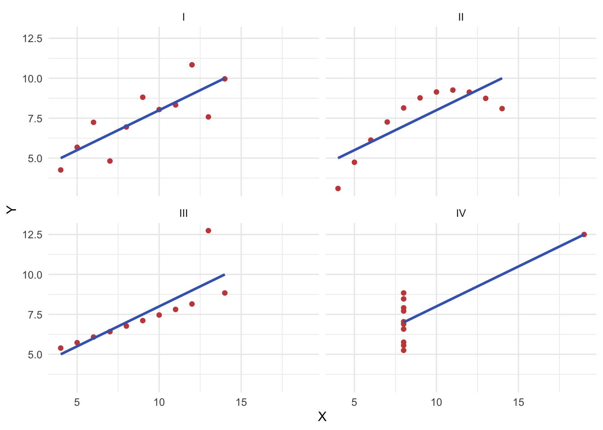
Aunque numéricamente obtenemos valores idénticos de correlación para los cuatro conjuntos, la estructura de los datos revela comportamientos distintos:
- Dataset I: la relación es aproximadamente lineal, por lo que la correlación de Pearson as adecuado.
- Dataset II: la relación es curvilíneo, siendo que \(r\) asume una relación lineal.
- Dataset III: la relación es aproximadamente lineal, pero está fuertemente influenciada por un outlier, el cual estaría sesgando la pendiente de la recta y el valor de la correlación.
- Dataset IV: la relación está completamente influenciada por un outlier, siendo que el resto de las observaciones no varían en el eje X, lo que nos daría un resultado engañoso.
Con ello, podemos darnos cuenta de que los outliers suelen tener una influencia muy alta respecto al resultado, debido a que la correlación de Pearson solo captura dependencia lineal, eso sumado a que no distingue entre relaciones lineales y no lineales, por lo que no podemos basarnos solamente en el coeficiente resultante al hacer un análisis de correlación. Para poder robustecer el resultado, normalmente haremos uso de scatter plots, eliminación o normalización de outliers y uso de pruebas más robustas.
7.1.1.2 Correlación de Spearman
Como vimos en el caso anterior, la correlación de Pearson presenta limitaciones importantes cuando los datos no cumplen con ciertos supuestos, particularmente la linealidad y la ausencia de outliers. Para abordar estos problemas, se utiliza la correlación de Spearman, una versión no paramétrica que no trabaja directamente con los valores originales de las variables, sino con sus rangos. Básicamente, cada valor es reemplazado por su posición relativa dentro del conjunto de datos, lo que hace que el coeficiente sea mucho más robusto frente a outliers y capaz de capturar relaciones no lineales, en tanto sean crecientes o decrecientes (Spearman 1904).
Formalmente, podemos definir al coeficiente de correlación de Spearman \(\rho\) como la correlación de Pearson aplicada sobre los rangos, es decir:
\[ \rho = r_{\text{rangos }(X)}, r_{\text{rangos }(Y)} \]
Lo cual implica que, si definimos las transformaciones de rango como \(R(X) = (R(x_1), \dots, R(x_n))\) y \(R(Y) = (R(y_1), \dots, R(y_n))\), entonces podemos definir \(\rho\) como:
\[ \rho = \frac{\sum_{i=1}^{n} (R(x_i) - \overline{R(x)})(R(y_i) - \overline{R(y)})}{\sqrt{\sum_{i=1}^{n} (R(x_i) - \overline{R(x)})^2} \sqrt{\sum_{i=1}^{n} (R(y_i) - \overline{R(y)})^2}} \]
Por otro lado, también tenemos el caso particular en el que no hay empates, es decir, cuando todos los valores son distintos, por lo que en ese caso los rangos corresponden exactamente a los enteros del \(1\) al \(n\), lo que cumple la condición:
\[ \overline{R(x)} = \overline{R(y)} = \frac{n+1}{2} \]
Además, la varianza de los rangos tiene una forma cerrada, por lo que, aprovechando estas propiedades, es posible reescribir el coeficiente de Spearman en términos de las diferencias entre rangos:
\[ d_i = R(x_i) - R(y_i) \]
A partir de ello, podemos calcular la forma clásica del coeficiente:
\[ \rho = 1 - \frac{6 \sum_{1 = 1}^{n} d^2_i}{n(n^2 -1)} \]
De hecho, esta expresión es particularmente útil, porque evita calcular explícitamente covarianzas y desviaciones estándar, reduciendo el problema a medir qué tan alineados están los rangos de ambas variables.
Al igual que en el caso de Pearson, el coeficiente de Spearman también puede interpretarse como el coseno del ángulo entre los vectores de rangos centrados, es decir:
\[ \rho = \frac{R(X) \cdot R(Y)}{\|R(X)\| \|R(Y)\|} \]
Lo que nos confirma que estamos midiendo similitud en la estructura de ordenamiento, no en las magnitudes originales.
Ahora bien, debemos considerar cuando existen empates en las observaciones con las que estamos trabajando, ya que en estos casos los rangos ya no son enteros consecutivos puros, sino promedios de posiciones. En estos casos, la fórmula simplificada deja de ser exacta, y se debe utilizar la definición general basada en la correlación de Pearson sobre los rangos. En la práctica, la función cor() maneja automáticamente esta situación mediante el uso de rangos promediados. Sin embargo, la presencia de empates no es completamente irrelevante, ya que puede afectar tanto el valor del coeficiente como sus propiedades inferenciales.
Vamos a retomar el ejercicio anterior, utilizando ahora el coeficiente de correlación de Spearman:
anscombe_tibble |>
group_by(dataset) |>
summarise(correlacion = cor(x, y, method = "spearman"))# A tibble: 4 × 2
dataset correlacion
<chr> <dbl>
1 I 0.818
2 II 0.691
3 III 0.991
4 IV 0.5 Como puedes darte cuenta, ahora la correlación no está influenciada de forma agresiva por outliers, ya que al trabajar con rangos en lugar de valores absolutos, la magnitud extrema de ciertas observaciones pierde relevancia y se preserva únicamente el orden relativo de los datos.
No debemos ver a este método como una forma de reemplazar al de Pearson, sino como un método complementario, ya que ambos métodos son más o menos adecuados dependiendo del contexto de los datos con los que estamos trabajanado, su dispersión observada, etc.
7.1.1.3 Matrices de correlación
Ya que discutimos la correlación en el contexto de pares de variables, el siguiente paso lógico es extender este concepto a múltiples variables de manera simultánea. Las matrices de correlación permiten capturar, de forma conjunta, el grado de asociación entre todas las combinaciones posibles dentro de un conjunto de datos, convirtiéndose en una forma rápida de analizar el conjunto de datos completo con el que estemos trabajando en la preparación para modelos predictivos.
Básicamente, una matriz de correlación es un conjunto de correlaciones en formato tabular, en las que se calcula el coeficiente de correlación (puede ser Pearson, Spearman, u otro) para todos los pares posibles de variables en nuestro conjunto de datos. Si contamos con \(p\) variables, la matriz tendrá dimensión \(p \times p\) (Pearson 1895).
Más formalmente, podemos definir una matriz de correlación como:
\[ R = \begin{pmatrix} 1 & r_{12} & \cdots & r_{1p} \\ r_{21} & 1 & \cdots & r_{2p} \\ \vdots & \vdots & \ddots & \vdots \\ r_{p1} & r_{p2} & \cdots & 1 \end{pmatrix} \]
Donde:
- \(r_{ij}\): Representa la correlación entre la variable \(i\) y la variable \(j\).
- La diagonal principal siempre es igual a \(1\), ya que cada variable está perfectamente correlacionada consigo misma.
- La matriz es simétrica, es decir, \(r_{ij} = r_{ji}\).
Algo interesante de la matriz de correlación, es que está directamente relacionada con la matriz de covarianza \(\Sigma\), siendo prácticamente una versión normalizada de esta misma, la cual podemos representar como:
\[ R = D^{-\frac{1}{2} \Sigma D-\frac{1}{2} } \]
Siendo \(\Sigma\) la matriz de covarianza, y \(D\) es una matriz diagonal con las varianzas de cada variable (\(\sigma_1^2, \dots, \sigma_p^2\)).
Así como en el cálculo de correlación individual, los valores cercanos a 1 indican una relación lineal positiva más fuerte, mientras que los cercanos a -1 indicarían una relación lineal negativa y, obviamente, los valores cercanos o iguales a 0 indicarían ortogonalidad, sin embargo, una utilidad adicional de las matrices de correlación es el poder identificar patrones que nos indiquen la presencia de variables redundantes o factores latentes, por ejemplo, en casos donde las muestras pueden presentar multicolinealidad (tema que discutiremos en el siguiente punto).
Generalmente, lo que buscamos en las matrices de correlación es que no presenten una estructura clara (obviando la diagonal principal), ya que esto nos podría estar indicando que existe independencia en las variables que estamos contrastando, aunque también debemos considerar que el poder predictivo de nuestros modelos puede ser más limitado en estos contextos.
Es importante recordar que el tipo de correlación utilizado influye directamente en la interpretación de la matriz. Una matriz basada en correlación de Pearson encontrará únicamente relaciones lineales, mientras que una basada en Spearman permitirá identificar relaciones monotónicas.
Incluso si dos variables presentan una correlación alta dentro de la matriz, esto no significa que una cause a la otra. La relación observada puede estar influenciada por variables externas no consideradas o por coincidencias estructurales dentro de los datos, razón por la que cualquier inferencia causal requiere un análisis adicional más riguroso. En muchos casos, especialmente cuando la relación surge por variables ocultas o por azar, estas asociaciones se conocen como correlación espuria (Pearl 2009)
Vamos ahora a analizar el siguiente ejemplo en R, utilizando el ya conocido Boston Housing dataset, disponible en el repositorio oficial del libro:
boston_h_data <-
read.csv(paste0("https://raw.githubusercontent.com/",
"Jorge-hercas/r-para-inteligencia-de-negocios/",
"refs/heads/main/CSV/BostonHousing.csv"))
boston_h_data |>
head() crim zn indus chas nox rm age dis rad tax ptratio b lstat
1 0.00632 18 2.31 0 0.538 6.575 65.2 4.0900 1 296 15.3 396.90 4.98
2 0.02731 0 7.07 0 0.469 6.421 78.9 4.9671 2 242 17.8 396.90 9.14
3 0.02729 0 7.07 0 0.469 7.185 61.1 4.9671 2 242 17.8 392.83 4.03
4 0.03237 0 2.18 0 0.458 6.998 45.8 6.0622 3 222 18.7 394.63 2.94
5 0.06905 0 2.18 0 0.458 7.147 54.2 6.0622 3 222 18.7 396.90 5.33
6 0.02985 0 2.18 0 0.458 6.430 58.7 6.0622 3 222 18.7 394.12 5.21
medv
1 24.0
2 21.6
3 34.7
4 33.4
5 36.2
6 28.7Como puedes ver, se trata de un dataset con múltiples variables numéricas que describen distintas características de zonas residenciales en Boston, tales como tasas de criminalidad, proporción de áreas residenciales, niveles de contaminación, número promedio de habitaciones, entre otras. Asimismo, incluye una variable objetivo (medv), que representa el valor medio de las viviendas. Al ser una tabla con únicamente variables numéricas, es un ejemplo perfecto para que veas como se relacionan las variables entre si. Comencemos generando una matriz mediante la correlación de Pearson, únicamente para las primeras cuatro variables:
boston_h_data[1:4] |>
cor(method = "pearson") crim zn indus chas
crim 1.00000000 -0.20046922 0.40658341 -0.05589158
zn -0.20046922 1.00000000 -0.53382819 -0.04269672
indus 0.40658341 -0.53382819 1.00000000 0.06293803
chas -0.05589158 -0.04269672 0.06293803 1.00000000Rápidamente, podemos darnos cuenta de que mediante el método de Pearson encontramos variables que tienen una correlación relativamente baja, aunque con casos interesantes de magnitudes de correlación positiva y negativa más altos, siendo de 0.40 entre las variables de indus y crim, mientras que las variables indus y zn tienen un valor de 0.53, razón por la que ya podemos comenzar a seleccionar información útil para hacer un análisis más profundo, pero antes de sacar conclusiones, vamos a analizar la correlación mediante el método de Spearman:
boston_h_data[1:4] |>
cor(method = "spearman") crim zn indus chas
crim 1.00000000 -0.5716602 0.73552374 0.04153689
zn -0.57166021 1.0000000 -0.64281060 -0.04193700
indus 0.73552374 -0.6428106 1.00000000 0.08984138
chas 0.04153689 -0.0419370 0.08984138 1.00000000De hecho, utilizando este segundo método, podemos observar que las magnitudes de las correlaciones cambian de forma considerable. En particular, la relación entre crim e indus pasa de aproximadamente 0.40 a 0.73, mientras que la correlación negativa entre zn e indus se intensifica de -0.53 a -0.64. Este comportamiento nos puede indicar que, aunque las relaciones entre estas variables no son estrictamente lineales, sí mantienen una tendencia monotónica clara, la cual es capturada de mejor manera por el coeficiente de Spearman.
Ahora, al trabajar con matrices de correlación que incluyen bastantes variables, como lo es el caso anterior, obviamente será complicado identificar patrones y correlaciones importantes visualmente, por lo que podemos hacer uso de un heatmap para ayudarnos a identificar de mejor manera la información que necesitamos. Vamos a construir uno a partir del dataset boston_h_data:
# Matriz de correlación para todas las variables
cor_boston <- boston_h_data |>
cor(use = "complete.obs", method = "spearman")
# Datos en formato largo para hacerlos compatibles con un ggplot
cor_long <- cor_boston |>
as.data.frame() |>
rownames_to_column(var = "var1") |>
pivot_longer(-var1, names_to = "var2", values_to = "correlation")
# Heatmap
cor_long |>
ggplot(aes(x = var1, y = var2, fill = correlation)) +
geom_tile(color = "white", linewidth = 0.3) +
geom_text(aes(label = sprintf("%.2f", correlation)), size = 2.8) +
scale_fill_gradient2(
low = "#b2182b",
mid = "white",
high = "#2166ac",
midpoint = 0,
limits = c(-1, 1)
) +
coord_fixed() +
theme_minimal(base_size = 11) +
labs(
fill = "Correlación",
x = NULL,
y = NULL
) +
theme(
axis.text.x = element_text(angle = 45, hjust = 1),
axis.text.y = element_text(size = 9),
panel.grid = element_blank(),
legend.position = "none",
legend.direction = "horizontal"
)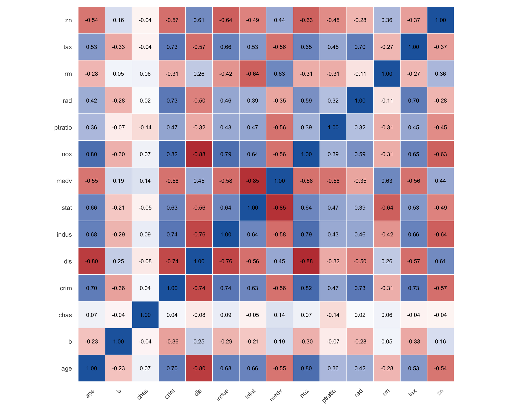
Y ahora si, rápidamente podemos darnos cuenta de cuales son las relaciones más fuertes en nuestro dataset, simplemente observando aquellas que tienen colores más profundos, por ejemplo: Podemos ver que hay una correlación negativa entre la tasa de criminalidad en la zona crim y el precio medio de la vivienda medv. ¿Esto tiene sentido? Probablemente si, siendo algo común en los países, en los que las zonas de mayor valor presentan bajos indices de criminalidad, sin embargo, no podemos sacar una conclusión apresurada basándonos únicamente en la matriz de correlación, simplemente ya sabemos a qué variables tendremos que prestarles más atención cuando comencemos a trabajar con modelos de regresión y otros tipos de pronósticos.
7.2 Regresión
No voy a negar que tengo un particular cariño por la regresión lineal, ya que suele ser el primer acercamiento de la mayoría de los analistas y científicos de datos a ésta área.
La regresión es una herramienta central dentro de la estadística y el análisis de datos que permite modelar, describir y cuantificar la relación entre una variable dependiente y una o más variables independientes, con el objetivo de entender cómo cambia la primera en función de las segundas. La regresión construye una función matemática que aproxima el comportamiento observado en los datos, y esta se compone de: Una variable dependiente (la respuesta que se desea explicar), un conjunto de variables independientes o explicativas (que determinan la forma y la pendiente de la relación), un término constante o intercepto (que representa el valor esperado de la variable dependiente cuando las variables explicativas son cero) y, finalmente, un término de error o perturbación aleatoria, que recoge factores no observados, errores de medición y cualquier otra fuente de variación no incluida explícitamente en el modelo. A partir de esta estructura, la regresión no solo permite estimar la magnitud y dirección de las relaciones entre variables, sino también realizar inferencias sobre los efectos individuales de cada predictor, usualmente interpretados como cambios marginales en la variable dependiente ante variaciones en las variables explicativas, manteniendo constantes las demás.
Normalmente nos encontraremos con dos tipos de regresiones: Regresión lineal simple y Regresión lineal múltiple, siendo que la única diferencia entre ambas es la cantidad de variables explicativas que vamos a considerar, siendo que en una regresión simple solo usamos una, mientras que en la regresión múltiple tendrá dos o más variables explicativas. Esta extensión no solo incrementa la capacidad explicativa del modelo, sino que también permite analizar el efecto de cada variable de manera condicionada a la presencia de las demás.
Las regresiones simples y múltiples son, por mucho, las más comunes en cursos universitarios y en el uso cotidiano de un científico de datos, sin embargo, no son las únicas herramientas disponibles dentro del análisis de regresión. Existen múltiples extensiones y variantes diseñadas para adaptarse a distintos tipos de datos, supuestos y objetivos analíticos, por ejemplo, cuando la relación entre las variables no es estrictamente lineal, pueden emplearse modelos de regresión no lineal o transformaciones de las variables; cuando la variable dependiente es categórica, se recurre a modelos como la regresión logística; y en presencia de problemas como la multicolinealidad o el sobreajuste, se utilizan técnicas de regularización como Ridge o Lasso, tipos de regresiones que discutiremos más adelante.
7.2.1 Regresión lineal simple
Comenzaremos por discutir la versión más simple de la regresión lineal, siendo aquella que únicamente considera a una variable explicativa para la variable a explicar (Wooldridge 2020). Para este caso, el objetivo es modelar la relación entre una variable dependiente \(y\) y una variable independiente \(x\) mediante una función lineal que capture, de la mejor manera posible, el comportamiento observado en los datos. Típicamente, la función de regresión simple será:
\[ y_i = \beta_0 + \beta_1 x_i + \varepsilon_i \]
Donde:
- \(i\) indexa las observaciones.
- \(\beta_0\) es el intercepto, o punto de origen de la función.
- \(\beta_1\) es la pendiente de la función.
- \(\varepsilon_i\) es el término de error aleatorio de la función.
Vamos ahora a estimar los parámetros mediante el método de mínimos cuadrados ordinarios. Comenzaremos partiendo del modelo poblacional anteriormente mencionado: \(y_i = \beta_0 + \beta_1 x_i + \varepsilon_i\). Básicamente, lo que buscaremos hacer es estimar tanto el intercepto \(\beta_0\) como la pendiente \(\beta_1\) a partir de la muestra de los datos con los que estemos trabajando (\(\{ (x_i, y_i)^n_{i = 1} \}\)). A partir de lo anterior, podemos definir la recta estimada:
\[ \hat{y_i} = \hat{\beta_0 } + \hat{\beta_1 } x_i \]
Además, podemos definir el residuo como:
\[ \epsilon_i = y_i - \hat{y_i} \]
Ahora, el método de mínimos cuadrados consiste en, valga la redundancia, minimizar la suma de los residuos al cuadrado:
\[ S(\beta_0, \beta_1) = \sum^n_{i = 1} (y_i - \beta_0 - \beta_1 x_i)^2 \]
Siendo un problema de optimización cuadrática de \(\beta_0\) y \(\beta_1\). Vamos ahora a calcular la derivada en la función objetivo, respecto a cada parámetro. Comenzamos por derivar \(\partial S\) respecto a \(\partial \beta_0\):
\[ \frac{\partial S}{\partial \beta_0} = -2 \sum (y_i - \beta_0 - \beta_1 x_i) = 0 \]
Resultando en:
\[ \sum y_i = n \beta_0 + \beta_1 \sum x_i \]
Ahora, vamos a derivar \(\partial S\) respecto a \(\partial \beta_1\):
\[ \frac{\partial S}{\partial \beta_1} = -2 \sum x_i(y_i - \beta_0 - \beta_1 x_i ) = 0 \]
Derivada que resultará en:
\[ \sum x_i y_i = \beta_0 \sum x_i + \beta_1 \sum x_1^2 \]
Como último paso, vamos a generar un sistema de ecuaciones normales:
\[ \sum y_i = n \beta_0 + \beta_1 \sum x_i \]
\[ \sum x_i y_i = \beta_0 \sum x_i + \beta_1 \sum x_i^2 \]
Y resolvemos el sistema para \(\beta_0\) y \(\beta_1\), lo que nos dará:
\[ \hat{\beta}_0 = \bar{y} - \hat{\beta}_1 \bar{x} \]
\[ \hat{\beta}_1 = \frac{\sum (x_i - \bar{x})(y_i - \bar{y})}{\sum (x_i - \bar{x})^2} \]
Donde:
- \(\hat{\beta_0}\) es el intercepto estimado o punto de origen estimado.
- \(\hat{\beta_1}\) es la pendiente estimada.
- \(\bar{y}\) y \(\bar{x}\) representan las medias muestrales de las variables dependiente e independiente, respectivamente.
Como puedes darte cuenta, \(\hat{\beta_1}\) no es más que la covarianza de \((x,y)\) dividida sobre varianza de \(x\):
\[ \hat{\beta_1} = \frac{Cov(x,y)}{Var(x)} \]
Ya que hemos estimado los parámetros mediante Mínimos Cuadrados Ordinarios (MCO), podemos comenzar a interpretar cómo funciona el modelo lineal simple. En realidad, la interpretación de una regresión lineal simple (RLS) es bastante sencilla, ya que el parámetro \(\hat{\beta}_1\) mide el cambio promedio en la variable dependiente \(y\) ante un incremento unitario en la variable independiente \(x\), mientras que \(\hat{\beta}_0\) representa el valor esperado de \(y\) cuando \(x = 0\) (Wooldridge 2020), por ejemplo, si suponemos un modelo con \(\beta_0 = 10\) y \(\beta_1 = 3\), la ecuación del modelo queda dada por:
\[ y_i = 10 + 3x_i + \varepsilon_i \]
Por lo tanto, si evaluamos el modelo para \(x_i = 0\), entonces tendremos:
\[ y_i = 10 + 3 \cdot 0 + \varepsilon_i \]
Resultando en un valor esperado de \(10 + \varepsilon_i\), siendo \(\varepsilon_i\) el término de error aleatorio que captura la variabilidad no explicada por el modelo.
Ahora si, vamos a la parte más interesante: Un ejemplo de modelo lineal en R. Para este primer ejercicio haremos uso del dataset boston_h_data, que ya utilizamos anteriormente en la matriz de correlación, tomando a medv como la variable a pronosticar, usando crim como la variable explicativa del modelo. Vamos a generar la ecuación correspondiente:
housing_model <- lm(boston_h_data$medv ~ boston_h_data$crim)
housing_model
Call:
lm(formula = boston_h_data$medv ~ boston_h_data$crim)
Coefficients:
(Intercept) boston_h_data$crim
24.0331 -0.4152 Nótese que, para este modelo, simplemente llamé a las variables directamente del dataset, pero de igual forma podemos llamar a las variables de forma independiente, utilizando el argumento data = boston_h_data, es decir: lm(medv ~ crim, data = boston_h_data), resultando en exactamente lo mismo.
Como puedes ver, tenemos un valor de \(\beta_0 = 24.0331\), así como un valor de \(\beta_1 = -0.4152\), lo que significa que, para un incremento en una unidad de la variable independiente \(x_i\), tendremos un decremento esperado de \(0.4152\) unidades, lo que dicho en términos del dataset que estamos trabajando, significa que, para un incremento de una unidad en la tasa de criminalidad per cápita, se espera una disminución promedio de 0.4152 miles de dólares en el valor mediano de las viviendas, mientras que, en una localidad sin criminalidad, el valor medio esperado de las viviendas sería de 24.0331 miles de dólares, eso sumado al error aleatorio no explicado por el modelo, por lo que, por ejemplo, para un valor de \(x_i = 2\), tendremos:
coef(housing_model)[1] + (coef(housing_model)[2] * 2)(Intercept)
23.20273 Ya que tenemos el modelo, podemos generar un gráfico de dispersión para visualizar mejor nuestra regresión:
boston_h_data |>
ggplot(aes(x = crim, y = medv)) +
geom_point(alpha = 0.6, color = "#4167ba") +
geom_smooth(method = "lm", se = FALSE, color = "#c74a4a") +
labs(x = "Crim", y = "Medv") +
theme_minimal()`geom_smooth()` using formula = 'y ~ x'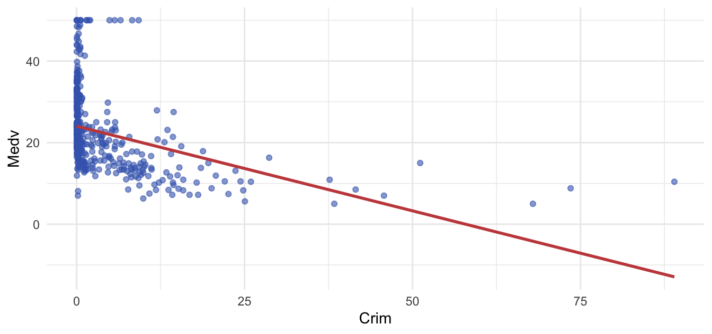
Claramente, no se trata de un modelo con un alto nivel de precisión. Esto se hace evidente al observar que, para valores similares de la variable independiente \(x\) existe una considerable dispersión en la variable dependiente \(y\), lo que indica que una gran parte de la variabilidad no está siendo explicada por el modelo, sin embargo, esta situación es común en aplicaciones reales, siendo que, en la práctica, es poco frecuente encontrar relaciones perfectamente lineales, especialmente cuando se trabaja con fenómenos complejos donde intervienen múltiples factores no que no estamos contemplando. Precisamente por ello, los modelos lineales siguen siendo herramientas fundamentales, ya que permiten aproximar relaciones y extraer patrones.
Antes de continuar con un anális más profundo de los resultados de la regresión, vamos a ahondar un poco más en el valor de los coeficientes de determinación \(R^2\) y \(R^2\) ajustada.
Como te habrás podido dar cuenta hasta ahora, la variabilidad total de \(y\) puede ser separada en dos partes:
\[ \underbrace{\sum_{i=1}^{n} (y_i - \bar{y})^2}_{\text{SST: Total}} = \underbrace{\sum_{i=1}^{n} (\hat{y}_i - \bar{y})^2}_{\text{SSR: Explicada}} + \underbrace{\sum_{i=1}^{n} (y_i - \hat{y}_i)^2}_{\text{SSE: Error}} \]
Donde:
- SST (suma de los cuadrados totales) es la variabilidad de \(y\).
- SSR (suma de los cuadrados de la regresión) es la variabilidad explicada por el modelo.
- SSE (suma del error de los cuadrados) es la variabilidad no explicada (proveniente de los errores o residuos).
Dado lo anterior, el coeficiente de determinación \(R^2\) se puede definir como la proporción de la variabilidad total explicada por el modelo, es decir:
\[ R^2 = \frac{SSR}{SST} \]
O bien:
\[ R^2 = 1- \frac{SSE}{SST} \]
Sin embargo, este coeficiente tiene un pequeño problema: El valor de \(R^2\) no disminuye y, de hecho, aumenta, conforme se vayan agregando variables, aunque estas puedan ser inútiles a nivel explicativo para la variable dependiente. El coeficiente \(R^2\) ajustada ayuda a corregir este problema, ya que penaliza la inclusión de variables poco relevantes. Podemos definir \(R^2\) como:
\[ \bar{R}^2 = 1 - \frac{\frac{SSE}{n - k - 1}}{\frac{SST}{n - 1}} \]
Donde:
- \(n\) es el número de observaciones.
- \(k\) es el número de variables explicativas.
Vamos ahora a obtener un resumen más detallado del modelo, pero quitando la notación científica primero para obtener una interpretación más clara:
options(scipen = 999)
summary(housing_model)
Call:
lm(formula = boston_h_data$medv ~ boston_h_data$crim)
Residuals:
Min 1Q Median 3Q Max
-16.957 -5.449 -2.007 2.512 29.800
Coefficients:
Estimate Std. Error t value Pr(>|t|)
(Intercept) 24.03311 0.40914 58.74 <0.0000000000000002 ***
boston_h_data$crim -0.41519 0.04389 -9.46 <0.0000000000000002 ***
---
Signif. codes: 0 '***' 0.001 '**' 0.01 '*' 0.05 '.' 0.1 ' ' 1
Residual standard error: 8.484 on 504 degrees of freedom
Multiple R-squared: 0.1508, Adjusted R-squared: 0.1491
F-statistic: 89.49 on 1 and 504 DF, p-value: < 0.00000000000000022Lo primero que podemos notar es que, tanto para el intercepto \(\beta_0\) como para la pendiente \(\beta_1\), tenemos un p-value muy cercano a 0, lo que sugiere que estos parámetros son estadísticamente significativos, sin embargo, también observamos que el coeficiente de determinación \(R^2\) únicamente explica el 15.08% de la variabilidad de la variable dependiente medv. Por su parte, la \(R^2\) ajustada toma un valor de 0.1491, muy cercano al de \(R^2\), lo cual es esperable dado que estamos trabajando con un modelo univariado. En este tipo de modelos, la diferencia entre ambos coeficientes suele ser mínima, ya que la penalización por el número de variables explicativas es prácticamente nula.
En la siguiente sección discutiremos las regresiones múltiples (y cómo estimarlas), analizando además su impacto en \(R^2\) y \(R^2\) ajustada.
7.2.2 Regresión lineal múltiple
Ya que terminamos de analizar el modelo lineal mediante una sola variable, vamos ahora a extender el desarrollo de la regresión lineal al uso de múltiples variables independientes para estimar a la variable dependiente. Lógicamente, en la práctica, la mayoría de las variables dependientes están influenciadas por múltiples factores de manera simultánea. Este modelo permite incorporar varias variables independientes dentro de una misma estructura, evaluando el efecto marginal de cada una sobre la variable dependiente, manteniendo constantes las demás (Greene 2018).
Típicamente, la función de regresión múltiple será:
\[ y_i = \beta_0 + \beta_1 x_{i1} + \beta_2 x_{i2} + ... + \beta_k x_{ik} + \varepsilon_i \]
Donde:
- \(i\) indexa las observaciones.
- \(k\) representa el número de variables explicativas en el modelo.
- \(\beta_0\) es el intercepto, o punto de origen de la función.
- \(\beta_j\) (para \(j = 1, 2, \dots, k\)) son los coeficientes asociados a cada variable explicativa.
- \(x_{ij}\) es el valor de la variable explicativa \(j\) para la observación \(i\).
- \(\varepsilon_i\) es el término de error aleatorio de la función.
Al igual que en la regresión lineal simple, el objetivo siguiente será estimar los parámetros \(\beta_0, \beta_1, \dots, \beta_k\) de tal forma que el modelo se ajuste lo mejor posible a los datos observados, lo cual se logra normalmente mediante el método de MCO que usamos en el caso previo.
Partiendo de la función de regresión múltiple poblacional (el modelo poblacional), para \(i = 1, \dots, n\), podemos simplificar la ecuación en una forma compacta de notación matricial:
\[ y = \mathbf{X}\boldsymbol{\beta} + \boldsymbol{\varepsilon} \]
Donde \(y\) es el vector de la variable dependiente:
\[ y = \begin{pmatrix} y_1 \\ y_2 \\ \vdots \\ y_n \end{pmatrix} \]
\(\mathbf{X}\) es la matriz de diseño:
\[ \mathbf{X} = \begin{pmatrix} 1 & x_{11} & x_{12} & \cdots & x_{1k} \\ 1 & x_{21} & x_{22} & \cdots & x_{2k} \\ \vdots & \vdots & \vdots & \ddots & \vdots \\ 1 & x_{n1} & x_{n2} & \cdots & x_{nk} \end{pmatrix} \]
\(\boldsymbol{\beta}\) es el vector de parámetros:
\[ \boldsymbol{\beta} = \begin{pmatrix} \beta_0 \\ \beta_1 \\ \vdots \\ \beta_k \end{pmatrix} \]
Y \(\boldsymbol{\varepsilon}\) es el vector de errores:
\[ \boldsymbol{\varepsilon} = \begin{pmatrix} \varepsilon_1 \\ \varepsilon_2 \\ \vdots \\ \varepsilon_n \end{pmatrix} \]
Por lo tanto, podemos expresar el modelo estimado como:
\[ \hat{\mathbf{y}} = \mathbf{X}\hat{\boldsymbol{\beta}} \]
Y, por su parte, expresar al vector de residuos como:
\[ \boldsymbol{\epsilon} = \mathbf{y} - \hat{\mathbf{y}} = \mathbf{y} - \mathbf{X}\hat{\boldsymbol{\beta}} \]
Como ya sabemos, el método de MCO se basa en minimizar la suma de los residuos al cuadrado, que en notación matricial se expresa como:
\[ S(\boldsymbol{\beta}) = (\mathbf{y} - \mathbf{X}\boldsymbol{\beta})^\top (\mathbf{y} - \mathbf{X}\boldsymbol{\beta}) \]
Expresión que podemos desarrollar como:
\[ S(\boldsymbol{\beta}) = \mathbf{y}^\top \mathbf{y} - 2 \boldsymbol{\beta}^\top \mathbf{X}^\top \mathbf{y} + \boldsymbol{\beta}^\top \mathbf{X}^\top \mathbf{X} \boldsymbol{\beta} \]
Por lo que, derivando respecto a \(\boldsymbol{\beta}\), tenemos:
\[ \frac{\partial S}{\partial \boldsymbol{\beta}} = -2 \mathbf{X}^\top \mathbf{y} + 2 \mathbf{X}^\top \mathbf{X} \boldsymbol{\beta} \]
Ahora, igualamos a 0 para encontrar el mínimo:
\[ -2 \mathbf{X}^\top \mathbf{y} + 2 \mathbf{X}^\top \mathbf{X} \boldsymbol{\beta} = 0 \]
\[ \mathbf{X}^\top \mathbf{X} \boldsymbol{\beta} = \mathbf{X}^\top \mathbf{y} \]
Este sistema corresponde a las ecuaciones normales en forma matricial. Si la matriz \(\mathbf{X}^\top \mathbf{X}\) es invertible, entonces podemos resolver para \(\boldsymbol{\beta}\):
\[ \hat{\boldsymbol{\beta}} = (\mathbf{X}^\top \mathbf{X})^{-1} \mathbf{X}^\top \mathbf{y} \]
Siendo esta la estimación de \(\hat{\beta}\) para el modelo de regresión múltiple (Greene 2018), donde:
- \(\hat{\beta}_j\) mide el efecto marginal de \(x_j\) sobre \(y\), manteniendo constantes las demás variables.
- \(\hat{\beta}_0\) nos da el valor estimado de \(y\) cuando todas las variables explicativas son 0.
Ya que entendimos como se construye el modelo lineal para más de una variable, así como la estimación de sus parámetros, vamos ahora a ver un ejercicio en R, retomando el dataset boston_h_data. Basándonos en la matriz de correlación que vimos anteriormente, vamos ahora a añadir una variable más al modelo: lstat, que nos indica el porcentaje de la población en un nivel socioeconómico bajo. La intuición ahora mismo nos dice que, conforme haya un mayor nivel de población en este estatus social, debería bajar el valor medio de las casas, veamos qué nos dice el modelo:
housing_model <- lm(boston_h_data$medv ~ boston_h_data$crim
+ boston_h_data$lstat)
housing_model
Call:
lm(formula = boston_h_data$medv ~ boston_h_data$crim + boston_h_data$lstat)
Coefficients:
(Intercept) boston_h_data$crim boston_h_data$lstat
34.31921 -0.07045 -0.91139 Lo que observamos ahora, es que al incorporar una segunda variable explicativa dentro del modelo, los coeficientes cambian considerablemente su magnitud. En particular, obtenemos un valor de \(\beta_0 = 34.31921\), \(\beta_1 = -0.07045\) para la variable crim, y \(\beta_2 = -0.91139\) para la variable lstat. Esto implica que, manteniendo constante el porcentaje de población de bajo nivel socioeconómico, un incremento de una unidad en la tasa de criminalidad per cápita está asociado con una disminución esperada de 0.07045 miles de dólares en el valor mediano de las viviendas. Por otro lado, manteniendo constante la tasa de criminalidad, un incremento de una unidad en lstat (es decir, un aumento de un punto porcentual en la proporción de población de bajo estatus socioeconómico) se asocia con una disminución esperada de 0.91139 miles de dólares en el valor mediano de las viviendas, siendo que este efecto es considerablemente mayor en magnitud que el de crim, lo que nos estaría diciendo que esta variable tiene un mayor poder explicativo dentro del modelo, e incluso, también podríamos suponer que en el primer modelo lineal tuvimos un sesgo por variable omitida, ya que el coeficiente asociado a la variable crim cambió drásticamente, pasando de \(-0.4152\) a \(-0.07045\).
De hecho, podríamos intentar graficar este modelo de dos variables independientes como un gráfico 3D, para darnos una mejor idea de cómo esta funcionando nuestro modelo (y su relación respecto a los datos observados). Infortunadamente, ggplot2 no permite crear gráficos de este estilo, por lo que nos las tendremos que arreglar mediante un gráfico base con persp():
crim_seq <- seq(min(boston_h_data$crim),
max(boston_h_data$crim), length.out = 40)
lstat_seq <- seq(min(boston_h_data$lstat),
max(boston_h_data$lstat), length.out = 40)
grid <- expand.grid(crim = crim_seq, lstat = lstat_seq)
z <- matrix(predict(housing_model, newdata = grid),
nrow = length(crim_seq),
ncol = length(lstat_seq))
# Plano
p1 <- persp(x = crim_seq, y = lstat_seq, z = z, theta = 0,
phi = 20, col = adjustcolor("#4C72B0", alpha.f = 0.6),
border = NA, ticktype = "detailed", xlab = "crim",
ylab = "", zlab = "medv", main = NULL)
# Puntos
pts1 <- trans3d(x = boston_h_data$crim,
y = boston_h_data$lstat,
z = boston_h_data$medv,
pmat = p1)
points(pts1,
col = adjustcolor("#C44E52", alpha.f = 0.6),
pch = 16,
cex = 0.7)De esta forma, la representación tridimensional nos permite visualizar de manera más intuitiva la estructura del modelo estimado. En particular, el plano mostrado corresponde a la superficie de regresión definida por la combinación lineal de las variables crim y lstat, mientras que los puntos representan los valores observados en los datos. La distancia vertical entre cada punto y el plano puede interpretarse como el residuo del modelo, lo cual facilita entender gráficamente el ajuste: mientras más cercanos estén los puntos al plano, mejor es la capacidad de nuestro modelo de explicar esa región de los datos.
Evidentemente, solo es posible visualizar directamente modelos con hasta dos variables explicativas (más la variable dependiente), ya que estamos restringidos a tres dimensiones espaciales. Cuando trabajemos con modelos que tengan más variables, tendremos que apoyarnos en herramientas alternativas como análisis de coeficientes, pruebas de significancia, etc.
Regresemos ahora a los resultados de la regresión, y vamos a obtener más detalles de los resultados:
summary(housing_model)
Call:
lm(formula = boston_h_data$medv ~ boston_h_data$crim + boston_h_data$lstat)
Residuals:
Min 1Q Median 3Q Max
-15.234 -3.987 -1.513 2.138 25.017
Coefficients:
Estimate Std. Error t value Pr(>|t|)
(Intercept) 34.31921 0.57374 59.816 <0.0000000000000002 ***
boston_h_data$crim -0.07045 0.03602 -1.956 0.0511 .
boston_h_data$lstat -0.91139 0.04339 -21.004 <0.0000000000000002 ***
---
Signif. codes: 0 '***' 0.001 '**' 0.01 '*' 0.05 '.' 0.1 ' ' 1
Residual standard error: 6.198 on 503 degrees of freedom
Multiple R-squared: 0.5476, Adjusted R-squared: 0.5458
F-statistic: 304.4 on 2 and 503 DF, p-value: < 0.00000000000000022Como podemos darnos cuenta rápidamente, lstat como regresor adicional es estadísticamente (y muy altamente) significativo, lo que implica que existe evidencia para afirmar que esta variable tiene un efecto real sobre el valor medio de las viviendas. Lo realmente interesante ocurre cuando comparamos a la variable crim, ya que al incluir lstat al modelo, entonces crim pierde significancia estadística (a un nivel de significancia del 5%), lo que de hecho si nos podría indicar que el modelo univariado original que planteamos tenía un sesgo por variables omitidas. Es importante notar que, además, la \(R^2\) y \(R^2\) ajustadas incrementaron su valor significativamente (a \(0.5476\) y \(0.5458\), respectivamente), siendo que ahora prácticamente más de la mitad de la variabilidad es explicada por el modelo.
Vamos ahora a interpretar el estadístico \(F\) que tenemos de nuestra regresión múltiple. La idea de este estadístico no es más que la de realizar una prueba de significancia conjunta de los coeficientes del modelo, es decir, queremos contrastar la siguiente hipótesis:
\[ H_0: \beta_1 = \beta_2 = \cdots = \beta_k = 0 \\ \]
\[ H_1: \text{al menos uno } \beta_j \neq 0 \]
Dicho de otra manera, bajo la hipótesis nula estamos planteando que ninguna de las variables explicativas tiene poder para explicar a la variable dependiente, por lo que el modelo completo no sería mejor que un modelo que únicamente incluye al intercepto.
Para calcular el estadístico \(F\), partimos de la descomposición de la variabilidad del modelo que ya vimos anteriormente (por lo que será redundante volver a explicarla):
\[ SST=SSR+SSE \]
Lo que buscamos mediante este estadístico es saber qué tanta variabilidad explica el modelo por parámetro, respecto a la variabilidad residual por grado de libertad, es decir:
\[ F = \frac{MSR}{MSE} \]
Donde:
- \(MSR\) es la media de cuadrados explicada \(\frac{SSR}{k}\)
- \(MSE\) es la media de cuadrados del error \(\frac{SSE}{n-k-1}\)
Por lo tanto, el estadístico \(F\) estará definido como:
\[ \frac{\frac{SSR}{k}}{\frac{SSE}{n-k-1}} \]
De hecho, a partir de la \(R^2\) también podemos calcular el estadístico. Teniendo:
\[ R^2 = \frac{SSR}{SST} \]
Podemos definir al estadístico como:
\[ F = \frac{\left( \frac{R^2 }{k} \right) }{ \left( \frac{(1 - R^2)}{(n - k - 1)} \right )} \]
Finalmente, la interpretación del estadístico es muy sencilla, ya que valores cercanos a 1 indicarán que el modelo no aporta poder explicativo relevante, mientras que valores elevados de \(F\) indicarán que el modelo logra capturar una proporción importante de la variabilidad de la variable dependiente. En este caso particular obtuvimos un valor de \(F = 304.4\), por lo que podemos rechazar la hipótesis nula y decir que las variables de nuestro modelo sí tienen poder explicativo sobre el valor mediano de las viviendas.
7.2.2.1 Causalidad inversa y test de Hausman
En este punto del análisis de los resultados que vimos en el punto anterior, tiene sentido preguntarse si la relación observada entre lstat y el valor de las viviendas medv puede interpretarse como causal. En específico, surge la duda de cuál es la dirección de esta relación: ¿Un mayor porcentaje de población de bajo nivel socioeconómico provoca una disminución en el valor de las viviendas, o bien son los precios bajos los que atraen a este tipo de población?
Antes de evaluar los supuestos estadísticos más habituales del modelo, me gustaría ahondar un poco más en el problema de causalidad inversa, una situación en la que la variable explicativa no solo afecta a la variable dependiente, sino que también es afectada por ella. Matemáticamente, estaríamos diciendo que la variable lstat estaría correlacionada con el término de error, tal que:
\[ E(\varepsilon_i \, | \, \text{lstat}_i) = 0 \]
Y esto es un problema importante, porque viola uno de los supuestos del modelo de regresión clásico: La exogeneidad. Cuando este supuesto no se cumple, los estimadores dejan de ser insesgados y consistentes, lo que invalida la interpretación de los coeficientes.
En la regresión que generamos en el punto anterior, es perfectamente posible que nos encontremos ante un mecanismo bidireccional. Por un lado, un mayor porcentaje de población con menor nivel socioeconómico puede presionar a la baja los precios de las viviendas debido a factores como menor demanda, menor inversión en infraestructura o percepciones de menor calidad del entorno, mientras que, por el otro lado, es posible que zonas con viviendas más baratas resultan más accesibles para este segmento de la población, generando así un efecto de bucle.
Antes de buscar una solución a este problema, primero debemos confirmar que, en efecto, esta situación se está dando en nuestro modelo, por lo que podemos hacer uso del test de Hausman, el cual permite contrastar si existe una diferencia sistemática entre dos estimadores: Uno consistente bajo la hipótesis nula (MCO) y otro consistente bajo la alternativa (Hausman 1978). Lógicamente, la prueba de hipótesis será:
\[ \begin{aligned} H_0&: \text{No hay endogeneidad} \\ H_1&: \text{Hay endogeneidad} \end{aligned} \]
A partir de esta prueba de hipótesis, la lógica del test consiste en comparar directamente los estimadores obtenidos por ambos métodos. Siendo \(\hat{\boldsymbol{\beta}}{OLS}\) el estimador por MCO y \(\hat{\boldsymbol{\beta}}{IV}\) el estimador obtenido mediante variables instrumentales2 (Hayashi 2000), definimos la diferencia entre ambos como:
\[ \mathbf{d} = \hat{\boldsymbol{\beta}}_{IV} - \hat{\boldsymbol{\beta}}_{OLS} \]
Para construir el estadístico de prueba, debemos considerar la varianza de esta diferencia, la cual podemos definir como:
\[ \mathrm{Var}(\mathbf{d}) = \mathrm{Var}(\hat{\boldsymbol{\beta}}_{IV}) - \mathrm{Var}(\hat{\boldsymbol{\beta}}_{OLS}) \]
Por lo tanto, el estadístico de Hausman puede ser definido como:
\[ H = \mathbf{d}^\top \left[ \mathrm{Var}(\hat{\boldsymbol{\beta}}_{IV}) - \mathrm{Var}(\hat{\boldsymbol{\beta}}_{OLS}) \right]^{-1} \mathbf{d} \]
En su forma matricial compacta.
La regla de decisión del test es bastante intuitiva, ya que si el valor del estadístico \(H\) es suficientemente grande (o equivalentemente, si el p-value es menor al nivel de significancia), entonces rechazamos la hipótesis nula, concluyendo que existe evidencia de endogeneidad en el modelo.
Vamos a averiguar si estamos teniendo este problema en nuestro ejercicio de regresión múltiple, creando un sencillo test en R:
library(AER) # variables instrumentales
library(sandwich) # test de Hausman
# Recreación del modelo mediante variables instrumentales
iv_model <- ivreg(boston_h_data$medv
~ boston_h_data$crim
+ boston_h_data$lstat
| boston_h_data$crim
+ boston_h_data$rm)
# Test de Hausman
# Coeficientes
b_ols <- coef(housing_model)
b_iv <- coef(iv_model)
# Matrices de varianza robustas
V_ols <- vcovHC(housing_model, type = "HC1")
V_iv <- vcovHC(iv_model, type = "HC1")
# Diferencia
d <- b_iv - b_ols
# Estadístico de Hausman
H <- t(d) %*% solve(V_iv - V_ols) %*% d
# p-value
p_value <- pchisq(H, df = length(d), lower.tail = FALSE)
# Resultados
H [,1]
[1,] 35.29799p_value [,1]
[1,] 0.0000001053837Como puedes darte cuenta, el valor del estadístico de Hausman es \(H = 35.29799\), mientras que el p-value es muy cercano a cero (\(1.05 \times 10^{-7}\)), resultado que nos hace rechazar la hipótesis nula y, por ende, podemos decir que existe evidencia estadísticamente significativa de que al menos una de las variables independientes (muy probablemente lstat) esten correlacionadas con el término de error. Dicho de otra manera, esto significa que el modelo está confundiendo causas con efectos. No podemos estar seguros de que lstat realmente está afectando el precio de las viviendas, o si en realidad los precios también están influyendo en lstat, o si ambas variables están siendo afectadas por algo más que no estamos viendo.
Vamos a revisar brevemente los resultados de la regresión con variables instrumentales:
summary(iv_model)
Call:
ivreg(formula = boston_h_data$medv ~ boston_h_data$crim + boston_h_data$lstat |
boston_h_data$crim + boston_h_data$rm)
Residuals:
Min 1Q Median 3Q Max
-19.181 -5.187 -0.973 3.442 27.554
Coefficients:
Estimate Std. Error t value Pr(>|t|)
(Intercept) 41.29291 1.04234 39.615 < 0.0000000000000002 ***
boston_h_data$crim 0.16328 0.05022 3.251 0.00123 **
boston_h_data$lstat -1.52928 0.08686 -17.606 < 0.0000000000000002 ***
---
Signif. codes: 0 '***' 0.001 '**' 0.01 '*' 0.05 '.' 0.1 ' ' 1
Residual standard error: 7.342 on 503 degrees of freedom
Multiple R-Squared: 0.3652, Adjusted R-squared: 0.3627
Wald test: 214.7 on 2 and 503 DF, p-value: < 0.00000000000000022 Al comparar estos resultados con los obtenidos mediante MCO, se observa un cambio relevante en la magnitud e incluso en el signo de algunos coeficientes, particularmente en el caso de crim, que ahora presenta un coeficiente positivo y estadísticamente significativo. Podemos decir que, una vez corregido el problema de endogeneidad mediante variables instrumentales, la relación estimada entre la criminalidad y el valor de las viviendas es considerablemente diferente, respecto a lo que se obtenía bajo el supuesto de exogeneidad. Por otra parte, la variable lstat mantiene un efecto negativo y con un coeficiente estadísticamente significativo, lo que podría estarnos indicando que, en efecto, el impacto de esta variable estaba siendo subestimado en el modelo original.
Cuando nos enfrentamos a este problema de endogeneidad al momento de hacer una regresión, los resultados que obtenemos con MCO no son del todo confiables para sacar conclusiones sobre causalidad, y necesitamos usar métodos más robustos, como variables instrumentales (que acabamos de usar), que nos ayuden a aislar mejor el verdadero efecto de las variables, aunque este enfoque no está exento de limitaciones importantes. La validez de los resultados depende críticamente de la calidad del instrumento utilizado, siendo que si el instrumento no cumple estrictamente con las condiciones de relevancia y exogeneidad, entonces las estimaciones pueden ser incluso más sesgadas que las obtenidas por MCO.
7.2.3 Breve análisis de los supuestos estadísticos
Vamos ahora a discutir los supuestos que se deben cumplir para que podamos confiar en los resultados de un modelo de regresión. Básicamente, el análisis de supuestos nos permitirá evaluar si el modelo está correctamente especificado o si existen problemas relacionados al modelo. En particular, vamos a discutir los siguientes supuestos:
- Homocedasticidad en el modelo (problema de heterocedasticidad).
- Ausencia de autocorrelación en el modelo.
- Ausencia de multicolinealidad en el modelo.
- Normalidad de los errores en el modelo.
Como recordarás, algunos de estos supuestos fueron abordados brevemente en el capítulo anterior. Sin embargo, al tratarse de un capítulo enfocado al análisis exploratorio de datos, únicamente los discutimos desde una perspectiva visual, sin profundizar en pruebas estadísticas formales. Esto cambia en el presente capítulo, ya que, habiendo desarrollado previamente el modelo de regresión lineal, contamos con los elementos necesarios para analizar estos supuestos con mayor rigor.
En el caso particular del supuesto de normalidad de los errores, no entraremos en detalle en las pruebas estadísticas, dado que en el capítulo anterior ya se discutieron pruebas como Shapiro-Wilk test, Jarque-Bera test y Kolmogorov-Smirnov test. Estas pueden aplicarse de la misma forma a los residuos estimados de un modelo de regresión que a una variable individual en R, por lo que resultaría redundante volver a desarrollarlas. Únicamente nos centraremos en discutir resoluciones a un posible problema de no normalidad en los residuos.
7.2.3.1 Homogeneidad de varianzas, de nuevo (Homoscedasticidad)
Ya hemos explicado previamente lo que implica que exista heteroscedasticidad en un modelo de regresión lineal, pero vamos a verlo brevemente una vez más.
Matemáticamente, podemos decir que un modelo presenta homoscedasticidad cuando la varianza del término de error es constante para todas las observaciones, es decir:
\[ \mathrm{Var}(\varepsilon_i \mid X) = \sigma^2 \quad \forall i \]
Esto significa que el “nivel de ruido” o la dispersión de los errores del modelo se mantiene similar sin importar el valor de las variables explicativas o de las predicciones, es decir, el modelo se equivoca casi en la misma magnitud a lo largo de todo el rango de los datos. En caso contrario, cuando la dispersión de los errores no es constante a lo largo de los valores pronosticados, entonces nos encontramos ante un caso de heteroscedasticidad, problema que queremos identificar y evitar.
La heteroscedasticidad per se no invalida a los estimadores de MCO, ya que siguen siendo insesgados y consistentes, sin embargo, sí implica que dejan de ser eficientes y que los errores estándar están mal estimados, lo que vuelve poco confiables las pruebas de hipótesis y los intervalos de confianza
A diferencia del capítulo anterior, donde nos centramos únicamente en identificar esta propiedad de forma visual, ahora podemos abordarlo de manera más rigurosa a partir del análisis de los residuos del modelo. Una de las herramientas más utilizadas para detectar esta situación es el gráfico de residuos contra valores ajustados, en el cual buscamos detectar patrones sistemáticos en la dispersión: si los residuos se expanden o contraen a medida que aumentan los valores predichos, esto es un indicio claro de heteroscedasticidad. Además del análisis gráfico, existen pruebas estadísticas formales que nos permiten contrastar este supuesto, siendo las más utilizadas la prueba de Breusch-Pagan y la prueba de White, las cuales evalúan si la varianza de los errores depende sistemáticamente de las variables explicativas (Breusch and Pagan 1979).
Vamos ahora a retomar la regresión múltiple que desarrollamos anteriormente (la original, sin considerar variables instrumentales), y comenzaremos generando un gráfico de residuos contra valores ajustados, para empezar por darnos una idea de la estructura de la varianza de los errores a lo largo del rango de valores predichos por el modelo:
# Creamos una tibble con los valores ajustados y residuos
df_res <- tibble(
fitted = fitted(housing_model),
residuals = resid(housing_model)
)
df_res |>
ggplot(aes(x = fitted, y = residuals)) +
geom_point(alpha = 0.6, color = "#4C72B0") +
geom_hline(yintercept = 0, linetype = "dashed", color = "#C44E52") +
labs(
x = "Valores ajustados",
y = "Residuos"
) +
theme_minimal()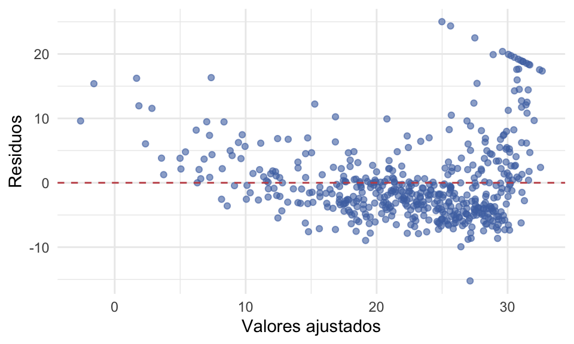
Claramente, podemos darnos cuenta de que la dispersión de los residuos no se mantiene constante a lo largo de los valores ajustados, si no que, para valores bajos y medios, los residuos parecen relativamente concentrados alrededor de cero, mientras que conforme aumentan los valores ajustados, la variabilidad de los residuos se incrementa de forma notable, generando una especie de patrón en abanico. Este comportamiento normalmente es un primer indicativo de un problema de heteroscedasticidad, siendo que la varianza constante de los errores no se está cumpliendo en este modelo.
Ya que comenzamos a sospechar la presencia de heteroscedasticidad es nuestro modelo, dados los resultados del gráfico anterior, vamos ahora a obtener una respuesta más contundente utilizando las pruebas formales de Breusch-Pagan y White.
7.2.3.1.1 Prueba de Breusch-Pagan
Como primer escenario para detectar de manera formal el problema de heteroscedasticidad en nuestro modelo, comenzaremos con la prueba B-P, propuesta por Trevor Breusch y Adrian Pagan en 1979. Esta prueba permite evaluar de manera formal si la varianza de los errores del modelo depende sistemáticamente de las variables explicativas, lo cual violaría el supuesto de homoscedasticidad (Breusch and Pagan 1979).
El propósito principal de la prueba es contrastar si la varianza de los residuos es constante o si, por el contrario, está relacionada con una o más variables independientes del modelo, tal cual mencionamos anteriormente, por lo que para ello, la prueba se basará en analizar si los residuos al cuadrado pueden ser explicados por las variables explicativas originales.
Matemáticamente, el planteamiento parte de suponer que la varianza del término de error puede expresarse como:
\[ \mathrm{Var}(\varepsilon_i \mid X) = \sigma^2 h(Z_i) \]
Donde \(h(Z_i)\) es una función de un conjunto de variables explicativas (que pueden coincidir con las del modelo original).
Como seguramente ya te diste cuenta, la ecuación mostrada es muy parecida a la establecida en el inicio de esta sección para indicar la homoscedasticidad de un modelo (\(\mathrm{Var}(\varepsilon_i \mid X) = \sigma^2 \quad \forall i\)), sin embargo, la diferencia fundamental radica en que ahora la varianza del término de error ya no se asume constante, sino que puede variar sistemáticamente en función de las variables explicativas.
Ahora, la prueba B-P consiste en estimar una regresión auxiliar donde los residuos al cuadrado del modelo original, \(\hat{\varepsilon}_i^2\), se regresan sobre las variables explicativas, es decir:
\[ \hat{\varepsilon}_i^2 = \alpha_0 + \alpha_1 X_{1i} + + \alpha_2 X_{2i} + ... + u_i \]
Y a partir de esta regresión auxiliar, se construye el estadístico de prueba:
\[ LM = n \cdot R^2 \]
Donde:
- \(n\) es el tamaño de la muestra.
- \(R^2\) es el coeficiente de determinación de la regresión auxiliar.
Bajo la hipótesis nula, este estadístico se distribuye asintóticamente como una \(\chi^2\) con \(k\) grados de libertad, donde \(k\) es el número de variables explicativas (excluyendo la constante).
Respectivamente, podemos definir la prueba de hipótesis como:
- Hipótesis nula \(H_0\): La varianza de los errores es constante (homoscedasticidad).
- Hipótesis alternativa \(H_1\): La varianza de los errores depende de las variables explicativas (heteroscedasticidad).
Es importante destacar que la prueba de Breusch-Pagan asume una forma funcional lineal en la relación entre la varianza de los errores y las variables explicativas. Por esta razón, en presencia de formas más complejas de heteroscedasticidad, suele complementarse con la prueba de White (que discutiremos en la siguiente sección), que permite detectar patrones más generales sin imponer una estructura específica.
Vamos ahora a ver un ejemplo en R de la prueba, utilizando nuestro modelo lineal original housing_model:
library(lmtest)
bptest(housing_model)
studentized Breusch-Pagan test
data: housing_model
BP = 20.884, df = 2, p-value = 0.00002917Como puedes darte cuenta, el p-value es considerablemente más pequeño que el nivel de significancia al 5%, por lo que podemos rechazar la hipótesis nula de homoscedasticidad y concluir que la varianza de los errores no es constante, ya que depende de las variables explicativas incluidas en el modelo.
Este resultado es consistente con lo observado previamente en el gráfico de residuos contra valores ajustados, donde ya se apreciaba un patrón en la dispersión de los errores.
7.2.3.1.2 Prueba de White
Como segundo enfoque para detectar de manera formal la presencia de heteroscedasticidad en nuestro modelo, utilizaremos la prueba de White, propuesta por Halbert White en 1980. A diferencia de la prueba de Breusch-Pagan, esta prueba no impone una forma funcional específica sobre la relación entre la varianza de los errores y las variables explicativas, lo que la convierte en una herramienta más general y flexible.
El propósito principal de la prueba de White es, al igual que en el caso anterior, contrastar si la varianza de los residuos es constante o si depende de las variables explicativas. Sin embargo, en este caso no se asume que dicha relación sea lineal, sino que se permite capturar estructuras más complejas, incluyendo efectos no lineales e interacciones entre variables (White 1980).
Matemáticamente, el planteamiento sigue partiendo de la misma idea general:
\[ \mathrm{Var}(\varepsilon_i \mid X) = \sigma^2 h(Z_i) \]
Sin embargo, en la prueba de White, la función \(h(Z_i)\) se especifica de manera más amplia, incorporando no solo las variables explicativas originales, sino también sus términos cuadrados y productos cruzados.
Básicamente, la prueba consiste en estimar una regresión auxiliar donde los residuos al cuadrado del modelo original, \(\hat{\varepsilon}_i^2\), se regresan sobre las variables explicativas originales, los cuadrados de dichas variables y las interacciones entre ellas, teniendo una forma más general:
\[ \hat{\varepsilon}_i^2 = \alpha_0 + \alpha_1 X_{1i} + \alpha_2 X_{2i} + \alpha_3 X_{1i}^2 + \alpha_4 X_{2i}^2 + \alpha_5 X_{1i}X_{2i} + \cdots + u_i \]
Al igual que en la prueba de Breusch-Pagan, a partir de esta regresión se construye el estadístico:
\[ LM = n \cdot R^2 \]
Donde:
- \(n\) es el tamaño de la muestra.
- \(R^2\) es el coeficiente de determinación de la regresión auxiliar.
Bajo la hipótesis nula, este estadístico sigue una distribución asintótica \(\chi^2\) con grados de libertad iguales al número de regresores (excluyendo la constante) en la regresión auxiliar.
Respectivamente, la prueba de hipótesis se define como:
- Hipótesis nula \(H_0\): La varianza de los errores es constante (homoscedasticidad).
- Hipótesis alternativa \(H_1\): La varianza de los errores no es constante (heteroscedasticidad de forma general).
Como es de esperarse, vamos ahora a ver un ejemplo rápido de la prueba de White en R, utilizando nuestro dataset original housing_model. Para esta prueba, vamos a utilizar la misma función bptest(), pero modificada, incluyendo los valores ajustados y su término cuadrático como aproximación a la estructura no lineal de la varianza:
bptest(housing_model, ~ fitted(housing_model) + I(fitted(housing_model)^2))
studentized Breusch-Pagan test
data: housing_model
BP = 77.336, df = 2, p-value < 0.00000000000000022Tal como en el caso anterior, podemos darnos cuenta de que el p-value es bastante más pequeño que el nivel de significancia al 5%, por lo que podemos rechazar la hipótesis nula de homoscedasticidad y concluir, una vez más, que la varianza de los errores no es constante, ya que depende de las variables explicativas incluidas en el modelo.
Así que si, prácticamente podemos confirmar que nos encontramos ante un caso de heteroscedasticidad en el modelo planteado.
Como nota adicional, dado que esta versión de la prueba está capturando estructuras más generales, es muy probable que la heteroscedasticidad presente no sea simplemente lineal, sino que incluya patrones más complejos.
Ya que discutimos cómo identificar la heteroscedasticidad en un modelo, lógicamente viene la siguiente pregunta a nuestras mentes: ¿Cómo corregir este problema?
En términos generales, existen varias estrategias para abordar la heteroscedasticidad, y la elección de cada una dependerá tanto del origen del problema como del objetivo del análisis. Una de las soluciones más utilizadas consiste en emplear errores estándar robustos (también conocidos como errores estándar de White), los cuales ajustan la estimación de la varianza de los coeficientes sin modificar los estimadores de MCO, permitiendo así realizar inferencia estadística válida incluso en presencia de heteroscedasticidad.
Otra alternativa común es la transformación de variables, por ejemplo, aplicando logaritmos a la variable dependiente o a algunas variables explicativas, lo cual suele estabilizar la varianza cuando esta crece con el nivel de la variable. Asimismo, en ciertos casos puede ser conveniente replantear la especificación del modelo, incorporando variables relevantes que estén capturando la fuente de la heteroscedasticidad o considerando formas funcionales más adecuadas.
7.2.3.2 Independencia de los errores, de nuevo (Autocorrelación)
Tal como en el caso de la heteroscedasticidad, seguramente recordarás que en el capítulo previo también discutimos brevemente como identificar posibles casos de autocorrelación de forma visual, utilizando diferentes tipos de gráficos, así como los famosos correlogramas, por lo que en esta sección no será necesario explicar como funcionan estos últimos, aunque si vamos a utilizarlos para analizar brevemente la naturaleza de nuestros datos en términos de autocorrelación.
Matemáticamente, podemos decir que un modelo cumple con el supuesto de independencia cuando los términos de error no están correlacionados entre sí, es decir:
\[ \mathrm{Cov}(\varepsilon_i, \varepsilon_j \mid X) = 0 \quad \forall i \neq j \]
Esto significa que los errores del modelo no contienen información sistemática a lo largo de las observaciones, es decir, que el error cometido en una observación no depende del error cometido en otra. En otras palabras, no existe un patrón temporal, secuencial o estructural en los residuos. En caso contrario, cuando los errores presentan dependencia (por ejemplo, cuando un error positivo tiende a ser seguido por otro error positivo) entonces estamos frente a un problema de autocorrelación, el cual es especialmente común en datos de series de tiempo o datos ordenados, aunque también puede presentarse en datos que no tengan una estructura temporal definida.
Vamos a retomar una vez más nuestro modelo usado para la regresión múltiple discutida previamente, Para comenzar el análisis de posibles casos de autocorrelación, iniciaremos con un sencillo correlograma:
# Calculamos la ACF de los residuos
acf_res <- acf(resid(housing_model), plot = FALSE)
# Creamos el data frame para ggplot
acf_df <- tibble(
lag = acf_res$lag[-1], # quitamos lag 0
acf = acf_res$acf[-1]
)
# Límite de confianza (aprox. 95%)
n <- length(resid(housing_model))
conf_limit <- 1.96 / sqrt(n)
# Correlograma
acf_df |>
ggplot(aes(x = lag, y = acf)) +
geom_hline(yintercept = 0, linewidth = 0.4, color = "gray50") +
geom_segment(
aes(xend = lag, yend = 0),
color = "#c74a4a",
linewidth = 0.8
) +
geom_hline(
yintercept = c(-conf_limit, conf_limit),
linetype = "dashed",
color = "gray60"
) +
labs(
x = "Rezago",
y = "Autocorrelación"
) +
theme_minimal()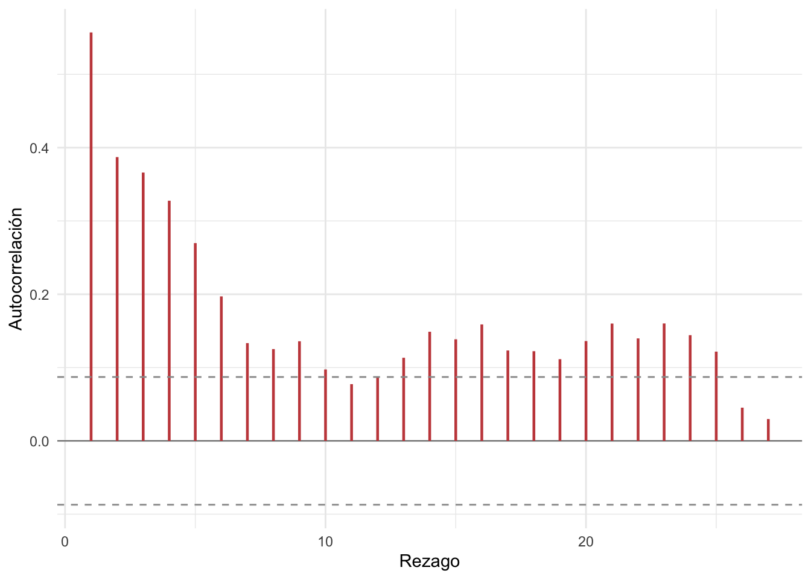
Infortunadamente, el correlograma nos estaría mostrando que no es consistente con el supuesto de independencia de los errores, ya que los coeficientes de autocorrelación en los primeros rezagos (especialmente del 1 al 6) son positivos, relativamente altos y decrecen de forma gradual, siendo un patrón común en casos de autocorrelación positiva persistente. Además, muchas barras sobrepasan claramente las bandas de confianza, lo que indica que esas autocorrelaciones son estadísticamente significativas. Lo normal sería que la mayoría de los rezagos (excepto el 0) estén dentro de esas bandas de confianza.
Por ahora, podemos comenzar a sospechar de un problema de autocorrelación en nuestro modelo, ya que hay evidencia clara de autocorrelación positiva en los residuos, pero vamos a confirmar esto utilizando las pruebas formales de Durbin-Watson y Breusch-Godfrey, que discutiremos a continuación.
7.2.3.2.1 Prueba de Durbin-Watson
Como primer prueba formal para la detección formal de autocorrelación en los residuos de nuestro modelo, utilizaremos la prueba Durbin-Watson (D-W), propuesta por James Durbin y Geoffrey Watson en 1950. Esta prueba está específicamente diseñada para detectar autocorrelación de primer orden en los errores de un modelo de regresión lineal, es decir, dependencia entre \(\varepsilon_i\) y \(\varepsilon_{i-1}\). Si bien esta prueba puede dar indicios de problemas más complejos, no permite identificar ni modelar adecuadamente autocorrelaciones de orden superior (Durbin and Watson 1950).
Ahora, el objectivo principal de la prueba es evaluar si los residuos consecutivos están correlacionados, lo cual implicaría una violación directa del supuesto de independencia de los errores que discutimos previamente.
Matemáticamente, podemos definir al estadístico de Durbin-Watson se define como:
\[ DW = \frac{\sum_{i=2}^{n} (\hat{\varepsilon}_i - \hat{\varepsilon}_{i-1})^2}{\sum_{i=1}^{n} \hat{\varepsilon}_i^2} \]
Donde:
- \(\hat{\varepsilon}_i\) son los residuos estimados del modelo.
- \(n\) es el número de observaciones.
La lógica detrás de este estadístico es bastante intuitiva: Si no existe autocorrelación, las diferencias entre residuos consecutivos deberían ser relativamente grandes y aleatorias, pero en cambio, si hay autocorrelación positiva, los residuos tienden a moverse en la misma dirección, por lo que las diferencias entre ellos serán pequeñas.
El estadístico \(DW\) toma valores en el intervalo \([0, 4]\), y se pueden interpretar como:
- \(DW \approx 2\): No hay autocorrelación.
- \(DW < 2\): Existe autocorrelación positiva.
- \(DW > 2\): Existe autocorrelación negativa.
Respectivamente, podemos plantear la prueba de hipótesis como:
- Hipótesis nula \(H_0\): No existe autocorrelación de primer orden (\(\rho = 0\)).
- Hipótesis alternativa \(H_1\): Existe autocorrelación de primer orden (\(\rho \neq 0\)).
Es importante notar que, a diferencia de otras pruebas como la de Breusch-Pagan, la distribución exacta del estadístico de Durbin-Watson no es una \(\chi^2\), sino que depende de los valores de las variables explicativas del modelo, por esta razón, normalmente se utilizan tablas con valores críticos inferiores (\(d_L\)) y superiores (\(d_U\)) para tomar decisiones formales. Sin embargo, en la práctica moderna, los paquetes estadísticos suelen proporcionar directamente un p-value aproximado.
Vamos ahora a aplicar la prueba en R utilizando nuestro modelo housing_model:
library(lmtest)
dwtest(housing_model)
Durbin-Watson test
data: housing_model
DW = 0.8719, p-value < 0.00000000000000022
alternative hypothesis: true autocorrelation is greater than 0Nótese que estoy llamando de nuevo a la librería lmtest, ya que de ahí viene la función dwtest() utilizada para calcular el estadístico \(DW\). Dado que no es una librería tan común como otras empleadas a lo largo de este libro, resulta conveniente explicitar su origen para mayor claridad del lector.
Ahora bien, viendo los resultados de esta prueba, rápidamente podemos darnos cuenta de que el estadístico de Durbin-Watson es considerablemente menor que 2 (\(DW = 0.8719\)), lo cual ya nos da una primera señal clara de la presencia de autocorrelación positiva en los residuos. Por otro lado, el p-value es extremadamente pequeño (\(< 2.2 \times 10^{-16}\)), muy por debajo del nivel de significancia al 5%, por lo que podemos rechazar con total contundencia la hipótesis nula de no autocorrelación de primer orden.
Como con cada problema individual que puede presentar un modelo, la autocorrelación puede ser solucionada de distintas formas, y la elección de la estrategia adecuada dependerá principalmente de su origen y de los objetivos del análisis. En muchos casos, este problema surge por una mala especificación del modelo, por lo que una primera solución consiste en incorporar variables relevantes o introducir términos dinámicos, como rezagos de la variable dependiente o explicativas. Alternativamente, si los datos presentan tendencia o no estacionariedad, puede recurrirse a transformaciones como la diferenciación (aunque esto será problema de las series de tiempo, que discutiremos más adelante). En casos más específicos, cuando se busca modelar explícitamente la dependencia en los errores, es posible utilizar métodos como Mínimos Cuadrados Generalizados, que permiten asumir estructuras autorregresivas en los residuos.
7.2.3.2.2 Prueba de Breusch-Godfrey
Como siguiente prueba para identificar situaciones de autocorrelación, utilizaremos ahora la prueba Breusch-Godfrey (B-G), propuesta por Trevor Breusch y Leslie Godfrey. Esta prueba constituye una generalización más flexible para la detección de autocorrelación, ya que permite identificar autocorrelación de orden superior (no solo de primer orden), lo cual resulta especialmente útil en modelos donde la dependencia entre errores puede extenderse a varios rezagos (Godfrey 1978).
Algo particularmente interesante de la prueba B-G, es que no presenta restricciones importantes respecto a la inclusión de variables rezagadas como regresores, lo que la hace más adecuada en contextos dinámicos o en modelos más complejos.
Para esta prueba, lo que se va a evaluar es si los residuos del modelo presentan autocorrelación hasta un orden \(p\) determinado. Para ello, se plantea una regresión auxiliar en la que los residuos estimados del modelo original se explican en función de las variables explicativas originales y de sus propios rezagos:
\[ \hat{\varepsilon}_i = \alpha_0 + \alpha_1 X_{1i} + \alpha_2 X_{2i} + \dots + \rho_1 \hat{\varepsilon}_{i-1} + \rho_2 \hat{\varepsilon}_{i-2} + \dots + \rho_p \hat{\varepsilon}_{i-p} + u_i \]
Donde:
- \(\hat{\varepsilon}_i\) son los residuos estimados del modelo original.
- \(X_{ji}\) representan las variables explicativas del modelo.
- \(p\) es el número de rezagos considerados.
A partir de esta regresión auxiliar, se construye el estadístico:
\[ LM = n \cdot R^2 \]
Mismo que ya vimos tanto en la prueba B-P como en la prueba de White, donde:
- \(n\) es el tamaño de la muestra.
- \(R^2\) es el coeficiente de determinación de la regresión auxiliar.
Y, por supuesto, bajo la hipótesis nula, este estadístico se distribuye asintóticamente como una \(\chi^2\) con \(p\) grados de libertad.
Respectivamente, la prueba de hipótesis en este caso será:
- Hipótesis nula \(H_0\): No existe autocorrelación hasta el orden \(p\) (\(\rho_1 = \rho_2 = \dots = \rho_p = 0\)).
- Hipótesis alternativa \(H_1\): Existe autocorrelación en al menos uno de los rezagos considerados.
No es de extrañar que, en la práctica, la prueba B-G sea mucho más utilizada que la prueba D-W, al ser un estadístico más general que no impone una estructura específica de autocorrelación y permite evaluar múltiples rezagos simultáneamente.
Vamos a finalizar esta parte con un ejemplo en R de la prueba B-G, pero para este caso particular vamos a generar una estructura de control sencilla para visualizar la autocorrelación en los primeros cinco rezagos. Sabiendo que el test en R nos devuelve este resultado:
library(lmtest)
bgtest(housing_model, order = 1)
Breusch-Godfrey test for serial correlation of order up to 1
data: housing_model
LM test = 160.01, df = 1, p-value < 0.00000000000000022Entonces, vamos veamos los siguientes casos:
for (row in 1:5){
bg_test <- bgtest(housing_model, order = row)
cat(
"El p-value de la prueba es", bg_test$p.value, "\n",
if (bg_test$p.value < 0.05) {
"Se rechaza la hipótesis nula"
} else {
"No se rechaza la hipótesis nula"
},
"\n\n"
)
}El p-value de la prueba es 0.000000000000000000000000000000000001126606
Se rechaza la hipótesis nula
El p-value de la prueba es 0.000000000000000000000000000000000002241827
Se rechaza la hipótesis nula
El p-value de la prueba es 0.0000000000000000000000000000000000002197438
Se rechaza la hipótesis nula
El p-value de la prueba es 0.0000000000000000000000000000000000006933087
Se rechaza la hipótesis nula
El p-value de la prueba es 0.00000000000000000000000000000000000454058
Se rechaza la hipótesis nula Como puedes darte cuenta, de esta forma identificamos rápidamente que tenemos presencia de autocorrelación más allá de los rezagos de primer orden, lo cual sugiere que la dependencia en los errores no se limita únicamente a observaciones consecutivas, sino que se extiende a varios periodos. Esto refuerza la idea de que el problema es más estructural y no puede ser capturado únicamente con pruebas simples como la de D-W.
7.2.3.3 Identificando la multicolinealidad en el modelo
Este es el único problema de los modelos de regresión que no hemos abordado previamente, por lo que en esta sección profundizaremos en sus fundamentos teóricos antes de pasar al ejemplo en R.
Entrando en la teoría, un supuesto importante del modelo de regresión lineal es la ausencia de multicolinealidad, es decir, que no exista una relación lineal fuerte entre las variables explicativas del modelo.
Este supuesto implica que cada variable independiente debe aportar información única para explicar la variabilidad de la variable dependiente, lo que permite interpretar de forma clara el efecto individual de cada regresor.
Cuando este supuesto no se cumple, dos o más variables independientes están altamente relacionadas entre sí (ya sea de forma directa o a través de combinaciones lineales), lo que dificulta aislar sus efectos individuales. Aunque los estimadores de MCO permanecen insesgados, su varianza aumenta, generando estimaciones inestables, intervalos de confianza más amplios y una posible pérdida de significancia estadística en variables que podrían ser relevantes.
La multicolinealidad no se refiere a la relación entre las variables independientes y la variable dependiente, sino a la relación entre las propias variables explicativas.
Este problema suele identificarse de dos formas: mediante una matriz de correlación (valores mayores o iguales a \(0.9\) pueden indicar su presencia) y a través del factor de inflación de la varianza (VIF).
Intuitivamente, si una variable contiene información muy similar a la de otras, resulta difícil aislar su efecto individual. Para cuantificar este fenómeno se utiliza el VIF, que mide qué tan bien puede explicarse una variable a partir del resto mediante una regresión auxiliar (Zeileis 2004).
A grandes rasgos, para cada variable explicativa se estima una regresión donde esta se modela en función de las demás, obteniendo un coeficiente de determinación \(R^2_j\). A partir de este se define el VIF como:
\[ VIF_j = \frac{1}{1 - R^2_j} \]
donde \(R^2_j\) no es más que el coeficiente de determinación del modelo (para la variable \(j\)).
La interpretación del VIF es la siguiente:
- Si \(R^2_j\) es cercana a 0, la variable es prácticamente independiente del resto, por lo que su VIF será cercano a 1.
- Si \(R^2_j\) es alto, la variable comparte información con otras, haciendo que su VIF aumente considerablemente.
En la práctica, el VIF puede crecer sin límite a medida que \(R^2_j\) se aproxima a 1. Como regla heurística, valores cercanos a 1 sugieren ausencia de multicolinealidad, valores entre 5 y 10 indican un problema moderado, y valores mayores a 10 suelen considerarse evidencia de multicolinealidad severa.
Antes de calcular el VIF, es importante tener en cuenta que una alta correlación entre variables puede ser un indicio de multicolinealidad, pero no necesariamente implica un problema grave, ya que esta depende de la relación conjunta entre todas las variables explicativas y no únicamente de relaciones bivariadas.
Debemos considerar que el VIF no mide correlación por pares, sino qué tan bien una variable puede ser explicada por todas las demás en conjunto. Por ello, pueden existir casos con alta correlación bilateral, pero baja multicolinealidad global.
Por ejemplo, supongamos que tenemos tres variables: \(X_1, X_2, X_3\). Observamos que \(X_1\) y \(X_2\) tienen una correlación de 0.9, mientras que \(X_2\) y \(X_3\) tienen una correlación de 0.1. Además, \(X_1\) no puede explicarse bien a partir de \(X_2\) y \(X_3\).
En este caso, para calcular el VIF de \(X_1\), estimamos la siguiente regresión auxiliar:
\[ X_1 = \beta_0 + \beta_2 X_2 + \beta_3 X_3 + \varepsilon \]
Aunque \(Corr(X_1, X_2)\) es alto, la combinación de \(X_2\) y \(X_3\) no logra explicar adecuadamente a \(X_1\), por lo que el coeficiente de determinación (\(R^2\)) será bajo. En consecuencia, el VIF también será bajo.
Ya que tenemos esto en cuenta, ahora si vamos a ver un ejemplo en R, utilizando la regresión housing_model que hemos estado trabajondo:
library(car)
vif(housing_model) boston_h_data$crim boston_h_data$lstat
1.261974 1.261974 Como podemos observar, realmente no tenemos un caso grave de multicolinealidad en el modelo, ya que los valores del VIF para ambas variables son cercanos a 1. Esto indica que la varianza de los coeficientes no está siendo inflada de manera significativa, y que las variables explicativas no presentan una relación lineal fuerte entre sí. En consecuencia, podemos interpretar los coeficientes estimados de forma confiable, sin que exista un problema relevante de redundancia en la información proveniente de los regresores.
Afortunadamente en este caso no nos encontramos con este caso, pero en situaciones en las que si sea un problema, tenemos varias opciones para poder corregirlo: Eliminar variables redundantes que aporten información similar, transformar o centrar variables (especialmente en presencia de términos polinomiales o interacciones), o bien combinar variables altamente correlacionadas en un solo indicador. Adicionalmente, en contextos donde la interpretación no sea el objetivo principal, pueden emplearse técnicas de regularización que mitiguen el efecto de la multicolinealidad,como regresiones Ridge, Lasso o Elastic Net (que discutiremos más adelante).
7.2.3.4 Breve vistazo a la normalidad de los errores
Como último supuesto del modelo de regresión que vamos a discutir, hablaremos de la normalidad de los errores.
Matemáticamente, este supuesto establece que el término de error del modelo sigue una distribución normal con media cero y varianza constante, es decir:
\[ \varepsilon_i \mid X \sim \mathcal{N}(0, \sigma^2) \]
En términos prácticos, este supuesto implica que los errores del modelo se distribuyen de manera simétrica alrededor de cero y que los valores extremos (outliers) son poco frecuentes y siguen el comportamiento esperado bajo una distribución normal. Dicho de otra forma, la mayor parte de los errores deben concentrarse cerca de cero, con una disminución progresiva en la frecuencia conforme nos alejamos de este punto.
Ahora bien, tomemos en cuenta que este supuesto no es necesario para que los estimadores de MCO sean insesgados o consistentes, sin embargo, sí es fundamental para garantizar la validez exacta de las pruebas estadísticas en muestras pequeñas, ya que muchas de ellas (como las pruebas t y F) dependen directamente de esta condición.
Al igual que con otros supuestos, una primera aproximación para evaluar la normalidad de los errores consiste en analizar gráficamente los residuos del modelo. Entre las herramientas más utilizadas destacan el histograma de los residuos y el gráfico Q-Q (quantile-quantile), así como diversas pruebas formales (Shapiro-Wilk, Jarque-Bera y Kolmogorov-Smirnov) que permiten evaluar este supuesto de manera más rigurosa.
No obstante, estos métodos ya fueron discutidos previamente en el capítulo anterior (véase la sección Section 6.2.5.4) en el contexto de variables individuales. Dado que su implementación en R es esencialmente la misma cuando se aplican a los residuos de un modelo de regresión (aunque ahora la interpretación se centra en el término de error), no será necesario volver a desarrollarlos en detalle.
Finalmente, ¿Qué podemos hacer cuando tenemos un problema de no normalidad en nuestro modelo? En la práctica, la no normalidad de los errores no siempre requiere una corrección, especialmente cuando trabajamos con muestras grandes, donde el Teorema Central del Límite garantizará que los estimadores tiendan a comportarse de manera aproximadamente normal, sin embargo, cuando la desviación de la normalidad es significativa, tendremos que evaluar que el modelo no tenga variables omitidas, así como la presencia de outliers, que dependiendo del caso podemos directamente eliminar (aunque esto no siempre sea lo correcto, ya que los outliers pueden indicar información relevamente). De igual forma, podemos aplicar transformaciones a nuestros datos, como convertirlos a logarítmos, o incluir términos no lineales puede mejorar considerablemente el ajuste del modelo.
7.2.4 Estrategias de validación de modelos predictivos
Al momento de trabajar con un modelo estadística (o modelos de Machine Learning específicos que discutiremos más adelante), no basta con evaluar su desempeño sobre los mismos datos con los que fue entrenado, ya que esto suele producir estimaciones optimistas del error. Para obtener una medida más realista de la capacidad de generalización del modelo, es necesario evaluar su desempeño sobre datos no vistos. Aquí es donde entran en juego técnicas como el holdout y la validación cruzada.
La idea de estas técnicas es sencilla: consiste en separar explícitamente el conjunto de datos en subconjuntos con distintos propósitos, lo que dicho de otra manera, implica que un subconjunto se utiliza para entrenar el modelo (es decir, estimar sus parámetros), mientras que otro se reserva exclusivamente para evaluar su desempeño. De esta manera, podemos simular el comportamiento del modelo frente a nuevas observaciones, evitando el sesgo que implica evaluarlo sobre los mismos datos con los que fue ajustado.
En el enfoque de holdout, esta partición se realiza una sola vez, dividiendo los datos normalmente en dos (o tres) conjuntos: Entrenamiento, validación y/o prueba. El modelo se entrena sobre el primer conjunto y se evalúa sobre el segundo, obteniendo métricas como el error cuadrático medio (MSE) o el error absoluto medio (MAE). Aunque es un método simple y eficiente, su principal desventaja es que la estimación del desempeño puede depender fuertemente de cómo se realizó la partición (sobre todo en muestras de datos que no son tan grandes).
Por otro lado, la validación cruzada busca reducir esta variabilidad repitiendo el proceso de partición múltiples veces. En su versión más común, conocida como k-fold cross-validation, los datos se dividen en \(k\) subconjuntos (conocidos como folds). El modelo se entrena \(k\) veces, utilizando en cada iteración \(k-1\) folds para entrenamiento y el fold restante para validación. Finalmente, se promedian las métricas obtenidas en cada iteración, lo que proporciona una estimación más estable y robusta del error de generalización.
Vamos a desarrollar cada método a continuación, para entender las matemáticas detrás.
7.2.4.1 Holdout
Supongamos que tenemos un dataset (o conjunto de datos) \(D\) como el siguiente:
\[ D = \{(x_i, y_i)\}_{i=1}^{n} \]
En donde asumimos que cada observación \((x_i, y_i)\) es una realización independiente e idénticamente distribuida de una distribución desconocida \(P(X,Y)\). Debemos tener presente este supuesto, ya que garantizará que tanto el entrenamiento como la evaluación representan el mismo proceso generador de datos (Hastie, Tibshirani, and Friedman 2009).
El objetivo del aprendizaje es encontrar una función \(f(x)\) que minimice el error esperado (riesgo poblacional):
\[ R(f) = \mathbb{E}_{(X,Y) \sim P}[L(Y, f(X))] \]
Siendo \(\mathbb{E}_{(X,Y) \sim P}[\cdot]\) la esperanza de la distribución poblacional, la cual también podemos expresar como la integral de la función de pérdida respecto a la distribución conjunta de \(X,Y\), es decir:
\[ R(f) = \int L(y, f(x)) \, dP(x,y) \]
Ahora bien, este riesgo no se puede calcular directamente porque no conocemos la distribución \(P(X,Y)\), razón por la que necesitamos aproximarlo empíricamente. El método holdout consiste en dividir el conjunto de datos en dos subconjuntos disjuntos:
\[ D = D_{train} \cup D_{test}, \quad D_{train} \cap D_{test} = \emptyset \]
Donde:
- \(D_{train}\): Es la información disponible para aprender el modelo.
- \(D_{test}\): Actúa como una muestra nueva e independiente, simulando datos futuros.
Vamos ahora a establecer los tamaños de la muestra para entrenamiento y la muestra para test:
\[ |D_{train}| = n_{train}, \quad |D_{test}| = n_{test}, \quad n_{train} + n_{test} = n \]
El objetivo en este punto es resolver un problema de minimización sobre el conjunto de entrenamiento:
\[ \hat{f} = \arg\min_{f \in \mathcal{F}} \hat{R}_{train}(f) \]
Donde:
- \(\mathcal{F}\): Se refiere al conjunto de todos los modelos que se están considerando.
- \(\hat{R}_{train}(f)\): Se refiere a el error promedio del modelo \(f\) sobre los datos de entrenamiento.
- \(\text{arg min}\): Es el operador de optimización, siendo \(\text{min}\) el valor mínimo del error.
Ahora, el riesgo empírico se puede definir como:
\[ \hat{R}_{train}(f) = \frac{1}{n_{train}} \sum_{(x_i, y_i) \in D_{train}} L(y_i, f(x_i)) \]
Este punto es bastante interesante, ya que se está reemplazando la esperanza teórica por un promedio muestral, siendo esto es una aplicación directa de la ley de los grandes números (conforme \(n_{train}\) crece, el promedio va a converger al riesgo real).
Lo que sigue después es evaluar el error de la muestra. Una vez obtenido el modelo \(\hat{f}\), lo evaluamos sobre datos que no fueron utilizados en el entrenamiento:
\[ \hat{R}_{test}(\hat{f}) = \frac{1}{n_{test}} \sum_{(x_i, y_i) \in D_{test}} L(y_i, \hat{f}(x_i)) \]
En este punto, el error ya no está directamente influenciado por el proceso de ajuste, ya que se evalúa sobre datos no utilizados en el entrenamiento, por lo que cuando llevemos el modelo a producción, este proporcionará una estimación del error esperado en nuevos datos.
Por un lado, conforme aumentamos el tamaño del conjunto de entrenamiento, el modelo \(\hat{f}\) se estima con mayor precisión, lo que generalmente mejora su capacidad de generalización:
\[ \Downarrow \quad \text{mejor estimación de } \hat{f} \]
Por otro lado, si aumentamos el tamaño del conjunto de prueba, la estimación del riesgo de generalización \(R(\hat{f})\) mediante su versión empírica se vuelve más estable y menos variable:
\[ \Downarrow \quad \text{mejor estimación de } R(\hat{f}) \]
7.2.4.1.1 Cómo dividir los datos: reglas prácticas del holdout
Al tener que dividir nuestro dataset en datos de entrenamiento y datos de prueba, normalmente debemos encontrar un balance que permita obtener una estimación adecuada del error de generalización, minimizando la varianza de dicha estimación sin deteriorar en exceso el aprendizaje del modelo. Sin embargo, no existe una regla exacta que determine cómo realizar esta partición, sino más bien un conjunto de prácticas comunes que dependen del tamaño del dataset y del problema en cuestión.
En la práctica, algunas de las divisiones más utilizadas son 80/20, 70/30 o 90/10, donde el primer valor corresponde al porcentaje de datos utilizados para entrenamiento y el segundo al conjunto de prueba. La elección entre estas alternativas depende del compromiso entre dos objetivos: Por un lado, disponer de suficientes datos para estimar correctamente los parámetros del modelo, y por otro, contar con un conjunto de prueba lo suficientemente grande como para evaluar de manera estable su desempeño fuera de muestra.
Por norma general, podemos definir los siguientes escenarios y reglas a utilizar:
Para datasets pequeños (menores a 10,000 observaciones): Una regla de 70/30, ya que se necesita suficiente test para no tener estimaciones inestables.
Para datasets intermedios (Mayores a 10,000 obs. y menores a 100,000 obs.): Una regla de 80/20, siendo el estandar más común.
Para datasets grandes (mayores a 100,000 observaciones): Regla del 90/10 (o incluso 95/5), ya que incluso un 5% de datos sigue siendo considerablemente grande.
Debemos asegurarnos de que el tamaño del test debe ser suficientemente grande para que la estimación del error tenga baja varianza, es decir:
\[ \mathrm{Var}(\hat{R}_{test}) \propto \frac{1}{n_{test}} \]
No en todos los casos de datasets de tamaño intermedio es recomendable utilizar la regla del 80/20. En particular, resulta poco apropiada en series de tiempo, ya que la aleatorización de las observaciones rompe la estructura temporal y puede introducir data leakage, es decir, incorporar información del futuro en el conjunto de entrenamiento.
Asimismo, esta regla tampoco es adecuada en contextos con datos desbalanceados, donde una partición aleatoria puede generar conjuntos de entrenamiento o prueba que no reflejen correctamente la distribución real de las clases. Esto puede derivar en modelos que no aprendan patrones relevantes de la clase minoritaria o en evaluaciones de desempeño sesgadas. En estos casos, es preferible emplear técnicas como el muestreo estratificado, que preserva las proporciones de cada clase en ambos subconjuntos y proporciona estimaciones más fiables.
Vamos a terminar esta sección con un ejemplo en R, en el cual implementaremos este método para dividir el dataset en conjuntos de entrenamiento y prueba, ajustar un modelo de regresión lineal sobre los datos de entrenamiento y, finalmente, evaluar su desempeño sobre datos no vistos mediante métricas de error fuera de muestra.
Una vez más, retomaremos nuestro modelo housing_model. Como recordarás, el dataset cuenta con menos de 600 observaciones, por lo que se considera relativamente pequeño. En este contexto, resulta más adecuado utilizar una partición 70/30, ya que permite conservar suficiente información para el entrenamiento sin comprometer la estabilidad de la evaluación sobre el conjunto de prueba:
# Para mantener la aleatoriedad similar
set.seed(123)
# Número de observaciones
n <- nrow(boston_h_data)
# Índices para entrenamiento (70%)
train_index <- sample(1:n, size = 0.7 * n)
# Separación de datos
train_data <- boston_h_data[train_index, ]
test_data <- boston_h_data[-train_index, ]
# Ajuste del modelo con datos de entrenamiento
housing_model <- lm(medv ~ crim + lstat, data = train_data)
# Predicciones sobre el conjunto de prueba
predictions <- predict(housing_model, newdata = test_data)
# Evaluación: cálculo del MSE
mse <- mean((test_data$medv - predictions)^2)
# Evaluación: RMSE
rmse <- sqrt(mse)
# Resultados
mse[1] 40.75014rmse[1] 6.383583Al observar los resultados, rápidamente notamos que el MSE (error cuadrático medio) obtenido sobre el conjunto de prueba es de \(40.75\), mientras que el RMSE (error cuadrático medio en su escala original) es de aproximadamente 6.38. Básicamente, esto implica que, en promedio, las predicciones del modelo se desvían alrededor de 6.38 unidades respecto a los valores reales en datos no vistos. Dado que el modelo fue entrenado únicamente con las variables crim y lstat, este nivel de error nos estaría diciendo que, si bien el modelo captura cierta estructura en los datos, aún existe una cantidad considerable de variabilidad en medv que no está siendo explicada.
Vamos ahora a experimentar un poco, haciendo ahora un holdout con una regla del 80/20:
set.seed(123)
n <- nrow(boston_h_data)
train_index <- sample(1:n, size = 0.8 * n)
train_data <- boston_h_data[train_index, ]
test_data <- boston_h_data[-train_index, ]
housing_model <- lm(medv ~ crim + lstat, data = train_data)
predictions <- predict(housing_model, newdata = test_data)
mse <- mean((test_data$medv - predictions)^2)
rmse <- sqrt(mse)
mse[1] 41.11582rmse[1] 6.412162Al observar estos nuevos resultados, vemos que el error aumenta ligeramente: el MSE pasa a \(41.12\) y el RMSE a \(6.41\) en comparación con la división 70/30. Esto sucede porque, aunque ahora el modelo tiene más datos para aprender (80%), el conjunto de prueba es más pequeño, lo que hace que la medición del error sea menos estable y pueda variar un poco más.
Para finalizar de manera más intuitiva este ejercicio, vamos además a generar un gráfico sencillo para ver qué tanto se acercaron los resultados pronosticados de los valores reales:
# Tibble con resultados
results <- data.frame(
real = test_data$medv,
pred = predictions
)
# Gráfico: valores reales vs predichos
results |>
ggplot(aes(x = real, y = pred)) +
geom_point(color = "#4C72B0", alpha = 0.6) +
geom_abline(intercept = 0, slope = 1, color = "#C44E52") +
labs(
x = "Valor real (medv)",
y = "Predicción del modelo"
) +
theme_minimal()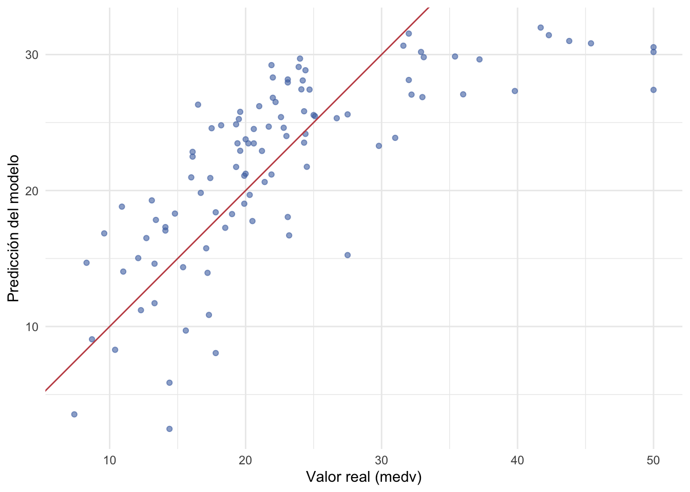
Esto únicamente nos confirma de forma visual lo que ya habíamos observado a través de las métricas numéricas, indicando que el modelo presenta un error típico de aproximadamente \(6.4\) unidades en sus predicciones respecto a los valores reales.
7.2.4.2 Validación cruzada (Cross-Validation)
En el punto anterior discutimos el método holdout, el cual consiste en realizar una única partición del conjunto de datos, sin embargo, este enfoque puede ser sensible a la forma específica en que se dividen los datos, lo que introduce variabilidad en la estimación del error. Para mitigar este problema, se utiliza la validación cruzada, un procedimiento que permite obtener estimaciones más estables del desempeño del modelo, basándose en la generación de múltiples particiones del dataset, en donde cada observación es utilizada tanto para entrenamiento como para evaluación en distintas iteraciones, y cuyo resultado final se obtiene promediando el desempeño a lo largo de estas particiones (James et al. 2021).
Para comprender este método, partamos nuevamente de un dataset:
\[ D = \{(x_i, y_i)\}_{i=1}^{n} \]
Bajo el mismo supuesto de que las observaciones son independientes e idénticamente distribuidas, la idea central de la validación cruzada es reutilizar el conjunto de datos de manera sistemática para entrenamiento y evaluación.
El esquema más común es la validación cruzada \(k-fold\), en la que el conjunto \(D\) se divide en \(k\) subconjuntos disjuntos de tamaño aproximadamente igual:
\[ D = \bigcup_{j=1}^{k} D_j, \quad D_j \cap D_l = \emptyset \ \text{para } j \neq l \]
En cada iteración \(j = 1, \dots, k\), se define:
- \(D_{train}^{(j)} = D \setminus D_j\): conjunto de entrenamiento.
- \(D_{test}^{(j)} = D_j\): conjunto de validación (o prueba).
De esta forma, se entrenan \(k\) modelos distintos, cada uno resolviendo el problema:
\[ \hat{f}^{(j)} = \arg\min_{f \in \mathcal{F}} \hat{R}_{train}^{(j)}(f) \]
Donde el riesgo empírico en cada iteración está dado por:
\[ \hat{R}_{train}^{(j)}(f) = \frac{1}{|D_{train}^{(j)}|} \sum_{(x_i, y_i) \in D_{train}^{(j)}} L(y_i, f(x_i)) \]
Posteriormente, cada modelo se evalúa en su respectivo conjunto de validación:
\[ \hat{R}_{test}^{(j)}(\hat{f}^{(j)}) = \frac{1}{|D_j|} \sum_{(x_i, y_i) \in D_j} L(y_i, \hat{f}^{(j)}(x_i)) \]
Una vez completadas las \(k\) iteraciones, el estimador final del error de generalización \(\hat{R}_{CV}\) se obtiene como el promedio de los errores en cada fold:
\[ \hat{R}_{CV} = \frac{1}{k} \sum_{j=1}^{k} \hat{R}_{test}^{(j)}(\hat{f}^{(j)}) \]
Este estimador tiene una propiedad clave: utiliza todas las observaciones tanto para entrenamiento como para evaluación (aunque en distintas iteraciones), lo que reduce la dependencia de una sola partición y, por ende, la varianza de la estimación.
Un punto importante es que, a diferencia del holdout, aquí no obtenemos un único modelo final directamente. En la práctica, una vez estimado el error mediante validación cruzada, se suele reentrenar el modelo utilizando todo el conjunto de datos \(D\).
El parámetro \(k\) introduce un nuevo compromiso:
Si \(k\) es pequeño (por ejemplo, \(k=5\)), cada conjunto de entrenamiento es más pequeño, lo que puede sesgar la estimación del modelo, pero el costo computacional es bajo.
\[ \Downarrow \quad \text{menor costo computacional, mayor sesgo} \]
Mientras que, si \(k\) es grande (por ejemplo, \(k=n\), conocido como Leave-One-Out Cross-Validation), cada modelo se entrena con casi todos los datos, reduciendo el sesgo, pero aumentando significativamente la varianza y el costo computacional.
\[ \Downarrow \quad \text{menor sesgo, mayor varianza y costo} \]
7.2.4.2.1 Cómo dividir \(k\): reglas prácticas de la validación cruzada
A diferencia del holdout, cuando trabajamos con el método de validación cruzada, lo que buscamos ya no es cómo dividir una sola vez el dataset, sino cuántas particiones \(k\) utilizar. Mientras que en el método anterior buscamos un balance entre tamaños de entrenamiento y prueba, en validación cruzada el objetivo es encontrar un valor de \(k\) que permita aprovechar eficientemente los datos sin introducir inestabilidad ni costos innecesarios.
En la práctica, los valores más utilizados son \(k=5\) y \(k=10\), ya que ofrecen un buen compromiso entre precisión estadística y eficiencia computacional. Sin embargo, la elección de \(k\) depende del tamaño del dataset y de las características del problema.
Por norma general, podemos definir los siguientes escenarios y reglas a utilizar:
Datasets pequeños (menores a 10,000 observaciones): Se recomienda utilizar valores grandes de k, como \(k=10\), ya que se desea aprovechar la mayor cantidad posible de datos para entrenamiento en cada iteración.
Datasets intermedios (entre 10,000 y 100,000 observaciones): La regla estándar es utilizar \(k=5\) o \(k=10\), siendo este último el más común en la práctica. Proporciona una estimación estable sin un costo computacional excesivo.
Datasets grandes (mayores a 100,000 observaciones): Se recomienda utilizar valores más pequeños de \(k\), como \(k=3\) o \(k=5\), ya que el tamaño del dataset permite obtener estimaciones estables incluso con menos particiones, teniendo así un menor osto computacional.
Independientemente del costo computacional, debemos considerar además que el número de particiones afecta directamente la estabilidad del estimador del error:
\[ \mathrm{Var}(\hat{R}_{CV}) \uparrow \quad \text{cuando} \quad k \uparrow \]
Y, en paralelo, el tamaño del conjunto de entrenamiento en cada iteración:
\[ |D_{train}^{(j)}| = \left(1 - \frac{1}{k}\right)n \]
Esto implica que:
\[ k \uparrow \;\Rightarrow\; |D_{train}^{(j)}| \uparrow \;\Rightarrow\; \text{menor sesgo} \]
Es decir, entre más iteraciones hagamos, el sesgo va a disminuir, aunque esto va a aumentar la varianza y el costo computacional.
Ahora, debemos tener en cuenta además que la validación cruzada no siempre es un método adecuado, ya que, al igual que con el método de holdout, para series de tiempo no se debe utilizar partición aleatoria, esto debido a que dicha aleatorización rompe la estructura temporal de los datos, violando el supuesto de independencia. Por otra parte, la validación cruzada puede generar particiones que no reflejen adecuadamente la distribución original cuando tenemos datos desbalanceados.
Veamos un ejemplo de validación cruzada en R con los datos de boston_h_data, utilizando además un \(k=5\), que es uno de los valores más comunes en la práctica (y no nos va a requerir demasiados recursos, debido al tamaño del dataset):
# Para mantener la aleatoriedad similar
set.seed(123)
# Número de observaciones
n <- nrow(boston_h_data)
# Número de folds
k <- 5
# Crear folds (asignación aleatoria)
folds <- sample(rep(1:k, length.out = n))
# Vector para almacenar errores
mse_folds <- numeric(k)
# Data frame para guardar resultados de CV
results_cv <- data.frame(
real = numeric(0),
pred = numeric(0)
)
# Loop de validación cruzada
for (j in 1:k) {
# Separar entrenamiento y validación
train_data <- boston_h_data[folds != j, ]
test_data <- boston_h_data[folds == j, ]
# Ajustar modelo
model <- lm(medv ~ crim + lstat, data = train_data)
# Predicciones
predictions <- predict(model, newdata = test_data)
# Calcular MSE para el fold j
mse_folds[j] <- mean((test_data$medv - predictions)^2)
# Guardar resultados
results_cv <- bind_rows(
results_cv,
tibble(
real = test_data$medv,
pred = predictions
)
)
}
# Error promedio (Cross-Validation)
mse_cv <- mean(mse_folds)
rmse_cv <- sqrt(mse_cv)
# Resultados
mse_cv[1] 39.40021rmse_cv[1] 6.276959Rápidamente, podemos darnos cuenta de que el error estimado mediante validación cruzada es ligeramente menor que el obtenido con el método holdout. En específico, el MSE es de \(39.40\) y el RMSE de aproximadamente \(6.28\), lo que indica que, en promedio, las predicciones del modelo se desvían alrededor de 6.28 unidades respecto a los valores reales. Si bien no es una diferencia significativa para este ejemplo, sí pone en evidencia una ventaja importante de la validación cruzada: Su capacidad para proporcionar una estimación del error menos dependiente de una partición específica del dataset, lo que la hace menos sesgada.
Como notarás en el código anterior, además agregué una pequeña tabla contenedora para salvar todas las iteraciones que hicimos. El objetivo de esta tabla será reuilizarla para graficar los datos más adelante.
Hicimos este ejemplo paso a paso, ya que queríamos ilustrar la lógica detrás en R, sin embargo, también podemos hacer uso de librerías como caret para simplificarnos la vida, por ejemplo:
library(caret)Loading required package: lattice
Attaching package: 'caret'The following object is masked from 'package:survival':
clusterset.seed(123)
# Definir esquema de validación cruzada
train_control <- trainControl(method = "cv", number = 5)
# Entrenamiento con validación cruzada
model_cv <- train(
medv ~ crim + lstat,
data = boston_h_data,
method = "lm",
trControl = train_control
)
# Resultados
model_cvLinear Regression
506 samples
2 predictor
No pre-processing
Resampling: Cross-Validated (5 fold)
Summary of sample sizes: 403, 406, 405, 406, 404
Resampling results:
RMSE Rsquared MAE
6.172626 0.5541535 4.489018
Tuning parameter 'intercept' was held constant at a value of TRUEComo puedes ver, los resultados obtenidos con caret son consistentes con los calculados manualmente mediante el esquema de validación cruzada: El RMSE es de aproximadamente \(6.17\), muy cercano al \(6.28\) obtenido previamente. Esta ligera diferencia se debe a la forma en que se generan los folds internamente y a detalles de implementación, pero en esencia ambos enfoques están estimando la misma cantidad al final del día.
Una ventaja interesante de la librería caret es que no solo automatiza el proceso, sino que también estandariza la evaluación, reduciendo la probabilidad de errores en la implementación manual (por ejemplo, fugas de información o particiones mal definidas).
Vamos a terminar este ejercicio con un pequeño gráfico de comparación de valores reales respecto a los valores estimados, reutilizando la tabla contenedora results_cv que generamos en el paso anterior:
results_cv |>
ggplot(aes(x = real, y = pred)) +
geom_point(color = "#4C72B0", alpha = 0.6) +
geom_abline(intercept = 0, slope = 1, color = "#C44E52") +
labs(
x = "Valor real (medv)",
y = "Predicción del modelo"
) +
theme_minimal()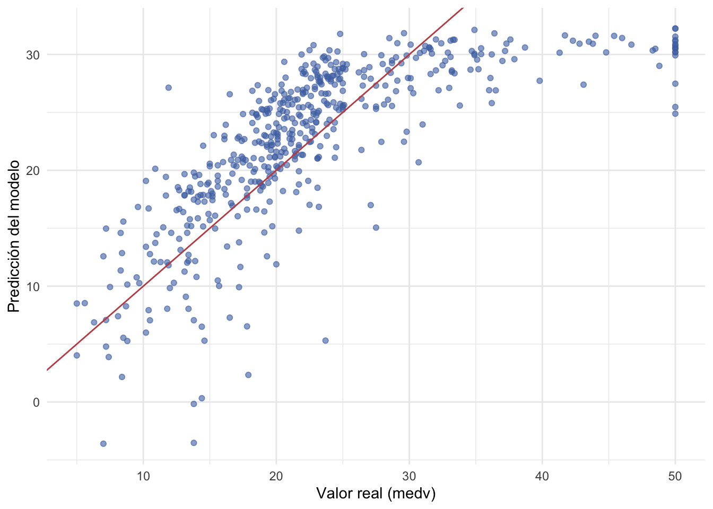
Como puedes notar, a diferencia del gráfico anterior, en este caso tenemos una mayor concentración de observaciones que siguen la tendencia del modelo establecido, lo que nos estaría indicando que, conforme usamos más iteraciones, obtenemos una representación más fiel y robusta del desempeño del modelo sobre datos no vistos (aunque con rendimientos decrecientes, es decir, a partir de cierto valor de \(k\), el beneficio en términos de estabilidad y reducción del sesgo es cada vez menor, mientras que el costo computacional y la variabilidad pueden seguir aumentando de manera considerable).
De hecho, el rendimiento esperado respecto a la mejora del modelo, conforme aumentamos iteraciones, se puede definir en el siguiente gráfico:
Warning: Using `size` aesthetic for lines was deprecated in ggplot2 3.4.0.
ℹ Please use `linewidth` instead.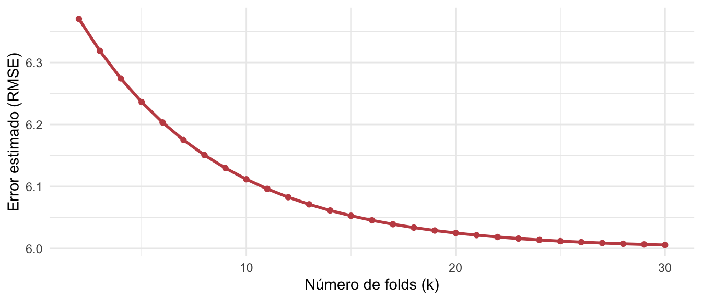
Este último no utiliza datos reales, pero nos ayuda a comprender la idea central: utilizar demasiados folds no siempre es la mejor opción, ya que la mejora en la estimación del error de generalización se vuelve marginal a partir de cierto punto, mientras que el costo computacional continúa incrementándose. En otras palabras, después de un cierto valor de \(k\), el beneficio adicional es prácticamente insignificante en comparación con el esfuerzo computacional requerido.
7.2.5 Algunos métodos de regresión auxiliares
A medida que extendemos el uso de modelos de regresión hacia contextos con múltiples variables explicativas, comienzan a surgir problemas importantes como la multicolinealidad, la inestabilidad en los coeficientes y el sobreajuste del modelo frente a los datos de entrenamiento (problemas que ya discutimos previamente). Estas limitaciones pueden empeorar tanto la capacidad predictiva como la interpretabilidad del modelo, especialmente cuando trabajamos con datasets de alta dimensionalidad o con variables altamente correlacionadas. Para abordar estos problemas, existen métodos de regresión auxiliares que introducen mecanismos de regularización sobre los coeficientes del modelo, penalizando su magnitud y favoreciendo soluciones más estables. En esta sección vamos a discutir tres de las técnicas más utilizadas en este contexto: la regresión Ridge, la regresión Lasso y la regresión Elastic Net, cada una con propiedades particulares que las hacen adecuadas para distintos escenarios analíticos.
7.2.5.1 Regresión Ridge
Como recordarás, cuando desarrollamos el modelo de regresión lineal múltiple mediante MCO, posterior a ello discutimos el problema de inestabilidad de los coeficientes cuando tenemos un caso de multicolinealidad. Este problema provoca que la matriz \(\mathbf{X}^\top \mathbf{X}\) sea cercana a ser singular3, lo que deriva en estimadores con alta varianza y poca capacidad de generalización.
La Regresión Ridge (o regularización \(L^2\)) introduce una modificación al problema de optimización, con el objetivo de estabilizar la estimación penalizando la magnitud de los coeficientes: En lugar de minimizar únicamente la suma de los residuos al cuadrado, como en MCO, se añade un término de penalización proporcional al cuadrado de los coeficientes del modelo (@ Hoerl and Kennard 1970).
Para desarrollar esta regresión, vamos a partir de la regresión múltiple (en su forma matricial):
\[ \mathbf{y} = \mathbf{X}\boldsymbol{\beta} + \boldsymbol{\varepsilon} \]
La cual no voy a descomponer de nuevo, ya que esto ya se hizo explícitamente en la sección de Regresión lineal múltiple (véase la sección Section 7.2.2).
Ahora bien, como también recordarás, para la regresión lineal múltiple mediante MCO definimos la función objetivo como la suma de los residuos al cuadrado, la cual en notación matricial está dada por:
\[ S(\boldsymbol{\beta}) = (\mathbf{y} - \mathbf{X}\boldsymbol{\beta})^\top (\mathbf{y} - \mathbf{X}\boldsymbol{\beta}) \]
Siendo que, el objetivo de esta ecuación era encontrar el vector de parámetros \(\boldsymbol{\beta}\) que minimizara dicha expresión.
En el caso de la regresión Ridge, modificamos esta función objetivo añadiendo un término de penalización sobre los coeficientes (sin considerar el intercepto), obteniendo:
\[ S_\lambda(\boldsymbol{\beta}) = (\mathbf{y} - \mathbf{X}\boldsymbol{\beta})^\top (\mathbf{y} - \mathbf{X}\boldsymbol{\beta}) + \lambda \sum_{j=1}^{k} \beta_j^2 \]
Donde \(\lambda \geq 0\) es el parámetro de regularización que controla la intensidad de la penalización. Para entender mejor cómo afecta esta penalización, vamos a desarrollar la expresión anterior de forma similar a como hicimos en MCO:
\[ S_\lambda(\boldsymbol{\beta}) = \mathbf{y}^\top \mathbf{y} - 2 \boldsymbol{\beta}^\top \mathbf{X}^\top \mathbf{y} + \boldsymbol{\beta}^\top \mathbf{X}^\top \mathbf{X} \boldsymbol{\beta} + \lambda \boldsymbol{\beta}^\top \boldsymbol{\beta} \]
Agrupamos ahora los términos cuadráticos en \(\boldsymbol{\beta}\):
\[ S_\lambda(\boldsymbol{\beta}) = \mathbf{y}^\top \mathbf{y} - 2 \boldsymbol{\beta}^\top \mathbf{X}^\top \mathbf{y} + \boldsymbol{\beta}^\top (\mathbf{X}^\top \mathbf{X} + \lambda \mathbf{I}) \boldsymbol{\beta} \]
Ahora, vamos a derivar con respecto a \(\boldsymbol{\beta}\):
\[ \frac{\partial S_\lambda}{\partial \boldsymbol{\beta}} = -2 \mathbf{X}^\top \mathbf{y} + 2 (\mathbf{X}^\top \mathbf{X} + \lambda \mathbf{I}) \boldsymbol{\beta} \]
E igualamos a \(0\) para encontrar el mínimo:
\[ -2 \mathbf{X}^\top \mathbf{y} + 2 (\mathbf{X}^\top \mathbf{X} + \lambda \mathbf{I}) \boldsymbol{\beta} = 0 \]
Podemos simplificar un poco más la expresión:
\[ (\mathbf{X}^\top \mathbf{X} + \lambda \mathbf{I}) \boldsymbol{\beta} = \mathbf{X}^\top \mathbf{y} \]
Siendo esta última la ecuación normal penalizada. Dada la expresión, entonces podemos suponer que, si la matriz es invertible (lo cual aplica para \(\lambda > 0\)), entonces obtendremos:
\[ \hat{\boldsymbol{\beta}}^{Ridge} = (\mathbf{X}^\top \mathbf{X} + \lambda \mathbf{I})^{-1} \mathbf{X}^\top \mathbf{y} \]
Si comparamos esta solución con la que tenemos para MCO, es decir:
\[ \hat{\boldsymbol{\beta}}^{MCO} = (\mathbf{X}^\top \mathbf{X})^{-1} \mathbf{X}^\top \mathbf{y} \]
Podemos notar que la regresión Ridge introduce el término \(\lambda \mathbf{I}\), el cual nos ayuda a garantizar la invertibilidad de la matriz, incluso cuando existe multicolinealidad, además de reducir la magnitud de los coeficientes, evitando valores extremos. Básicamente, esta regresión está castigando a los coeficientes grandes, forzando al modelo a encontrar soluciones más estables.
Una forma más sencilla de verlo es extrapolando esta solución a una ecuación normal en su forma escalar, por ejemplo, para el método de MCO, tenemos:
\[ \sum x_{ij} y_i = \beta_0 \sum x_{ij} + \sum_{m=1}^{k} \beta_m \sum x_{ij} x_{im} \]
Siendo que, para la regresión Ridge tendríamos que establecer el término \(\lambda\), tal que:
\[ \sum x_{ij} y_i = \beta_0 \sum x_{ij} + \sum_{m=1}^{k} \beta_m \sum x_{ij} x_{im} + \lambda \beta_j \]
Claro que esta intuición es una mera simplificación de la regresión.
En la práctica, es importante notar que, dado que la penalización depende de la magnitud de los coeficientes, es necesario estandarizar las variables explicativas antes de aplicar la regresión Ridge:
\[ x_{ij}^* = \frac{x_{ij} - \bar{x}_j}{s_j} \]
Esto debido a que, de no hacerlo, las variables con mayor escala dominarían la penalización.
Como es de esperarse, vamos ahora a ver un ejemplo en R, reutilizando los datos de housing_model y, simplemente, replicando la lógica del modelo de regresión múltiple que hicimos previamente. Para esta regresión haremos uso de la librería glmnet:
library(glmnet)Loading required package: Matrix
Attaching package: 'Matrix'The following objects are masked from 'package:tidyr':
expand, pack, unpackLoaded glmnet 4.1-8library(broom)
# Matriz de variables explicativas y variable dependiente
X <- model.matrix(medv ~ crim + lstat, data = boston_h_data)[, -1]
y <- boston_h_data$medv
# Modelo Ridge (alpha = 0)
ridge_model <- glmnet(X, y, alpha = 0, standardize = TRUE)
tidy(ridge_model) |>
head(10)# A tibble: 10 × 5
term step estimate lambda dev.ratio
<chr> <dbl> <dbl> <dbl> <dbl>
1 (Intercept) 1 22.5 6778. 1.40e-36
2 (Intercept) 2 22.6 6176. 2.06e- 3
3 (Intercept) 3 22.6 5627. 2.26e- 3
4 (Intercept) 4 22.6 5127. 2.48e- 3
5 (Intercept) 5 22.6 4672. 2.72e- 3
6 (Intercept) 6 22.6 4257. 2.99e- 3
7 (Intercept) 7 22.6 3878. 3.28e- 3
8 (Intercept) 8 22.6 3534. 3.59e- 3
9 (Intercept) 9 22.6 3220. 3.94e- 3
10 (Intercept) 10 22.6 2934. 4.32e- 3Lo que hace la función glmnet() es generar soluciones para múltiples valores de \(\lambda\), y simplemente establecimos alpha = 0 para indicar que estaremos usando el método de regresión Ridge. A partir de estos resultados, podemos seleccionar el mejor valor de \(\lambda\) mediante validación cruzada, teniendo:
cv_ridge <- cv.glmnet(X, y, alpha = 0)
cv_ridge$lambda.min[1] 0.6777654Y, a partir de ese valor, podemos reajustar el modelo:
lambda_opt <- cv_ridge$lambda.min
mejor_estimador <- glmnet(X, y, alpha = 0, lambda = lambda_opt)
coef(mejor_estimador)3 x 1 sparse Matrix of class "dgCMatrix"
s0
(Intercept) 33.46704301
crim -0.09145615
lstat -0.83803878De hecho, podemos generar un gráfico para ver cómo es que los coeficientes del modelo Ridge evolucionan en función del parámetro de regularización \(\lambda\), observando cómo a medida que aumenta la penalización estos se contraen progresivamente hacia cero, reduciendo su varianza sin llegar a anularse por completo:
library(tidyr)
#️ Transponemos coeficientes (reutilizamos ridge_model)
coef_matrix <- as.matrix(ridge_model$beta)
coef_df <- as.data.frame(t(coef_matrix))
# Agregar lambda
coef_df$lambda <- ridge_model$lambda
# Formato largo
coef_long <- coef_df |>
pivot_longer(
cols = -lambda,
names_to = "variable",
values_to = "coef"
)
# Gráfico
ggplot(coef_long, aes(x = lambda, y = coef, color = variable,
group = variable)) +
geom_line(size = 0.8) +
scale_x_log10() +
scale_color_manual(
values = c(
"crim" = "#1f77b4", "lstat" = "#d62728"
)
) +
labs(x = expression(lambda), y = "Coeficientes") +
theme_minimal()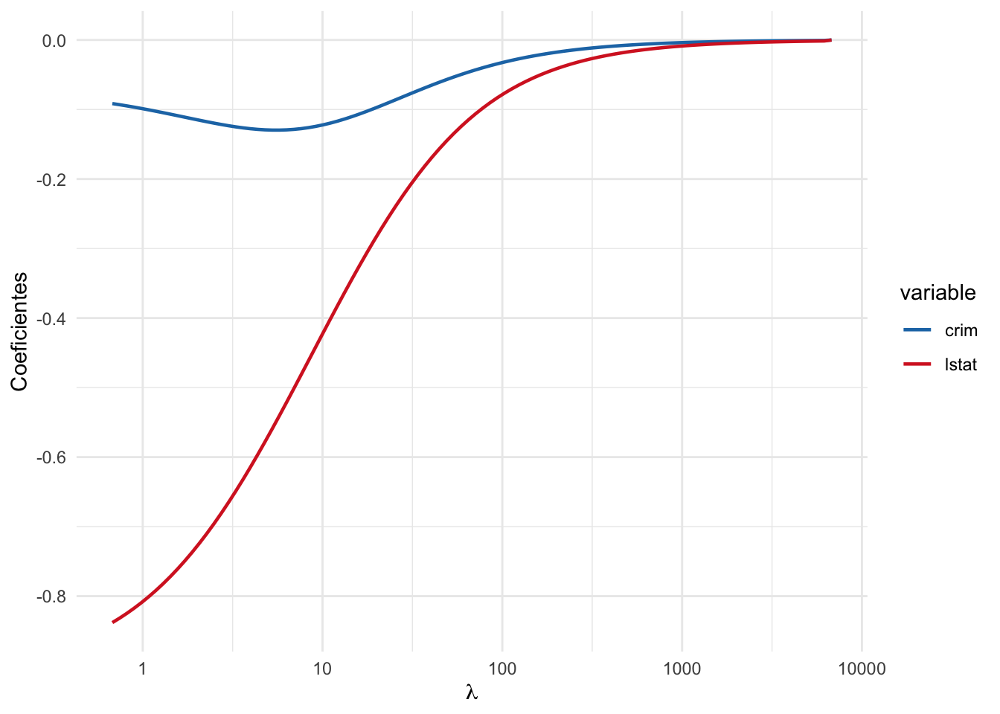
Vamos ahora a graficar los valores estimados respecto a los valores reales del modelo, esto para comparar la regresión por MCO respecto a la regresión Ridge:
library(tidyr)
# Modelo MCO
mco_model <- lm(medv ~ crim + lstat, data = boston_h_data)
pred_mco <- predict(mco_model)
# Predicciones Ridge (reutilizamos lambda_opt y X)
pred_ridge <- predict(mejor_estimador, newx = X)
# Dataset final segmentado
df_plot <- data.frame(
real = y,
MCO = as.numeric(pred_mco),
Ridge = as.numeric(pred_ridge)
) |>
pivot_longer(
cols = c(MCO, Ridge),
names_to = "modelo",
values_to = "prediccion"
)
# Gráfico
ggplot(df_plot, aes(x = real, y = prediccion, color = modelo)) +
geom_point(alpha = 0.6) +
geom_abline(slope = 1, intercept = 0) +
scale_color_manual(
values = c(
"MCO" = "#1f77b4", "Ridge" = "#d62728"
)
) +
labs(x = "Valores reales", y = "Valores predichos", color = "Modelo") +
theme_minimal()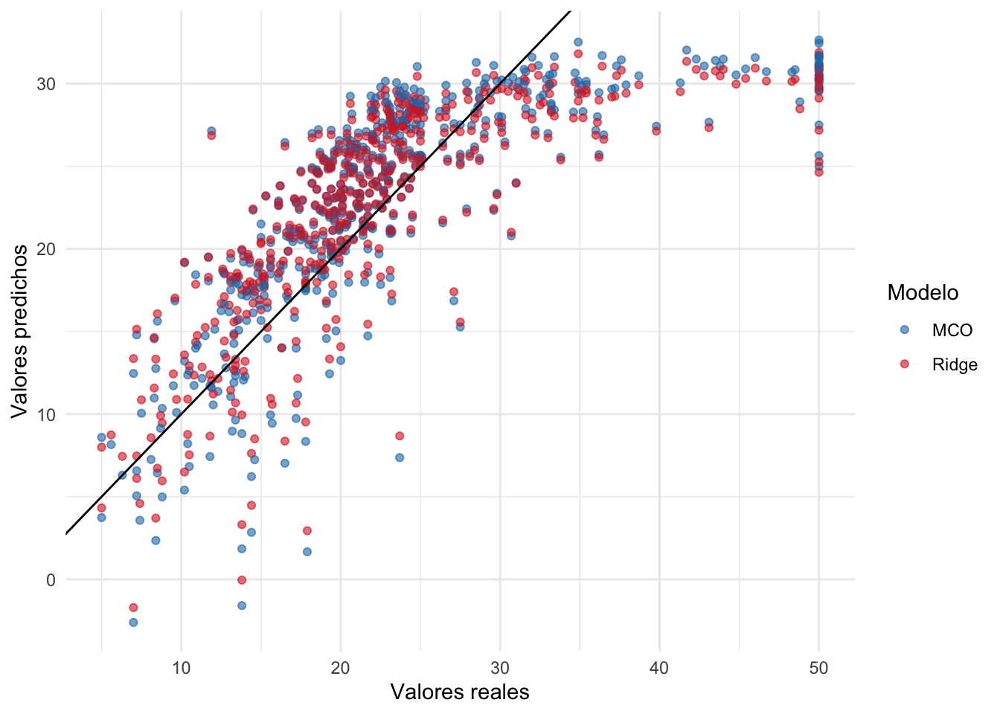
A diferencia de lm(), la función glmnet() no funciona con summary(), esto debido a que está diseñada para trabajar con trayectorias de coeficientes, no con inferencia clásica, por lo que, para analizar un poco más a fondo los resultados de esta regresión, podemos construir manualmente tanto el \(RMSE\) como el coeficiente de determinación \(R^2\):
# Lambda óptimo
lambda_opt[1] 0.6777654# Coeficientes del modelo (reutilizamos mejor_estimador)
coef_ridge <- coef(mejor_estimador)
# Convertimos a dataframe
coef_df <- data.frame(
variable = rownames(coef_ridge),
coeficiente = as.numeric(coef_ridge)
)
# Métricas del modelo
# RMSE
rmse_ridge <- sqrt(mean((y - pred_ridge)^2))
# R^2
r2_ridge <- 1 - sum((y - pred_ridge)^2) / sum((y - mean(y))^2)
rmse_ridge[1] 6.197813r2_ridge[1] 0.5449765Podemos inferir algunas cosas a partir de estos resultados: El valor de \(\lambda\) seleccionado mediante validación cruzada introduce una penalización suficiente para reducir la varianza de los coeficientes sin deteriorar de forma significativa la capacidad predictiva del modelo. Por su parte, el \(RMSE\) indica que el error promedio de predicción se mantiene en un rango razonable, considerando la simplicidad del modelo; además, presenta un comportamiento muy similar al observado en el modelo original y en sus versiones evaluadas mediante holdout y validación cruzada, con una desviación estándar aproximada de 6.2 unidades de medv (es decir, un error promedio de 6,200 dólares para esa variable). Finalmente, el modelo logra explicar alrededor del 54% de la variabilidad de la variable dependiente, lo cual representa un coeficiente de determinación consistente con el obtenido en el modelo de MCO, sugiriendo que la regularización mejora la estabilidad sin sacrificar de manera relevante el poder explicativo.
7.2.5.2 Regresion Lasso
Siguiendo la misma lógica que en la regresión Ridge, ahora consideramos una alternativa que no solo estabiliza la estimación, sino que además introduce selección automática de variables. La regresión Lasso (Least Absolute Shrinkage and Selection Operator), basada en una penalización \(L^1\), modifica la función objetivo penalizando la suma de los valores absolutos de los coeficientes.
Este tipo de regresión resulta particularmente útil en contextos donde se dispone de un gran número de variables explicativas, potencialmente redundantes o irrelevantes. Lasso permite construir modelos más eficientes, mejorando la interpretabilidad y reduciendo el riesgo de sobreajuste, al conservar únicamente aquellas variables que aportan señal relevante para la predicción, razón por la que la regresión Lasso es ampliamente utilizado en problemas de alta dimensionalidad, donde además de predecir con precisión, se busca identificar qué variables tienen mayor relevancia dentro del problema a tratar (Tibshirani 1996).
Vamos ahora a desarrollar este modelo, partiendo de nuevo del modelo lineal múltiple en forma matricial:
\[ \mathbf{y} = \mathbf{X}\boldsymbol{\beta} + \boldsymbol{\varepsilon} \]
Como recordarás, la función objetivo en MCO está dada por:
\[ S(\boldsymbol{\beta}) = (\mathbf{y} - \mathbf{X}\boldsymbol{\beta})^\top (\mathbf{y} - \mathbf{X}\boldsymbol{\beta}) \]
Para la regresión Lasso, la función objetivo incorpora una penalización \(L^1\), siendo:
\[ S_\lambda(\boldsymbol{\beta}) = (\mathbf{y} - \mathbf{X}\boldsymbol{\beta})^\top (\mathbf{y} - \mathbf{X}\boldsymbol{\beta}) + \lambda \sum_{j=1}^{k} |\beta_j| \]
Donde \(\lambda \geq 0\) es el parámetro de regularización que controla la intensidad de la penalización.
A diferencia de Ridge, donde la penalización es cuadrática y diferenciable en todo su dominio, en Lasso el término \(|\beta_j|\) no es diferenciable en cero, siendo que esto impide obtener una solución cerrada como en MCO o Ridge, por lo que la estimación se realiza mediante métodos numéricos.
A pesar de no tener una solución cerrada, si podemos analizar la estructura del problema expandiendo la parte cuadrática:
\[ S_\lambda(\boldsymbol{\beta}) = \mathbf{y}^\top \mathbf{y} - 2 \boldsymbol{\beta}^\top \mathbf{X}^\top \mathbf{y} + \boldsymbol{\beta}^\top \mathbf{X}^\top \mathbf{X} \boldsymbol{\beta} + \lambda \sum_{j=1}^{k} |\beta_j| \]
Lo que podemos notar aquí, es que la penalización \(L^1\) genera soluciones donde algunos coeficientes son exactamente cero, lo cual no ocurre en la regresión Ridge. Desde una perspectiva geométrica:
- Ridge impone una restricción tipo esfera (\(L^2\)), lo que produce soluciones suavemente contraídas.
- Lasso impone una restricción tipo rombo (\(L^1\)), cuyos vértices favorecen soluciones en los ejes, es decir, coeficientes exactamente nulos.
Ahora bien, sencillamente podemos escribir la condición de optimalidad (subgradiente) como:
\[ -2 \mathbf{X}^\top (\mathbf{y} - \mathbf{X}\boldsymbol{\beta}) + \lambda \cdot \text{sign}(\boldsymbol{\beta}) = 0 \]
Donde \(\text{sign}(\beta_j)\) es:
\[ \text{sign}(\beta_j) = \begin{cases} 1 & \text{si } \beta_j > 0 \\ -1 & \text{si } \beta_j < 0 \\ [-1,1] & \text{si } \beta_j = 0 \end{cases} \]
Esta condición es importante, ya que es la que nos da la posibilidad de que algunos coeficientes se anulen completamente.
Al igual que en la regresión Ridge, es necesario estandarizar las variables explicativas antes de aplicar Lasso, es decir:
\[ x_{ij}^* = \frac{x_{ij} - \bar{x}_j}{s_j} \]
Esto debido a que la penalización en la regresión Lasso depende directamente de la magnitud absoluta de los coeficientes. Si las variables están en distintas escalas, aquellas con mayor varianza o unidades más grandes tenderán a tener coeficientes más pequeños (para compensar su escala), mientras que variables en escalas más pequeñas requerirán coeficientes más grandes para tener un efecto comparable.
Vamos ahora a realizar un ejemplo en R, siguiendo una lógica similar a la que usamos para Ridge, ya que partiremos de la misma función glmnet, únicamente cambiando el parámetro alpha, para utilizar el método Lasso:
library(glmnet)
library(broom)
# Reutilizamos X y y del ejemplo anterior
# Modelo Lasso (alpha = 1)
lasso_model <- glmnet(X, y, alpha = 1, standardize = TRUE)
tidy(lasso_model) |>
head(10)# A tibble: 10 × 5
term step estimate lambda dev.ratio
<chr> <dbl> <dbl> <dbl> <dbl>
1 (Intercept) 1 22.5 6.78 0
2 (Intercept) 2 23.6 6.18 0.0924
3 (Intercept) 3 24.6 5.63 0.169
4 (Intercept) 4 25.5 5.13 0.233
5 (Intercept) 5 26.3 4.67 0.286
6 (Intercept) 6 27.0 4.26 0.330
7 (Intercept) 7 27.7 3.88 0.366
8 (Intercept) 8 28.3 3.53 0.396
9 (Intercept) 9 28.8 3.22 0.421
10 (Intercept) 10 29.4 2.93 0.442 Al igual que en el caso de Ridge, glmnet() genera soluciones para múltiples valores de \(\lambda\), por lo que para seleccionar el valor óptimo, podemos hacerlo mediante validación cruzada:
cv_lasso <- cv.glmnet(X, y, alpha = 1)
cv_lasso$lambda.min[1] 0.04063097Y, de la misma manera, ajustamos el modelo Lasso final:
lambda_opt_lasso <- cv_lasso$lambda.min
mejor_lasso <- glmnet(X, y, alpha = 1, lambda = lambda_opt_lasso)
coef(mejor_lasso)3 x 1 sparse Matrix of class "dgCMatrix"
s0
(Intercept) 34.25794282
crim -0.06720651
lstat -0.90747070Aquí es donde veremos las principales diferencias respecto a la regresión Ridge, ya que dada la penalización de las variables no relevantes, podemos encontrar coeficientes que sean directamente 0. Este caso particular no tuvo esa situación, pero en escenarios con mayor número de variables o con alta redundancia entre predictores, es común observar cómo Lasso elimina automáticamente aquellas variables con menor aporte al modelo.
Vamos ahora a graficar cómo evolucionan los coeficientes en función de \(\lambda\), para ver la diferencia respecto al modelo Ridge:
library(tidyr)
# Reutilizamos estructura del caso Ridge
coef_matrix <- as.matrix(lasso_model$beta)
coef_df <- as.data.frame(t(coef_matrix))
coef_df$lambda <- lasso_model$lambda
coef_long <- coef_df |>
pivot_longer(
cols = -lambda,
names_to = "variable",
values_to = "coef"
)
ggplot(coef_long, aes(x = lambda, y = coef, color = variable,
group = variable)) +
geom_line(size = 0.8) +
scale_x_log10() +
scale_color_manual(
values = c(
"crim" = "#1f77b4", "lstat" = "#d62728"
)
) +
labs(x = expression(lambda), y = "Coeficientes") +
theme_minimal()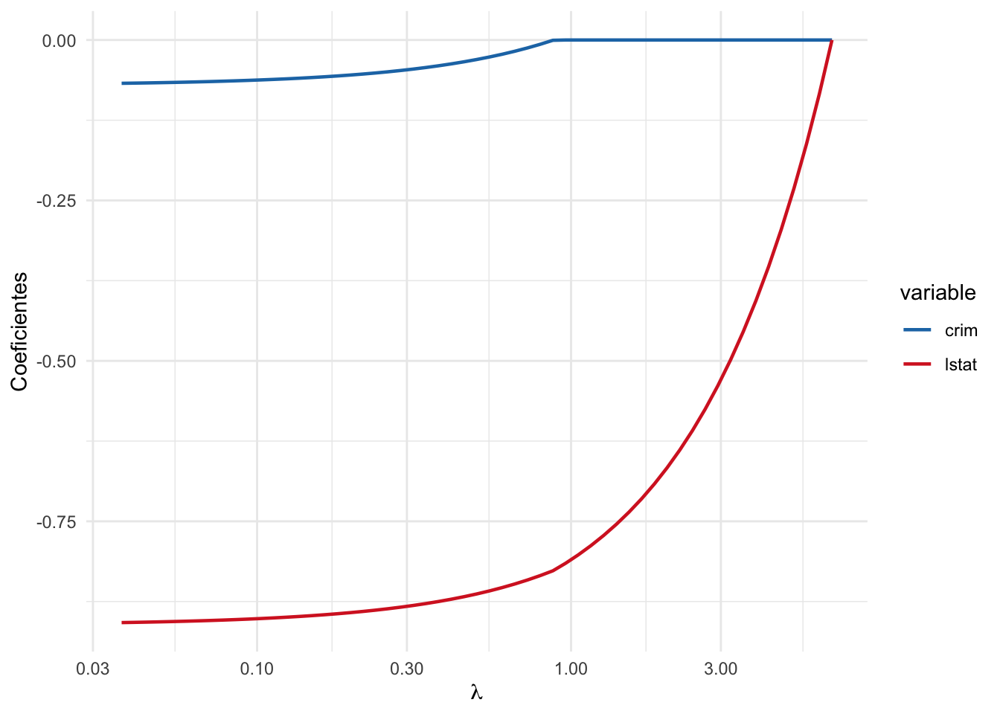
Rápidamente podemos notar que, para el coeficiente de la variable crim, el valor colapsa bastante rápido en cero, conforme aumenta \(\lambda\). Esto se debe a que, en presencia de la variable lstat, su contribución marginal a la explicación de la variable dependiente es relativamente baja. Bajo la penalización \(L^1\), el modelo Lasso tiende a eliminar primero aquellas variables cuya correlación parcial con la respuesta es menor, llevando sus coeficientes exactamente a cero y favoreciendo así soluciones más eficientes.
Hay que considerar que, de no tener a lstat como regresor adicional, el comportamiento del coeficiente de crim podría ser distinto. En ausencia de otras variables, Lasso seguiría aplicando penalización, pero la probabilidad de que crim sea llevado exactamente a cero dependería únicamente de su relación con la variable dependiente. En cambio, cuando lstat está presente, crim compite por explicar la misma variabilidad, y si su contribución marginal es menor, Lasso tiende a eliminarla más rápidamente al considerarla redundante en el contexto del modelo.
Como última comparación, vamos ahora a ver los valores pronósticados respecto a los valores reales, esto aplicado para los tres modelos que hemos visto hasta ahora: MCO, Ridge y Lasso. Para ello, reutilizaremos los objetos ya construidos previamente, incorporando únicamente las predicciones del modelo Lasso al mismo esquema de visualización:
# Predicciones Lasso (reutilizamos mejor_lasso y X)
pred_lasso <- predict(mejor_lasso, newx = X)
# Dataset final (reutilizamos estructura previa)
df_plot <- data.frame(
real = y,
MCO = as.numeric(pred_mco),
Ridge = as.numeric(pred_ridge),
Lasso = as.numeric(pred_lasso)
) |>
pivot_longer(
cols = c(MCO, Ridge, Lasso),
names_to = "modelo",
values_to = "prediccion"
)
# Gráfico
ggplot(df_plot, aes(x = real, y = prediccion, color = modelo)) +
geom_point(alpha = 0.6) +
geom_abline(slope = 1, intercept = 0) +
scale_color_manual(
values = c(
"MCO" = "#1f77b4","Ridge" = "#d62728","Lasso" = "#2ca02c"
)
) +
labs(x = "Valores reales", y = "Valores predichos", color = "Modelo") +
theme_minimal()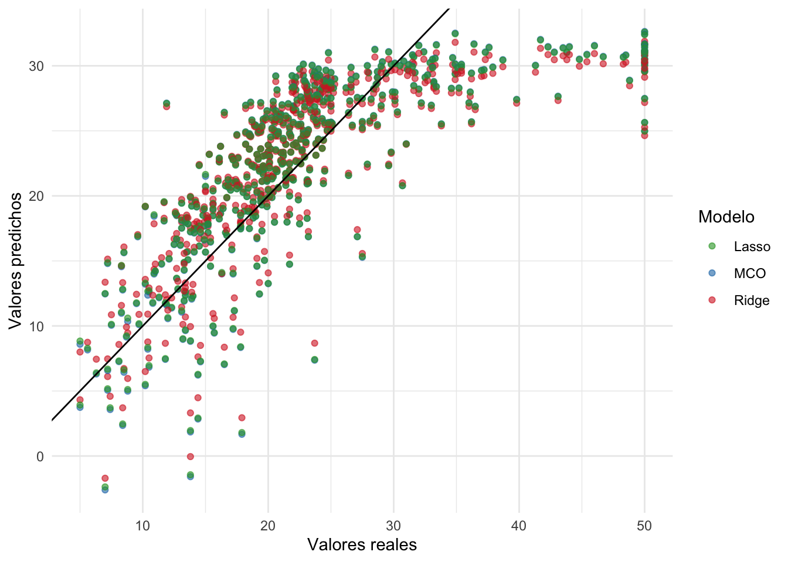
En el gráfico se observa que los tres modelos predicen de forma bastante similar, ya que la mayoría de los puntos están cerca de la línea diagonal, lo que indica buen ajuste. Sin embargo, cuando los valores reales son altos, los tres tienden a quedarse cortos, lo cual es más una limitación del modelo lineal que del método utilizado. En general, Ridge y Lasso se ven un poco más estables, con menos dispersión en algunos puntos, pero la diferencia con MCO no es muy grande, por lo que en este caso la regularización no cambia demasiado los resultados.
Finalmente, vamos a evaluar el desempeño del modelo:
# Predicciones Lasso
pred_lasso <- predict(mejor_lasso, newx = X)
# RMSE
rmse_lasso <- sqrt(mean((y - pred_lasso)^2))
# R^2
r2_lasso <- 1 - sum((y - pred_lasso)^2) / sum((y - mean(y))^2)
rmse_lasso[1] 6.180197r2_lasso[1] 0.5475594El valor de \(\lambda\) seleccionado mediante validación cruzada introduce una penalización que reduce la varianza de los coeficientes, aunque no elimina ninguna variable para este modelo en particular. Por su parte, el \(RMSE\) obtenido de \(6.06\) nos estaría indicando que el error promedio de predicción se mantiene en un rango razonable, muy cercano al observado en el modelo Ridge y en el modelo original por MCO, lo que sugiere que el cambio a este modelo no implica una pérdida significativa en capacidad predictiva. Lo más interesante viene al analizar el coeficiente de determinación, ya que el modelo explica aproximadamente el 56.5% de la variabilidad de la variable dependiente, lo cual representa un desempeño incluso ligeramente superior al observado previamente.
7.2.5.3 Regresión Elastic Net
Hasta ahora hemos visto que tanto Ridge como Lasso abordan el problema de la multicolinealidad y el sobreajuste desde perspectivas distintas: Mientras que Ridge estabiliza los coeficientes mediante una contracción continua, Lasso además introduce selección de variables al forzar algunos coeficientes exactamente a cero, sin embargo, en la práctica es común encontrarse con situaciones donde ambas propiedades son deseables simultáneamente. En este contexto surge la regresión Elastic Net, que combina las penalizaciones \(L^1\) y \(L^2\) en un solo modelo (Zou and Hastie 2005).
Vamos a desarrollar este modelo, partiendo una vez más del modelo lineal en forma matricial:
\[ \mathbf{y} = \mathbf{X}\boldsymbol{\beta} + \boldsymbol{\varepsilon} \]
La función objetivo de Elastic Net combina las penalizaciones \(L^1\) y \(L^2\), por lo que ahora se definirá como:
\[ S_{\lambda,\alpha}(\boldsymbol{\beta}) = (\mathbf{y} - \mathbf{X}\boldsymbol{\beta})^\top (\mathbf{y} - \mathbf{X}\boldsymbol{\beta}) + \lambda \left[ (1 - \alpha)\boldsymbol{\beta}^\top \boldsymbol{\beta} + \alpha \sum_{j=1}^{k} |\beta_j| \right] \]
Como nota adicional, la función objetivo también puede ser escrita como:
\[ S_{\lambda,\alpha}(\boldsymbol{\beta}) = (\mathbf{y} - \mathbf{X}\boldsymbol{\beta})^\top (\mathbf{y} - \mathbf{X}\boldsymbol{\beta}) + \lambda \left[ \frac{1-\alpha}{2} || \boldsymbol{\beta} ||^2_2 + \alpha || \boldsymbol{\beta} ||_1 \right] \]
Ya que esta versión nos permite simplificar las derivadas, dado el factor \(\frac{1}{2}\) que nos ayudará a evitar constantes innecesarias en gradientes, y de hecho, esta versión es la que se utiliza en la función glmnet().
Ahora bien, retomando la primer función objectivo, al igual que en los dos métodos previos, podemos expandir el término de error:
\[ (\mathbf{y} - \mathbf{X}\boldsymbol{\beta})^\top (\mathbf{y} - \mathbf{X}\boldsymbol{\beta}) = \mathbf{y}^\top \mathbf{y} - 2 \boldsymbol{\beta}^\top \mathbf{X}^\top \mathbf{y} + \boldsymbol{\beta}^\top \mathbf{X}^\top \mathbf{X} \boldsymbol{\beta} \]
Y, sustituyendo en la función objetivo:
\[ S_{\lambda,\alpha}(\boldsymbol{\beta}) = \mathbf{y}^\top \mathbf{y} - 2 \boldsymbol{\beta}^\top \mathbf{X}^\top \mathbf{y} + \boldsymbol{\beta}^\top \mathbf{X}^\top \mathbf{X} \boldsymbol{\beta} + \lambda (1 - \alpha)\boldsymbol{\beta}^\top \boldsymbol{\beta} + \lambda \alpha \sum_{j=1}^{k} |\beta_j| \]
Ahora, agrupamos los términos cuadráticos en \(\boldsymbol{\beta}\):
\[ S_{\lambda,\alpha}(\boldsymbol{\beta}) = \mathbf{y}^\top \mathbf{y} - 2 \boldsymbol{\beta}^\top \mathbf{X}^\top \mathbf{y} + \boldsymbol{\beta}^\top (\mathbf{X}^\top \mathbf{X} + \lambda (1 - \alpha)\mathbf{I}) \boldsymbol{\beta} + \lambda \alpha \sum_{j=1}^{k} |\beta_j| \]
Como podrás darte cuenta, \(\mathbf{X}^\top \mathbf{X} + \lambda (1 - \alpha)\mathbf{I}\) es el componente de la ecuación proveniente de la idea del modelo Ridge, mientras que \(\lambda \alpha \sum |\beta_j|\) es el componente de penalización proveniente de la idea del modelo Lasso.
Debido al término \(L^1\) de Lasso, no podemos derivar de forma clásica en todo el dominio. En su lugar, usamos condiciones de subgradiente, derivando respecto a \(S_{\lambda,\alpha}\):
\[ \frac{\partial S_{\lambda,\alpha}}{\partial \boldsymbol{\beta}} = -2 \mathbf{X}^\top \mathbf{y} + 2(\mathbf{X}^\top \mathbf{X} + \lambda (1 - \alpha)\mathbf{I})\boldsymbol{\beta} + \lambda \alpha \cdot \mathbf{z} = 0 \]
Donde \(\mathbf{z}\) es el subgradiente de \(\boldsymbol{\beta}\):
\[ z_j = \begin{cases} 1 & \text{si } \beta_j > 0 \\ -1 & \text{si } \beta_j < 0 \\ [-1,1] & \text{si } \beta_j = 0 \end{cases} \]
Como podrás darte cuenta, si nosotros tuviéramos un valor de \(\alpha = 0\), entonces:
\[ S_{\lambda}(\boldsymbol{\beta}) = (\mathbf{y} - \mathbf{X}\boldsymbol{\beta})^\top (\mathbf{y} - \mathbf{X}\boldsymbol{\beta}) + \lambda \boldsymbol{\beta}^\top \boldsymbol{\beta} \]
Es decir, recuperamos exactamente la formulación de la regresión Ridge, donde la penalización es puramente cuadrática (\(L^2\)). Respectivamente, si tuviéramos un valor de \(\alpha = 1\), entonces:
\[ S_{\lambda}(\boldsymbol{\beta}) = (\mathbf{y} - \mathbf{X}\boldsymbol{\beta})^\top (\mathbf{y} - \mathbf{X}\boldsymbol{\beta}) + \lambda \sum_{j=1}^{k} |\beta_j| \]
Es decir, obtenemos la regresión Lasso, donde la penalización es de tipo \(L^1\).
Como continuación lógica, vamos ahora a desarrollar el ejercicio respectivo en R, utilizando de nuevo la función glmnet():
library(glmnet)
# Modelo Elastic Net (0 < alpha < 1)
elastic_model <- glmnet(X, y, alpha = 0.5, standardize = TRUE)
tidy(elastic_model) |>
head(10)# A tibble: 10 × 5
term step estimate lambda dev.ratio
<chr> <dbl> <dbl> <dbl> <dbl>
1 (Intercept) 1 22.5 13.6 0
2 (Intercept) 2 23.2 12.4 0.0563
3 (Intercept) 3 23.8 11.3 0.109
4 (Intercept) 4 24.4 10.3 0.157
5 (Intercept) 5 25.0 9.34 0.201
6 (Intercept) 6 25.6 8.51 0.241
7 (Intercept) 7 26.1 7.76 0.278
8 (Intercept) 8 26.7 7.07 0.311
9 (Intercept) 9 27.2 6.44 0.341
10 (Intercept) 10 27.7 5.87 0.367 Nótese que, para utilizar la regresión Elastic Net en R, debemos definir el parámetro alpha en el intervalo \(0 < \alpha < 1\). En particular, alpha = 0 corresponde a la regresión Ridge, mientras que alpha = 1 corresponde a la regresión Lasso. Normalmente, el valor de alpha suele seleccionarse mediante validación cruzada, ya que distintos valores implican diferentes combinaciones de penalización, aunque por el momento mantendremos un valor de alpha = 0.5 para fines de practicidad.
Vamos ahora a seleccionar el valor más óptimo de \(\lambda\), utilizando validación cruzada:
# Validación cruzada para Elastic Net
cv_elastic <- cv.glmnet(X, y, alpha = 0.5)
cv_elastic$lambda.min[1] 0.05103486Y, a partir de ello, ajustamos el modelo final:
lambda_opt_en <- cv_elastic$lambda.min
mejor_elastic <- glmnet(X, y, alpha = 0.5, lambda = lambda_opt_en)
coef(mejor_elastic)3 x 1 sparse Matrix of class "dgCMatrix"
s0
(Intercept) 34.24570154
crim -0.06937241
lstat -0.90588470A pesar de que el modelo tiene el componente de penalización de Lasso \(L^1\), podemos darnos cuenta de que no se está eliminando a ninguna variable al convertir a su coeficiente en 0, lo cual de hecho tiene sentido, ya que esto no ocurrió cuando probamos el modelo Lasso directamente en el ejemplo anterior, lo que sugiere que ambas variables contienen información relevante y no redundante, además, el componente \(L^2\) contribuye a estabilizar la estimación, por lo que el modelo termina asignando coeficientes distintos de cero pero moderados en magnitud. En particular, observamos que el coeficiente de crim es relativamente pequeño, siendo de \(-0.069\), mientras que lstat presenta un efecto mucho más pronunciado al tener un valor de \(-0.906\), lo que indica que, aun bajo regularización, lstat sigue siendo la variable con mayor capacidad explicativa dentro del modelo.
Algo que definitivamente será interesante de ver, será el gráfico de coeficientes en función de \(\lambda\), ya que tuvimos un comportamiento diferente de este gráfico para las versiones de Ridge y Lasso. Vamos a generarlo a continuación:
library(tidyr)
# Reutilizamos estructura del caso Ridge/Lasso
coef_matrix <- as.matrix(elastic_model$beta)
coef_df <- as.data.frame(t(coef_matrix))
# Agregar lambda
coef_df$lambda <- elastic_model$lambda
# Formato largo
coef_long <- coef_df |>
pivot_longer(
cols = -lambda,
names_to = "variable",
values_to = "coef"
)
# Gráfico
ggplot(coef_long, aes(x = lambda, y = coef, color = variable,
group = variable)) +
geom_line(size = 0.8) +
scale_x_log10() +
scale_color_manual(
values = c(
"crim" = "#1f77b4", "lstat" = "#d62728"
)
) +
labs(x = expression(lambda), y = "Coeficientes") +
theme_minimal()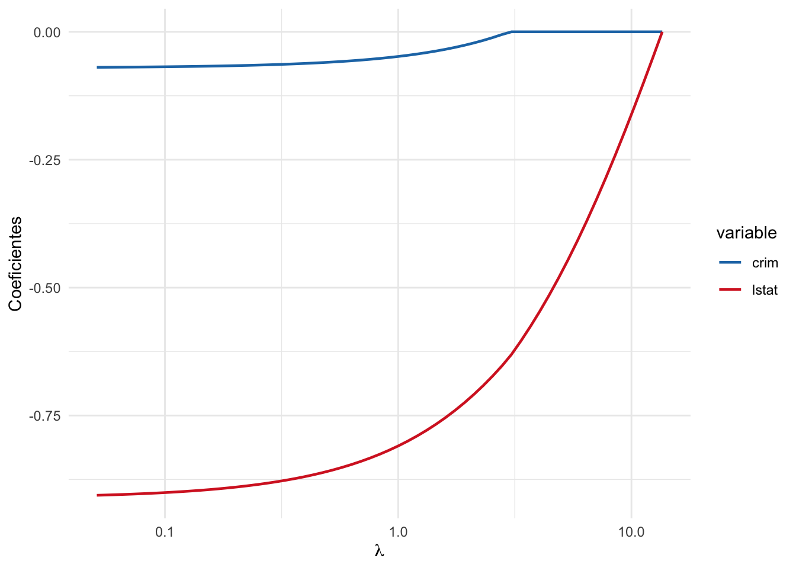
Curiosamente, al igual que en la regresión Lasso, observamos que el coeficiente de crim tiende a contraerse rápidamente hacia cero conforme aumenta el valor de \(\lambda\), aunque en este caso no llega a anularse completamente. Por su parte, el coeficiente de lstat muestra una trayectoria más estable y dominante en magnitud, lo que refuerza la idea de que esta variable contiene una señal más fuerte para explicar la variable respuesta. A medida que aumenta la regularización, su coeficiente también se contrae progresivamente, pero sin perder relevancia relativa frente a crim.
Tal como hicimos en los dos casos anteriores, como última comparación, vamos ahora a ver los valores pronósticados respecto a los valores reales, esto aplicado a los modelos Elastic Net, Lasso, Ridge y MCO, sin embargo, en este punto ya estamos perdiendo algo de legibilidad debido a la cantidad de puntos que estamos comparando, por lo que vamos a dividir rápidamente el gráfico para comparar cada modelo previo que discutimos con Elastic Net:
# Predicciones Elastic Net (reutilizamos mejor_elastic y X)
pred_elastic <- predict(mejor_elastic, newx = X)
# Dataset
df_plot <- data.frame(
real = y,
ElasticNet = as.numeric(pred_elastic),
MCO = as.numeric(pred_mco),
Ridge = as.numeric(pred_ridge),
Lasso = as.numeric(pred_lasso)
) |>
pivot_longer(
cols = c(MCO, Ridge, Lasso),
names_to = "modelo",
values_to = "prediccion"
)
# Duplicamos Elastic Net para cada comparación
df_plot$pred_elastic <- rep(df_plot$ElasticNet, times = 1)
# Gráfico
ggplot(df_plot, aes(x = real)) +
geom_point(aes(y = prediccion, color = modelo), alpha = 0.6) +
geom_point(aes(y = pred_elastic), color = "#9467bd", alpha = 0.6) +
geom_abline(slope = 1, intercept = 0) +
facet_wrap(~modelo, ncol = 3) +
scale_color_manual(
values = c(
"MCO" = "#1f77b4",
"Ridge" = "#d62728",
"Lasso" = "#2ca02c")
) +
labs(
x = "Valores reales",
y = "Valores predichos",
color = "Modelo"
) +
theme_minimal() +
theme(
legend.position = "bottom",
legend.direction = "horizontal",
legend.box = "horizontal",
legend.title = element_text(size = 10),
legend.text = element_text(size = 9),
plot.margin = margin(10, 20, 10, 20)
) +
guides(
color = guide_legend(nrow = 1)
)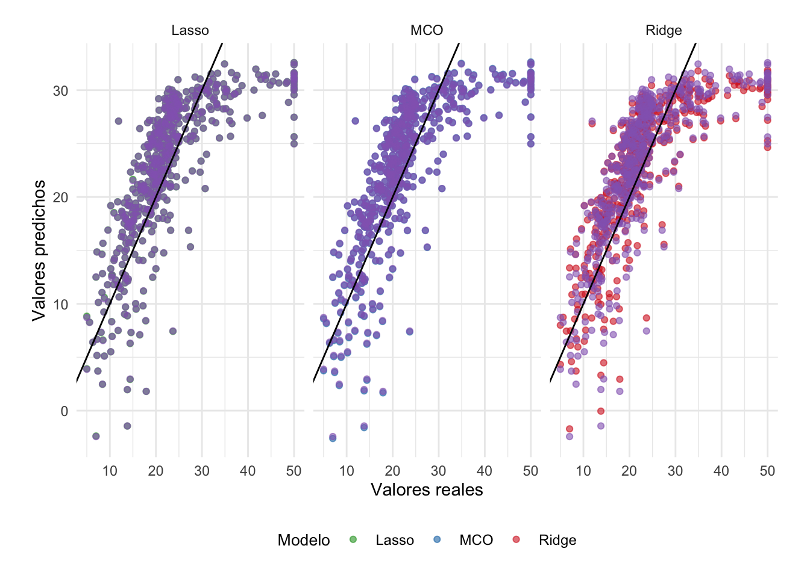
Como seguramente ya te diste cuenta, la diferencia más notable se encuentra en el modelo comparado con la regresión Ridge, esto debido a que en valores más alejados del centro de la distribución (particularmente en los extremos de la variable respuesta) se observa una mayor dispersión. Esto es consistente con el hecho de que, aunque ambos modelos incorporan penalización \(L^2\), Elastic Net introduce adicionalmente un componente \(L^1\) que tiende a ejercer una contracción más selectiva sobre los coeficientes, lo que puede traducirse en predicciones ligeramente más contenidas en presencia de valores extremos.
Vamos a terminar esta sección únicamente interpretando los valores de \(RMSE\) y \(R^2\):
# Predicciones Elastic Net
pred_elastic <- predict(mejor_elastic, newx = X)
# RMSE
rmse_elastic <- sqrt(mean((y - pred_elastic)^2))
# R^2
r2_elastic <- 1 - sum((y - pred_elastic)^2) / sum((y - mean(y))^2)
rmse_elastic[1] 6.180172r2_elastic[1] 0.5475631Los valores son, de hecho, bastante similares a lo encontrado en las variantes de regresión anteriores. La introducción de la regularización mediante Elastic Net no produce mejoras sustanciales en términos de capacidad predictiva. El \(RMSE\) de aproximadamente \(6.18\) y la \(R^2\) de \(0.548\) nos dicen que, dado el bajo número de variables y su relevancia dentro del modelo, no existe un problema significativo de sobreajuste ni de multicolinealidad severa que justifique una ganancia notable al combinar penalizaciones \(L^1\) y \(L^2\). Por supuesto, la selección de este modelo en la práctica dependerá en gran medida del contexto del problema, siendo que en escenarios con alta dimensionalidad o con variables altamente correlacionadas, Elastic Net puede ofrecer ventaja sobre los demás modelos.
7.3 Reducción de dimensionalidad y segmentación
Contrario a lo que podrías pensar de tus clases de estadística aplicada, los modelos de regresión son únicamente el punto de partida. En problemas reales, rara vez trabajamos con un conjunto pequeño y limpio de variables, pero por el contrario, es común enfrentarse a espacios de alta dimensionalidad, donde muchas variables son redundantes, irrelevantes o altamente correlacionadas entre sí. Esta complejidad no solo dificulta la interpretación de los modelos, sino que también puede empeorar su capacidad predictiva debido a fenómenos como el sobreajuste. En este contexto, surge la necesidad de aplicar técnicas que permitan reducir la dimensionalidad de los datos, preservando la mayor cantidad posible de información relevante. Métodos como el análisis de componentes principales (PCA) o la selección automática de variables buscan transformar o filtrar el espacio original en uno más manejable y eficiente. Por otro lado, más allá de predecir valores numéricos, en muchos escenarios el objetivo es entender la estructura interna de los datos, identificando patrones o grupos homogéneos dentro de la poblaciónm siendo que aquí es donde entran en juego las técnicas de segmentación, como el clustering, que permiten descubrir subconjuntos con comportamientos similares sin necesidad de una variable objetivo explícita.
7.3.1 Análisis de Componentes Principales (PCA)
El PCA es una técnica bastante importante (y que posiblemente usarás bastante) dentro del campo del Machine Learning y la estadística multivariante, cuyo propósito es transformar un conjunto de variables posiblemente correlacionadas (generalmente con problemas de multicolinealidad) en un nuevo sistema de variables no correlacionadas llamadas componentes principales. Básicamente, la idea detrás del PCA es encontrar nuevas direcciones en los datos donde la información esté más concentrada, de modo que podamos describir el comportamiento general usando menos variables. En lugar de trabajar con muchas variables originales (que a menudo contienen información redundante), el PCA combina estas variables en unas pocas componentes que capturan la mayor variabilidad posible. Así, es posible reducir la dimensionalidad del problema sin perder demasiada información, facilitando tanto el análisis como la visualización y el modelado de los datos.
Desde una perspectiva matemática, PCA busca una base ortogonal del espacio de características en la cual la representación de los datos maximice la varianza en las primeras dimensiones, permitiendo así capturar la mayor cantidad de información posible con un número reducido de componentes (Pearson 1901). Para entender de mejor manera como funciona este método, vamos a desarrollarlo a continuación. Supongamos una matriz de datos:
\[ \mathbf{X} \in \mathbb{R}^{n \times p} \]
Donde:
- \(n\): Es el número de observaciones.
- \(p\): Es el número de variables.
Además, vamos a suponer que las variables están centradas, es decir, que tienen media cero. Básicamente, PCA buscará una base ortogonal nueva \(\{v_1, v_2, ..., v_p\}\), tal que la proyección de los datos sobre \(v_1\) (la primera dirección) conserve la máxima varianza. Consideremos un vector unitario \(\mathbf{v} \in \mathbb{R}^p\) que nos indica una dirección en el espacio de las variables. La proyección de nuestras observaciones sobre esta dirección estará expresada por la expresión:
\[ \mathbf{z} = \mathbf{X} \mathbf{v} \in \mathbb{R}^n \]
La varianza de esta proyección es justamente la cantidad de información que estamos capturando en esa dirección. Dado que los datos están centrados, la varianza de \(\mathbf{z}\) estará dada por:
\[ \mathrm{Var}(\mathbf{z}) = \frac{1}{n} \mathbf{z}^\top \mathbf{z} = \frac{1}{n} (\mathbf{X}\mathbf{v})^\top (\mathbf{X}\mathbf{v}) = \frac{1}{n} \mathbf{v}^\top \mathbf{X}^\top \mathbf{X} \mathbf{v} \]
Por su parte, podemos definir la matriz de covarianza muestral como:
\[ \Sigma = \frac{1}{n} \mathbf{X}^\top \mathbf{X} \]
Vamos ahora a reescribir la varianza como:
\[ \mathrm{Var}(\mathbf{z}) = \mathbf{v}^\top \Sigma \mathbf{v} \]
La ventaja de mantener esta forma, es que el problema de encontrar el primer componente principal se puede formular como un problema de optimización:
\[ \max_{\mathbf{v}} \quad \mathbf{v}^\top \Sigma \mathbf{v} \quad \text{sujeto a} \quad \mathbf{v}^\top \mathbf{v} = 1 \]
Donde \(\mathbf{v}^\top \mathbf{v} = 1\) es una restricción que asegura que no podemos hacer crecer arbitrariamente la varianza simplemente escalando el vector \(\mathbf{v}\).
Aquí se pone interesante, porque para resolver este problema podemos hacer uso de multiplicadores de Lagrange. Vamos a definir el respectivo lagrangiano:
\[ \mathcal{L}(\mathbf{v}, \lambda) = \mathbf{v}^\top \Sigma \mathbf{v} - \lambda (\mathbf{v}^\top \mathbf{v} - 1) \]
Ahora, simplemente derivamos con respecto a \(\mathbf{v}\) e igualamos a \(0\):
\[ \frac{\partial \mathcal{L}}{\partial \mathbf{v}} = 2\Sigma\mathbf{v} - 2\lambda \mathbf{v} = 0 \]
Esta derivada implica que \(\Sigma \mathbf{v} = \lambda \mathbf{v}\), es decir, que el vector \(\mathbf{v}\) debe ser un vector propio (eigenvector4) de la matriz de covarianza \(\Sigma\), y \(\lambda\) su correspondiente valor propio (eigenvalor5) (Hotelling 1933).
El primer componente principal \(v_1\) es el autovector asociado al mayor autovalor \(\lambda_1\), mientras que la varianza explicada por este componente es \(\lambda_1\). Subsecuentemente, para los siguientes componentes principales que podemos agregar, simplemente el problema se repite agregando restricciones de ortogonalidad, por ejemplo: Para el segundo componente principal, tenemos que:
\[ \max_{\mathbf{v}_2} \quad \mathbf{v}_2^\top \Sigma \mathbf{v}_2 \]
Que estará sujeto a:
\[ \mathbf{v}_2^\top \mathbf{v}_2 = 1, \quad \mathbf{v}_2^\top \mathbf{v}_1 = 0 \]
Lo que, lógicamente, se puede aplicar para el componente \(k\)-ésimo. Es evidente que las soluciones son los autovectores de \(\Sigma\) ordenados de mayor a menor autovalor, es decir:
\[ \lambda_1 \ge \lambda_2 \ge \cdots \ge \lambda_p \]
Ahora bien, si agrupamos los primeros \(k\) autovectores en una matriz:
\[ \mathbf{V}_k = [\mathbf{v}_1, \mathbf{v}_2, \dots, \mathbf{v}_k] \]
La proyección de los datos en el espacio reducido estará dada por:
\[ \mathbf{Z} = \mathbf{X} \mathbf{V}_k \]
Donde \(\mathbf{Z} \in \mathbb{R}^{n \times k}\) nos da los datos transformados en un espacio de menor dimensión que aún guarda la mayor parte de la varianza original.
En este punto, vale la pena preguntarse ¿cuántos componentes principales deberíamos conservar para capturar la mayor proporción de la varianza original, sin introducir complejidad innecesaria en la representación de los datos? O bien, ¿cuál será el número de componentes principales \(k\) que debemos conservar para explicar la cantidad más óptima de la varianza? Para ello, podemos hacer uso de la varianza explicada acumulada, es decir:
\[ \frac{\sum_{i-1}^{k} \lambda_i }{\sum_{i-1}^{p} \lambda_i} \]
Y, simplemente, seleccionar el menor \(k\) con el que dicha proporción supere un umbral predefinido (90%, 95%, etc), el cual dependerá de cada caso particular que estemos trabajando.
Es muy común utilizar el método de PCA en modelos de Machine Learning de clasificación de imágenes, ya que permite reducir significativamente la dimensionalidad de los datos al transformar los pixeles (que pueden ser cientos o miles por imagen) en un conjunto mucho más pequeño de componentes principales que capturan la mayor parte de la varianza.
Vamos ahora a realizar un ejercico en R, esto utilizando un dataset con información ficticia, el cual podrás encontrar en el repositorio oficial del libro, y que además es una versión reducida del dataset sintético, disponible en este link. Comencemos por leer los datos:
# Datos
pca_data <- vroom::vroom(paste0("https://raw.githubusercontent.com/",
"Jorge-hercas/r-para-inteligencia-de-negocios/",
"refs/heads/main/CSV/",
"pca%20dataset%20ficticio.csv"))[-1] |>
mutate(across(
where(is.character),
~ as.numeric(gsub(",", ".", .))
))
pca_data[1:10] |>
head()# A tibble: 6 × 10
x2 x3 x4 x5 x6 x7 x8 x9 x10 x11
<dbl> <dbl> <dbl> <dbl> <dbl> <dbl> <dbl> <dbl> <dbl> <dbl>
1 6.01 -2.72 0.72 421 -2.41 -13.9 -4.76 12.8 2.14 1979
2 2.8 3.69 4.78 -1103 -0.59 0.23 -1.41 -1 0.68 1617
3 2.16 -4.61 7.55 -1561 -1.78 5.94 -10.3 6.04 -14.9 1656
4 -4.17 0.37 13.3 -99 4.19 6.62 -18.6 4.22 -14.8 1985
5 4.12 -12.3 4.42 -1144 -0.41 -1.52 -6.19 -0.99 2.49 1493
6 7.3 9.88 4.54 751 -6.06 7.61 0.76 -1 -5.03 1164# Número de columnas
ncol(pca_data)[1] 200En un rápido vistazo, podemos ver que tenemos un dataset considerablemente grande, que incluye 201 columnas numéricas, por lo que es un ejemplo interesante para reducir el número de observaciones.
Como nota adicional, el dataset tenía un formato decimal europeo, por lo que le hice una transformación rápida para evitar que todo se convirtiera a NA.
Evidentemente, no me di a la tarea de analizar cada columna de este dataset, por lo que no tengo idea de si todas las variables se encuentran en una magnitud similar, razón por la que comenzaremos este ejercicio normalizando los datos:
# Estandarización
pca_scaled <- scale(pca_data)Ahora si, ya que terminamos de estandarizar los datos, podremos aplicar el PCA utilizando la función prcomp():
# PCA
pca_model <- prcomp(pca_scaled, center = TRUE, scale. = TRUE)
# Resumen
pca_summary <- summary(pca_model)
# Primeros 10 componentes
pca_summary$importance[, 1:10] PC1 PC2 PC3 PC4 PC5 PC6
Standard deviation 5.156114 4.969691 4.202455 3.651647 3.600192 3.344031
Proportion of Variance 0.132930 0.123490 0.088300 0.066670 0.064810 0.055910
Cumulative Proportion 0.132930 0.256420 0.344720 0.411390 0.476200 0.532110
PC7 PC8 PC9 PC10
Standard deviation 3.119685 3.025758 2.196659 2.084588
Proportion of Variance 0.048660 0.045780 0.024130 0.021730
Cumulative Proportion 0.580770 0.626550 0.650680 0.672400La salida total real tiene doscientos componentes, lo que la hace algo molesta de imprimir aquí, por lo que estoy truncando la información únicamente a los diez primeros, ya que de hecho la mayoría de la información importante la encontraremos aquí. Como puedes darte cuenta, tan solo en los primeros componentes ya estaríamos obteniendo cerca de un 70% de la varianza acumulada, aunque, lógicamente, podrían requerirse más componentes si se desea alcanzar umbrales más altos de varianza explicada.
Como ya te habrás dado cuenta, la proporción de la varianza explicada con cada componente nuevo va disminuyendo progresivamente, siendo que los componentes posteriores aportan contribuciones marginales cada vez menores, cosa que podemos confirmar con el siguiente gráfico:
# Varianza explicada acumulada
var_explained <- cumsum(pca_model$sdev^2 / sum(pca_model$sdev^2))
df_var <- data.frame(
componente = 1:length(var_explained),
varianza = var_explained
)
# Gráfico
df_var |>
ggplot(aes(x = componente, y = varianza)) +
geom_line(size = 0.9, color = "#C44E52") +
geom_point(color = "#C44E52", size = 0.9) +
geom_hline(yintercept = 0.9, linetype = "dashed", color = "#1f77b4") +
labs(
x = "Número de Componentes",
y = "Varianza Explicada Acumulada"
) +
theme_minimal()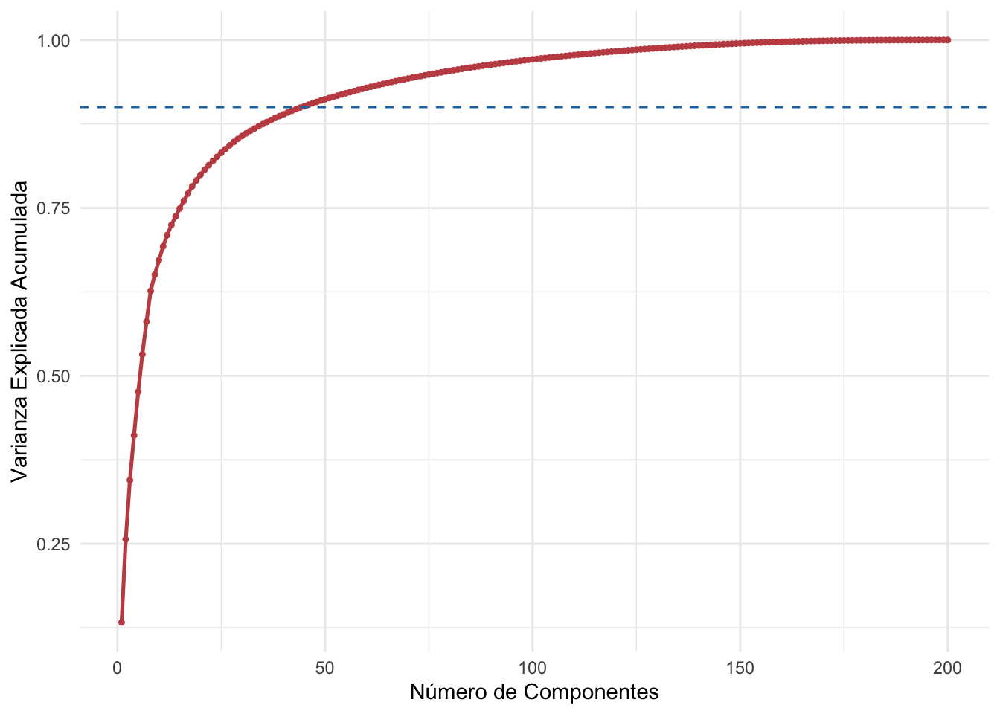
En este caso particular, se observa que alrededor de los primeros 40–50 componentes es suficiente para explicar al menos el 90% de la varianza total del dataset, por lo que no valdría la pena añadir muchos más componentes, al contribuir estos en una proporción demasiado pequeña después de este umbral. Vamos a hacer una confirmación numérica rápida:
comps_90_var <- which(var_explained >= 0.9)[1]
comps_90_var[1] 45Específicamente, en el componente 45 es donde se alcanza este umbral del 90%, siendo que más allá de este punto, probablemente no valdrá la pena incluir componentes al modelo que estemos trabajando (a menos que busquemos específicamente una explicación mayor de la varianza total).
Ya que tenemos una idea clara de cuantos componentes utilizar, entonces podemos reducir la dimensionalidad de nuestro dataset original, es decir:
# Selección de componentes
pca_reduced <- pca_model$x[, 1:comps_90_var]
# Dimensión reducida
dim(pca_reduced)[1] 2000 45Ahora, tenemos la misma cantidad de observaciones y aproximadamente el 90% de la varianza total, pero condensado únicamente en un subespacio de menor dimensión con 45 componentes, en lugar de las doscientas variables originales, lo que facilitará el entrenamiento de un modelo cuando necesitemos escalarlo, además, en ciertos casos, también es posible mejorar el desempeño de ciertos modelos, esto al eliminar información redundante del dataset original (aunque de igual forma podemos generar el efecto contrario).
Como comparación adicional para evaluar el impacto del PCA en el desempeño del modelo, podemos entrenar un modelo lineal utilizando el dataset original, tomando la primera columna como variable dependiente y el resto como variables explicativas, y compararlo contra un modelo construido sobre una representación de menor dimensión obtenida mediante PCA. Comencemos por segmentar los datos mediante holdout:
set.seed(123)
# Dataset original
y <- pca_data[[1]]
X <- pca_data[, -1]
train_idx <- sample(1:nrow(X), 0.7 * nrow(X))
y_train <- y[train_idx]
y_test <- y[-train_idx]
x_train_orig <- X[train_idx, ]
x_test_orig <- X[-train_idx, ]
# Dataset reducido
x_scaled <- scale(X)
pca_model <- prcomp(x_scaled, center = TRUE, scale. = TRUE)
k <- 80
pca_reduced <- pca_model$x[, 1:k]
x_train_pca <- pca_reduced[train_idx, ]
x_test_pca <- pca_reduced[-train_idx, ]Ahora, generamos un modelo para ambos casos:
# Dataset original
model_orig <- lm(y_train ~ ., data = as.data.frame(x_train_orig))
pred_orig <- predict(model_orig, newdata = as.data.frame(x_test_orig))
# Dataset reducido (PCA)
model_pca <- lm(y_train ~ ., data = as.data.frame(x_train_pca))
pred_pca <- predict(model_pca, newdata = as.data.frame(x_test_pca))Y, finalmente, vamos a calcular tanto el \(RMSE\) como la \(R^2\):
mse_orig <- mean((y_test - pred_orig)^2)
mse_pca <- mean((y_test - pred_pca)^2)
# RMSE
rmse_orig <- sqrt(mse_orig)
rmse_pca <- sqrt(mse_pca)
# Coeficiente de determinación
r2_orig <- 1 - sum((y_test - pred_orig)^2) / sum((y_test - mean(y_test))^2)
r2_pca <- 1 - sum((y_test - pred_pca)^2) / sum((y_test - mean(y_test))^2)
rmse_orig[1] 2.311758rmse_pca[1] 4.191394r2_orig[1] 0.8757992r2_pca[1] 0.5917214Es interesante que, a pesar de haber capturado cerca del 90% de la varianza total en las variables explicativas, el modelo reducido solo lograra explicar alrededor del 59% de la varianza de la variable objetivo, frente al modelo original que alcanzó aproximadamente un 87%. En realidad, este resultado tiene sentido si consideramos que el PCA es una técnica no supervisada que optimiza la varianza en \(X\), pero no toma en cuenta la relación entre las variables explicativas y la variable dependiente \(y\).
En este caso en específico, es muy probable que una parte importante de la información relevante para predecir \(y\) no esté concentrada únicamente en las primeras componentes principales, sino distribuida también en componentes de menor varianza que descartamos durante la reducción de dimensionalidad y, como consecuencia, aunque el subespacio reducido conserva gran parte de la estructura global de los datos, pierde capacidad para capturar relaciones específicas necesarias para la predicción.
7.3.2 Análisis Factorial (FA)
A diferencia del PCA, cuyo objetivo principal es maximizar la varianza total explicada sin asumir una estructura subyacente en los datos, el Análisis Factorial (FA) parte de una idea distinta: Modelar explícitamente la existencia de variables latentes no observables que explican las correlaciones entre las variables originales. Basado en esto, mientras que el PCA es una técnica puramente de descomposición, el FA es un modelo estadístico generativo, el cual se basa en la idea de que muchas variables observadas están influenciadas por un número reducido de factores comunes. El objetivo del FA es identificar estos factores ocultos y cuantificar cómo cada variable observada depende de ellos.
Matemáticamente, el FA asume que cada observación puede representarse como una combinación lineal de factores latentes más un término de error específico (Harman 1976). Supongamos el siguiente vector de variables observadas:
\[ \mathbf{X} \in \mathbb{R}^{ p} \]
Para ello, el modelo factorial se expresará como:
\[ \mathbf{x} = \Lambda \mathbf{f} + \boldsymbol{\epsilon} \]
Donde:
- \(\mathbf{f} \in \mathbb{R}^k\): Son los factores latentes, con \(k < p\).
- \(\Lambda \in \mathbb{R}^{p \times k}\): Es la matriz de cargas factoriales.
- \(\boldsymbol{\epsilon} \in \mathbb{R}^p\): Es el vector de errores específicos.
Ahora, bajo los supuestos clásicos del modelo:
\[ \mathbb{E}[\mathbf{f}] = 0, \quad \mathrm{Cov}(\mathbf{f}) = \mathbf{I} \]
\[ \mathbb{E}[\boldsymbol{\epsilon}] = 0, \quad \mathrm{Cov}(\boldsymbol{\epsilon}) = \Psi \]
Es decir, se asume que los factores latentes están estandarizados, son incorrelacionados entre sí, y que los errores específicos también tienen media cero, además de tener una estructura de covarianza \(\Psi\) diagonal y \(\mathrm{Cov}(\mathbf{f}, \boldsymbol{\epsilon}) = 0\), entonces podemos derivar la estructura de covarianza de \(\mathbf{x}\). Para ello, vamos a desglozar la esperanza:
\[ \mathbb{E}[\mathbf{x}] = \Lambda\mathbb{E}[\mathbf{f}] + \mathbb{E}[\boldsymbol{\epsilon}] = 0 \]
Así como la covarianza:
\[ \Sigma = \mathrm{Cov}(\mathbf{x}) = \mathbb{E}[\mathbf{x}\mathbf{x}^\top] \]
Y, sustituyendo en el modelo:
\[ \Sigma = \mathbb{E}[(\Lambda \mathbf{f} + \boldsymbol{\epsilon})(\Lambda \mathbf{f} + \boldsymbol{\epsilon})^\top] \]
Ahora, expandimos la expresión:
\[ \Sigma = \mathbb{E}[\Lambda\mathbf{f}\mathbf{f}^\top\Lambda^\top] + \mathbb{E}[\boldsymbol{\epsilon}\boldsymbol{\epsilon}^\top] + \mathbb{E}[\Lambda\mathbf{f}\boldsymbol{\epsilon}^\top] + \mathbb{E}[\boldsymbol{\epsilon}\mathbf{f}^\top\Lambda^\top] \]
Evidentemente, podemos anular los términos cruzados por independencia (\(\mathbb{E}[\mathbf{f}\boldsymbol{\epsilon}^\top] = 0\)), resultando en:
\[ \Sigma = \Lambda \mathbb{E}[\mathbf{f}\mathbf{f}^\top] \Lambda^\top + \mathbb{E}[\boldsymbol{\epsilon}\boldsymbol{\epsilon}^\top] \]
Y, si aplicamos los supuestos originales:
\[ \Sigma = \Lambda \Lambda^\top + \Psi \]
Como puedes ver, esta descomposición no es mas que el punto central del modelo factorial. A diferencia del PCA, para el FA podemos separar explícitamente tanto la varianza común \(\Lambda\Lambda^\top\) como la varianza específica \(\Psi\).
En este punto se pone interesante, porque a partir de esta formulación podemos obtener la comunalidad6 de la variable \(i\), es decir:
\[ h_i^2 = \sum_{j=1}^k \lambda_{ij}^2 \]
Donde \(\lambda_{ij}\) no es mas que la carga factorial de la variable \(i\) en el factor \(j\). Respectivamente, la varianza específica estará dada por:
\[ \psi_i = \Sigma_{ii} - h_i^2 \]
Ahora, si estandarizamos las variables, es decir, si \(\Sigma_{ii} = 1\), entonces:
\[ \psi_i = 1 - h_i^2 \]
Si vemos esto desde el punto de vista de la inferencia estadística, podemos asumir normalidad multivariante mediante la siguiente formulación:
\[ \mathbf{f} \sim \mathcal{N}(0, \mathbf{I}), \quad \boldsymbol{\epsilon} \sim \mathcal{N}(0, \Psi) \]
Lo que estaría implicando que:
\[ \mathbf{x} \sim \mathcal{N}(0, \Lambda\Lambda^\top + \Psi) \]
Es decir, el FA induce una distribución normal multivariante sobre las variables observadas. A partir de lo anterior, podemos definir una función de verosimilitud para una muestra \({\mathbf{x}_1, \dots, \mathbf{x}_n}\):
\[ \mathcal{L}(\Lambda, \Psi) = \prod_{i=1}^n \frac{1}{(2\pi)^{ \frac{p}{2} } |\Sigma|^{ \frac{1}{2} }} \exp\left(-\frac{1}{2} \mathbf{x}_i^\top \Sigma^{-1} \mathbf{x}_i \right) \]
Siendo \(\Sigma = \Lambda\Lambda^\top + \Psi\) la matriz de covarianza poblacional. Si quisiéramos obtener la matriz de covarianza muestral, tendríamos que reescribir la expresión anterior en su forma log-verosímil, es decir:
\[ \ell(\Lambda, \Psi) = -\frac{n}{2} \log |\Sigma| - \frac{n}{2} \mathrm{tr}(S \Sigma^{-1}) \]
Donde \(S\) es la matriz de covarianza muestral.
A diferencia del PCA, este problema no tiene una solución cerrada, ya que \(\Lambda\) y \(\Psi\) aparecen de forma no lineal en \(\Sigma^{-1}\), razón por la que normalmente se emplea el método de máxima verosimilitud para resolverlo.
Ya que entendemos como funciona el FA, vamos ahora si a la única parte que te interesa. Vamos a hacer el ejercicio respectivo en R, utilizando los mismos datos con los que jugamos en la sección del PCA.
Comencemos por normalizar las observaciones:
fa_data <- pca_data[, 1:50]
fa_scaled <- scale(fa_data)Nótese que, para este ejercicio, solo estoy usando las primeras 50 columnas del dataset, ya que este modelo es un poco más pesado de generar, por lo que para efectos de practicidad del libro lo estaré limitando.
A diferencia del PCA, aquí no usamos varianza explicada directamente. Una forma común es usar los autovalores de la matriz de correlación como una idea inicial para seleccionar el número de factores, de una forma muy parecida a como lo hicimos en PCA. Comencemos por obtener los eigenvalores:
# Matriz de correlación
mat_cor <- cor(fa_scaled)
# Eigenvalores
eigen_vals <- eigen(mat_cor)$values
head(eigen_vals, 10) [1] 6.591178 4.659576 3.682657 2.964997 2.797994 2.683004 2.292725 1.876588
[9] 1.778431 1.710085Ahora, vamos a visualizar rápidamente los factores:
# Data frame de eigenvalores
df_eigen <- data.frame(
factor = 1:length(eigen_vals),
eigenvalor = eigen_vals
)
# Gráfico
df_eigen |>
ggplot(aes(x = factor, y = eigenvalor)) +
geom_line(size = 0.9, color = "#C44E52") +
geom_point(color = "#C44E52", size = 0.9) +
geom_hline(yintercept = 1, linetype = "dashed", color = "#1f77b4") +
labs(
x = "Factor",
y = "Eigenvalor"
) +
theme_minimal()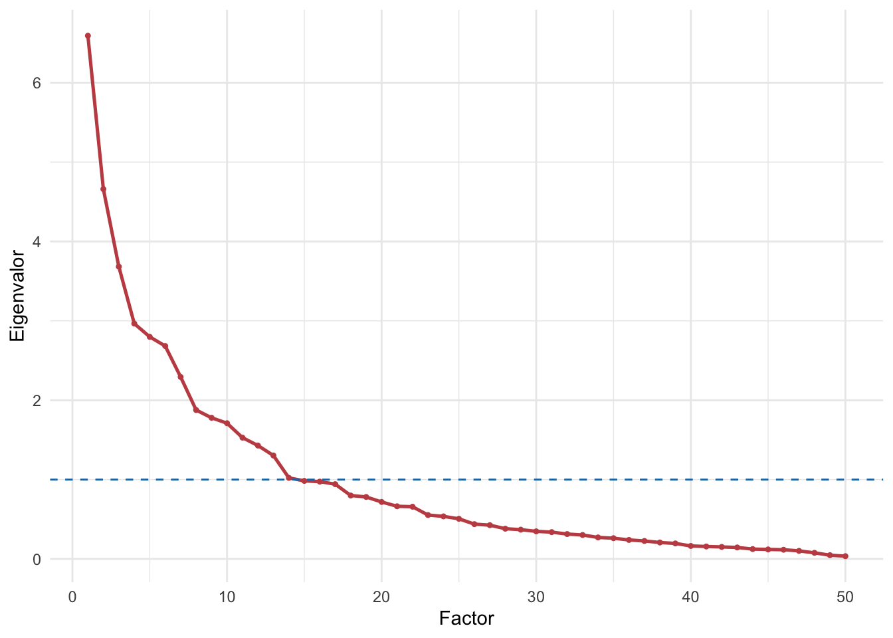
Analíticamente, podemos ver que la mayor parte de la varianza común está concentrada en los primeros factores, lo cual se refleja en la caída abrupta de los eigenvalores en las primeras posiciones. Este comportamiento nos estaría diciendo que existe una estructura relativamente compacta, siendo que unos pocos factores son capaces de capturar una proporción bastante alta de las correlaciones entre las variables.
Supongamos ahora que tomamos en cuenta los factores hasta que convergen con el eigenvalue igual a 1, por lo que podemos obtenerlo sencillamente:
k_cross <- which(eigen_vals <= 1)[1]
k_cross[1] 15Ahora, vamos a estimar el modelo de FA, utilizando el número de factores óptimo obtenido anteriormente, pero, haciendo una reducción de dimensionalidad para utilizar solamente 50 factores, ya que es un modelo relativamente pesado de ejecutar:
# Modelo
fa_model <- factanal(fa_scaled,
factors = k_cross,
rotation = "varimax")Nótese que estoy usando el argumento rotation = "varimax" para indicar rotación ortogonal, lo que facilitará la interpretación.
Veamos ahora un resumen del modelo:
# SS loadings
ss_loadings <- colSums(fa_model$loadings^2)
# Proporción de varianza
prop_var <- ss_loadings / ncol(fa_scaled)
# Varianza acumulada
cum_var <- cumsum(prop_var)
fa_table <- rbind(
"SS loadings" = ss_loadings,
"Proportion Var" = prop_var,
"Cumulative Var" = cum_var
)
fa_table <- round(fa_table, 3)
fa_table Factor1 Factor2 Factor3 Factor4 Factor5 Factor6 Factor7 Factor8
SS loadings 5.992 3.348 3.142 2.477 2.365 2.154 1.807 1.717
Proportion Var 0.120 0.067 0.063 0.050 0.047 0.043 0.036 0.034
Cumulative Var 0.120 0.187 0.250 0.299 0.346 0.390 0.426 0.460
Factor9 Factor10 Factor11 Factor12 Factor13 Factor14 Factor15
SS loadings 1.678 1.509 1.447 1.279 1.215 1.196 0.999
Proportion Var 0.034 0.030 0.029 0.026 0.024 0.024 0.020
Cumulative Var 0.494 0.524 0.553 0.578 0.603 0.626 0.646Pude haber usado directamente summary() para simplificar el código, pero el output es demasiado grande, por lo que solo estoy retornando la información relevante por ahora.
Regresando a la interpretación de este summary, podemos ver que el primer factor presenta un SS loading de aproximadamente 5.992, seguido por una caída progresiva en los factores subsecuentes, resultado que de hecho tiene bastante lógica, ya que se asume que existe un número reducido de factores latentes dominantes que capturan la mayor parte de la estructura de correlación entre variables. Respectivamente, podemos ver que la varianza acumulada para los primeros 15 factores logra explicar cerca del 65%, lo que es bastante para la poca cantidad de factores que tomamos en cuenta.
Tal como lo comparamos para el PCA, vamos ahora a hacer un comparativo entre la los datos originales y los datos reducidos mediante FA, para ver el rendimiento de un modelo lineal básico. Como primer paso, vamos a reconstruir el modelo factorial incluyendo el cálculo de las puntuaciones para poder usarlas en la predicción:
# Scores factoriales
fa_model_scores <- factanal(fa_scaled,
factors = k_cross,
rotation = "varimax",
scores = "regression")
# Las puntuaciones factoriales
fa_scores <- fa_model_scores$scores
dim(fa_scores)[1] 2000 15Nótese que estoy usando el argumento scores ="regression", ya que este método calcula las puntuaciones factoriales como combinación lineal de las variables observadas, minimizando el error cuadrático medio. Existen otros posibles argumentos, como scores = "Bartlett", que produce puntuaciones insesgadas pero con mayor varianza. Normalmente, el método de regresión es el más utilizado por su estabilidad numérica y porque tiende a producir mejores resultados en contextos predictivos.
Ahora, con la matriz fa_scores, podemos repetir el proceso de entrenamiento y evaluación del modelo lineal:
set.seed(123)
y_fa <- fa_data[[1]]
train_idx_fa <- train_idx[train_idx <= nrow(fa_data)]
test_idx_fa <- (1:nrow(fa_data))[-train_idx_fa]
y_train_fa <- y_fa[train_idx_fa]
y_test_fa <- y_fa[-train_idx_fa]
# Puntuaciones factoriales para train y test
x_train_fa <- fa_scores[train_idx_fa, ]
x_test_fa <- fa_scores[-train_idx_fa, ]
# Modelo lineal sobre las puntuaciones factoriales
model_fa <- lm(y_train_fa ~ ., data = as.data.frame(x_train_fa))
pred_fa <- predict(model_fa, newdata = as.data.frame(x_test_fa))
# Cálculo de métricas
mse_fa <- mean((y_test_fa - pred_fa)^2)
rmse_fa <- sqrt(mse_fa)
r2_fa <- 1 - sum((y_test_fa - pred_fa)^2)/
sum((y_test_fa - mean(y_test_fa))^2)
# Original vs PCA vs FA
rmse_orig[1] 2.311758rmse_pca[1] 4.191394rmse_fa[1] 5.632383r2_orig[1] 0.8757992r2_pca[1] 0.5917214r2_fa[1] 0.2627346Como puedes darte cuenta, el modelo original es capaz de explicar en un 87.6% la variabilidad de \(y\), mientras que el PCA es capaz de explicar un 59% y, por su parte, FA es capaz de explicar un 28%. Es interesante que, con solo 15 factores latentes, obtuvimos una \(R^2\) bastante baja, lo que nos estaría diciendo que, para esta porción de datos, la estructura factorial subyacente no está fuertemente alineada con la variable respuesta \(y\). Intentemos incrementar la cantidad de factores. Aunque el criterio del eigenvalue \(> 1\) sugirió retener 15 factores, vamos a experimentar con 30:
# Aumentamos a 30 factores
k_fa_30 <- 30Reestimamos el modelo:
# Modelo FA con 30 factores
fa_model_30 <- factanal(fa_scaled,
factors = k_fa_30,
rotation = "varimax",
scores = "regression")Y, como último paso, repetimos el proceso de entrenamiento:
# Puntuaciones factoriales
fa_scores_30 <- fa_model_30$scores
# Mismo split de datos (usamos los mismos índices)
x_train_fa30 <- fa_scores_30[train_idx_fa, ]
x_test_fa30 <- fa_scores_30[-train_idx_fa, ]
model_fa30 <- lm(y_train_fa ~ ., data = as.data.frame(x_train_fa30))
pred_fa30 <- predict(model_fa30, newdata = as.data.frame(x_test_fa30))
# Cálculo de métricas
mse_fa30 <- mean((y_test_fa - pred_fa30)^2)
rmse_fa30 <- sqrt(mse_fa30)
r2_fa30 <- 1 - sum((y_test_fa - pred_fa30)^2)/
sum((y_test_fa - mean(y_test_fa))^2)
# Original vs PCA vs FA
rmse_orig[1] 2.311758rmse_pca[1] 4.191394rmse_fa30[1] 3.453182r2_orig[1] 0.8757992r2_pca[1] 0.5917214r2_fa30[1] 0.7228732Sorpresivamente, ahora logramos explicar el 72% de la varianza mediante FA, lo que representa una mejora considerable respecto al 59% del PCA y se acerca bastante al 87.6% del modelo original. Esto nos estaría diciendo que, para este dataset en particular, la información relevante para predecir \(y\) no está necesariamente en las direcciones de máxima varianza de \(X\) (que es lo que captura el PCA), sino más bien en la estructura de correlaciones subyacente que el FA logró identificar.
7.3.3 t-SNE (t-Distributed Stochastic Neighbor Embedding)
A diferencia del PCA y del FA, que son técnicas lineales enfocadas en preservar la varianza global o la estructura de correlaciones, el t-SNE pertenece a una familia distinta de métodos de reducción de dimensionalidad no lineales, cuyo objetivo principal es la visualización de datos de alta dimensionalidad en espacios de dos o tres dimensiones. Básicamente, la idea detrás del t-SNE es encontrar una representación en baja dimensionalidad donde los puntos que eran cercanos en el espacio original permanezcan cercanos, y los puntos que eran lejanos permanezcan lejanos, pero con un énfasis mucho mayor en preservar la estructura local que la global. En lugar de intentar mantener las distancias absolutas entre todos los puntos, el t-SNE convierte las distancias euclidianas en probabilidades condicionales que reflejan qué tan probable es que dos puntos sean vecinos, tanto en el espacio original como en el espacio reducido, y luego minimiza la variabilidad entre estas dos distribuciones de probabilidad (Maaten 2014).
Desde una perspectiva matemática, el t-SNE construye una distribución de probabilidad sobre pares de puntos en el espacio original de alta dimensionalidad, de modo que puntos similares tengan una alta probabilidad de ser seleccionados como vecinos. Para entender de mejor manera cómo funciona este método, vamos a desarrollarlo a continuación. Supongamos un conjunto de datos:
\[ \mathbf{X} \in \mathbb{R}^{ p} \]
Donde:
- \(n\): Es el número de observaciones.
- \(p\): Es el número de variables (dimensionalidad original).
El primer paso del t-SNE consiste en calcular la similaridad entre pares de puntos en el espacio original. Para el punto \(i\) y el punto \(j\), la similaridad se define como una probabilidad condicional \(p_{j|i}\), bajo un kernel gaussiano7 centrado en \(x_i\):
\[ p_{j|i} = \frac{\exp\bigl(-\|\mathbf{x}_i - \mathbf{x}_j\|^2 \big/ 2\sigma_i^2\bigr)}{\sum_{k \neq i} \exp\bigl(-\|\mathbf{x}_i - \mathbf{x}_k\|^2 \big/ 2\sigma_i^2\bigr)}, \quad p_{i|i} = 0 \]
Para esta expresión, \(\sigma_i\) es la varianza del kernel gaussiano asociada al punto \(i\), y no es fija para todos los puntos. De hecho, este es uno de los aspectos más interesantes del t-SNE, siendo que cada punto tiene su propia \(\sigma_i\), la cual se ajusta de manera que la distribución de probabilidad condicional sobre sus vecinos tenga una perplejidad fija, es decir, un parámetro definido por el usuario que controla el número efectivo de vecinos que cada punto ve. Formalmente, podemos definir a la perplejidad como:
\[ \text{Perp}(P_i) = 2^{H(P_i)}, \quad \text{donde} \quad H(P_i) = -\sum_j p_{j|i} \log_2 p_{j|i} \]
Donde:
- \(H(P_i)\): Es la entropía de Shannon8 de la distribución condicional \(P_i\).
- \(\text{Perp}(P_i)\): Es el número efectivo de vecinos cercanos que el punto \(i\) considera relevantes en el espacio original.
Ahora bien, para determinar \(\sigma_i\) para cada punto, utilizaremos un procedimiento de búsqueda binaria, donde dado el valor de perplejidad especificado, el algoritmo ajustará iterativamente \(\sigma_i\), hasta que se produzca la perplejidad deseada.
Ya que tenemos calculadas todas las probabilidades condicionales \(p_{j|i}\), entonces el t-SNE construye una distribución de probabilidad conjunta sobre pares de puntos en el espacio original, la cual podemos definir como:
\[ p_{ij} = \frac{p_{j|i} + p_{i|j}}{2n} \]
El objetivo ahora será encontrar una representación \(\mathbf{Y} \in \mathbb{R}^{q}\) con \(q \ll p\) (usualmente \(q = 2\) o \(q = 3\)), donde cada punto \(\mathbf{x}_i\) es mapeado a \(\mathbf{y}_i\), de tal forma que se preserven las relaciones de vecindad. Para este nuevo espacio, el t-SNE define una distribución de probabilidad \(q_{ij}\) sobre pares de puntos, pero a diferencia del espacio original, aquí no se utilizará un kernel gaussiano, sino una distribución t de Student con un grado de libertad, lo que introduce colas pesadas:
\[ q_{ij} = \frac{\left(1 + \|\mathbf{y}_i - \mathbf{y}_j\|^2 \right)^{-1}}{\sum_{k \neq l} \left(1 + \|\mathbf{y}_k - \mathbf{y}_l\|^2 \right)^{-1}}, \quad q_{ii} = 0 \]
Este tipo de distribución permite que puntos lejanos en el espacio reducido tengan una probabilidad relativamente mayor que bajo una gaussiana, lo que nos ayuda a reducir considerablemente el problema de acumulación excesiva de puntos en el centro.
Como siguiente paso, lo que queremos hacer es que la distribución \(Q = {q_{ij}}\) en el espacio reducido sea lo más similar posible a la distribución \(P = {p_{ij}}\) del espacio original, por lo que para ello, el t-SNE minimizará la divergencia de Kullback-Leibler9, por lo que la función objetivo será:
\[ \text{KL}(P \,\|\, Q) = \sum_{i \neq j} p_{ij} \log \frac{p_{ij}}{q_{ij}} \]
Esta función penaliza cuando puntos que son cercanos en el espacio original (alto \(p_{ij}\)) se colocan lejos en el espacio reducido (bajo \(q_{ij}\)).
Finalmente, la minimización de la divergencia \(KL\) se realiza mediante el descenso por gradiente. El gradiente con respecto a cada punto \(\mathbf{y}_i\) se puede expresar como:
\[ \frac{\partial \text{KL}}{\partial \mathbf{y}_i} = 4 \sum_j (p_{ij} - q_{ij})(\mathbf{y}_i - \mathbf{y}_j)\left(1 + \|\mathbf{y}_i - \mathbf{y}_j\|^2\right)^{-1} \]
Ahora, debemos considerar que el resultado del t-SNE dependerá en gran medida de la perplejidad y otros hiperparámetros como la tasa de aprendizaje, además, no preserva las distancias globales, por lo que dos clusters separados pueden aparecer más cerca o más lejos sin significado métrico. De hecho, el t-SNE es más un método de visualización y no uno de modelado estructural, como si lo es el FA. Considerando lo anterior, tendría poco sentido hacer una comparación de rendimiento de modelado como la hicimos con FA y PCA respecto al modelo lineal, ya que el t-SNE no está orientado a preservar información relevante para la predicción de una variable objetivo, por lo que, para el ejercicio correspondiente en R, nos enfocaremos exclusivamente en la implementación y visualización del t-SNE.
Ahora si, comencemos con el respectivo ejercicio en R, utilizando la librería Rtsne para este caso. Como es de esperarse, voy a reutilizar los datos de los ejercicios anteriores:
library(Rtsne)Warning: package 'Rtsne' was built under R version 4.2.3tsne_data <- pca_data
dim(tsne_data)[1] 2000 200Al igual que en casos anteriores, vamos a normalizar el dataset, ya que t-SNE es bastante sensible a a la escala de los datos (al utilizar distancias euclidianas):
tsne_scaled <- scale(tsne_data)En la práctica, es normal que reduzcamos la dimensionalidad previamente mediante PCA cuando tenemos demasiadas columnas, ya que esto no solo disminuye el costo computacional, sino que también elimina ruido y mejora la calidad de la representación obtenida. Vamos a reducir el dataset a 50 componentes:
# PCA previo
pca_pre <- prcomp(tsne_scaled, center = TRUE, scale. = TRUE)
tsne_input <- pca_pre$x[, 1:50]Y ahora si, vamos a generar el t-SNE:
set.seed(123)
tsne_model <- Rtsne(tsne_input,dims = 2,
perplexity = 30,theta = 0.5,
verbose = TRUE,max_iter = 1500)A partir de esos resultados, podemos generar un pequeño dataframe en dos dimensiones, tal que:
tsne_results <- as.data.frame(tsne_model$Y)
colnames(tsne_results) <- c("Dim1", "Dim2")
head(tsne_results,3) Dim1 Dim2
1 3.298168 -18.424697
2 19.987169 -4.304483
3 -19.368699 -7.033396Con ello, podemos visualizar los resultados en un gráfico de puntos:
tsne_results |>
ggplot(aes(x = Dim1, y = Dim2)) +
geom_point(alpha = 0.7, color = "#C44E52") +
labs(x = "Dimensión 1",
y = "Dimensión 2") +
theme_minimal()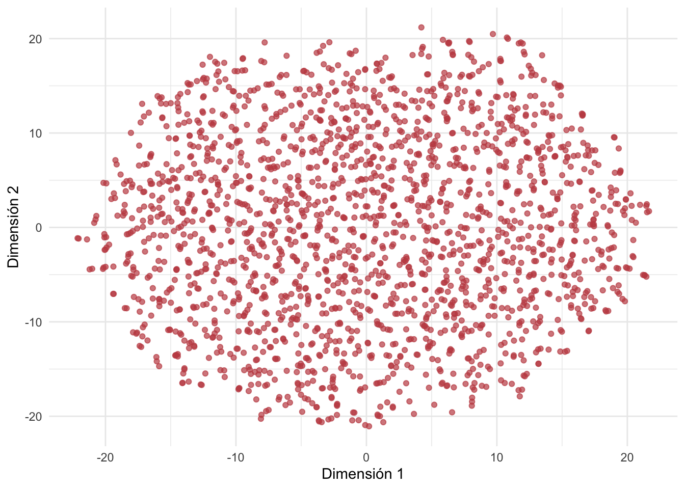
Como puedes ver, el gráfico obtenido muestra una nube continua y homogénea de puntos sin clusters claramente definidos, lo que nos estaría diciendo que en los datos originales no existen estructuras de agrupamiento fuertes a nivel local o que estas son demasiado sutiles para capturarse en dos dimensiones, además, la forma global observada no tiene interpretación geométrica real, ya que, como ya se mencionó, t-SNE no preserva distancias globales. De hecho, esta visualización nos ayuda a concluir que, el uso de clusters para segmentar nuestros datos (que discutiremos en la siguiente sección) tendría poco sentido si nos basamos únicamente en esta proyección de los datos.
Como último ejercicio, vamos ahora a comparar tres valores diferentes de perplejidad: 5, 30 y 50, ya que esta controla el número efectivo de vecinos que cada punto considera al construir la distribución de probabilidades en el espacio original. Para ello, vamos a generar la siguiente función:
perplexities <- c(5, 30, 50)
tsne_list <- lapply(perplexities, function(p) {
set.seed(123)
Rtsne(tsne_input, dims = 2,
perplexity = p,
verbose = FALSE)$Y |>
as.data.frame() |>
setNames(c("Dimension 1",
"Dimension 2")) |>
mutate(perplexity = as.factor(p))
})
tsne_compar <- bind_rows(tsne_list)Y, finalmente, el gráfico comparativo:
tsne_compar |>
ggplot(aes(x = Dim1,
y = Dim2)) +
geom_point(alpha = 0.6,
color = "#C44E52") +
facet_wrap(~ perplexity) +
theme_minimal()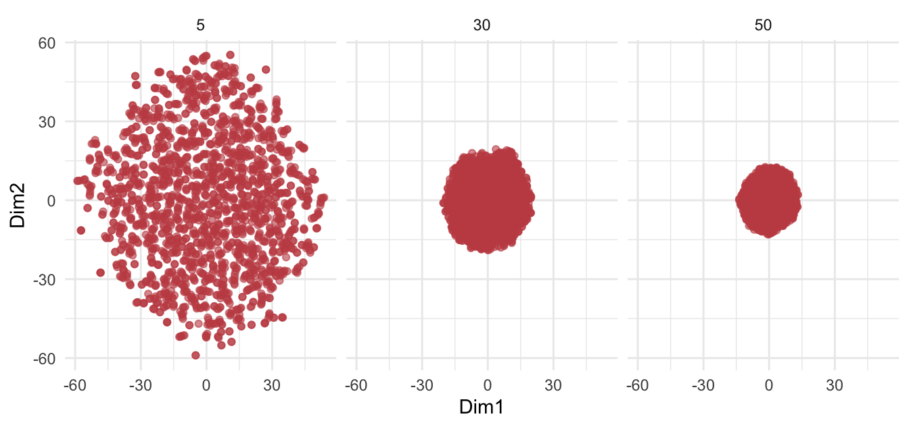
A pesar de que no tenemos evidencia de clusters bien definidos en el dataset, sí podemos darnos cuenta de que la estructura de la proyección es altamente sensible a la perplejidad, lo que de hecho estaría confirmando que el t-SNE está capturando principalmente relaciones de vecindad local más que una organización global robusta, siendo que con valores bajos la representación se fragmenta y enfatiza pequeñas variaciones locales, mientras que con valores más altos la nube de puntos tiende a compactarse, suavizando las diferencias.
7.4 Clustering y categorización de datos
Naturalmente, ya que terminamos de entender los principales métodos de reducción de dimensionalidad en nuestros datos, el siguiente paso lógico será aplicar técnicas que nos permitan identificar estructura interna dentro de la información, es decir, descubrir grupos homogéneos de observaciones sin necesidad de una variable objetivo explícita. Aquí es donde entran en juego los métodos de clustering, los cuales forman parte del aprendizaje no supervisado y tienen como objetivo segmentar los datos en subconjuntos donde los elementos dentro de un mismo grupo sean lo más similares posible entre sí, y lo más distintos posible respecto a los demás grupos.
A diferencia de los modelos supervisados, en clustering no contamos con una etiqueta previa que nos indique a qué grupo pertenece cada observación, siendo que, en su lugar, el algoritmo debe inferir esta estructura a partir de métricas de similitud o distancia, como es el caso de la distancia euclidiana (MacQueen 1967), la cual podemos expresar como:
\[ d(\mathbf{x}_i,\mathbf{x}_j) = \sqrt{ \sum_{m=1}^{p} (x_{im}-x_{jm})^2 } \]
Siendo esto una generalización del teorema de pitágoras, simplemente aplicado a espacios de dimensión \(p\). Esto implica que los resultados dependerán fuertemente tanto de la representación de los datos como de los supuestos del modelo utilizado. Dado lo anterior, es importante notar que las técnicas de reducción de dimensionalidad que vimos anteriormente, como PCA o incluso t-SNE, pueden resultarnos particularmente útiles previo al uso del clustering, esto debido a que eliminan ruido y redundancia en los datos y facilitan la identificación de estructuras latentes.
Antes de entrar en detalle, debemos tomar en cuenta que no existe un único algoritmo de clustering que sea óptimo para todos los escenarios, ya que cada método responde a supuestos distintos sobre la forma, densidad y separación de los datos. En este sentido, abordaremos primero enfoques clásicos como K-means y el clustering jerárquico, que funcionan bien bajo estructuras relativamente compactas, para después explorar métodos más robustos al ruido como DBSCAN, capaces de identificar clusters de forma arbitraria y detectar outliers de manera explícita. Finalmente, veremos criterios prácticos para la selección del número de clusters, como el método del codo (mencionado previamente) y el coeficiente de silhouette, los cuales nos permitirán evaluar la calidad de la segmentación obtenida y evitar decisiones arbitrarias en la partición de los datos.
7.4.1 K-means
El algoritmo de K-means es, probablemente, el método de clustering más utilizado en la práctica debido a su simplicidad conceptual y eficiencia computacional, ya que el objetivo es particionar un conjunto de datos en \(K\) grupos (clusters) disjuntos, de tal forma que las observaciones dentro de cada grupo sean lo más similares posible entre sí, mientras que los grupos entre sí sean lo más distintos posible (MacQueen 1967).
Matemáticamente, dado un conjunto de observaciones en \(\mathbb{R}^p\), es decir:
\[ \mathbf{X} = \{\mathbf{x}_1,\mathbf{x}_2,\dots,\mathbf{x}_n\}, \quad \mathbf{x}_i \in \mathbb{R}^p \]
Se busca dividirlas en \(K\) subconjuntos disjuntos de tal forma que la variabilidad interna de cada grupo sea mínima, por lo que si consideramos el conjunto de datos \({\mathbf{x}_1, \dots, \mathbf{x}_n}\), el problema consiste en encontrar una partición \({C_1, \dots, C_K}\) que minimice la suma de las distancias cuadráticas entre cada punto y el centroide de su cluster correspondiente, es decir:
\[ \min_{\{C_k\},\{\mu_k\}} \sum_{k=1}^{K} \sum_{\mathbf{x}_i \in C_k} \| \mathbf{x}_i - \boldsymbol{\mu}_k \|^2 \]
Siendo este un problema de optimización no convexa sobre dos tipos de variables, las asignaciones discretas de los puntos a clusters y las posiciones continuas de los centroides.
De hecho, podemos reescribir el problema utilizando variables indicadoras. Si definimos \(r_{ik} \in {0,1}\) tal que \(r_{ik} = 1\) si el punto \(\mathbf{x}i\) pertenece al cluster \(k\), y \(0\) en caso contrario, con la restricción \(\sum{k=1}^{K} r_{ik} = 1\), entonces podemos definir la siguiente función objetivo:
\[ \min_{R,\mu} \sum_{i=1}^{n} \sum_{k=1}^{K} r_{ik} \| \mathbf{x}_i - \boldsymbol{\mu}_k \|^2 \]
Ahora bien, si derivamos con respecto a \(\boldsymbol{\mu}_k\) y fijamos \(R\), obtenemos:
\[ \frac{\partial}{\partial \boldsymbol{\mu}_k} \sum_{i=1}^{n} r_{ik} \| \mathbf{x}_i - \boldsymbol{\mu}_k \|^2 = -2 \sum_{i=1}^{n} r_{ik} (\mathbf{x}_i - \boldsymbol{\mu}_k) \]
E igualando a 0:
\[ \boldsymbol{\mu}_k = \frac{\sum_{i=1}^{n} r_{ik} \mathbf{x}_i}{\sum_{i=1}^{n} r_{ik}} \]
Lo que, básicamente, nos estaría diciendo que el centroide óptimo de cada cluster no es más que la media de los puntos asignados a él. Por otro lado, si fijamos los centroides, la minimización con respecto a \(R\) se reduce a asignar cada punto al cluster cuyo centroide minimice la distancia euclidiana.
Debemos tener presente que este método tiene ciertas limitaciones, por ejemplo: Al basarse en distancia euclidiana y en centroides como medias, K-means tiende a generar clusters convexos, aproximadamente esféricos y de tamaño similar, lo que conducirá a interpretaciones erroneas cuando los datos presentan estructuras más complejas, además, dado que la función objetivo depende directamente de distancias euclidianas, cualquier diferencia en magnitudes entre variables puede sesgar fuertemente la partición de los datos.
El algoritmo no nos indica un número exacto de \(k\) per se, por lo que debemos recurrir a técnicas externas de validación, aunque esto lo discutiremos en la siguiente sección.
Como seguro ya lo estas esperando, vamos ahora con el ejercicio respectivo en R, para que puedas entender de mejor manera como funciona el k-means en la práctica. Para este ejercicio, vamos a hacer uso del dataset online shopers, el cual obtuve originalmente de UC Irvine Machine Learning Repository, y que a su vez estará disponible en el repositorio oficial del libro. Este caso es interesante, ya que contiene información real sobre el comportamiento de navegación de usuarios dentro de un sitio web de comercio electrónico, incluyendo métricas como la duración de las sesiones, número de páginas visitadas, etc, y, a diferencia de un dataset sintético, aquí no contamos con una estructura de clusters evidente a simple vista, por lo que será un caso mucho más realista a lo que te encontrarás en la vida laboral. Comencemos por leer los datos:
shop <- read.csv(paste0("https://raw.githubusercontent.com/Jorge-hercas/",
"r-para-inteligencia-de-negocios/refs/heads/main/",
"CSV/online_shopers.csv"))
# Limpieza
shop_num <- shop |>
dplyr::select(where(is.numeric))
shop_num <- na.omit(shop_num)
# Estandarización
shop_scaled <- scale(shop_num)
dim(shop_scaled)[1] 12330 15Supongamos ahora que queremos clusterizar a los usuarios en función de su comportamiento de navegación, es decir, identificar grupos de usuarios con patrones similares en términos de duración de sesión, interacción con páginas administrativas o informativas, etc. Normalmente el siguiente paso lógico sería escoger el número óptimo de clusters utilizando, por ejemplo, el método del codo, sin embargo, aún no hemos discutido ese tema, por lo que para efectos de practicidad (y de valores más comunmente obtenidos con este método), vamos a suponer tres clusters para este ejercicio:
set.seed(123)
k <- 3
kmeans_model <- kmeans(shop_scaled, centers = k, nstart = 25)
# Tamaño de cada cluster
kmeans_model$size[1] 1054 9644 1632Ya tenemos una partición de los datos, pero aún no sabemos qué representa cada cluster. Lo que debemos hacer ahora es analizar los centroides, sin embargo, como estandarizamos los datos, primero debemos llevar estos centroides de vuelta a la escala original:
centroids <- kmeans_model$centers
centroids_original <- sweep(centroids, 2,
attr(shop_scaled, "scaled:scale"), "*")
centroids_original <- sweep(centroids_original, 2,
attr(shop_scaled, "scaled:center"), "+")
round(centroids_original, 2) X Administrative Administrative_Duration Informational
1 5439.12 0.05 1.42 0.01
2 6045.13 1.71 51.40 0.22
3 7345.95 7.33 305.94 2.52
Informational_Duration ProductRelated ProductRelated_Duration BounceRates
1 0.08 3.09 58.06 0.17
2 8.12 23.83 872.80 0.01
3 212.39 96.91 3831.31 0.01
ExitRates PageValues SpecialDay OperatingSystems Browser Region TrafficType
1 0.18 0.00 0.11 2.18 2.33 3.05 5.03
2 0.03 5.90 0.06 2.12 2.38 3.20 4.05
3 0.02 9.64 0.03 2.11 2.22 2.91 3.58A partir de estos centroides, podemos comenzar a sacar algunas conclusiones: Básicamente, los clusters estan organizados por el nivel de actividad de los usuarios respecto al sitio web en cuestión, siendo que el primer grupo representa sesiones de muy baja actividad, caracterizadas por pocas páginas visitadas, duraciones mínimas y altas tasas de rebote, lo que sugiere usuarios que abandonan rápidamente, mientras que el segundo cluster muestra un comportamiento intermedio, y el tercer cluster agrupa a usuarios altamente comprometidos, con una navegación profunda, largas sesiones y valores de página elevados, lo que podría indicarnos una mayor intención de compra.
Vamos a hacer una reducción de dimensionalidad de todas estas variables, para poder visualizar en dos dimensiones los tres clusters que establecimos:
# 2 PC
pca_model <- prcomp(shop_scaled)
pca_df <- data.frame(
PC1 = pca_model$x[,1],
PC2 = pca_model$x[,2],
cluster = as.factor(kmeans_model$cluster)
)
pca_df |>
ggplot(aes(x = PC1,
y = PC2,
color = cluster)) +
geom_point(alpha = 0.6) +
scale_color_manual(values = c("#1f77b4", "#d62728", "#2ca02c")) +
theme_minimal() 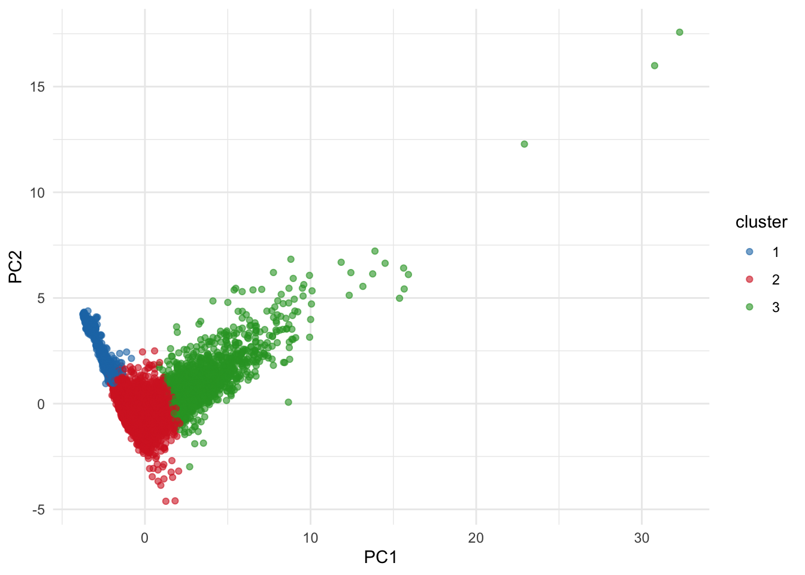
Rápidamente podemos darnos cuenta de que los tres clusters capturan una segmentación real del comportamiento de navegación, ordenándose de forma natural a lo largo de PC1 desde usuarios poco activos (cluster 1, valores bajos) hasta usuarios altamente comprometidos con probable intención de compra (cluster 3, valores altos), mientras que PC2 refleja variabilidad interna dentro de cada grupo sin separar clusters.
El gráfico anterior solo muestra los puntos individuales, lo que puede dificultar la apreciación de los límites aproximados entre grupos, especialmente en las zonas de solapamiento. Una forma más clara de visualizar la estructura de los clusters es dibujando envolturas o elipses de confianza que delimiten el área que ocupa cada grupo en el espacio bidimensional. Para ello, podemos utilizar stat_ellipse():
pca_df |>
ggplot(aes(x = PC1,
y = PC2,
color = cluster)) +
geom_point(alpha = 0.05, size = 1) +
stat_ellipse(aes(fill = cluster),
geom = "polygon",
level = 0.95,
alpha = 0.25,
color = NA) +
stat_ellipse(level = 0.95,
linewidth = 1,
alpha = 1) +
scale_color_manual(values = c("#1f77b4", "#d62728", "#2ca02c")) +
scale_fill_manual(values = c("#1f77b4", "#d62728", "#2ca02c")) +
theme_minimal()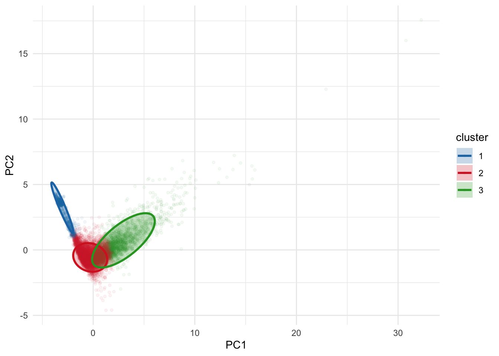
Ahora, la segmentación de cada cluster es mucho más clara y, de hecho, hace más sentido.
Algo interesante que podemos hacer, terminado el método de k-means, es cruzar los clusters obtenidos con la variable Revenue, para saber si el usuario hizo una compra al final:
shop$cluster <- kmeans_model$cluster
table(shop$cluster, shop$Revenue)
FALSE TRUE
1 1048 6
2 8202 1442
3 1172 460Aquí es donde se pone interesante. La forma en la que podemos interpretar esta tabla es viéndola como una tasa de conversión, al tener la cantidad de usuarios respecto a la cantidad de usuarios que compraron en la página, por lo que podemos calcular una sencilla tasa de conversión. Para el primer cluster tenemos una tasa del 0.6%, mientras que para el segundo cluster tenemos una tasa del 15% y, para el último cluster, con usuarios más activos en la página, tenemos una tasa de conversión del 28%, lo que de hecho tiene lógica desde el punto de vista del negocio. Se espera que, entre más tiempo pase un prospecto en la página web, es más probable que termine realizando una compra, ya que el tiempo invertido nos estaría diciendo que hay un mayor interés en los productos.
7.4.2 Clustering jerárquico
A diferencia del método de K-means, donde el objetivo consiste en optimizar explícitamente una función de pérdida basada en centroides, el clustering jerárquico construye una estructura de agrupamiento de manera secuencial a partir de relaciones de proximidad entre observaciones. Básicamente, aquí no existe un único problema global de optimización como tal, sino una serie de decisiones locales donde, en cada iteración, se fusionan los clusters más cercanos según una determinada métrica de distancia (Murtagh and Contreras 2012).
Normalmente, el enfoque más utilizado es el clustering jerárquico aglomerativo, el cual se basa en los siguientes pasos:
- Se establece que cada observación constituye su propio cluster.
- Se calcula la distancia entre todos los pares de clusters.
- Se fusionan los dos clusters más cercanos.
- Se actualiza la matriz de distancias.
- Repetimos el proceso hasta que todas las observaciones pertenezcan a un único cluster.
Matemáticamente, si tenemos un conjunto de observaciones:
\[ \mathbf{X} = \{\mathbf{x}_1,\mathbf{x}_2,\dots,\mathbf{x}_n\}, \quad \mathbf{x}_i \in \mathbb{R}^p \]
A partir de esto, el algoritmo comienza con la partición inicial:
\[ C_i = \{\mathbf{x}_i\}, \quad i=1,\dots,n \]
Donde cada cluster contiene únicamente una observación.
Al igual que en el caso de K-means, el algoritmo de clusterización también va a inferir una estructura a partir de métricas de distancia, por lo que también haremos uso de la distancia euclidina:
\[ d(\mathbf{x}_i,\mathbf{x}_j) = \sqrt{ \sum_{m=1}^{p} (x_{im}-x_{jm})^2 } \]
Ahora bien, el algoritmo calcula inicialmente todas las distancias posibles entre pares de observaciones, formando así una matriz de distancias simétrica:
\[ D = \begin{pmatrix} 0 & d_{12} & d_{13} & \cdots \\ d_{21} & 0 & d_{23} & \cdots \\ d_{31} & d_{32} & 0 & \cdots \\ \vdots & \vdots & \vdots & \ddots \end{pmatrix} \]
Aquí ocurre algo interesante, ya que cuando comenzamos a fusionar las observaciones hay una dificultar de por medio: Medir la distancia entre los grupos completos. Para medir esta distancia, normalmente se hace uso de los criterios de linkage, los cuales podemos enlistar en:
- Single linkage: Define la distancia entre dos clusters como la menor distancia entre cualquiera de sus elementos, es decir:
\[ d(C_a,C_b) = \min_{\mathbf{x}_i \in C_a,\mathbf{x}_j \in C_b} d(\mathbf{x}_i,\mathbf{x}_j) \]
Este criterio conecta clusters utilizando los puntos más cercanos entre ambos grupos, aunque tiene un problema, ya que este enfoque tiende a generar cadenas demasiado largas de observaciones conectadas, especialmente cuando existen puntos intermedios entre clusters.
- Complete linkage: Para este criterio, la distancia entre dos clusters se define utilizando la máxima distancia entre sus elementos, es decir:
\[ d(C_a,C_b) = \max_{\mathbf{x}_i \in C_a,\mathbf{x}_j \in C_b} d(\mathbf{x}_i,\mathbf{x}_j) \]
A diferencia del criterio anterior, este último tiende a producir clusters mucho más compactos y balanceados, ya que penaliza grupos excesivamente dispersos.
- Average linkage: Este criterio utiliza el promedio de todas las distancias posibles entre pares de observaciones pertenecientes a clusters distintos, es decir:
\[ d(C_a,C_b) = \frac{1}{|C_a||C_b|} \sum_{\mathbf{x}_i \in C_a} \sum_{\mathbf{x}_j \in C_b} d(\mathbf{x}_i,\mathbf{x}_j) \]
Donde \(|C_a|\) representa la cantidad de elementos dentro del cluster \(C_a\). Este enfoque suele ser más estable y menos sensible a outliers.
- Ward linkage: Este es, probablemente, el método más importante dentro del clustering jerárquico moderno. En lugar de enfocarse únicamente en distancias entre grupos, el criterio de Ward busca minimizar el incremento en la variabilidad interna de los clusters después de cada fusión. Para ello, primero definimos la suma de cuadrados intra-clusters, es decir:
\[ W(C_k) = \sum_{\mathbf{x}_i \in C_k} \| \mathbf{x}_i - \boldsymbol{\mu}_k \|^2 \]
Donde:
\[ \boldsymbol{\mu}_k = \frac{1}{|C_k|} \sum_{\mathbf{x}_i \in C_k} \mathbf{x}_i \]
Lo cual nos indica el centroide del cluster y, por su parte, la suma total de la variabilidad interna se definirá como:
\[ W = \sum_{k=1}^{K} W(C_k) \]
Para cada iteración, el método de Ward selecciona la fusión que produzca el menor incremento posible en:
\[ \Delta W = W(C_a \cup C_b) - W(C_a) - W(C_b) \]
Nótese que, para este método en particular, no lo estamos viendo en forma de derivada, ya que el algoritmo no optimiza una función continua mediante gradientes.
Ahora bien, este incremento también puede expresarse como:
\[ \Delta W = \frac{|C_a||C_b|} {|C_a|+|C_b|} \| \boldsymbol{\mu}_a-\boldsymbol{\mu}_b \|^2 \]
Lo interesante de esta expresión es que combina simultáneamente el tamaño de los clusters y la distancia entre sus centroides, razón por la cual el criterio de Ward suele producir grupos relativamente compactos y de tamaño similar, siendo el más parecido a K-means.
Una de las grandes ventajas del clustering jerárquico es que no obtenemos únicamente una partición fija de los datos, sino toda una estructura jerárquica representada mediante un dendrograma10, el cual muestra gráficamente cómo los clusters se van fusionando a lo largo del algoritmo.
Ahora bien, una diferencia importante respecto a K-means es el costo computacional. Mientras que K-means suele tener una complejidad aproximada de:
\[ O(nKT) \]
Donde \(n\) representa el número de observaciones, \(K\) el número de clusters y \(T\) el número de iteraciones, el clustering jerárquico requiere calcular y actualizar matrices completas de distancias, lo que, significa que, aunque éste método resulta particularmente útil para análisis exploratorio y datasets medianos, puede volverse computacionalmente costoso en conjuntos de datos muy grandes.
Ya que entendimos de mejor manera cómo funciona e clustering jerárquico, vamos ahora a implementar el ejercicio respectivo en R, utilizando el mismo dataset de comportamiento de usuarios que vimos en la sección anterior.
A diferencia de K-means, aquí no estaremos optimizando centroides de manera iterativa, sino construyendo progresivamente una jerarquía de agrupamientos a partir de las distancias entre observaciones, por lo que el primer paso será calcular la matriz de distancias euclidianas sobre los datos. Podríamos utilizar los datos ya estandarizados que generamos en k-means, pero como ya lo comenté hace un momento, este método es particularmente pesado respecto al costo computacional, por lo que para efectos de practicidad voy a tomar una muestra de dos mil observaciones:
set.seed(123)
sample_idx <- sample(1:nrow(shop_scaled), 2000)
shop_sample <- shop_scaled[sample_idx, ]
# Matriz de distancias
dist_matrix <- dist(shop_sample,
method = "euclidean")
dist_matrix |>
head(50) [1] 3.047252 3.736861 3.215092 3.084948 2.832180 3.653582 5.021674
[8] 5.719843 4.654702 5.550254 8.079478 4.305471 3.579969 4.220677
[15] 5.450519 4.571588 3.671269 5.402749 4.870474 3.950114 7.296107
[22] 5.809897 3.219785 5.163755 4.840911 4.800893 6.228469 4.577742
[29] 4.201535 10.134462 4.700672 3.075908 4.039838 3.087074 4.395446
[36] 7.325959 3.246623 3.111948 4.031952 4.546971 3.434569 4.449101
[43] 4.494414 4.406456 4.970416 3.135819 5.347701 5.769046 4.165936
[50] 5.506912Ya que calculamos las distancias, vamos ahora a aplicar el método jerárquico utilizando el criterio de Ward:
# Clustering jerárquico
hc_model <- hclust(dist_matrix,
method = "ward.D2")Una de las ventajas del clustering jerárquico es que podemos visualizar toda la estructura de agrupamiento mediante un dendrograma, el cual podemos crear con ggplot2, ayudándonos de la librería ggdendro:
library(ggdendro)Warning: package 'ggdendro' was built under R version 4.2.3# Convertir dendrograma
dendro <- ggdendro::dendro_data(hc_model)
segment(dendro) |>
ggplot() +
geom_segment(aes(x = x, y = y, xend = xend, yend = yend),
linewidth = 0.4) +
labs(x = NULL,
y = "Distancia") +
theme_minimal() +
theme(axis.text.x = element_blank(),
axis.ticks.x = element_blank(),
panel.grid.minor = element_blank())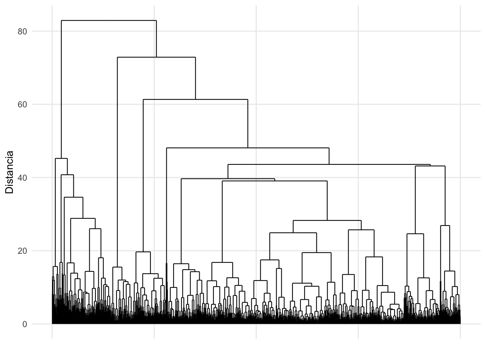
Aunque no parece tan intuitivo, leer este tipo de gráficos es bastante sencillo. Para este caso particular, debemos interpretar el dendrograma de abajo hacia arriba. Inicialmente, cada una de las líneas verticales en la parte inferior representa una observación individual, es decir, cada usuario comienza siendo su propio cluster independiente. Conforme avanzamos hacia arriba, las ramas comienzan a fusionarse progresivamente según su nivel de similitud. La altura a la que ocurre cada unión es precisamente lo más importante del gráfico, ya que representa la distancia entre los clusters fusionados, por lo que, mientras más baja sea una unión, más similares eran los grupos entre sí; mientras que fusiones a alturas mayores indican clusters considerablemente distintos.
Aquí ocurre algo importante, ya que a diferencia de K-means, donde debemos definir el número de clusters desde el inicio, el método jerárquico nos permite decidir posteriormente dónde cortar el árbol para obtener una segmentación final. Para mantener consistencia con el ejemplo anterior, vamos nuevamente a trabajar con tres clusters:
# Obtener 3 clusters
hc_clusters <- cutree(hc_model, k = 3)
table(hc_clusters)hc_clusters
1 2 3
1604 288 108 Ahora ya tenemos una asignación de clusters para cada usuario. Al igual que hicimos anteriormente, podemos proyectar los resultados sobre las dos primeras componentes principales para visualizar la segmentación:
# PCA solamente del sample
pca_sample <- prcomp(shop_sample)
pca_df_hc <- data.frame(
PC1 = pca_sample$x[,1], PC2 = pca_sample$x[,2],
cluster = as.factor(hc_clusters)
)
pca_df_hc |>
ggplot(aes(x = PC1, y = PC2,
color = cluster)) +
geom_point(alpha = 0.6) +
scale_color_manual(values = c("#1f77b4", "#d62728", "#2ca02c")) +
theme_minimal()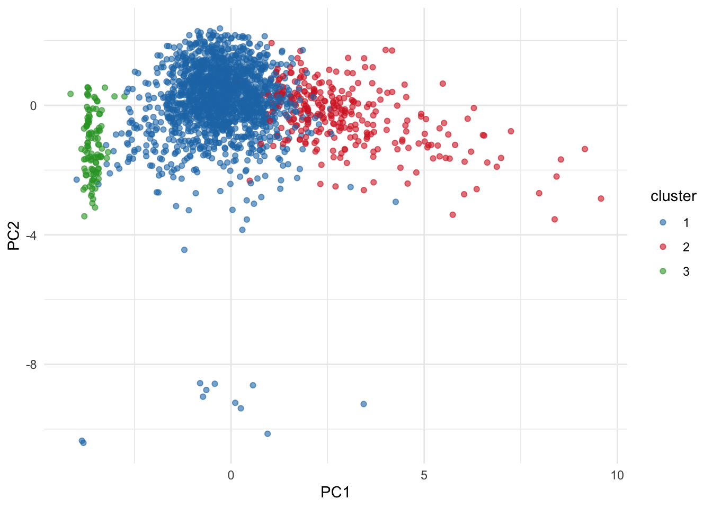
Si bien estamos omitiendo una gran parte de las observaciones del dataset original, si podemos notar que, de manera general, la estructura encontrada es relativamente similar a la obtenida mediante K-means, lo cual nos sugiere que efectivamente existen patrones naturales de comportamiento dentro de los usuarios del sitio web.
Al igual que en el caso anterior, también podemos utilizar elipses de confianza para visualizar de forma más clara la distribución espacial de los clusters:
pca_df_hc |>
ggplot(aes(x = PC1,
y = PC2,
color = cluster)) +
geom_point(alpha = 0.05,
size = 1) +
stat_ellipse(aes(fill = cluster),
geom = "polygon",
level = 0.95,
alpha = 0.25,
color = NA) +
stat_ellipse(level = 0.95,
linewidth = 1,
alpha = 1) +
scale_color_manual(values = c("#1f77b4","#d62728","#2ca02c")) +
scale_fill_manual(values = c("#1f77b4","#d62728","#2ca02c")) +
theme_minimal()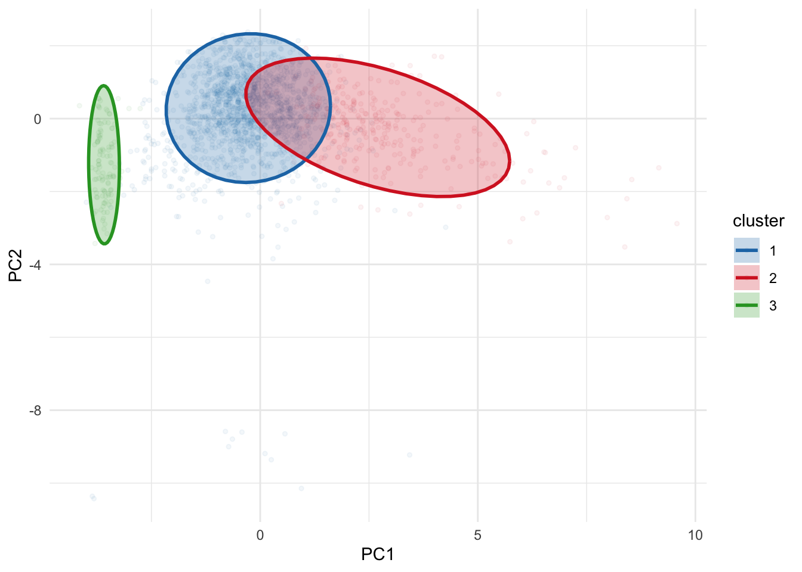
Finalmente, podemos cruzar los clusters obtenidos con la variable Revenue para analizar si los distintos segmentos presentan diferencias en intención de compra:
shop_sample_df <- shop[sample_idx, ]
shop_sample_df$cluster_hc <- hc_clusters
table(shop_sample_df$cluster_hc,
shop_sample_df$Revenue)
FALSE TRUE
1 1407 197
2 198 90
3 107 1Aquí volvemos a encontrar un patrón extremadamente interesante desde el punto de vista del negocio (incluso basándonos únicamente en una muestra de los datos): Los clusters asociados con usuarios más activos dentro del sitio web presentan mayores tasas de conversión. Esto refuerza la idea de que las variables de comportamiento de navegación contienen señales importantes sobre la probabilidad de compra.
7.4.3 Médotos robustos a ruido: DBSCAN
Hasta ahora, tanto K-means como el clustering jerárquico comparten una limitación en particular: Ambos métodos tienden a asumir estructuras relativamente compactas y bien definidas dentro de los datos. En particular, K-means funciona mejor cuando los clusters son aproximadamente esféricos y de tamaño similar, mientras que el clustering jerárquico puede verse afectado por outliers o por regiones de baja densidad que terminan conectando grupos distintos de manera artificial.
Dados los problemas de los métodos anteriores, aquí es donde entra en juego DBSCAN (Density-Based Spatial Clustering of Applications with Noise), uno de los algoritmos de clustering más importantes dentro de los métodos basados en densidad. A diferencia de los enfoques anteriores, DBSCAN identifica regiones densas de observaciones y las separa de regiones dispersas, lo que nos permite detectar clusters de formas arbitrarias y, al mismo tiempo, identificar explícitamente ruido dentro de los datos.
La idea central del algoritmo consiste en modelar los clusters como subconjuntos de alta densidad dentro del espacio de características. Para formalizar esto, supongamos nuevamente el mismo conjunto de observaciones:
\[ \mathbf{X} = \{\mathbf{x}_1,\mathbf{x}_2,\dots,\mathbf{x}_n\}, \quad \mathbf{x}_i \in \mathbb{R}^p \]
DBSCAN comienza definiendo una noción local de vecindad alrededor de cada observación, siendo que, para ello, introducimos el parámetro \(\varepsilon > 0\), el cual define un radio de proximidad. El vecindario \(\varepsilon\) de un punto \(\mathbf{x}_i\) se define como:
\[ N_\varepsilon(\mathbf{x}_i)=\{\mathbf{x}_j \in \mathbf{X}: d(\mathbf{x}_i,\mathbf{x}_j)\leq\varepsilon\} \]
Donde \(d(\cdot,\cdot)\) representa una métrica de distancia. Como es de esperarse, vamods a utilizar nuevamente la distancia euclidiana para ello:
\[ d(\mathbf{x}_i,\mathbf{x}_j) = \sqrt{ \sum_{m=1}^{p} (x_{im}-x_{jm})^2 } \]
Geométricamente, esto significa que estamos construyendo una hiperesfera de radio \(\varepsilon\) alrededor de cada observación y contabilizando cuántos puntos caen dentro de ella.
Vamos ahora a introducir el segundo hiperparámetro fundamental del algoritmo:
\[ \text{MinPts} \in \mathbb{N} \]
El cual representa la cantidad mínima de observaciones necesarias para considerar que una región posee suficiente densidad local. A partir de esto, un punto \(\mathbf{x}_i\) será considerado un core point11 si:
\[ |N_\varepsilon(\mathbf{x}_i)| \geq \text{MinPts} \]
Es decir, si dentro de su vecindario existen suficientes observaciones cercanas. Ahora bien, si consideramos el volumen de la hiperesfera centrada en \(\mathbf{x}_i\), la densidad local alrededor del punto puede aproximarse como:
\[ \hat{f}(\mathbf{x}_i) \propto \frac{ |N_\varepsilon(\mathbf{x}_i)| }{ V_p(\varepsilon) } \]
Donde \(V_p(\varepsilon)\) representa el volumen de una esfera de radio \(\varepsilon\) en \(\mathbb{R}^p\), entonces DBSCAN puede interpretarse como un algoritmo que identifica regiones donde la densidad empírica local supera cierto umbral implícito determinado por \(\varepsilon\) y \(\text{MinPts}\).
A partir de los core points, el algoritmo introduce una relación de conectividad basada en densidad: Diremos que un punto \(\mathbf{x}_j\) es directamente alcanzable por densidad desde \(\mathbf{x}_i\) si:
\[ \mathbf{x}_j \in N_\varepsilon(\mathbf{x}_i) \]
Es decir, si \(\mathbf{x}_j\) se encuentra dentro del vecindario \(\varepsilon\) de \(\mathbf{x}_i\), y además \(\mathbf{x}_i\) es un core point.
Nótese que esta relación no necesariamente es simétrica. Un border point puede ser alcanzable desde un core point, aunque él mismo no tenga suficientes vecinos para ser considerado núcleo.
Una ventaja extremadamente importante de este enfoque es que DBSCAN no presupone formas convexas para los clusters. Mientras que K-means particiona el espacio utilizando fronteras lineales inducidas por centroides, DBSCAN puede detectar estructuras arbitrarias, por ejemplo, consideremos un conjunto de datos con forma de anillo:
\[ x_1^2 + x_2^2 \approx r^2 \]
Un algoritmo basado en centroides, como era el caso de los dos anteriores, probablemente dividiría esta estructura incorrectamente en regiones lineales, mientras que DBSCAN puede recuperar naturalmente toda la geometría circular debido a que únicamente depende de conectividad local por densidad.
Infortunadamente, el algoritmo también presenta limitaciones importantes, siendo que la principal dificultad aparece en espacios de alta dimensión. Conforme aumenta \(p\), ocurre el fenómeno conocido como curse of dimensionality, donde las distancias euclidianas comienzan a concentrarse:
\[ \frac{ \max d(\mathbf{x}_i,\mathbf{x}_j) - \min d(\mathbf{x}_i,\mathbf{x}_j) }{ \min d(\mathbf{x}_i,\mathbf{x}_j) } \to 0 \quad \text{cuando } p \to \infty \]
Esto implica que distinguir regiones densas y dispersas se vuelve progresivamente más difícil, ya que prácticamente todos los puntos terminan estando a distancias similares entre sí.
Ahora bien, ya que entendimos de manera mucho más formal cómo funciona DBSCAN, vamos ahora implementarlo en R utilizando nuevamente el dataset de comportamiento de usuarios del sitio web. Al igual que en los métodos anteriores, trabajaremos sobre los datos estandarizados:
library(dbscan)
Attaching package: 'dbscan'The following object is masked from 'package:stats':
as.dendrogram# Aplicar DBSCAN
dbscan_model <- dbscan(shop_scaled,
eps = 0.8,
minPts = 10)
# Cantidad de observaciones por cluster
table(dbscan_model$cluster)
0 1 2 3 4 5 6 7 8 9 10 11 12 13 14 15
8449 119 1668 704 217 106 500 40 20 28 52 21 11 22 29 10
16 17 18 19 20 21 22 23 24 25 26 27 28 29 30 31
8 9 15 45 65 66 8 12 22 12 25 10 12 10 8 7 Aquí ocurre algo importante respecto a la interpretación de los resultados. A diferencia de K-means o clustering jerárquico, DBSCAN asigna el valor 0 a las observaciones consideradas ruido (noise points), es decir, usuarios cuyo comportamiento no pertenece claramente a ninguna región densa dentro de los datos, aunque en este caso partticular no tuvimos esa situación.
Como siguiente paso, al igual que hicimos anteriormente, podemos proyectar los clusters sobre las dos primeras componentes principales para visualizar mejor la estructura encontrada:
# PCA
pca_db <- prcomp(shop_scaled)
pca_df_db <- data.frame(
PC1 = pca_db$x[,1],
PC2 = pca_db$x[,2],
cluster = as.factor(dbscan_model$cluster)
)
pca_df_db |>
ggplot(aes(x = PC1,
y = PC2,
color = cluster)) +
geom_point(alpha = 0.6) +
scale_color_manual(values = c("0" = "#1f77b4",
"1" = "#d62728",
"2" = "#2ca02c"
)) +
theme_minimal()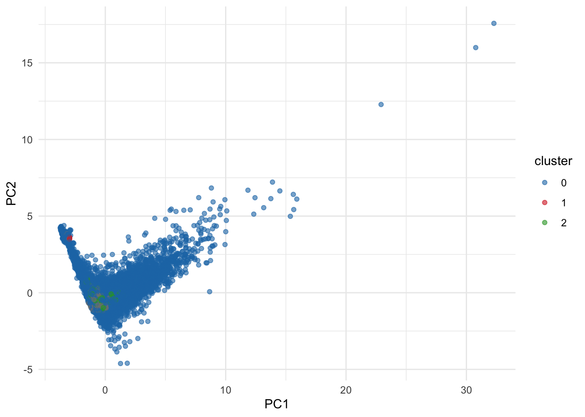
De hecho, como puedes darte cuenta rápidamente, este es un ejemplo interesante de un caso de curse of dimensionality, siendo que aunque estamos visualizando únicamente las dos primeras componentes principales, DBSCAN prácticamente no logra identificar regiones densas bien separadas dentro del espacio de datos, clasificando la enorme mayoría de las observaciones dentro de un único cluster principal. Esto ocurre porque, en espacios de alta dimensión, las distancias euclidianas tienden a volverse cada vez más similares entre sí, dificultando distinguir de manera clara entre regiones densas y dispersas.
Finalmente, también podemos analizar la relación entre los clusters encontrados y la variable:
shop$cluster_dbscan <- dbscan_model$cluster
table(shop$cluster_dbscan,
shop$Revenue) |>
head()
FALSE TRUE
0 6735 1714
1 119 0
2 1563 105
3 667 37
4 210 7
5 106 0Sin embargo, al no tener una distinción clara entre clusters, estos resultados estarán sesgados, por lo que no valdría el sacar conclusiones a partir de ellos. Obviamente hay una gran concentración de usuarios en el primer cluster que si realizaron una compra, pero esto es debido a que casi todas las observaciones fueron asignadas al primer cluster.
Si bien es un método interesante, no sirve de mucho en tanto tengamos una alta dimensionalidad, aunque hay algunas alternativas de las que nos podemos apoyar para aumentar la eficiencia de este método, como lo es el uso de métodos de reducción de dimensionalidad (PCA) para eliminar variables redundantes o poco informativas antes de aplicar el clustering. Al proyectar los datos sobre un espacio de menor dimensión, las distancias euclidianas tienden a recuperar capacidad discriminativa, permitiendo que las regiones densas sean mucho más fáciles de identificar.
De hecho, también existen variantes más modernas como HDBSCAN, las cuales permiten trabajar con densidades variables sin depender de un único valor global de \(\varepsilon\), aunque por temas de practicidad del libro no voy a abordar este método.
7.4.4 ¿Cuántos clusters elegir? el método del codo (Elbow method)
Hasta este punto, hemos trabajado suponiendo previamente el número de clusters que queremos obtener, sin embargo, en un problema real normalmente no conocemos de antemano cuántos grupos naturales existen dentro de los datos, por lo que surge una de las preguntas más importantes dentro del clustering: ¿Cómo elegir un valor adecuado de \(K\)?
En el caso particular de K-means, recordemos que el algoritmo busca minimizar la suma de cuadrados entre clusters, es decir:
\[ W(K) = \sum_{k=1}^{K} \sum_{\mathbf{x}_i \in C_k} \| \mathbf{x}_i-\boldsymbol{\mu}_k \|^2 \]
Obviamente, conforme incrementamos el número de clusters, esta cantidad siempre disminuirá. De hecho, si lleváramos el proceso al extremo y asignáramos un cluster para cada observación:
\[ K=n \]
Entonces cada punto sería su propio centroide y obtendríamos:
\[ W(K)=0 \]
Lo anterior implica que minimizar únicamente la función objetivo no es suficiente para elegir un valor razonable de \(K\), ya que un número excesivo de clusters terminaría sobreajustando los datos y destruyendo la utilidad interpretativa del modelo, siendo esta la razón por la que solemos aplicar ciertas métricas para identificar el número óptimo de clusters para cada dataset, siendo en este caso el método del codo (Elbow Method) el que vamos a utilizar. La idea consiste en analizar cómo disminuye la variabilidad entre clusters conforme aumentamos el número de grupos. Inicialmente, agregar nuevos clusters suele reducir drásticamente la suma de cuadrados interna, ya que estamos separando estructuras claramente distintas dentro de los datos, sin embargo, llega un punto donde añadir más clusters produce mejoras marginales cada vez menores (Kaufman and Rousseeuw 1990).
Geométricamente, esto suele generar una curva con forma de codo, donde el punto de inflexión representa un equilibrio razonable entre complejidad y capacidad explicativa. Formalmente, lo que hacemos es calcular:
\[ W(1),W(2),W(3),\dots,W(K_{\max}) \]
Y posteriormente graficar estos valores respecto al número de clusters. Vamos a ver un ejemplo rápido de ello en R, utilizando nuevamente nuestro dataset de comportamiento de usuarios:
set.seed(123)
# Evaluar múltiples valores de K
wcss <- c()
for(k in 1:10){
km_model <- kmeans(shop_scaled,
centers = k,
nstart = 25)
wcss[k] <- km_model$tot.withinss
}
elbow_df <- data.frame(
k = 1:10,
wcss = wcss
)Vamos ahora a generar un gráfico que nos muestre la suma de cuadrados entre clusters conforme incrementamos \(K\):
elbow_df |>
ggplot(aes(x = k,
y = wcss)) +
geom_line(linewidth = 0.8, color = "#d62728") +
geom_point(size = 1.5, color = "#d62728") +
scale_x_continuous(breaks = 1:10) +
labs(x = "Número de clusters",
y = "WCSS") +
theme_minimal()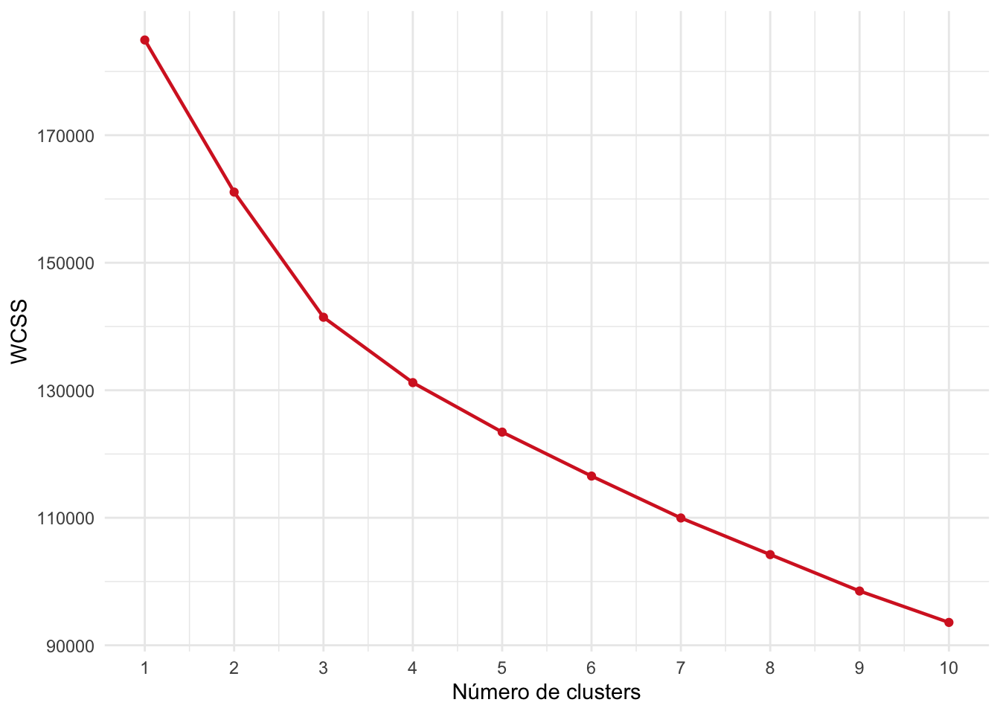
El gráfico obtenido nos permite visualizar cómo disminuye la suma de cuadrados entre clusters conforme incrementamos \(K\). Normalmente, el valor óptimo se identifica en el punto donde la pendiente comienza a estabilizarse, es decir, donde agregar más clusters ya no produce mejoras sustanciales en la compactación de los grupos, siendo que en este caso particular la reducción de la variabilidad es muy pronunciada durante los primeros tres clusters, pero posteriormente comienza a desacelerarse. Lo interesante es que este resultado coincide con los análisis anteriores que realizamos tanto con K-means como con clustering jerárquico, donde observamos una segmentación relativamente natural en tres grupos principales de usuarios.
De hecho, es bastante común en la práctica encontrar que en los primeros tres a cinco clusters tendremos la mayoría de la información relevante (aunque esto no es una regla definitiva, sino más bien una observación empírica que suele aparecer en muchos problemas reales). Esto ocurre porque, en numerosos datasets, las estructuras más importantes de los datos tienden a concentrarse en unos cuantos grupos principales, mientras que agregar clusters adicionales generalmente comienza a capturar variaciones cada vez más específicas, ruido o subdivisiones poco interpretables desde el punto de vista del modelo a trabajar.
7.4.5 Coeficiente de silhouette
Aunque el método del codo resulta extremadamente útil para tener una primera aproximación sobre el número adecuado de clusters, también es un método incompleto desde el punto de vista de la validación estadística, ya que únicamente analiza cómo disminuye la variabilidad interna conforme incrementamos el número de grupos, pero no evalúa explícitamente qué tan bien separados se encuentran los clusters entre sí. De hecho, en muchos problemas reales el supuesto codo ni siquiera aparece de manera clara, haciendo que la elección de \(K\) termine dependiendo fuertemente de una interpretación subjetiva del gráfico, razón por la que, normalmente, se complementa con métricas adicionales capaces de identificar simultáneamente la cohesión interna de los clusters y la separación entre grupos, siendo el coeficiente de silhouette uno de los enfoques más utilizados para este propósito.
Este coeficiente mide simultáneamente dos propiedades fundamentales de un buen clustering:
- Compacidad intra-cluster: Qué tan similares son los puntos dentro del mismo grupo.
- Separación inter-cluster: Qué tan alejados están los clusters entre sí.
La idea detrás de esta métrica es bastante intuitiva: Un punto estará correctamente agrupado si se encuentra mucho más cerca de las observaciones de su propio cluster que de las observaciones pertenecientes a otros grupos (Kaufman and Rousseeuw 1990).
Matemáticamente, podemos definir las siguientes expresiones:
\[ a(i) = \frac{1}{|C_i|-1} \sum_{\mathbf{x}_j \in C_i,\ j\neq i} d(\mathbf{x}_i,\mathbf{x}_j) \]
Y:
\[ b(i) = \min_{C_k \neq C_i} \left( \frac{1}{|C_k|} \sum_{\mathbf{x}_j \in C_k} d(\mathbf{x}_i,\mathbf{x}_j) \right) \]
Siendo, respectivamente:
- \(a(i)\): La distancia promedio entre \(\mathbf{x}_i\) y todas las demás observaciones pertenecientes a su mismo cluster.
- \(b(i)\): La menor distancia promedio entre \(\mathbf{x}_i\) y las observaciones de cualquier otro cluster distinto al suyo.
A partir de estas cantidades, podemos definir el coeficiente de silhouette para la observación \(\mathbf{x}_i\) como:
\[ s(i) = \frac{ b(i)-a(i) }{ \max(a(i),b(i)) } \]
Siendo que el valor siempre estará acotado entre \(-1\) y \(1\), es decir:
\[ -1 \leq s(i) \leq 1 \]
Y la interpretación general suele ser:
- \(s(i) \approx 1\): La observación está muy bien asignada a su cluster.
- \(s(i) \approx 0\): La observación se encuentra cerca de la frontera entre clusters.
- \(s(i) < 0\): La observación probablemente fue asignada al cluster incorrecto.
Para este método en particular, en la práctica se suele calcular el promedio global, es decir:
\[ \bar{s} = \frac{1}{n} \sum_{i=1}^{n} s(i) \]
Siendo que valores más altos indican una mejor estructura de agrupamiento. De manera empírica, suele considerarse que:
- \(\bar{s} > 0.7\): Clusters muy bien separados.
- \(\bar{s} \approx 0.5\): Estructura razonable.
- \(\bar{s} < 0.25\): Segmentación débil o poco clara.
Vamos ahora a calcular esta métrica en R utilizando nuevamente nuestro dataset de comportamiento de usuarios, evaluando distintos valores de \(K\) y calcularemos el promedio del coeficiente de silhouette para cada uno de ellos:
library(cluster)
set.seed(123)
silhouette_scores <- c()
for(k in 2:10){
km_model <- kmeans(shop_scaled,
centers = k,
nstart = 25)
sil <- silhouette(km_model$cluster,
dist(shop_scaled))
silhouette_scores[k] <- mean(sil[,3])
}
silhouette_df <- data.frame(
k = 2:10,
silhouette = silhouette_scores[2:10]
)
silhouette_df k silhouette
1 2 0.2996700
2 3 0.2909082
3 4 0.2434902
4 5 0.2115293
5 6 0.2104306
6 7 0.1299782
7 8 0.1735879
8 9 0.1419983
9 10 0.1489507Finalmente, vamos ahora a visualizar cómo cambia el coeficiente promedio conforme aumentamos el número de clusters:
silhouette_df |>
ggplot(aes(x = k,
y = silhouette)) +
geom_line(linewidth = 0.8,
color = "#d62728") +
geom_point(size = 1.5,
color = "#d62728") +
scale_x_continuous(breaks = 2:10) +
labs(x = "Número de clusters",
y = "Silhouette promedio") +
theme_minimal()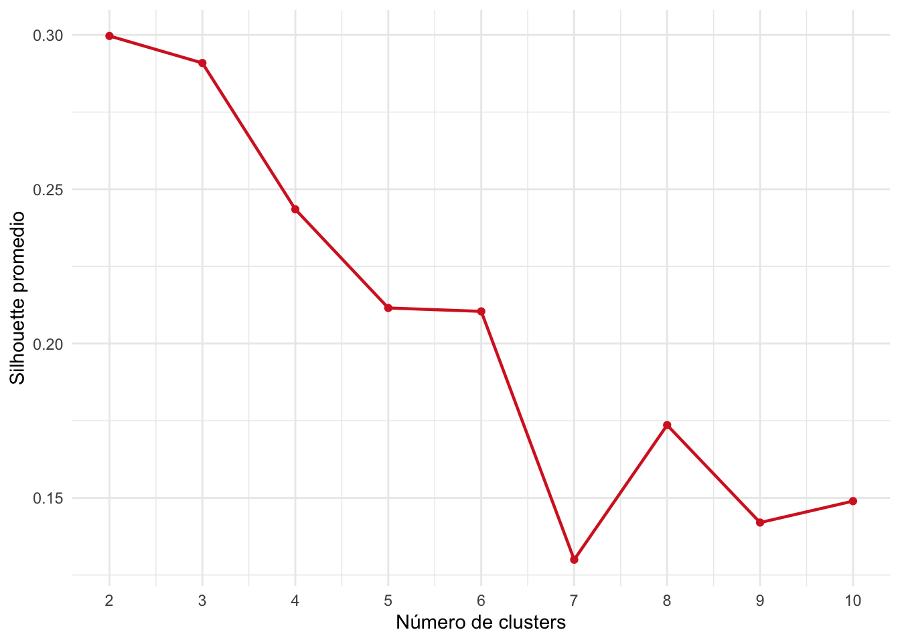
El gráfico en cuestión nos estaría diciendo que la estructura natural de clusters dentro de los datos es moderada, pero no particularmente fuerte, siendo que los mejores resultados aparecen para \(K=2\) y \(K=3\), con valores aproximados de \(\bar{s}\approx0.30\) y \(\bar{s}\approx0.29\), respectivamente, mientras que conforme aumentamos el número de clusters el coeficiente disminuye rápidamente, indicando que la segmentación comienza a fragmentar los datos y generar grupos menos compactos y peor separados. El hecho de que los mayores coeficientes se concentren consistentemente en pocos grupos sí nos proporciona evidencia de que existen algunos patrones generales de comportamiento dentro de los usuarios, resultado que además coincide con lo observado previamente mediante el método del codo, PCA y el análisis de conversión respecto a Revenue.
7.4.6 Un poco más allá del clustering: Análisis de Redes
Este es definitivamente el tema que más dificultades tuve para desarrollar, ya que es el único que no he llevado a la práctica a nivel empresarial, razón por la que el ejercicio correspondiente y su explicación matemática fueron desarrolladas por Oscar Landivar, co-autor del presente libro para esta sección.
Hasta ahora hemos trabajado con métodos de segmentación relativamente simples, como K-means, clustering jerárquico y DBSCAN, los cuales nos permiten agrupar observaciones a partir de la similitud entre sus características. En estos enfoques, cada fila de nuestro dataset suele representar una unidad de análisis: Un cliente, un empleado de una empresa, una transacción, una sesión web, una tienda, una zona geográfica, entre otros casos, por lo que, a partir de sus variables, calculamos distancias o densidades para encontrar grupos con comportamientos parecidos. Sin embargo, existen problemas donde la información más relevante no está únicamente en las características individuales de cada observación, sino en las relaciones que existen entre ellas. Este punto es fundamental en contextos como la detección de fraudes, ya que muchas veces una operación sospechosa no se identifica solamente porque una transacción tenga un monto alto o porque ocurra en una hora poco común, sino porque comparte elementos con otras operaciones, como la misma tarjeta, el mismo dispositivo, la misma dirección IP, el mismo número telefónico, la misma dirección de envío o incluso patrones de transferencia entre cuentas.
Mientras que el clustering tradicional nos ayuda a encontrar grupos de observaciones similares, el análisis de redes nos permite modelar explícitamente cómo se conectan las entidades entre sí. En lugar de preguntarnos únicamente: ¿Qué clientes se parecen entre sí?, podemos comenzar a preguntarnos: ¿Qué clientes están conectados entre sí mediante dispositivos, tarjetas, teléfonos, direcciones IP o cuentas compartidas? Esta diferencia es muy importante, ya que en fraude, los actores maliciosos suelen intentar ocultarse dividiendo su actividad entre múltiples cuentas, múltiples tarjetas, múltiples identidades o múltiples dispositivos. Visto de manera tabular, cada registro puede parecer relativamente normal, pero cuando conectamos todas estas piezas en una red, pueden comenzar a aparecer estructuras sospechosas, como grupos densamente conectados, cuentas puente, nodos con demasiadas conexiones o comunidades que comparten recursos de forma anormal.
Matemáticamente, una red puede representarse como un grafo:
\[ G = (V, E) \]
Donde:
- \(V\): Representa el conjunto de nodos o vértices.
- \(E\): Representa el conjunto de aristas o conexiones entre nodos.
En un caso de fraude, los nodos pueden representar distintas entidades del negocio, como usuarios, cuentas, tarjetas, etc.
Por su parte, las aristas representan relaciones entre estas entidades, por ejemplo, si un usuario utiliza una tarjeta, podemos crear una conexión entre el nodo usuario y el nodo tarjeta. Si una cuenta inicia sesión desde una IP, podemos crear una conexión entre la cuenta y la IP. Si varias cuentas usan el mismo dispositivo, entonces todas esas cuentas quedarán conectadas indirectamente a través de ese dispositivo.
Una forma sencilla de visualizarlo sería:
\[ \text{Cuenta}_1 \longleftrightarrow \text{Dispositivo}_A \longleftrightarrow \text{Cuenta}_2 \]
En este caso, aunque Cuenta_1 y Cuenta_2 no interactúen directamente, ambas comparten un dispositivo. Si esta estructura se repite con muchas cuentas, muchos correos y muchas tarjetas, podríamos estar frente a una red de fraude coordinada.
El clustering agrupa observaciones por similitud en sus variables. El análisis de redes agrupa o analiza entidades por sus conexiones. En fraude, esta diferencia es crucial, porque dos cuentas pueden no parecerse en sus características individuales, pero estar conectadas mediante una misma IP, tarjeta, teléfono o dispositivo.
Ahora bien, antes de construir un ejemplo, conviene distinguir dos tipos comunes de redes: Red homogénea y Red bipartita.
Una red homogénea es aquella donde todos los nodos representan el mismo tipo de entidad, por ejemplo, una red de transferencias entre cuentas bancarias:
\[ \text{Cuenta}_A \rightarrow \text{Cuenta}_B \]
En este caso, todos los nodos son cuentas, y las conexiones representan transferencias. Este tipo de red suele ser útil cuando queremos estudiar flujos de dinero, relaciones entre usuarios, referidos, préstamos, pagos o movimientos entre entidades del mismo tipo.
Por otro lado, una red bipartita conecta dos tipos distintos de nodos, por ejemplo:
\[ \text{Cuenta} \longleftrightarrow \text{Dispositivo} \]
Aquí no conectamos cuentas directamente con cuentas, sino cuentas con dispositivos, ya que si dos cuentas usan el mismo dispositivo, quedan relacionadas indirectamente. Este enfoque es especialmente útil en fraude, porque muchos esquemas fraudulentos se detectan precisamente por el uso compartido de recursos, por ejemplo: Cuenta - dispositivo, cuenta-tarjeta, etc.
Aquí se pone interesante, ya que incluso podemos construir una red más general con múltiples tipos de nodos, donde todos estos elementos convivan en el mismo grafo.
7.4.6.1 Métricas básicas de una red
Una vez que construimos la red, podemos calcular métricas que nos ayuden a identificar nodos importantes o sospechosos, siendo algunas de las más utilizadas:
- Grado: Número de conexiones que tiene un nodo.
- Centralidad de intermediación (betweenness centrality): Mide qué tanto un nodo funciona como puente entre distintas partes de la red.
- Centralidad de cercanía (closeness centrality): Mide qué tan cerca está un nodo del resto de la red.
- PageRank: Mide la importancia de un nodo considerando no solo cuántas conexiones tiene, sino también qué tan importantes son los nodos a los que se conecta.
- Comunidades: Grupos de nodos más conectados entre sí que con el resto de la red.
En detección de fraudes, estas métricas pueden ayudarnos a encontrar señales como una IP conectada a demasiadas cuentas, un dispositivo usado por muchos usuarios distintos, etc.
Vamos ahora a divertirnos un poco con un ejercicio en R. Para este caso, el ejercicio en cuestión fue desarrollado por Oscar Landivar.
La idea general del ejercicio será simular una red de comunicación dentro de una empresa. En esta red, cada nodo representará a un empleado y cada conexión representará algún tipo de interacción entre ellos, por ejemplo, correos electrónicos o mensajes enviados a través de Teams. Además, los empleados estarán organizados en distintos equipos, cada uno con su respectivo jefe, lo que nos permitirá construir una estructura parecida a la que podríamos encontrar en una organización real.
A partir de esta red, marcaremos algunos empleados como posibles nodos fraudulentos y analizaremos qué tan conectados están con el resto de la organización, por lo que, para ello, utilizaremos métricas de centralidad, caminos más cortos y relaciones entre nodos, con el objetivo de observar si estos empleados ocupan posiciones relevantes dentro de la red o si se encuentran conectados con personas clave.
Comencemos creando la red de comunicación, en la cual el primer elemento de cada nodo será el jefe de equipo:
set.seed(42)
nodos <- 1:30
equipos <- split(
nodos,
paste0("Equipo_", ((nodos - 1) %/% 5) + 1)
)
jefes <- purrr::map_int(equipos, 1)Vamos ahora a seleccionar tres empleados fraudulentos al azar y generar la tabla de nodos:
fraudulentos <- sample(as.character(nodos), 3)
# Tabla de nodos
nodos_df <- tibble(
nodo = as.character(nodos),
equipo = paste0("Equipo_", ((nodos - 1) %/% 5) + 1),
rol = if_else((nodos - 1) %% 5 == 0, "jefe", "miembro"),
fraudulento = nodo %in% fraudulentos
)Ahora, vamos a generar las conexiones entre combinaciones de empleados y jefes:
# Función auxiliar para crear conexiones
crear_conexiones <- function(from, to, n) {
tibble(
from = as.character(from),
to = as.character(to),
tipo = sample(c("email", "teams"), n, replace = TRUE)
)
}
edges_raw <- list()
k <- 1
for (equipo in names(equipos)) {
miembros <- equipos[[equipo]]
jefe <- jefes[[equipo]]
# Conexiones entre jefe y miembros
for (miembro in miembros[miembros != jefe]) {
edges_raw[[k]] <- crear_conexiones(
jefe,
miembro,
sample(1:10, 1)
)
k <- k + 1
}
# Conexiones entre miembros del mismo equipo
pares_miembros <- combn(miembros, 2, simplify = FALSE)
for (par in pares_miembros) {
edges_raw[[k]] <- crear_conexiones(
par[1],
par[2],
sample(1:10, 1)
)
k <- k + 1
}
}Y, respectivamente, entre jefes únicamente:
# Conexiones entre jefes
pares_jefes <- combn(jefes, 2, simplify = FALSE)
for (par in pares_jefes) {
edges_raw[[k]] <- crear_conexiones(
par[1],
par[2],
sample(1:10, 1)
)
k <- k + 1
}Ahora, vamos a unir las conexiones entre nodos, ya que estaban guardadas como una lista de tablas:
# Unir conexiones
edges_df <- bind_rows(edges_raw)Y vamos a eliminar las aristas múltiples, dejando únicamente una conexión por par de nodos:
edges_df <- edges_df |>
mutate(
a = pmin(as.integer(from), as.integer(to)),
b = pmax(as.integer(from), as.integer(to))
) |>
group_by(a, b) |>
slice_tail(n = 1) |>
ungroup() |>
tidygraph::transmute(
from = as.character(a),
to = as.character(b),
tipo
)Continuemos ahora creando el grafo, haciendo uso de la función graph_from_data_frame(), de la librería igraph:
library(igraph)Warning: package 'igraph' was built under R version 4.2.3
Attaching package: 'igraph'The following object is masked from 'package:tibble':
as_data_frameThe following objects are masked from 'package:dplyr':
as_data_frame, groups, unionThe following object is masked from 'package:tidyr':
crossingThe following objects are masked from 'package:stats':
decompose, spectrumThe following object is masked from 'package:base':
uniong <- graph_from_data_frame(
d = edges_df, vertices = nodos_df |> rename(name = nodo),
directed = FALSE
)
gIGRAPH 541312c UN-- 30 75 --
+ attr: name (v/c), equipo (v/c), rol (v/c), fraudulento (v/l), tipo
| (e/c)
+ edges from 541312c (vertex names):
[1] 1 --2 1 --3 1 --4 1 --5 1 --6 1 --11 1 --16 1 --21 1 --26 2 --3
[11] 2 --4 2 --5 3 --4 3 --5 4 --5 6 --7 6 --8 6 --9 6 --10 6 --11
[21] 6 --16 6 --21 6 --26 7 --8 7 --9 7 --10 8 --9 8 --10 9 --10 11--12
[31] 11--13 11--14 11--15 11--16 11--21 11--26 12--13 12--14 12--15 13--14
[41] 13--15 14--15 16--17 16--18 16--19 16--20 16--21 16--26 17--18 17--19
[51] 17--20 18--19 18--20 19--20 21--22 21--23 21--24 21--25 21--26 22--23
[61] 22--24 22--25 23--24 23--25 24--25 26--27 26--28 26--29 26--30 27--28
+ ... omitted several edgesAhora, podemos hacer una representación gráfica, utilizando ggraph, de la librería del mismo nombre:
library(ggraph)Warning: package 'ggraph' was built under R version 4.2.3library(tidygraph)Warning: package 'tidygraph' was built under R version 4.2.3
Attaching package: 'tidygraph'The following object is masked from 'package:igraph':
groupsThe following object is masked from 'package:stats':
filterg_tbl <- as_tbl_graph(g) |>
mutate(
tipo_nodo = case_when(fraudulento ~ "Fraudulento",
rol == "jefe" ~ "Jefe", TRUE ~ "Empleado"
)
)
g_tbl |>
ggraph(layout = "fr") +
geom_edge_link(aes(linetype = tipo, color = tipo), alpha = 0.7) +
geom_node_point(aes(color = tipo_nodo), size = 5) +
geom_node_text(aes(label = name), size = 3, vjust = 1.8) +
labs(color = "Tipo", linetype = "Comunicación") +
theme_void()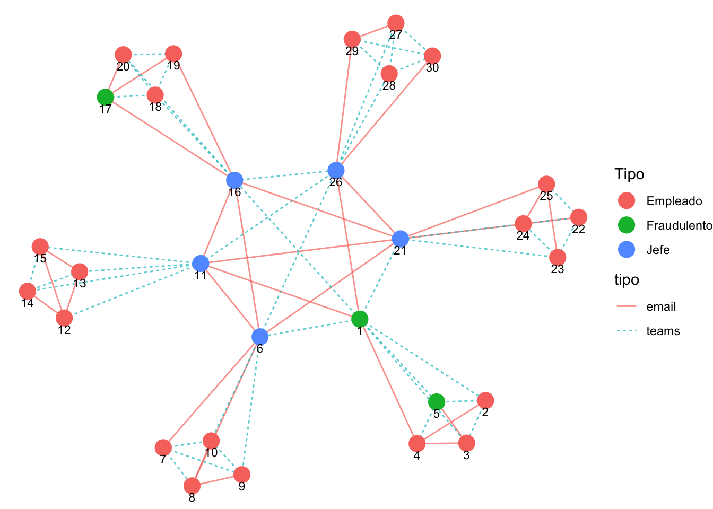
Como siguiente paso lógico, vamos a hacer un análisis de centralidades para cada nodo de la red, lo que nos dirá qué tan importante, conectado o estratégico es cada empleado dentro de la red de comunicación:
centralidad_grado <- degree(g, normalized = TRUE)
centralidad_intermediacion <- betweenness(g, normalized = TRUE)
centralidad_cercania <- closeness(g, normalized = TRUE)
centralidad_eigenvector <- eigen_centrality(g)$vector
df_centralidad <- tibble(
nodo = V(g)$name,
centralidad_grado = centralidad_grado,
centralidad_intermediacion = centralidad_intermediacion,
centralidad_cercania = centralidad_cercania,
centralidad_eigenvector = centralidad_eigenvector,
fraudulento = V(g)$fraudulento,
equipo = V(g)$equipo,
rol = V(g)$rol
)
df_centralidad |>
head()# A tibble: 6 × 8
nodo centralidad_grado centralidad_intermediacion centralidad_cercania
<chr> <dbl> <dbl> <dbl>
1 1 0.310 0.246 0.592
2 2 0.138 0 0.392
3 3 0.138 0 0.392
4 4 0.138 0 0.392
5 5 0.138 0 0.392
6 6 0.310 0.246 0.592
# ℹ 4 more variables: centralidad_eigenvector <dbl>, fraudulento <lgl>,
# equipo <chr>, rol <chr>Con ello, calculamos los nodos fraudulentos y, respectivamente, los cinco nodos con mayor centralidad de grado:
nodos_fraudulentos <- df_centralidad |>
filter(fraudulento) |>
pull(nodo)
nodos_centrales <- df_centralidad |>
arrange(desc(centralidad_grado)) |>
slice_head(n = 5) |>
pull(nodo)
# Nodos fraudulentos y su centralidad
df_centralidad |>
filter(nodo %in% nodos_fraudulentos) |>
mutate(across(starts_with("centralidad"), round, 3)) Warning: There was 1 warning in `mutate()`.
ℹ In argument: `across(starts_with("centralidad"), round, 3)`.
Caused by warning:
! The `...` argument of `across()` is deprecated as of dplyr 1.1.0.
Supply arguments directly to `.fns` through an anonymous function instead.
# Previously
across(a:b, mean, na.rm = TRUE)
# Now
across(a:b, \(x) mean(x, na.rm = TRUE))# A tibble: 3 × 8
nodo centralidad_grado centralidad_intermediacion centralidad_cercania
<chr> <dbl> <dbl> <dbl>
1 1 0.31 0.246 0.592
2 5 0.138 0 0.392
3 17 0.138 0 0.392
# ℹ 4 more variables: centralidad_eigenvector <dbl>, fraudulento <lgl>,
# equipo <chr>, rol <chr># Top 5 nodos centrales
df_centralidad |>
filter(nodo %in% nodos_centrales) |>
arrange(desc(centralidad_grado)) |>
mutate(across(starts_with("centralidad"), round, 3)) # A tibble: 5 × 8
nodo centralidad_grado centralidad_intermediacion centralidad_cercania
<chr> <dbl> <dbl> <dbl>
1 1 0.31 0.246 0.592
2 6 0.31 0.246 0.592
3 11 0.31 0.246 0.592
4 16 0.31 0.246 0.592
5 21 0.31 0.246 0.592
# ℹ 4 more variables: centralidad_eigenvector <dbl>, fraudulento <lgl>,
# equipo <chr>, rol <chr>Vamos ahora a analizar los caminos más cortos entre los dos grupos de nodos que calculamos previamente, ya que queremos saber qué tan cerca están los empleados fraudulentos de los empleados más importantes o más conectados dentro de la empresa:
obtener_camino <- function(g, origen, destino) {
camino <- shortest_paths(
g, from = origen, to = destino, output = "vpath"
)$vpath[[1]]
if (length(camino) == 0) {
return("No hay camino")
}
paste(as_ids(camino), collapse = " -> ")
}
# Caminos cortos entre nodos fraudulentos y nodos centrales
for (fraud in nodos_fraudulentos) {
for (central in nodos_centrales) {
if (fraud != central) {
camino <- obtener_camino(g, fraud, central)
longitud <- ifelse(
camino == "No hay camino", NA,
length(strsplit(camino, " -> ")[[1]]) - 1
)
cat("Camino de Nodo", fraud, "a Nodo", central, ":", camino,
"| Longitud:", longitud,"\n")
}
}
}Camino de Nodo 1 a Nodo 6 : 1 -> 6 | Longitud: 1
Camino de Nodo 1 a Nodo 11 : 1 -> 11 | Longitud: 1
Camino de Nodo 1 a Nodo 16 : 1 -> 16 | Longitud: 1
Camino de Nodo 1 a Nodo 21 : 1 -> 21 | Longitud: 1
Camino de Nodo 5 a Nodo 1 : 5 -> 1 | Longitud: 1
Camino de Nodo 5 a Nodo 6 : 5 -> 1 -> 6 | Longitud: 2
Camino de Nodo 5 a Nodo 11 : 5 -> 1 -> 11 | Longitud: 2
Camino de Nodo 5 a Nodo 16 : 5 -> 1 -> 16 | Longitud: 2
Camino de Nodo 5 a Nodo 21 : 5 -> 1 -> 21 | Longitud: 2
Camino de Nodo 17 a Nodo 1 : 17 -> 16 -> 1 | Longitud: 2
Camino de Nodo 17 a Nodo 6 : 17 -> 16 -> 6 | Longitud: 2
Camino de Nodo 17 a Nodo 11 : 17 -> 16 -> 11 | Longitud: 2
Camino de Nodo 17 a Nodo 16 : 17 -> 16 | Longitud: 1
Camino de Nodo 17 a Nodo 21 : 17 -> 16 -> 21 | Longitud: 2 Respectivamente, calculamos los caminos entre nodos fraudulentos:
pares_fraudulentos <- combn(nodos_fraudulentos, 2, simplify = FALSE)
for (par in pares_fraudulentos) {
camino <- obtener_camino(g, par[1], par[2])
cat("Camino entre", par[1], "y", par[2], ":",camino,"\n")
}Camino entre 1 y 5 : 1 -> 5
Camino entre 1 y 17 : 1 -> 16 -> 17
Camino entre 5 y 17 : 5 -> 1 -> 16 -> 17 Nótese que estamos imprimiendo los resultados únicamente para ejemplificar de mejor manera los caminos, ya que es una manera intuitiva de entender este ejercicio.
Continuemos ahora con la construcción de un camino completo que conecte a todos los nodos fraudulentos dentro de la red. En este ejemplo, al contar con tres empleados fraudulentos, buscaremos encontrar una ruta que pase por cada uno de ellos, aun cuando entre un usuario fraudulento y otro sea necesario recorrer nodos intermedios:
permutaciones <- function(x) {
if (length(x) == 1) return(list(x))
unlist(lapply(seq_along(x), function(i) {
lapply(permutaciones(x[-i]), function(p) c(x[i], p))}),
recursive = FALSE)
}
perms <- permutaciones(nodos_fraudulentos)
camino_fraude_completo <- character()
for (perm in perms) {
camino_parcial <- character()
valido <- TRUE
for (i in seq_len(length(perm) - 1)) {
camino <- shortest_paths(
g, from = perm[i], to = perm[i + 1], output = "vpath"
)$vpath[[1]]
if (length(camino) == 0) {
valido <- FALSE
break
}
ids <- as_ids(camino)
camino_parcial <- c(camino_parcial, ids[-length(ids)])
}
if (valido) {
camino_parcial <- c(camino_parcial, tail(perm, 1))
if (length(camino_parcial) > length(camino_fraude_completo)) {
camino_fraude_completo <- camino_parcial
}
}
}
# Camino completo que conecta todos los nodos fraudulentos de forma no directa:
print(camino_fraude_completo)[1] "1" "16" "17" "16" "1" "5" Finalmente, veamos la propagación de comportamiento positivo. Empecemos tomando los tres nodos con mayor centralidad de grado:
nodos_iniciales <- df_centralidad |>
arrange(desc(centralidad_grado)) |>
slice_head(n = 3) |>
pull(nodo)Con ello, veamos el comportamiento positivo:
comportamiento_positivo <- setNames(
rep(0, length(V(g))),
V(g)$name
)
comportamiento_positivo[nodos_iniciales] <- 1
# Propagación
paso <- 0
while (TRUE) {
nodos_influenciados_en_paso <- character()
for (nodo in names(comportamiento_positivo)) {
if (comportamiento_positivo[nodo] == 1) {
vecinos <- as_ids(neighbors(g, nodo))
vecinos_nuevos <- vecinos[comportamiento_positivo[vecinos] == 0]
if (length(vecinos_nuevos) > 0) {
comportamiento_positivo[vecinos_nuevos] <- 1
nodos_influenciados_en_paso <- c(nodos_influenciados_en_paso,
vecinos_nuevos)
}
}
}
paso <- paso + 1
if (length(nodos_influenciados_en_paso) == 0) {
break
}
}
nodos_totales_influenciados <- sum(comportamiento_positivo)
cat("Total de nodos influenciados por el comportamiento positivo:",
nodos_totales_influenciados,"\n")Total de nodos influenciados por el comportamiento positivo: 30 cat("Pasos necesarios para influir en toda la red:", paso,"\n")Pasos necesarios para influir en toda la red: 2 Lo que nos permite ver cuán rápido y extenso es el impacto de este comportamiento en toda la red.
7.5 Pronóstico de series temporales
Hasta este punto del libro hemos trabajado principalmente con modelos donde las observaciones se consideran independientes entre sí o, al menos, donde el orden temporal no juega un papel central dentro del análisis, sin embargo, en una enorme cantidad de problemas reales esta suposición deja de ser válida. Variables como ventas, inflación, precios de stocks, temperatura o número de clientes evolucionan secuencialmente a lo largo del tiempo, haciendo que el comportamiento observado en un periodo influya directamente sobre lo que ocurrirá después. Precisamente este tipo de estructuras son estudiadas mediante las series temporales, tema que vamos a desarrollar a continuación.
Como recordarás, en el capítulo anterior discutimos brevemente los gráficos de series temporales en el contexto del análisis exploratorio de datos, por lo que su explicación fue relativamente superficial y centrada principalmente en sus componentes de una manera muy breve. Afortunadamente, ahora nos encontramos en una sección dedicada enteramente a las series temporales, por lo que finalmente podremos formalizar las bases matemáticas que las sustentan, así como los modelos asociados a ellas, los cuales discutiremos en los siguientes puntos.
Formalmente, una serie temporal puede definirse como una sucesión de variables aleatorias ordenadas cronológicamente:
\[ \{Y_t\}_{t=1}^{T} \]
Donde cada observación \(Y_t\) representa el valor de una variable en un instante específico del tiempo \(t\) (Hamilton 1994). A diferencia de otros contextos estadísticos donde el orden de las observaciones puede ser irrelevante, en las series de tiempo el orden temporal es fundamental, ya que la dependencia entre observaciones consecutivas contiene gran parte de la información útil para el análisis y el pronóstico, y de hecho, el supuesto de independencia entre observaciones rara vez se cumple en datos temporales. Matemáticamente, esto suele expresarse mediante la presencia de autocorrelación:
\[ \mathrm{Cov}(Y_t, Y_{t-k}) \neq 0 \]
Para algún rezago \(k \geq 1\), lo que implica que los valores pasados de la serie contienen información relevante sobre los valores futuros, por ejemplo: Si una empresa ha experimentado un crecimiento sostenido en ventas durante varios meses, es razonable esperar que las ventas del siguiente periodo también estén influenciadas por esa dinámica reciente, lo cual también ocurre con fenómenos financieros, climatológicos o epidemiológicos, donde los cambios suelen ser graduales y estructurados, no completamente aleatorios.
En R, la forma en la que convertimos nuestros datos a un formato de serie temporal es mediante la función ts(), indicando el número de periodos que tenemos, así como la granularidad de las observaciones. Tomemos como ejemplo el dataset household_power_consumption, disponible en el repositorio oficial del libro, que a su vez es una versión reducida (a nivel promedio diario) del dataset original Individual Household Electric Power Consumption:
household_power_consumption <-
read.csv(paste0("https://raw.githubusercontent.com/Jorge-hercas/",
"r-para-inteligencia-de-negocios/refs/heads/",
"main/CSV/household_power_consumption.csv")) |>
mutate(Date = as.Date(Date, format = "%Y-%m-%d"))
household_power_consumption |>
head() X Date Global_active_power
1 1 2006-12-16 3.053475
2 2 2006-12-17 2.354486
3 3 2006-12-18 1.530435
4 4 2006-12-19 1.157079
5 5 2006-12-20 1.545658
6 6 2006-12-21 NAVamos ahora a convertirlo en serie de tiempo:
household_power_ts <- ts(
household_power_consumption$Global_active_power,
start = c(
as.numeric(format(min(household_power_consumption$Date), "%Y")),
as.numeric(format(min(household_power_consumption$Date), "%j"))
),
frequency = 365
)
household_power_ts |>
head(100) [1] 3.0534747 2.3544861 1.5304347 1.1570792 1.5456583 NA 1.6259292
[8] 3.3148514 1.7708417 1.9049444 2.7320208 1.0616389 1.4393319 2.2044389
[15] NA 2.4265250 1.9090306 0.8814139 0.7042042 2.2634806 1.8842806
[22] 1.0474847 1.6997361 1.5565000 1.2979542 1.4963889 1.5661069 1.0147889
[29] 2.2130653 NA 1.4921375 1.1711139 1.9775611 1.2649042 1.0280833
[36] 2.1762028 2.3661542 1.5142319 1.2344722 2.0748986 1.1085722 1.1235917
[43] 1.4194944 NA 1.3768500 1.1859708 1.6414944 1.2671944 1.1581500
[50] 2.7984181 2.4971806 1.1425556 0.8843611 1.6166792 1.2509819 1.1251375
[57] 1.9648111 2.4800194 1.3038958 0.9823236 1.7351889 1.3787125 1.1823111
[64] 1.4423000 2.6595569 1.5184819 2.1874500 1.4394958 NA 0.9121389
[71] 0.4964736 0.3484306 0.3947806 0.3598000 0.3616486 0.3594194 0.3581167
[78] 0.5688347 1.4518750 1.8474528 0.8656250 1.6494486 1.0917583 0.8837583
[85] 1.7254944 2.4171083 1.3546306 0.8959333 1.2453917 1.3088986 1.1819819
[92] 1.4083958 1.6465597 1.4948042 1.4487694 1.4875639 1.0104014 0.9090333
[99] 2.0614097 NAAhora, para visualizar la serie de tiempo de la misma forma en la que hemos generado los gráficos anteriores a lo largo de este libro, podemos hacerlo manualmente usando un gráfico de Ggplot2 en el dataset original:
household_power_consumption |>
ggplot(aes(x = Date,
y = Global_active_power)) +
geom_line(linewidth = 0.5,
color = "#1f77b4") +
labs(x = "Fecha",
y = "Global Active Power") +
theme_minimal()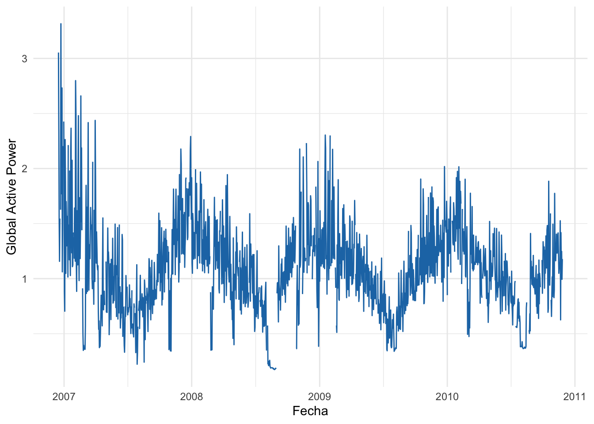
Claro que, para simplificar un poco el código, podemos hacer uso de la función autoplot() de la librería forecast directamente al objeto ya transformado a serie de tiempo:
library(forecast)
household_power_ts |>
autoplot() +
geom_line(linewidth = 0.5,
color = "#1f77b4") +
labs(x = "Fecha",
y = "Global Active Power") +
theme_minimal()Código que nos dará exactamente el mismo gráfico.
Ahora bien, el objetivo principal del análisis de series temporales a lo largo de esta sección será precisamente el de identificar, modelar y explotar estos patrones temporales para comprender mejor la dinámica de los datos y generar pronósticos razonables sobre el futuro. A diferencia de modelos clásicos de regresión, donde normalmente buscamos explicar una variable mediante otras variables explicativas, en series temporales muchas veces la principal fuente de información proviene de la propia historia de la variable (aunque no siempre es el caso), pero antes de llegar a modelar la serie temporal, debemos comprender de mejor manera los componentes que esta presenta.
7.5.1 Descomposición de series de tiempo
Como recordarás de lo mencionado brevemente en el capítulo anterior, las series temporales cuentan con varios componentes, por lo que normalmente podemos descomponerlas en estos mismos elementos fundamentales, los cuales son: Tendencia, estacionalidad, ciclos y el componente aleatorio o ruido (Hamilton 1994). Vamos a discutir cada elemento a continuación con más detalle:
7.5.1.0.1 Tendencia
La tendencia representa el movimiento general de largo plazo de la serie, es decir, describe si la variable tiende a crecer, disminuir o permanecer relativamente estable conforme avanza el tiempo. Este componente suele asociarse con cambios estructurales persistentes dentro del fenómeno analizado. Algunos ejemplos claros de la tendencia son: el crecimiento sostenido del comercio electrónico a lo largo de varios años, el aumento poblacional de una ciudad, etc.
Matemáticamente, podemos representar la tendencia como un componente suave \(T_t\) dentro de la serie:
\[ Y_t = T_t + \varepsilon_t \]
En su forma más simple, aunque esta puede adoptar múltiples formas, como lo son lineal, exponencial, logística o incluso comportamientos más complejos. En algunos casos el crecimiento ocurre a una tasa aproximadamente constante, mientras que en otros el crecimiento se acelera o desacelera conforme transcurre el tiempo.
Desde el punto de vista práctico, uno de los mayores problemas que genera la tendencia es la no estacionariedad de la serie, ya que propiedades estadísticas como la media dejan de mantenerse constantes a lo largo del tiempo.
7.5.1.0.2 Estacionalidad
La estacionalidad corresponde a patrones que se repiten de forma regular y sistemática en intervalos temporales fijos. A diferencia de la tendencia, que representa movimientos de largo plazo, la estacionalidad describe fluctuaciones periódicas relativamente predecibles. Algunos ejemplos claros de la estacionalidad son: El incremento de ventas en diciembre, mayor demanda eléctrica durante verano, etc.
Formalmente, podemos representar este componente como:
\[ Y_t = T_t + S_t + \varepsilon_t \]
Donde \(S_t\) representa el componente estacional.
Un aspecto importante es que la periodicidad de la estacionalidad depende completamente de la granularidad temporal de la serie, siendo que series diarias pueden presentar patrones semanales, así como series mensuales pueden presentar patrones anuales.
Ahora bien, debemos considerar además que existen dos formas comunes de estacionalidad:
- Estacionalidad aditiva: La magnitud de las fluctuaciones se mantiene aproximadamente constante.
- Estacionalidad multiplicativa: Las fluctuaciones aumentan o disminuyen proporcionalmente al nivel de la serie.
Obviamente, para el caso multiplicativo, representaríamos este componente como:
\[ Y_t = T_t \cdot S_t \cdot \varepsilon_t \]
Lo cual de hecho es bastante común en fenómenos económicos y comerciales, donde las variaciones estacionales suelen crecer conforme crece también el nivel general de la serie.
7.5.1.0.3 Ciclos
El componente cíclico representa fluctuaciones de mediano o largo plazo que no poseen una periodicidad fija ni completamente regular. Aunque frecuentemente se confunden con la estacionalidad, existe una diferencia fundamental: los ciclos no siguen intervalos exactos y normalmente están asociados a fenómenos estructurales más complejos. Algunos ejemplos claros de la tendencia son: ciclos económicos de expansión y recesión., variaciones inmobiliarias de largo plazo, etc.
Matemáticamente, podemos extender el modelo anterior:
\[ Y_t = T_t + C_t + S_t + \varepsilon_t \]
Donde \(C_t\) representa el componente cíclico.
El análisis de ciclos suele ser considerablemente más complicado que el de tendencia o estacionalidad, precisamente porque no existe una periodicidad claramente definida. En muchos casos, separar tendencia y ciclo es de hecho muy poco intuitivo.
7.5.1.0.4 Componente aleatorio o ruido
Finalmente, toda serie temporal contiene una componente aleatoria que representa la variabilidad no explicada por los demás componentes. Este término agrupa: Errores de medición, eventos inesperados, choques externos, etc.
Usualmente este componente se modela como un proceso aleatorio:
\[ \varepsilon_t \sim WN(0, \sigma^2) \]
Donde \(WN\) hace referencia a white noise o ruido blanco.
Volviendo a la parte práctica, nosotros podemos extraer sencillamente los componentes de nuestra serie temporal utilizando la función stl():
household_power_ts_filled <- forecast::na.interp(household_power_ts)Registered S3 method overwritten by 'quantmod':
method from
as.zoo.data.frame zoo stl_decomp <-
stl(
household_power_ts_filled,
s.window = "periodic"
)
stl_decomp$time.series |>
head(15)Time Series:
Start = c(2006, 350)
End = c(2006, 364)
Frequency = 365
seasonal trend remainder
2006.956 0.7900639 1.176806 1.08660504
2006.959 0.4558629 1.176432 0.72219106
2006.962 0.3991903 1.176058 -0.04481398
2006.964 0.1736848 1.175685 -0.19229025
2006.967 0.3331021 1.175311 0.03724528
2006.970 0.1732093 1.174937 0.12873441
2006.973 0.5708729 1.174564 -0.11950720
2006.975 0.8235179 1.174190 1.31714367
2006.978 0.2983501 1.173816 0.29867545
2006.981 0.5679025 1.173442 0.16359959
2006.984 0.5834729 1.173069 0.97547929
2006.986 0.1955044 1.172695 -0.30656046
2006.989 0.6963981 1.172321 -0.42938736
2006.992 0.6590599 1.171947 0.37343157
2006.995 0.3163463 1.171574 0.59662590Nótese que, para este caso particular, tuve que interpolar la serie temporal mediante na.interp(), es decir, estimar los valores faltantes a partir de los valores más próximos, ya que la función stl() no funciona si hay NA en nuestro dataset.
Como puedes ver, ahora tenemos por separado la estacionalidad, tendencia y el componente aleatorio, aunque nos haría falta el componente cíclico, esto debido a que la descomposición STL deja los ciclos de largo plazo implícitos dentro de la tendencia o del componente residual dependiendo del comportamiento de la serie.
Como es lógico, podemos graficar sencillamente estos componentes, para darnos una mejor idea de como se ve nuestra serie de tiempo a partir de sus componentes:
stl_decomp |>
autoplot() +
geom_line(linewidth = 0.5,
color = "#1f77b4") +
labs(x = "Fecha",
y = "Global Active Power") +
theme_minimal()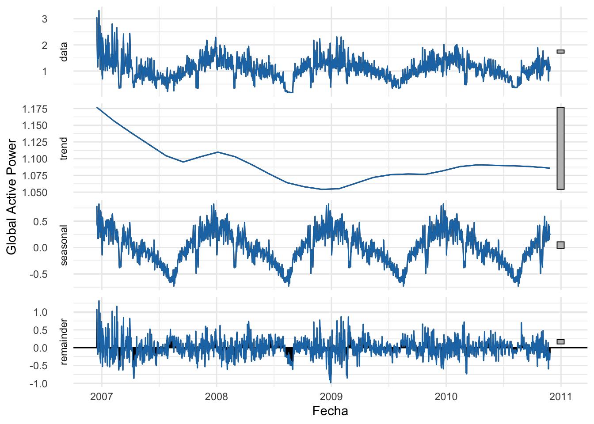
Rápidamente, podemos identificar que la serie presenta una estacionalidad bastante marcada y consistente a lo largo del tiempo, ya que los patrones de incremento y disminución del consumo energético se repiten de forma relativamente estable entre periodos. Asimismo, la tendencia general parece mostrar una ligera caída durante los primeros años de la serie, seguida posteriormente por una estabilización moderada. Por otro lado, el componente residual permanece oscilando alrededor de cero sin una estructura claramente definida, lo cual sugiere que gran parte del comportamiento sistemático de la serie ya fue explicado mediante los componentes de tendencia y estacionalidad.
7.5.1.1 Series estacionarias y no estacionarias
Uno de los conceptos más importantes dentro del análisis temporal es la estacionariedad. Básicamente, una serie estacionaria es aquella cuyas propiedades estadísticas permanecen relativamente constantes a lo largo del tiempo. Matemáticamente, una serie estrictamente estacionaria cumple:
\[ F(Y_t, Y_{t+1}, \dots, Y_{t+k}) = F(Y_{t+h}, Y_{t+h+1}, \dots, Y_{t+h+k}) \]
Para cualquier desplazamiento temporal \(h\), aunque en la práctica normalmente trabajamos con una versión más débil llamada estacionariedad débil, donde únicamente requerimos:
\[ E(Y_t) = \mu \]
\[ \mathrm{Var}(Y_t) = \sigma^2 \]
\[ \mathrm{Cov}(Y_t, Y_{t-k}) = \gamma_k \]
Es decir: Media constante, varianza constante y autocovarianza dependiente únicamente del rezago.
De hecho, en la práctica, la estacionariedad es sumamente importante a la hora de generar pronósticos, ya que muchos modelos clásicos asumen explícitamente que la serie cumple estas propiedades. Cuando existen tendencias fuertes o cambios estructurales importantes, normalmente debemos transformar la serie mediante diferenciación, suavizamiento o descomposición antes de modelarla.
Debido a la importancia de la estacionariedad, como siguiente punto vamos a discutir brevemente la prueba Dickey-Fuller aumentada, ya que nos permitirá identificar con mayor claridad si la serie de tiempo presenta estacionariedad.
7.5.1.1.1 Prueba ADF
Como enfoque principal para evaluar formalmente la estacionariedad de una serie temporal, utilizaremos la prueba Augmented Dickey-Fuller (ADF), propuesta como una extensión de la prueba Dickey-Fuller original. Esta prueba es una de las herramientas más utilizadas dentro del análisis de series temporales, precisamente porque permite determinar si una serie presenta raíz unitaria12, es decir, si la serie es no estacionaria (Dickey and Fuller 1979).
El propósito principal de la prueba ADF es contrastar si la dependencia temporal observada en la serie proviene de una estructura estacionaria o si, por el contrario, existe una raíz unitaria que genera comportamientos persistentes como tendencias estocásticas o caminatas aleatorias.
Matemáticamente, la idea central parte de un modelo autorregresivo de la forma:
\[ Y_t = \rho Y_{t-1} + \varepsilon_t \]
Donde \(\rho\) representa el coeficiente autorregresivo. Si \(\rho = 1\), la serie contiene una raíz unitaria y, por tanto, no es estacionaria.
Sin embargo, la prueba ADF se formula usualmente reescribiendo el modelo en términos de diferencias:
\[ \Delta Y_t = \alpha + \beta t + \gamma Y_{t-1} + \sum_{i=1}^{p} \delta_i \Delta Y_{t-i} + \varepsilon_t \]
Donde:
- \(\Delta Y_t = Y_t - Y_{t-1}\): Representa la primera diferencia de la serie.
- \(\alpha\): Corresponde al intercepto.
- \(\beta t\): Representa una posible tendencia temporal.
- \(\gamma\): Es el parámetro clave asociado a la presencia de raíz unitaria.
- Los términos rezagados \(\Delta Y_{t-i}\) se incorporan para eliminar autocorrelación en los residuos.
- \(\varepsilon_t\): Representa el término de error aleatorio.
Respectivamente, la prueba de hipótesis se define como:
- Hipótesis nula \(H_0\): La serie posee raíz unitaria (la serie no es estacionaria).
- Hipótesis alternativa \(H_1\): La serie no posee raíz unitaria (la serie es estacionaria).
Básicamente, si el p-value de la prueba resulta menor al nivel de significancia elegido (normalmente \(0.05\)), podemos rechazar la hipótesis nula y concluir que la serie presenta evidencia de estacionariedad.
Vamos ahora a aplicar rápidamente esta prueba sobre nuestra serie temporal household_power_ts_filled utilizando la librería tseries en R:
library(tseries)
adf.test(household_power_ts_filled)Warning in adf.test(household_power_ts_filled): p-value smaller than printed
p-value
Augmented Dickey-Fuller Test
data: household_power_ts_filled
Dickey-Fuller = -5.1268, Lag order = 11, p-value = 0.01
alternative hypothesis: stationaryDado que el p-value es menor al nivel de significancia del \(5%\) (\(0.05\)), podemos rechazar la hipótesis nula y concluir que la serie temporal puede considerarse estacionaria desde el punto de vista estadístico, lo que implica que sus propiedades estadísticas fundamentales, como la media, la varianza y la estructura de autocorrelación, permanecen relativamente estables a lo largo del tiempo.
7.5.2 Modelos clásicos
Antes de comenzar propiamente con los modelos estadísticos, debemos tener en cuenta qué es lo que queremos obtener a partir de ellos. El propósito de un modelo de series de tiempo es generar estimaciones futuras:
\[ \hat{Y}_{t+h} \]
Donde \(h\) representa el horizonte de pronóstico (días, meses, años, etc).
Ahora, dependiendo del tipo de serie temporal con el que estemos trabajando, distintos modelos serán más apropiados para capturar su estructura, siendo que:
- Modelos AR capturan dependencia mediante rezagos.
- Modelos ARIMA manejan series no estacionarias mediante diferenciación.
- Métodos ETS modelan explícitamente tendencia y estacionalidad mediante suavizamiento exponencial.
Si bien más adelante discutiremos modelos más avanzados basados en Machine Learning, en los siguientes tres puntos nos enfocaremos en los modelos clásicos que acabamos de mencionar.
7.5.2.1 Modelo Autorregresivo (AR)
Uno de los modelos más simples e importantes dentro del análisis de series temporales es el modelo Autorregresivo (Autoregressive Model o AR). La idea fundamental detrás de este enfoque es bastante sencilla en realidad: el valor actual de una serie temporal puede explicarse parcialmente utilizando sus propios valores pasados, es decir, el comportamiento histórico de la serie contiene información suficiente para ayudar a predecir observaciones futuras. Este supuesto aparece constantemente en fenómenos reales, por ejemplo: El consumo eléctrico de hoy probablemente estará relacionado con el consumo observado ayer; igualmente, la inflación mensual suele depender de la inflación de meses anteriores, y el precio de una acción normalmente conserva cierta inercia respecto a sus valores recientes (Box et al. 2015).
Formalmente, un modelo autorregresivo de orden \(p\), denotado como \(AR(p)\), se define como:
\[ Y_t = c + \phi_1 Y_{t-1} + \phi_2 Y_{t-2} + \cdots + \phi_p Y_{t-p} + \varepsilon_t \]
Donde:
- \(Y_t\): Es el valor actual de la serie temporal.
- \(c\): Es la constante.
- \(\phi_1, \phi_2 , \cdots , \phi_p\): Son los parámetros autorregresivos.
- \(Y_{t-1}, Y_{t-2}, ..., Y_{t-p}\): Son los valores rezagados de la serie.
- \(\varepsilon_t\): Es el error aleatorio o ruido blanco.
- \(p\): Es el número de rezagos utilizados por el modelo.
Para este modelo, cada observación se construye como una combinación lineal de observaciones pasadas más un componente aleatorio, por ejemplo: Para un modelo \(AR(1)\), es decir, utilizando únicamente un rezago, puede escribirse como:
\[ Y_t = c + \phi_1 Y_{t-1} + \varepsilon_t \]
En este caso, el valor actual depende únicamente del valor inmediatamente anterior, siendo que si \(\phi_1\) es cercano a \(1\), entonces la serie presentará una fuerte persistencia temporal, mientras que valores cercanos a 0 indican poca dependencia respecto al pasado.
Ahora bien, una característica sumamente importante de los modelos \(AR\) es que requieren que la serie sea estacionaria, esto debido a que, si la media o la varianza cambian constantemente a lo largo del tiempo, las relaciones entre rezagos dejan de ser estables y el modelo pierde capacidad predictiva. De hecho, para el caso \(AR(1)\), la condición clásica de estacionariedad es:
\[ |\phi_1| < 1 \]
Cuando esta condición no se cumple, pequeñas perturbaciones pueden propagarse indefinidamente a través del tiempo, haciendo que la serie presente comportamientos explosivos.
Otro aspecto importante es la selección del orden \(p\). Intuitivamente, un valor pequeño de \(p\) puede no capturar suficiente información histórica, mientras que un valor excesivamente grande puede introducir ruido. Una de las herramientas básicas para identificar el orden adecuado es la función de autocorrelación parcial (Partial Autocorrelation Function o PACF), la cual permite observar hasta qué rezago existe dependencia significativa. En R, podemos visualizar la PACF utilizando:
household_power_ts_filled |>
pacf(main = "PACF - Household Power Consumption")Sin embargo, como recordarás, a mi parecer los gráficos nativos de R me parecen horribles, por lo que podemos replicar esta función en Ggplot2 de la siguiente manera:
library(forecast)
# Valores PACF
pacf_values <- pacf(
household_power_ts_filled,
plot = FALSE
)
# Data frame
pacf_df <- tibble(
lag = pacf_values$lag,
pacf = pacf_values$acf
)
# Intervalo de confianza
ci <- 1.95 / sqrt(length(household_power_ts_filled))
# Gráfico
pacf_df |>
ggplot(aes(x = lag, y = pacf)) +
geom_segment(aes(xend = lag,
yend = 0),
linewidth = 0.7,
color = "#1f77b4") +
geom_hline(
yintercept = 0,
linewidth = 0.5) +
geom_hline(
yintercept = c(-ci, ci),
linetype = "dashed",
color = "#d62728") +
labs(
x = "Lag",
y = "Partial Autocorrelation"
) +
theme_minimal(base_size = 13) 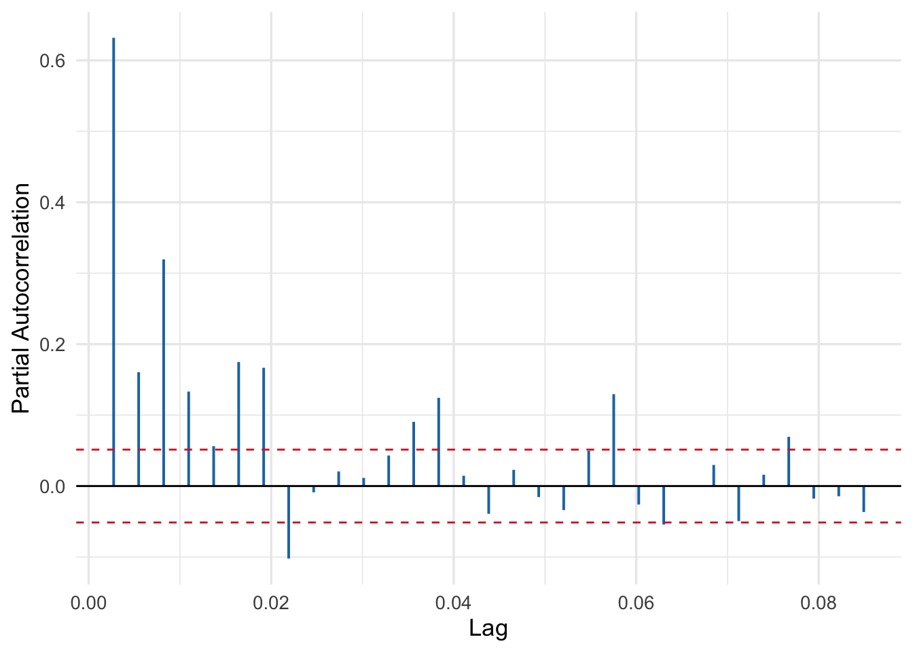
Generalmente, en un modelo \(AR(p)\), la PACF presenta un corte relativamente claro después del rezago \(p\), lo cual sirve como guía inicial para determinar el número de rezagos apropiado. En este caso en particular, podemos observar que los primeros rezagos presentan autocorrelaciones parciales significativamente distintas de cero, especialmente en los primeros dos o tres rezagos, mientras que posteriormente la mayoría de los valores comienzan a oscilar alrededor de cero dentro de las bandas de confianza, lo que nos está diciendo que gran parte de la dependencia temporal de la serie puede explicarse utilizando un número relativamente pequeño de rezagos, siendo un \(AR(2)\) o \(AR(3)\) valores razonables como punto de partida para el modelado.
Ahora bien, para ajustar un modelo autorregresivo en R, podemos utilizar la función Arima() de la librería forecast, indicando únicamente el componente autorregresivo dentro del parámetro order:
ar_model <-
Arima(
household_power_ts_filled,
order = c(3, 0, 0)
)
summary(ar_model)Series: household_power_ts_filled
ARIMA(3,0,0) with non-zero mean
Coefficients:
ar1 ar2 ar3 mean
0.4834 -0.0066 0.3242 1.0914
s.e. 0.0250 0.0281 0.0251 0.0392
sigma^2 = 0.08893: log likelihood = -299.8
AIC=609.59 AICc=609.63 BIC=635.96
Training set error measures:
ME RMSE MAE MPE MAPE MASE
Training set -0.002046022 0.2977926 0.2215674 -9.359192 24.17776 0.7085933
ACF1
Training set -0.04995628Lo primero que podemos notar es que el primer rezago \(AR(1) = 0.4834\) posee un efecto positivo relativamente fuerte, lo cual indica que los valores recientes de la serie influyen considerablemente sobre el valor actual, mientras que el segundo rezago \(AR(2) =−0.0066\) es extremadamente pequeño y cercano a cero, lo que nos estaría diciendo que dicho rezago aporta muy poca información adicional al modelo, aunque curiosamente el tercer rezago \(AR(3)=0.3242\) vuelve a mostrar un efecto positivo importante, indicando que existe una dependencia temporal adicional a tres periodos hacia atrás.
Ahora bien, respecto al término de error del modelo, tenemos un \(RMSE = 0.2978\), así como un \(MAE = 0.2216\) y un \(MAPE = 24.18%\), del cual podemos interpretar que el modelo presenta un error promedio moderado en las predicciones. Específicamente, \(MAPE\) nos indica que, en promedio, las predicciones difieren aproximadamente un 24% respecto a los valores reales, aunque esta métrica puede verse afectada cuando existen observaciones pequeñas dentro de la serie.
Nótese que order = c(2,0,0) indica:
- \(p = 3\): Tres términos autorregresivos.
- \(d = 0\): Sin diferenciación.
- \(q = 0\): Sin componente de medias móviles.
Es decir, estamos construyendo específicamente un modelo \(AR(3)\).
Ahora, ya que tenemos ajustado el modelo, podemos generar pronósticos futuros utilizando la función forecast():
ar_forecast <-
forecast(
ar_model,
h = 30
)
ar_forecast Point Forecast Lo 80 Hi 80 Lo 95 Hi 95
2010.9068 1.184589 0.8024219 1.566756 0.6001150 1.769063
2010.9096 1.104261 0.6797864 1.528735 0.4550833 1.753438
2010.9123 1.125160 0.6919035 1.558417 0.4625512 1.787769
2010.9151 1.137851 0.6743659 1.601336 0.4290117 1.846690
2010.9178 1.117806 0.6339532 1.601659 0.3778169 1.857796
2010.9205 1.114809 0.6218709 1.607748 0.3609250 1.868694
2010.9233 1.117606 0.6150199 1.620193 0.3489667 1.886246
2010.9260 1.112480 0.6015798 1.623379 0.3311258 1.893833
2010.9288 1.109012 0.5927417 1.625281 0.3194450 1.898578
2010.9315 1.108275 0.5876670 1.628884 0.3120736 1.904477Donde h = 30 no es más que el horizonte de pronóstico de 30 periodos hacia adelante. A partir de este pronóstico, sencillamente podríamos generar un gráfico de series de tiempo para ver el pronóstico:
ar_forecast |>
autoplot() +
geom_line(linewidth = 0.5,
color = "#1f77b4") +
labs(x = "Fecha",
y = "Global Active Power",
title = NULL) +
theme_minimal()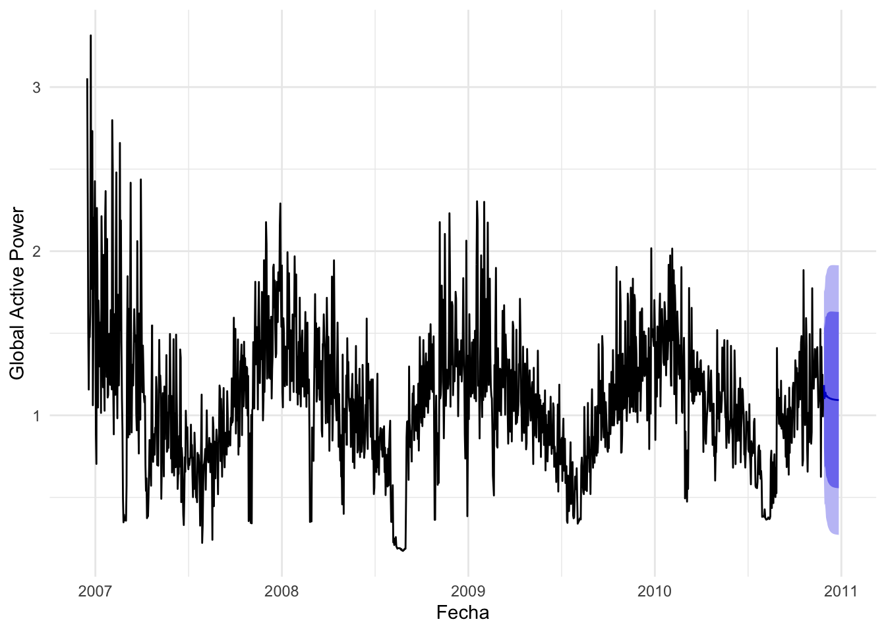
En el gráfico anterior, la línea principal representa las predicciones futuras del modelo, mientras que las bandas alrededor del pronóstico corresponden a intervalos de confianza, los cuales reflejan la incertidumbre asociada a las estimaciones. Como suele ocurrir en series temporales, la incertidumbre aumenta conforme el horizonte de pronóstico se aleja más del presente, aunque en este ejemplo no es tan claro, ya que solamente pronosticamos a 30 días al futuro.
Aunque los modelos AR son relativamente simples comparados con enfoques más modernos, siguen siendo extremadamente importantes tanto desde el punto de vista teórico como práctico, ya que, de hecho, muchos modelos más avanzados, como ARIMA, SARIMA o incluso algunos enfoques de Machine Learning para series temporales, parten conceptualmente de la misma idea: Utilizar dependencias temporales pasadas para inferir el comportamiento futuro de la serie.
7.5.2.2 Modelo ARIMA
Aunque los modelos autorregresivos resultan extremadamente útiles para capturar dependencias temporales, en la práctica muchas series reales presentan comportamientos más complejos que no pueden modelarse adecuadamente utilizando únicamente componentes AR, por ejemplo, es común encontrar series con tendencia, cambios persistentes en la media o patrones donde los errores pasados también contienen información relevante para el futuro. Precisamente para abordar este tipo de situaciones surge el modelo ARIMA (Autoregressive Integrated Moving Average), uno de los enfoques clásicos más importantes y utilizados dentro del análisis de series temporales (y que muy seguramente ya habrás escuchado de tus clases de estadística).
El modelo ARIMA combina tres ideas principales:
- Un componente Autorregresivo (AR), que utiliza rezagos de la propia serie.
- Un componente de Integración (I), que elimina tendencias mediante diferenciación.
- Un componente de Medias Móviles (MA), que incorpora dependencias respecto a errores pasados.
Formalmente, un modelo \(ARIMA(p,d,q)\) se define mediante tres parámetros:
- \(p\): Número de términos autorregresivos.
- \(d\): Número de diferenciaciones aplicadas a la serie.
- \(q\): Número de términos de medias móviles.
La idea detrás de la diferenciación es relativamente sencilla: si una serie no es estacionaria debido a la presencia de tendencia, podemos transformar la serie calculando diferencias consecutivas entre observaciones (Box et al. 2015). La primera diferencia se define como:
\[ Y'_t = Y_t - Y_{t-1} \]
Mientras que la segunda diferencia correspondería a aplicar nuevamente el mismo procedimiento sobre la serie ya diferenciada:
\[ Y''_t = Y'_t - Y'_{t-1} \]
Siendo que, en la mayoría de los casos, una o dos diferenciaciones suelen ser suficientes para volver estacionaria una serie temporal.
Una vez diferenciada la serie, el modelo ARIMA aplica simultáneamente componentes AR y MA. Matemáticamente, puede expresarse de forma compacta como:
\[ \phi(B)(1-B)^dY_t = c + \theta(B)\varepsilon_t \]
Donde:
- \(B\): Es el operador rezago (backshift operator).
- \((1-B)^d\): Representa la diferenciación de orden \(d\).
- \(\phi(B)\): Corresponde al componente autorregresivo.
- \(\theta(B)\): Representa el componente de medias móviles.
- \(\varepsilon_t\): Es el ruido blanco.
Claro que, en este punto, la explicación del modelo ARIMA puede parecer un poco abstracta, pero conceptualmente, el modelo simplemente intenta explicar el valor actual de la serie utilizando:
- Valores pasados de la propia serie.
- Diferencias acumuladas para estabilizar la media.
- Errores cometidos en periodos anteriores.
Por ejemplo, un modelo \(ARIMA(1,1,1)\) puede escribirse como:
\[ (Y_t - Y_{t-1}) = c + \phi_1(Y_{t-1} - Y_{t-2}) + \varepsilon_t + \theta_1\varepsilon_{t-1} \]
Siendo que, para este caso, se estaría aplicando una diferenciación (\(d=1\)), un rezago autorregresivo (\(p=1\)) y se incorporaría un término de medias móviles (\(q=1\)).
El componente de medias móviles merece especial atención, ya que frecuentemente genera confusión al inicio. A diferencia del modelo AR, donde utilizamos observaciones pasadas de la serie, el modelo MA utiliza errores pasados del modelo. Un modelo \(MA(1)\) se define como:
\[ Y_t = c + \varepsilon_t + \theta_1 \varepsilon_{t-1} \]
Esto implica que perturbaciones aleatorias ocurridas en periodos anteriores continúan afectando parcialmente observaciones futuras.
Ahora, uno de los aspectos más importantes al construir un modelo ARIMA consiste precisamente en determinar los valores adecuados de \(p\), \(d\) y \(q\). Para ello normalmente se utilizan:
- Pruebas de estacionariedad como la prueba ADF (que ya discutimos previamente).
- Gráficos de autocorrelación ACF (que también discutimos previamente).
- Gráficos de autocorrelación parcial PACF (que, de igual forma, ya discutimos).
- Criterios de información como AIC o BIC (véase el apéndice para una explicación del criterio de AIC).
De forma general, podemos decir que el PACF nos ayuda a identificar el orden \(p\), tal como lo hicimos en el modelo AR, mientras que ACF suele ayudar a identificar el orden \(q\), y, finalmente, el parámetro \(d\) se determina observando cuántas diferenciaciones son necesarias para estabilizar la serie.
Como ya realizamos previamente el PACF para el modelo AR, entonces no será necesario tener que repetirlo, ya que ya tenemos claro que un orden óptimo para \(p\) serían tres rezagos, por lo que ahora el siguiente paso lógico consiste en analizar la función de autocorrelación (ACF) para intentar determinar un valor razonable para \(q\), es decir, el número de términos de medias móviles que podrían incorporarse al modelo. Recordemos que, intuitivamente, mientras el PACF nos ayuda a identificar dependencias directas entre rezagos, el ACF permite observar cómo las correlaciones se propagan a través del tiempo, incluyendo efectos indirectos acumulados.
En R, podemos visualizar el gráfico de autocorrelación utilizando:
household_power_ts_filled |>
acf(main = "ACF - Household Power Consumption")Aunque, nuevamente, podemos construir una versión no tan horrible utilizando ggplot2:
# Valores ACF
acf_values <- acf(
household_power_ts_filled,
plot = FALSE
)
# Data frame
acf_df <- tibble(
lag = acf_values$lag,
acf = acf_values$acf
)
# Intervalo de confianza
ci <- 1.95 / sqrt(length(household_power_ts_filled))
# Gráfico
acf_df |>
ggplot(aes(x = lag, y = acf)) +
geom_segment(aes(xend = lag,
yend = 0),
linewidth = 0.7,
color = "#1f77b4") +
geom_hline(yintercept = 0,
linewidth = 0.5) +
geom_hline(yintercept = c(-ci, ci),
linetype = "dashed",
color = "#d62728") +
labs(x = "Lag",
y = "Autocorrelation") +
theme_minimal(base_size = 13)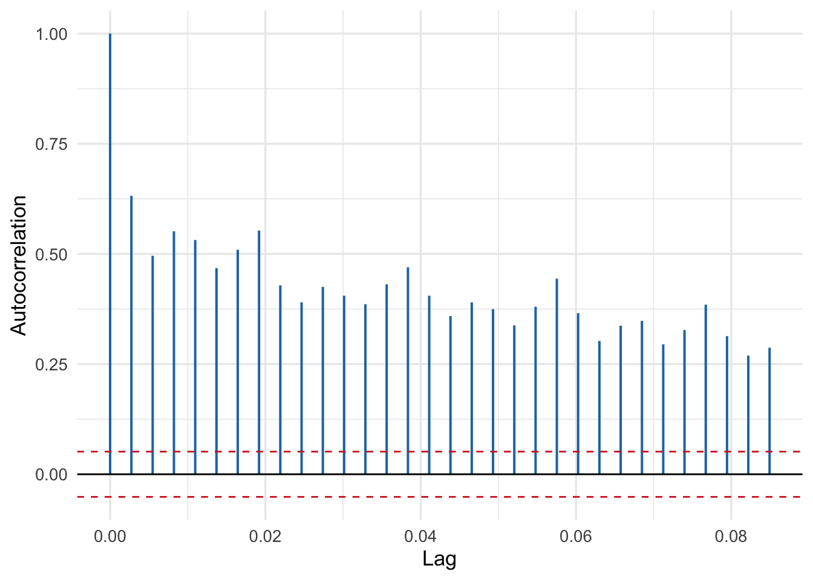
Donde podemos observar que las autocorrelaciones permanecen significativamente positivas a lo largo de múltiples rezagos, mostrando un decaimiento gradual en lugar de un corte abrupto, lo que sugiere que la serie presenta una fuerte dependencia temporal y que no parece existir evidencia clara de un componente de medias móviles puro de orden bajo, sin embargo, considerando el análisis previo del PACF, podríamos comenzar evaluando modelos ARIMA con valores pequeños para \(q\), como \(q=1\).
Ahora bien, de forma manual podemos establecer los parámetros en el modelo ARIMA, por ejemplo:
arima_model <-
Arima(
household_power_ts_filled,
order = c(3, 1, 1)
)Utilizando la misma función que aplicamos para el modelo AR, pero con los parámetros \(q = 1\) y \(d= 1\), sin embargo (y para evitarnos dolores de cabeza evaluando previamente los datos que tenemos), en R no siempre es necesario determinar manualmente estos parámetros, ya que la función auto.arima() de la librería forecast puede seleccionar automáticamente la combinación más adecuada utilizando criterios estadísticos de optimización:
arima_model <-
auto.arima(
household_power_ts_filled
)
summary(arima_model)Series: household_power_ts_filled
ARIMA(3,0,3) with non-zero mean
Coefficients:
ar1 ar2 ar3 ma1 ma2 ma3 mean
0.3812 -0.1207 0.6793 -0.0079 0.0814 -0.4678 1.1048
s.e. 0.0781 0.1074 0.0600 0.0861 0.0972 0.0470 0.0749
sigma^2 = 0.08352: log likelihood = -253.24
AIC=522.49 AICc=522.59 BIC=564.68
Training set error measures:
ME RMSE MAE MPE MAPE MASE
Training set -0.00382931 0.2882878 0.2125587 -8.821026 23.1469 0.6797827
ACF1
Training set 0.02425824La función auto.arima() prueba múltiples combinaciones posibles de parámetros y selecciona automáticamente el modelo con mejor equilibrio entre ajuste y complejidad, normalmente utilizando el criterio \(AIC\).
Una vez ajustado el modelo, el procedimiento de pronóstico es prácticamente idéntico al que vimos anteriormente:
arima_forecast <-
forecast(
arima_model,
h = 30
)
ar_forecast Point Forecast Lo 80 Hi 80 Lo 95 Hi 95
2010.9068 1.163049 0.7926936 1.533405 0.5966391 1.729460
2010.9096 1.106617 0.7113025 1.501932 0.5020356 1.711199
2010.9123 1.140761 0.7436106 1.537912 0.5333717 1.748151
2010.9151 1.157856 0.7534605 1.562251 0.5393866 1.776325
2010.9178 1.121915 0.7005570 1.543273 0.4775035 1.766327
2010.9205 1.129348 0.7034782 1.555219 0.4780361 1.780661
2010.9233 1.148131 0.7179072 1.578355 0.4901604 1.806102
2010.9260 1.129978 0.6891279 1.570828 0.4557560 1.804200
2010.9288 1.125842 0.6792623 1.572422 0.4428573 1.808827
2010.9315 1.139216 0.6890076 1.589424 0.4506818 1.827750
2010.9342 1.132480 0.6754806 1.589480 0.4335595 1.831401
2010.9370 1.125490 0.6629340 1.588045 0.4180719 1.832907
2010.9397 1.132723 0.6667267 1.598719 0.4200432 1.845403
2010.9425 1.131748 0.6610670 1.602429 0.4119035 1.851593
2010.9452 1.125755 0.6503311 1.601178 0.3986570 1.852852
2010.9479 1.128502 0.6497988 1.607204 0.3963889 1.860614
2010.9507 1.129610 0.6473772 1.611842 0.3920989 1.867120
2010.9534 1.125629 0.6395597 1.611698 0.3822503 1.869007
2010.9562 1.125844 0.6367620 1.614926 0.3778576 1.873830
2010.9589 1.127159 0.6352279 1.619090 0.3748153 1.879503Y, de la misma forma, podemos visualizar el pronóstico:
arima_forecast |>
autoplot() +
geom_line(
linewidth = 0.5,
color = "#1f77b4"
) +
labs(
x = "Fecha",
y = "Global Active Power",
title = NULL
) +
theme_minimal()Si bien el modelo ARIMA suele producir pronósticos considerablemente más robustos que un modelo AR simple (especialmente cuando la serie original presenta tendencia o patrones temporales más complejos), para este caso particular podemos notar que no hay demasiada diferencia respecto al pronóstico que hicimos mediante AR, y esto puede deberse a que la serie ya presentaba un comportamiento relativamente estacionario desde el inicio, por lo que el componente de diferenciación (\(d\)) no aporta una transformación demasiado significativa.
Probablemente en este punto te estés preguntando: ¿Por qué analizar este tipo de ejemplos si el resultado final del pronóstico no tiene los patrones típicos que se ven en los libros académicos convencionales? Y eso es algo que siempre me ha molestado de los libros de estadística, ya que tienden a buscar datos que se ajusten perfectamente a un modelo, para poder ejemplificar dicho modelo en condiciones ideales, pero en tu vida laboral rara vez te encontrarás con estos casos. Desde mi perspectiva es mucho más interesante analizar los modelos a partir de sus debilidades, porque de esa forma estará menos sesgada la elección final de un modelo, independientemente de los datos que tengas.
Al final, una buena elección metodológica no depende de qué modelo “se ve mejor” teóricamente, sino de cuál logra describir de forma razonable el comportamiento real de la serie.
Otro aspecto bastante importante dentro del modelado ARIMA es el análisis de residuos. Idealmente, después de ajustar el modelo, los residuos deberían comportarse como ruido blanco, es decir: media cercana a cero, varianza constante y ausencia de autocorrelación (ojo, porque la ausencia de autocorrelación solo debería aplicar para los residuos, no para los datos en si). En R, podemos verificar rápidamente este supuesto utilizando:
checkresiduals(arima_model) Y, rápidamente, podemos ver un análisis de los valores residuales en tres gráficos,que, infortunadamente, no puedo modificar para que se vean menos feos, por lo que voy a replicarlos manualmente (el código respectivo se encontrará en el apéndice, al ser bastante largo):
Attaching package: 'gridExtra'The following object is masked from 'package:dplyr':
combineDon't know how to automatically pick scale for object of type <ts>. Defaulting
to continuous.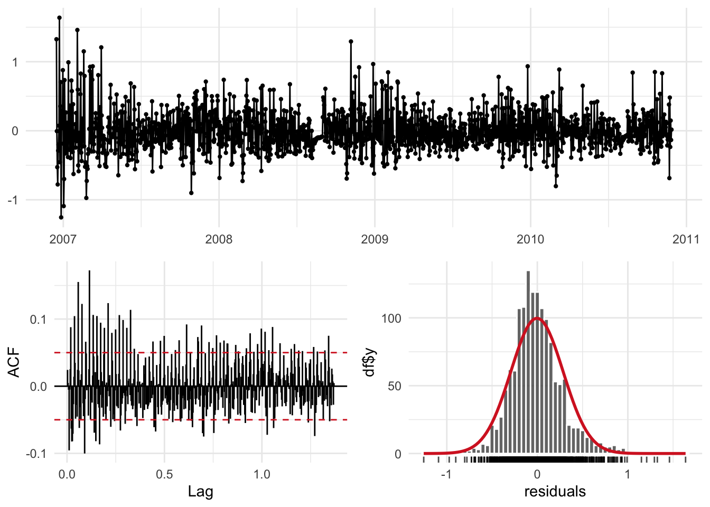
A partir de estos resultados gráficos, podemos identificar los siguientes puntos: 1. El gráfico de dispersión temporal muestra una fluctuación que oscila de manera constante alrededor de cero durante todo el periodo (2007 a 2011), y se observa una variabilidad ligeramente mayor en el periodo de 2007, lo que podría indicar heteroscedasticidad, aunque se estabiliza en los años posteriores; 2. El correlograma de los residuos indica que el modelo no logró capturar completamente toda la dependencia temporal de la serie original, ya que todavía se observan múltiples rezagos que exceden las bandas de confianza, evidenciando la presencia de autocorrelación residual significativa y alejándose, por tanto, del comportamiento esperado de un ruido blanco; 3. La distribución de los residuos en el histograma nos estaría mostrando que, a pesar de presentar colas ligeramente pesadas en los extremos (con algunos valores atípicos aislados cercanos a 1), el supuesto de normalidad en los errores se cumple de forma razonable.
Retomando la función checkresiduals(), además de los gráficos anteriores, también nos devuelve la prueba de Ljung-Box, la cual evalúa si todavía existe autocorrelación significativa en los residuos. Formalmente, las hipótesis son:
- Hipótesis nula \(H_0\): Los residuos son independientes (ruido blanco).
- Hipótesis alternativa \(H_1\): Existe autocorrelación en los residuos.
Así que sí, aunque en la mayoría de las pruebas estadísticas normalmente buscamos rechazar la hipótesis nula, en este caso ocurre exactamente lo contrario, ya que lo ideal es no rechazarla para concluir que los residuos no presentan autocorrelación significativa.
Rápidamente, podemos ver que la prueba nos devuelve el siguiente resultado:
checkresiduals(arima_model, plot = FALSE)
Ljung-Box test
data: Residuals from ARIMA(3,0,3) with non-zero mean
Q* = 870.38, df = 282, p-value < 0.00000000000000022
Model df: 6. Total lags used: 288Siendo que tenemos un p-value igual a 0.00000000000000022, mucho menor al nivel de significancia del \(5%\), rechazamos la hipótesis nula de ausencia de autocorrelación en los residuos. Esto indica que el modelo no logró capturar completamente la estructura temporal de la serie, ya que todavía existe autocorrelación significativa en los residuos, lo que de hecho podemos confirmar con el correlograma previo que generamos a partir de los residuos.
7.5.2.3 Suavizamiento exponencial (ETS)
Hasta este punto hemos trabajado principalmente con modelos basados en dependencias temporales explícitas entre observaciones, como los modelos AR y ARIMA, sin embargo, existe otra familia de métodos extremadamente importante dentro del análisis de series temporales: los modelos de Suavizamiento Exponencial (Exponential Smoothing), también conocidos bajo el nombre general de modelos ETS (Error, Trend, Seasonality).
A diferencia de los modelos ARIMA, donde intentamos modelar directamente autocorrelaciones y dependencias entre rezagos, los métodos ETS se enfocan principalmente en capturar la evolución estructural de la serie mediante componentes de:
- Nivel (level).
- Tendencia (trend).
- Estacionalidad (seasonality).
La idea detrás del suavizamiento exponencial es bastante intuitiva: Las observaciones más recientes suelen contener más información relevante para predecir el futuro que observaciones muy antiguas, razón por la que el modelo asigna pesos exponencialmente decrecientes a medida que las observaciones se alejan en el tiempo, es decir, valores recientes reciben mayor importancia, mientras que valores más antiguos continúan influyendo, pero cada vez con menor peso (Hyndman et al. 2008).
El caso más básico corresponde al Suavizamiento Exponencial Simple (Simple Exponential Smoothing o SES), el cual resulta adecuado para series temporales que no presentan ni tendencia ni estacionalidad. El pronóstico se calcula mediante:
\[ \hat{Y}_{t+1} = \alpha Y_t + (1- \alpha ) \hat{Y}_t \]
Donde:
- \(\alpha\): Es el parámetro de suavizamiento.
- \(0 < \alpha < 1\)
- \(Y_t\): Es el valor observado actual.
- \(\hat{Y}_t\): Es el pronóstico previo.
Respectivamente, la interpretación de \(\alpha\):
- Valores cercanos a \(1\) otorgan mucho peso a las observaciones recientes.
- Valores cercanos a \(0\) generan pronósticos más estables y suavizados.
Es decir, \(\alpha\) controla qué tan rápidamente el modelo olvida el pasado.
Aunque el suavizamiento exponencial simple resulta útil en ciertos escenarios, muchas series reales presentan tendencia y patrones estacionales. Precisamente para manejar este tipo de situaciones surge el modelo general ETS, el cual extiende el suavizamiento exponencial incorporando componentes estructurales adicionales. De hecho, las siglas ETS nos dicen:
- E (Error).
- T (Trend).
- S (Seasonality).
No, no significa enfermedad de transmisión sexual, por si te lo estabas preguntando.
Ahora bien, cada uno de estos componentes puede modelarse de distintas formas:
| Componente | Opciones |
|---|---|
| Error | Aditivo (A) o Multiplicativo (M) |
| Tendencia | Ninguna (N), Aditiva (A), Multiplicativa (M) |
| Estacionalidad | Ninguna (N), Aditiva (A), Multiplicativa (M) |
Por ejemplo:
- \(ETS(A,N,N)\) corresponde a un suavizamiento exponencial simple.
- \(ETS(A,A,N)\) incorpora tendencia aditiva.
- \(ETS(A,A,A)\) incorpora tendencia y estacionalidad aditiva.
Lo que convierte a ETS en una familia extremadamente flexible de modelos.
Vamos ahora a discutir dos enfoques más específicos del suavizado exponencial, los cuales nos ayudarán en situaciones donde tengamos una serie de tiempo que presente tendencia y estacionalidad: El método de Holt y el método de Holt-Winters.
7.5.2.3.1 Método de Holt
Cuando la serie que estamos trabajando presenta además tendencia, uno de los enfoques clásicos más utilizados es el método de Holt, el cual introduce un componente adicional para modelar explícitamente la pendiente de la serie temporal (Hyndman et al. 2008). Este modelo actualiza simultáneamente el nivel de la serie y la tendencia, por lo que las ecuaciones respectivas serán:
- Nivel:
\[ l_t=\alpha Y_t+(1-\alpha)(l_{t-1}+b_{t-1}) \]
- Tendencia:
\[ b_t=\beta(l_t-l_{t-1})+(1-\beta)b_{t-1} \]
- Pronóstico:
\[ \hat{Y}_{t+h}=l_t+hb_t \]
Donde:
- \(l_t\): Representa el nivel.
- \(b_t\): Representa la tendencia.
- \(\alpha\) y \(\beta\): Son parámetros de suavizamiento.
Siendo que este modelo permite capturar series donde existe crecimiento o decrecimiento sistemático a lo largo del tiempo.
7.5.2.3.2 Método de Holt-Winters
Si en el modelo que estamos trabajando, además de tendencia existe estacionalidad, entonces normalmente utilizamos el método Holt-Winters, el cual agrega explícitamente un componente estacional al modelo, ya que este enfoque extiende directamente el método de Holt incorporando una tercera ecuación encargada de modelar los patrones periódicos de la serie temporal (Hyndman et al. 2008).
Para esta extensión del modelo existen dos variantes principales:
- Aditiva: Cuando la amplitud de la estacionalidad permanece aproximadamente constante a lo largo del tiempo.
- Multiplicativa: Cuando la magnitud de la estacionalidad aumenta o disminuye proporcionalmente al nivel de la serie.
Por ejemplo, temperaturas mensuales suelen modelarse adecuadamente mediante estacionalidad aditiva, mientras que ventas comerciales frecuentemente requieren estacionalidad multiplicativa.
Ahora bien, para el modelo aditivo, el cual resulta apropiado cuando los efectos estacionales tienen magnitud relativamente constante, podemos definir las siguientes ecuaciones:
- Nivel:
\[ l_t = \alpha(Y_t - s_{t-m}) + (1-\alpha)(l_{t-1}+b_{t-1}) \]
- Tendencia:
\[ b_t = \beta(l_t-l_{t-1}) + (1-\beta)b_{t-1} \]
- Estacionalidad:
\[ s_t = \gamma(Y_t-l_t) + (1-\gamma)s_{t-m} \]
- Pronóstico:
\[ \hat{Y}_{t+h}=l_t+hb_t+s_{t-m+h_m^+} \]
Donde: - \(l_t\): Representa el nivel. - \(b_t\): Representa la tendencia. - \(s_t\): Representa el componente estacional. - \(m\): Es la longitud del periodo estacional. - \(\alpha\), \(\beta\), \(\gamma\): Son parámetros de suavizamiento.
Por su parte, la variante multiplicativa del modelo, la cual resulta útil cuando la amplitud de la estacionalidad depende del nivel de la serie, las ecuaciones correspondientes son:
- Nivel:
\[ l_t = \alpha\left(\frac{Y_t}{s_{t-m}}\right) + (1-\alpha)(l_{t-1}+b_{t-1}) \]
- Tendencia:
\[ b_t = \beta(l_t-l_{t-1}) + (1-\beta)b_{t-1} \]
- Estacionalidad:
\[ s_t = \gamma\left(\frac{Y_t}{l_t}\right) + (1-\gamma)s_{t-m} \]
- Pronóstico:
\[ \hat{Y}_{t+h}=(l_t+hb_t)s_{t-m+h_m^+} \]
En este caso, el componente estacional actúa multiplicando el nivel estimado de la serie, permitiendo que la amplitud de las fluctuaciones crezca o disminuya proporcionalmente conforme cambia la magnitud general de la serie temporal.
Afortunadamente, en R el ajuste de modelos ETS resulta bastante sencillo gracias a la función ets() de la librería forecast, pero debemos tener en cuenta una limitación importante, y es que la función ets() no puede manejar directamente series temporales con una frecuencia estacional mayor a 24 peridos anuales (quincenal), aunque esto no significa que la función nos devuelva un error al ejecutarla con una serie de tiempo diaria, pero sí provocará que el componente estacional sea ignorado automáticamente durante el ajuste del modelo, utilizando únicamente los componentes de nivel y tendencia. Para evitar este problema, vamos a transformar nuestra serie original a una versión promediada mensualmente:
library(lubridate)
Attaching package: 'lubridate'The following objects are masked from 'package:igraph':
%--%, unionThe following objects are masked from 'package:base':
date, intersect, setdiff, union# Agregación mensual
household_power_monthly <-
household_power_consumption |>
mutate(
Date = floor_date(Date, unit = "month")
) |>
group_by(Date) |>
summarise(
Global_active_power = mean(
Global_active_power,
na.rm = TRUE),.groups = "drop"
)
# Convertir a serie de tiempo mensual
household_power_ts_monthly <- ts(
household_power_monthly$Global_active_power,
start = c(
year(min(household_power_monthly$Date)),
month(min(household_power_monthly$Date))
),
frequency = 12
)
# Interpolación
household_power_ts_filled_monthly <-
forecast::na.interp(
household_power_ts_monthly
)Y ahora si, ya que tenemos los datos en una frecuencia apropiada para este método, podemos pasar a modelar mediante ets():
ets_model <-
ets(
household_power_ts_filled_monthly
)
summary(ets_model)ETS(A,N,A)
Call:
ets(y = household_power_ts_filled_monthly)
Smoothing parameters:
alpha = 0.0001
gamma = 0.0123
Initial states:
l = 1.0907
s = 0.2153 0.0612 -0.1084 -0.5216 -0.4428 -0.2089
-0.0429 -0.0227 0.1297 0.1579 0.3531 0.4301
sigma: 0.1418
AIC AICc BIC
11.73040 26.73040 39.79842
Training set error measures:
ME RMSE MAE MPE MAPE MASE
Training set 0.002599703 0.1193245 0.07681215 -2.348609 9.30177 0.6528533
ACF1
Training set 0.00107458De manera similar a auto.arima(), la función ets() selecciona automáticamente la combinación óptima de componentes utilizando criterios estadísticos como \(AIC\), \(AICc\) o \(BIC\), siendo que para este caso particular seleccionó un modelo ETS(A,N,A), es decir, con error aditivo, sin tendencia y con estacionalidad aditiva. Respecto a los parámetros, podemos ver que los valores de \(\alpha = 0.0001\) y \(\gamma = 0.0123\) son bastante pequeños, lo que nos indica que el modelo no estaría reaccionando de manera agresiva ante nuevas observaciones, devolviendo una estimación más conservadora.
Algo interesante de este modelo es que tenemos un \(MAPE=9.30\) (9.3%), lo que de hecho es bastante bueno en muchos contextos de pronóstico, ya que implica que el error porcentual promedio del modelo es relativamente bajo, además, tenemos un valor de \(ACF1=0.0011\), indicándonos que el modelo logró capturar adecuadamente la estructura temporal presente en la serie, dejando residuos que se aproximan al comportamiento de ruido blanco.
Vamos ahora a generar el pronóstico respectivo (obviando esta vez el data frame resultante, ya que iremos directo al gráfico), mediante:
ets_forecast <- forecast(ets_model,h = 30)Y, respectivamente, vamos a generar el gráfico del pronóstico:
ets_forecast |>
autoplot() +
geom_line(
linewidth = 0.5,color = "#1f77b4") +
labs(x = "Fecha",y = "Global Active Power",title = NULL) +
theme_minimal()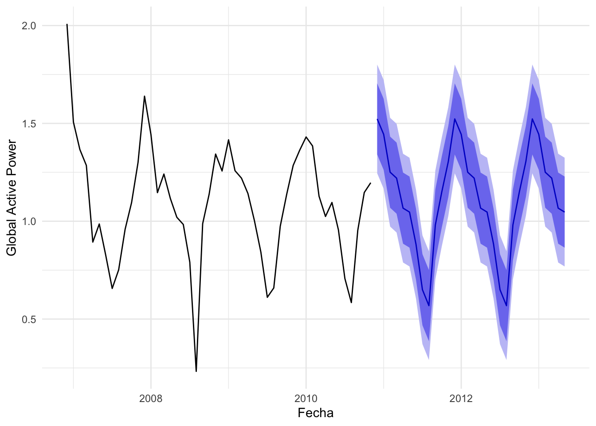
Como podemos ver, el modelo logra capturar claramente un patrón estacional repetitivo, ya que los pronósticos presentan oscilaciones periódicas bastante regulares, lo que resulta consistente con la selección automática del modelo ETS(A,N,A), donde existe un componente estacional aditivo pero no una tendencia global significativa. Es interesante ver que, para las bandas de confianza, la incertidumbre se mantiene de manera muy estable, creciendo gradualmente conforme incrementa el horizonte de valores pronosticados, lo que nos estaría diciendo que el modelo considera que la estructura de la serie es relativamente consistente en el tiempo y que las fluctuaciones futuras seguirán comportándose de manera similar a los patrones históricos observados.
7.5.3 Modelos avanzados
Hasta este punto hemos trabajado principalmente con modelos clásicos de series temporales, los cuales resultan extremadamente útiles para comprender la estructura fundamental de una serie y construir pronósticos relativamente robustos en muchos escenarios reales, sin embargo, conforme los datos comienzan a presentar patrones más complejos (como múltiples componentes estacionales, relaciones simultáneas entre varias variables o cambios estructurales difíciles de capturar mediante enfoques clásicos), suele ser necesario recurrir a modelos más avanzados y flexibles.
Precisamente por esta razón, en los siguientes apartados discutiremos tres enfoques ampliamente utilizados en contextos reales de análisis predictivo. En primer lugar, estudiaremos el modelo SARIMA, el cual extiende directamente a ARIMA incorporando componentes estacionales explícitos, posteriormente, analizaremos Prophet, un modelo desarrollado por Meta especialmente diseñado para manejar series temporales con tendencia, estacionalidad y cambios abruptos de forma relativamente automatizada y, finalmente, discutiremos el modelo de Vectores Autorregresivos (Vector Autoregression o VAR), el cual permite modelar simultáneamente múltiples series temporales que interactúan entre sí, capturando dependencias cruzadas entre variables a lo largo del tiempo.
7.5.3.1 Modelo SARIMA
Aunque el modelo ARIMA resulta extremadamente útil para modelar series temporales con tendencia y dependencia temporal, existe una limitación importante que aparece con muchísima frecuencia en datos reales: la presencia de estacionalidad. En múltiples fenómenos observamos patrones que se repiten periódicamente a lo largo del tiempo, por ejemplo: Ventas que aumentan en diciembre, tráfico vehicular que sigue patrones semanales o temperaturas que presentan ciclos anuales relativamente estables.
El problema es que un modelo ARIMA convencional no incorpora explícitamente esta estructura estacional repetitiva, razón por la que surge el modelo SARIMA (Seasonal Autoregressive Integrated Moving Average), el cual extiende directamente a ARIMA agregando componentes autorregresivos, de diferenciación y de medias móviles específicamente asociados a la estacionalidad (Box et al. 2015).
Formalmente, un modelo SARIMA suele escribirse como:
\[ SARIMA (p,d,q)(P,D,Q)m \]
Donde:
- \((p,d,q)\): Representan los componentes no estacionales del modelo ARIMA.
- \((P,D,Q)\): Representan los componentes estacionales.
- \(m\): Es el periodo de estacionalidad.
Por ejemplo, si tuviéramos datos con un comportamiento anual, entonces \(m = 12\), mientras que para datos trimestrales \(m = 4\), y para datos semales estableceríamos \(m = 7\).
La idea fundamental detrás de SARIMA consiste en modelar simultáneamente dos tipos de dependencias temporales, siendo que por un lado, el modelo captura relaciones de corto plazo entre observaciones cercanas, exactamente igual que un modelo ARIMA tradicional, pero además incorpora relaciones periódicas asociadas a ciclos estacionales repetitivos. Básicamente, el modelo no solamente intenta explicar el valor actual utilizando observaciones recientes, sino también observaciones ocurridas exactamente un periodo estacional atrás. Matemáticamente, la formulación general del modelo puede escribirse como:
\[ \Phi(B^m)\phi(B)(1-B)^d(1-B^m)^DY_t = \Theta(B^m)\theta(B)\varepsilon_t \]
Donde:
- \(B\): Es el operador rezago.
- \((1-B)^d\): Representa la diferenciación no estacional.
- \((1-B^m)^D\): Representa la diferenciación estacional.
- \(\phi(B)\): Componente autorregresivo no estacional.
- \(\theta(B)\): Componente de medias móviles no estacional.
- \(\Phi(B^m)\): Componente autorregresivo estacional.
- \(\Theta(B^m)\): Componente de medias móviles estacional.
- \(\varepsilon_t\): Es el término de error o ruido blanco.
Visto desde esta perspectiva, el modelo puede parecer bastante complejo, pero intuitivamente la lógica es relativamente sencilla: además de modelar dependencias normales entre observaciones consecutivas, el modelo también intenta capturar patrones que se repiten cada cierto número fijo de periodos, por ejemplo, si tuviéramos el siguiente modelo:
\[ SARIMA(1,1,1)(1,1,1)_{12} \]
Simplemente se estarían incorporando un rezago autorregresivo no estacional, una diferenciación no estacional y un componente de medias móviles no estacional, además de incorporar simultáneamente una estructura estacional anual compuesta también por componentes autorregresivos, diferenciación y medias móviles.
Uno de los elementos más importantes dentro de SARIMA es precisamente la diferenciación estacional, ya que, mientras que la diferenciación convencional elimina tendencias mediante diferencias consecutivas entre observaciones:
\[ Y'_t = Y_t - Y_{t-1} \]
La diferenciación estacional elimina patrones periódicos comparando observaciones separadas exactamente por un ciclo completo:
\[ Y'_t = Y_t - Y_{t-m} \]
Por ejemplo, para una serie mensual con estacionalidad anual:
\[ Y'_t = Y_t - Y_{t-12} \]
Esto implica que cada observación se compara directamente contra el mismo mes del año anterior, permitiendo remover patrones repetitivos relativamente estables.
Ahora bien, uno de los aspectos más importantes al construir un modelo SARIMA consiste en identificar correctamente tanto la estructura no estacional como la estructura estacional del modelo, siendo que para ello, así como establecimos encontramos estas estructuras para el modelo ARIMA, lo haremos de una forma muy similar para SARIMA. En este modelo normalmente utilizamos:
- Gráficos ACF.
- Gráficos PACF.
- Pruebas de estacionariedad.
- Criterios de información como \(AIC\) o \(BIC\).
De forma general, los patrones de corto plazo ayudan a identificar \((p,q)\), mientras que los patrones repetitivos en múltiplos de \(m\) ayudan a identificar \((P,Q)\) y, finalmente, las diferenciaciones necesarias determinan \((d,D)\), por ejemplo, si observamos autocorrelaciones significativas en los rezagos \(12, 24, 36\), entonces probablemente exista una componente estacional anual relativamente importante dentro de la serie.
Ahora bien, en R, el ajuste de modelos SARIMA puede realizarse utilizando exactamente la misma función Arima() de la librería forecast, agregando simplemente el componente estacional mediante el argumento seasonal. Tomemos como ejemplo nuesto dataset orginal de household_power_ts en su versión resumida a nivel mensual (para temas de practicidad):
sarima_model <-
Arima(
household_power_ts_filled_monthly,
order = c(1,1,1),
seasonal = c(1,1,1)
)
summary(sarima_model)Series: household_power_ts_filled_monthly
ARIMA(1,1,1)(1,1,1)[12]
Coefficients:Warning in sqrt(diag(x$var.coef)): NaNs produced ar1 ma1 sar1 sma1
-0.0343 -0.9519 0.2506 -0.6616
s.e. 0.2009 0.1647 NaN NaN
sigma^2 = 0.02891: log likelihood = 11.55
AIC=-13.09 AICc=-11.02 BIC=-5.32
Training set error measures:
ME RMSE MAE MPE MAPE MASE
Training set 0.03716926 0.136634 0.08592393 0.6852645 11.34451 0.7302975
ACF1
Training set -0.02471018Sin embargo, normalmente resulta mucho más práctico utilizar la función auto.arima(), ya que esta evalúa automáticamente múltiples combinaciones posibles de parámetros y selecciona posteriormente el modelo con mejor equilibrio entre complejidad y ajuste estadístico:
sarima_model <-
auto.arima(
household_power_ts_filled_monthly,
seasonal = TRUE
)
summary(sarima_model)Series: household_power_ts_filled_monthly
ARIMA(0,0,0)(0,1,0)[12]
sigma^2 = 0.02921: log likelihood = 12.51
AIC=-23.03 AICc=-22.91 BIC=-21.45
Training set error measures:
ME RMSE MAE MPE MAPE MASE
Training set -0.01355183 0.1480198 0.08852611 -4.306475 12.46948 0.7524144
ACF1
Training set -0.08181485En primera instancia, podemos darnos cuenta de que el modelo generado automáticamente fue un \(ARIMA(0,0,0)(0,1,0)_{12}\), algo interesante, ya que esto nos estaría diciendo que el modelo no está incorporando componentes autorregresivos ni de medias móviles, ni en la parte no estacional ni en la parte estacional. Es decir, tenemos:
\[ p = 0,\quad d = 0,\quad q = 0 \]
Y, simultaneamente:
\[ P = 0,\quad D = 1,\quad Q = 0 \]
Esto implica que la única transformación realmente importante que el modelo consideró necesaria fue una diferenciación estacional de orden uno con periodo 12, lo cual sugiere que la serie posee un patrón anual relativamente fuerte y estable, pero que, una vez removida dicha estacionalidad, no existe evidencia suficientemente clara de dependencias adicionales que justifiquen incorporar componentes AR o MA.
Por su parte, el \(RMSE = 0.1480\) y \(MAE = 0.0885\) nos indican que, en promedio, los errores absolutos del modelo son relativamente pequeños, y por su parte, el \(MAPE = 12.47\%\) nos estaría diciendo que, en promedio, las predicciones del modelo difieren aproximadamente un 12.5% respecto a los valores reales, lo que normalemnte se consideraría como un \(MAPE\) excelente.
Una vez ajustado el modelo, el procedimiento de pronóstico es prácticamente idéntico al que utilizamos anteriormente con ARIMA:
sarima_forecast <-
forecast(
sarima_model,
h = 24
)Y, de forma similar, podemos visualizar fácilmente el pronóstico generado:
sarima_plot <-
sarima_forecast |>
autoplot() +
geom_line(linewidth = 0.5,color = "#1f77b4") +
labs(x = "Fecha", y = "Global Active Power", title = NULL) +
theme_minimal() +
theme(plot.title = element_text(hjust = 0.5))
sarima_plot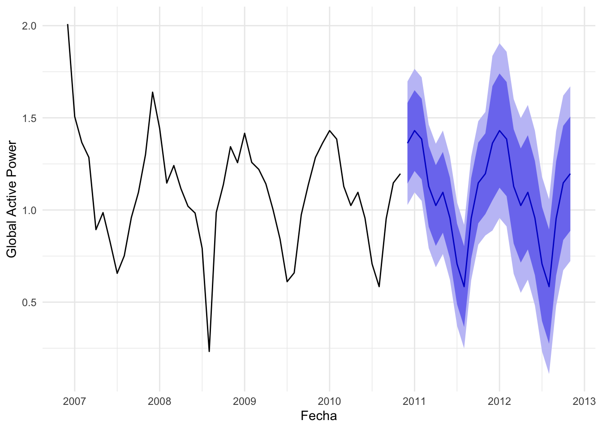
A partir del gráfico, rápidamente podemos darnos cuenta de que el modelo SARIMA logró capturar de forma bastante clara el patrón estacional presente en la serie temporal, ya que los pronósticos futuros conservan oscilaciones periódicas relativamente regulares a lo largo del horizonte de predicción y, de hecho, este pronóstico es bastante parecido al que logramos mediante el modelado ETS, ya que ambos enfoques identificaron que la principal estructura de la serie corresponde precisamente a un comportamiento estacional relativamente estable en el tiempo.
Obviamente, este pronóstico es mucho más interesante que lo que obtuvimos mediante un modelo ARIMA convencional, de hecho, poniendo ambos modelos lado a lado:
library(gridExtra)
sarima_plot <- sarima_plot +
labs(title = "SARIMA")
# Modelo ARIMA
arima_model_no_season <-
auto.arima(
household_power_ts_filled_monthly,
seasonal = FALSE
)
# Pronóstico ARIMA
arima_forecast_no_season <- forecast(arima_model_no_season,h = 24)
arima_plot <-
autoplot(arima_forecast_no_season) +
geom_line(linewidth = 0.5,color = "#1f77b4") +
labs(title = "ARIMA",x = "Fecha",y = "Global Active Power") +
theme_minimal() +
theme(plot.title = element_text(hjust = 0.5))
grid.arrange(
arima_plot,
sarima_plot,
ncol = 2
)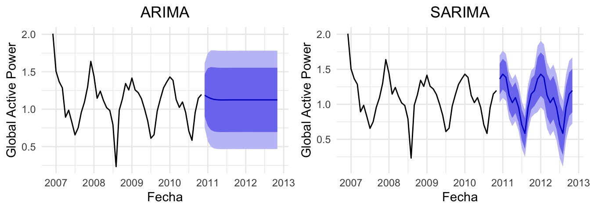
Comparando los modelos lado a lado, es bastante lógica la ventaja del modelo SARIMA respecto al ARIMA original, ya que el modelo ARIMA convencional tiende rápidamente hacia un comportamiento prácticamente constante conforme avanza el horizonte de pronóstico, perdiendo por completo las oscilaciones periódicas observadas históricamente en la serie, esto debido a que el modelo únicamente captura dependencias temporales de corto plazo y posibles tendencias generales. Por su parte, SARIMA logra conservar claramente los ciclos observados en los datos originales, reproduciendo fluctuaciones relativamente regulares a lo largo de todo el horizonte de predicción, como ya lo mencionamos hace un momento.
7.5.3.2 Modelo Prophet
Aunque los modelos convencionales como ARIMA, SARIMA o ETS continúan siendo extremadamente importantes dentro del análisis de series temporales, en muchos escenarios reales aparecen problemas prácticos que pueden volver complicado su ajuste manual, por ejemplo, es bastante común encontrarnos con series que presentan múltiples patrones estacionales simultáneamente, cambios abruptos de comportamiento, datos faltantes o efectos especiales asociados a eventos concretos como promociones, vacaciones, campañas de marketing o crisis económicas. Justamente para abordar este tipo de situaciones surge Prophet, un modelo desarrollado originalmente por Meta (si, los creadores de Facebook), diseñado específicamente para generar pronósticos robustos de forma relativamente automatizada y con una interpretación bastante sencilla.
A diferencia de modelos como ARIMA o SARIMA, donde normalmente debemos identificar manualmente componentes autorregresivos, diferenciaciones y estructuras de medias móviles (sin considerar auto.arima()), Prophet se enfoca principalmente en descomponer la serie temporal en componentes estructurales relativamente fáciles de interpretar (Taylor and Letham 2018). De manera general, el modelo puede expresarse como:
\[ y(t)=g(t)+s(t)+h(t)+\varepsilon_t \]
Donde:
- \(g(t)\): Representa la tendencia de largo plazo.
- \(s(t)\): Representa componentes estacionales.
- \(h(t)\): Representa efectos especiales o eventos.
- \(\varepsilon_t\): Es el término de error.
La idea detrás de este enfoque es, simplemente: El valor observado de la serie temporal puede interpretarse como la suma de distintos patrones estructurales que evolucionan simultáneamente a lo largo del tiempo.
Ciertamente, uno de los aspectos más interesantes del modelo Prophet es el modelado flexible de tendencia, ya que mientras muchos modelos convencionales asumen una tendencia relativamente constante, Prophet permite incorporar automáticamente cambios de comportamiento mediante lo que se conoce como changepoints, es decir, puntos donde la pendiente de la serie puede modificarse.
Matemáticamente, la tendencia suele modelarse mediante funciones lineales segmentadas o funciones logísticas, por ejemplo, para una tendencia lineal con cambios estructurales, el modelo puede escribirse como:
\[ g(t) = (k + a(t)^T\delta)t + (m + a(t)^T\gamma) \]
Donde:
- \(k\): Es la tasa de crecimiento inicial.
- \(m\): Es el intercepto inicial.
- \(\delta\): Representa cambios en la pendiente.
- \(\gamma\): Ajusta continuidad entre segmentos.
- \(a(t)\): Indica qué cambios estructurales están activos en cada instante.
Realmente, este modelo es más sencillo de lo que parece, ya que simplemente Prophet permite que la tendencia cambie automáticamente a lo largo del tiempo conforme detecta modificaciones importantes en el comportamiento histórico de la serie.
Otro componente particularmente interesante dentro de Prophet es la estacionalidad, ya que a diferencia de modelos como SARIMA, donde debemos especificar explícitamente la estructura estacional mediante parámetros concretos, Prophet modela automáticamente patrones periódicos utilizando series de Fourier. Matemáticamente:
\[ s(t)=\sum_{n=1}^{N}\left(a_n\cos\left(\frac{2\pi nt}{P}\right)+b_n\sin\left(\frac{2\pi nt}{P}\right)\right) \]
Donde:
- \(P\): Es el periodo estacional.
- \(N\): Número de términos de Fourier utilizados.
- \(a_n,b_n\): Son coeficientes estimados por el modelo.
Esta expresión permite aproximar patrones periódicos complejos mediante combinaciones de funciones seno y coseno, lo que vuelve al modelo extremadamente flexible para capturar comportamientos estacionales reales.
De hecho, una de las principales ventajas de Prophet es que puede manejar simultáneamente múltiples componentes estacionales, por ejemplo, una serie temporal diaria podría presentar estacionalidad semanal, estacionalidad anual, efectos especiales en vacaciones y cambios estructurales en ciertos periodos, aspectos que pueden modelarse de forma casi automática mediante Prophet.
Ahora bien, antes de ajustar un modelo Prophet en R, debemos tener en cuenta que esta librería utiliza una estructura de datos específica. En particular, el modelo espera una columna ds con fechas y una columna y con la variable objetivo, por lo que simplemente podemos tomar nuetro data frame resumido y solo renombrar estas columnas:
prophet_df <-
household_power_monthly |>
rename(ds = Date,y = Global_active_power)Ahora, ya que tenemos nuestro data frame, podemos comenzar a modelar mediante la función prophet() de la librería prophet, valga la redundancia:
library(prophet)
prophet_model <- prophet(prophet_df)Como ya te habrás dado cuenta, Prophet incorpora por defecto tendencia automática, changepoints automáticos, estacionalidad anual e intervalos de incertidumbre, por lo que es bastante práctico en escenarios reales.
Ahora bien, para generar pronósticos futuros, primero debemos construir un conjunto de fechas futuras utilizando make_future_dataframe():
future_dates <- make_future_dataframe(prophet_model,
periods = 24,
freq = "month")Donde periods = 24 indica que queremos generar pronósticos para los siguientes 24 meses.
Posteriormente, generamos las predicciones utilizando:
prophet_forecast <- predict(prophet_model,future_dates)Y, respectivamente, podemos visualizar fácilmente el pronóstico mediante:
plot(prophet_model,prophet_forecast) +
theme_minimal() +
labs(title = NULL,x = "Fecha",y = "Global Active Power") 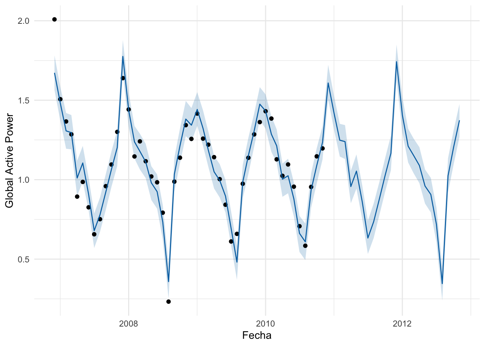
Algo interesante de Prophet es que también permite visualizar individualmente los componentes aprendidos por el modelo, es decir:
prophet_plot_components(prophet_model,prophet_forecast)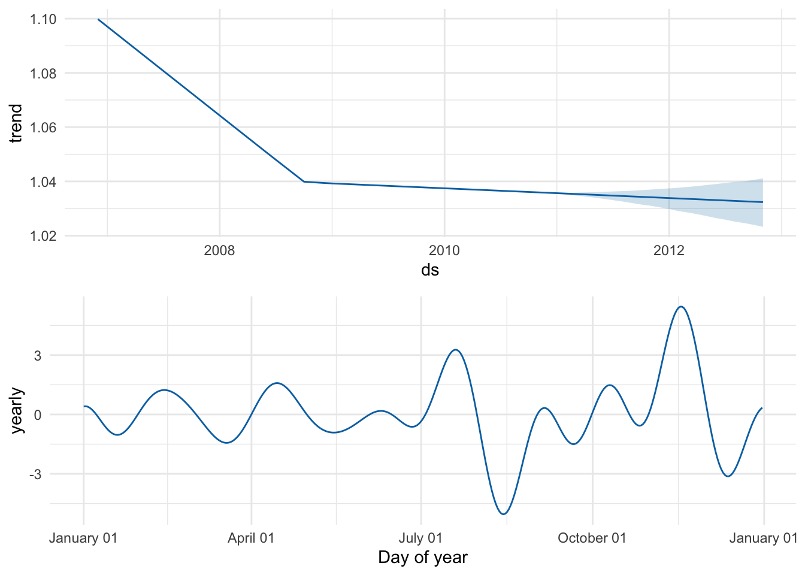
(Nota: Este gráfico por default queda un poco feo, por lo que lo rehice manualmente. Código disponible en el apéndice)
Este gráfico nos permite analizar separadamente la tendencia, estacionalidad anual, semanal (si aplica), efectos especiales, etc. En este caso particular, podemos ver que, para el gráfico de arriba (respectivo a la tendencia), el modelo detectó inicialmente una disminución relativamente pronunciada entre 2007 y aproximadamente 2009, pasando de valores cercanos a \(1.10\) hasta niveles alrededor de \(1.04\), aunque después de este periodo la pendiente se vuelve mucho más suave y prácticamente estable. Por su parte, en el gráfico inferior (correspondiente a la estacionalidad anual) nos muestra cómo el modelo identificó fluctuaciones periódicas bastante complejas a lo largo del año.
Como seguramente ya te habrás dado cuenta, en este modelo no aplicamos directamente una función summary(), ya que de hecho Prophet no está diseñado bajo la misma filosofía estadística clásica que modelos como ARIMA o ETS, donde normalmente existe un interés explícito en interpretar coeficientes, analizar significancia estadística o evaluar criterios de información como \(AIC\) o \(BIC\), razón por la que normalmente en este caso se suelen utilizar métodos como la validación cruzada para evaluar el desempeño del modelo. Afortunadamente, la librería prophet ya tiene incorporadas herramientas específicas para este propósito mediante las funciones cross_validation() y performance_metrics(), por ejemplo, podríamos evaluar el modelo utilizando:
# Validación cruzada
cv_results <-
cross_validation(
model = prophet_model,
initial = 730,
period = 180,
horizon = 365,
units = "days"
)
# Desempeño
performance_metrics(cv_results) |>
head(10) horizon mse rmse mae mape mdape smape
1 30 days 0.007852523 0.08861446 0.06283075 0.04619908 0.04619908 0.04417644
2 57 days 0.009391984 0.09691225 0.09040420 0.09139043 0.09139043 0.08739666
3 61 days 0.002106841 0.04590033 0.04458677 0.05716737 0.05716737 0.05533644
4 88 days 0.051624296 0.22720981 0.17661859 0.25421919 0.25421919 0.33195155
5 92 days 0.066936868 0.25872160 0.24888275 0.30680030 0.30680030 0.38881870
6 119 days 0.017084739 0.13070860 0.11365068 0.08954463 0.08954463 0.09462189
7 120 days 0.004310890 0.06565737 0.06395270 0.06012594 0.06012594 0.05959763
8 149 days 0.005104514 0.07144588 0.07101908 0.06271904 0.06271904 0.06233376
9 151 days 0.004722911 0.06872344 0.06851895 0.06381593 0.06381593 0.06595677
10 180 days 0.002752704 0.05246622 0.04066743 0.03895757 0.03895757 0.04031300
coverage
1 0.5
2 0.5
3 1.0
4 0.5
5 0.0
6 0.5
7 1.0
8 1.0
9 1.0
10 1.0Lo primero que podemos observar es que los valores de \(RMSE\) y \(MAE\) se mantienen relativamente bajos en la mayoría de los horizontes evaluados, lo cual resulta bastante bueno, ya que un \(MAPE\) inferior al \(10%\) normalmente suele considerarse un pronóstico bastante preciso en ambientes de producción, sin embargo, también podemos observar un comportamiento importante alrededor de los horizontes de 88 y 92 días, donde las métricas empeoran considerablemente, es decir:
- \(RMSE \approx 0.23 - 0.26\)
- \(MAPE \approx 25\% - 31\%\)
Lo que nos podría indicar que, para esos periodos específicos, el modelo tiene mayores dificultades para capturar los cambios estructurales asociados (si es el caso).
7.5.3.3 Modelo de Vector Autorregresivo (VAR)
Hasta este punto todos los modelos que hemos discutido trabajan bajo una idea relativamente importante: modelar el comportamiento futuro de una única serie temporal utilizando únicamente información histórica de esa misma variable, sin embargo, en muchísimos problemas reales las variables no evolucionan de manera aislada, sino que interactúan continuamente entre sí, por ejemplo, tasas de interés, inflación y tipo de cambio suelen influenciarse mutuamente; igualmente, el consumo eléctrico puede depender simultáneamente de temperatura, actividad industrial y precio de la energía. Precisamente para modelar este tipo de dependencias cruzadas surge el modelo VAR (Vector Autoregression o Vector Autorregresivo).
La idea fundamental detrás de un modelo VAR consiste en extender directamente los modelos autorregresivos clásicos (AR) hacia un contexto multivariado, siendo que, en lugar de modelar una sola serie temporal, el modelo ajusta simultáneamente múltiples variables, permitiendo que cada una dependa tanto de sus propios valores pasados como de los valores pasados de las demás variables del sistema (Hamilton 1994).
Supongamos, por ejemplo, que tenemos dos variables temporales:
- \(Y_t\): Consumo eléctrico.
- \(X_t\): Temperatura.
En un modelo VAR, el consumo eléctrico podría depender no solamente de consumos anteriores, sino también de temperaturas previas y, simultáneamente, la temperatura podría modelarse utilizando valores anteriores de ambas variables. Formalmente, un modelo \(VAR(p)\) con dos variables puede escribirse como:
\[ Y_t = c_1 + \phi_{11,1}Y_{t-1} + \phi_{12,1}X_{t-1} + \cdots + \phi_{11,p}Y_{t-p} + \phi_{12,p}X_{t-p} + \varepsilon_{1,t} \]
\[ X_t = c_2 + \phi_{21,1}Y_{t-1} + \phi_{22,1}X_{t-1} + \cdots + \phi_{21,p}Y_{t-p} + \phi_{22,p}X_{t-p} + \varepsilon_{2,t} \]
Donde:
- \(c_1,c_2\): Son constantes.
- \(\phi\): Representan coeficientes autorregresivos cruzados.
- \(\varepsilon_t\): Son errores aleatorios.
- \(p\): Es el número de rezagos.
Sin embargo, normalmente los modelos VAR se representan de forma matricial, ya que esto simplifica bastante la notación cuando trabajamos con muchas variables simultáneamente. La formulación general de un modelo \(VAR(p)\) es:
\[ \mathbf{Y}_t = \mathbf{c} + A_1\mathbf{Y}_{t-1} + A_2\mathbf{Y}_{t-2} + \cdots + A_p\mathbf{Y}_{t-p} + \boldsymbol{\varepsilon}_t \]
Donde:
- \(\mathbf{Y}_t\): Vector de variables temporales.
- \(\mathbf{c}\): Vector de constantes.
- \(A_i\): Matrices de coeficientes.
- \(\boldsymbol{\varepsilon}_t\): Vector de errores aleatorios.
Por ejemplo, si trabajáramos con tres variables simultáneamente:
\[ \mathbf{Y}_t= \begin{bmatrix} Y_{1,t}\\ Y_{2,t}\\ Y_{3,t} \end{bmatrix} \]
Por lo que, para este modelo, cada variable estaría siendo explicada por rezagos históricos de las tres variables del sistema.
Uno de los aspectos más importantes dentro del modelado VAR es que, como es de esperarse, todas las series deben ser estacionarias, exactamente igual que ocurre con los modelos AR, lo que implica que normalmente debemos verificar previamente que tengamos media relativamente constante, varianza estable y ausencia de tendencia explosiva. En caso contrario, normalmente se aplican diferenciaciones o transformaciones antes de ajustar el modelo. De hecho, cuando las variables no son estacionarias pero presentan relaciones de equilibrio de largo plazo, suelen utilizarse extensiones como modelos VECM (Vector Error Correction Model), aunque es un modelo que no vamos a abordar en este libro.
Otro aspecto particularmente importante en modelos VAR consiste en seleccionar adecuadamente el número de rezagos \(p\), siendo que un valor demasiado pequeño puede omitir relaciones relevantes entre variables, mientras que un valor excesivamente grande incrementa rápidamente la complejidad del modelo y puede introducir sobreajuste. Lógicamente, para ello se utilizarán los criterios de información \(AIC\), \(BIC\) o \(HQ\).
En R, el ajuste de modelos VAR suele realizarse mediante la librería vars. Vamos a utilizar el mismo dataset que hemos venido trabajando hasta ahora, pero con una versión que incluye una columna adicional Voltage (que si, pude haber agregado desde un principio en el dataset original, pero como soy despistado olvidé incluir):
household_power_consumption_multivar <-
read.csv(paste0("https://raw.githubusercontent.com/Jorge-hercas/",
"r-para-inteligencia-de-negocios/refs/heads/",
"main/CSV/household_power_consumption_multivar.csv")) |>
mutate(
Date = lubridate::floor_date(as.Date(Date), "month")
) |>
group_by(Date) |>
summarise(
across(
c(Global_active_power, Voltage),
~ mean(.x, na.rm = TRUE)
),
.groups = "drop"
)
var_data <-
household_power_consumption_multivar |>
dplyr::select(Global_active_power, Voltage) |>
na.omit()Ahora bien, antes de ajustar el modelo, simplemente seleccionando el número óptimo de rezagos utilizando VARselect():
library(vars)
lag_selection <-
VARselect(
var_data,
lag.max = 10,
type = "const"
)
lag_selection$selection
AIC(n) HQ(n) SC(n) FPE(n)
10 10 10 10
$criteria
1 2 3 4 5 6
AIC(n) -3.23575071 -3.25349961 -3.233679 -3.48755486 -3.65392662 -3.60827960
HQ(n) -3.14375482 -3.10017312 -3.019022 -3.21156719 -3.31660836 -3.20963075
SC(n) -2.97718447 -2.82255588 -2.630358 -2.71185615 -2.70585042 -2.48782592
FPE(n) 0.03935658 0.03875753 0.039749 0.03114132 0.02678657 0.02870164
7 8 9 10
AIC(n) -4.10361481 -4.41935964 -4.818425273 -5.125782684
HQ(n) -3.64363535 -3.89804960 -4.235784636 -4.481811453
SC(n) -2.81078363 -2.95415097 -3.180839113 -3.315819034
FPE(n) 0.01807968 0.01379827 0.009840973 0.007846711Esta función evalúa múltiples órdenes posibles y devuelve distintos criterios estadísticos para ayudarnos a seleccionar el número apropiado de rezagos. Supongamos que el criterio \(AIC\) sugiere utilizar dos rezagos, entonces el modelo puede ajustarse mediante:
var_model <-
VAR(
var_data,
p = 2,
type = "const"
)
coef_global <- summary(var_model)
# Resultados
coef_global$varresult$Global_active_power
Call:
lm(formula = y ~ -1 + ., data = datamat)
Residuals:
Min 1Q Median 3Q Max
-0.61595 -0.10674 0.00609 0.10942 0.49345
Coefficients:
Estimate Std. Error t value Pr(>|t|)
Global_active_power.l1 0.76551 0.15035 5.091 0.00000835 ***
Voltage.l1 0.04418 0.02597 1.701 0.0964 .
Global_active_power.l2 -0.24927 0.13080 -1.906 0.0637 .
Voltage.l2 -0.01064 0.02651 -0.401 0.6903
const -7.56314 5.53645 -1.366 0.1794
---
Signif. codes: 0 '***' 0.001 '**' 0.01 '*' 0.05 '.' 0.1 ' ' 1
Residual standard error: 0.1977 on 41 degrees of freedom
Multiple R-squared: 0.5275, Adjusted R-squared: 0.4814
F-statistic: 11.44 on 4 and 41 DF, p-value: 0.000002494
$Voltage
Call:
lm(formula = y ~ -1 + ., data = datamat)
Residuals:
Min 1Q Median 3Q Max
-4.2066 -0.5551 0.1056 0.5450 2.3745
Coefficients:
Estimate Std. Error t value Pr(>|t|)
Global_active_power.l1 1.70941 0.87788 1.947 0.058381 .
Voltage.l1 0.61517 0.15162 4.057 0.000217 ***
Global_active_power.l2 -1.49451 0.76372 -1.957 0.057194 .
Voltage.l2 0.05544 0.15480 0.358 0.722097
const 79.12958 32.32587 2.448 0.018739 *
---
Signif. codes: 0 '***' 0.001 '**' 0.01 '*' 0.05 '.' 0.1 ' ' 1
Residual standard error: 1.154 on 41 degrees of freedom
Multiple R-squared: 0.5159, Adjusted R-squared: 0.4686
F-statistic: 10.92 on 4 and 41 DF, p-value: 0.000004031# Roots
coef_global$roots[1] 0.6350630 0.5224360 0.5224360 0.1714473Nótese que trunqué los resultados, ya que el output es demasiado grande para este modelo.
Ahora bien, una de las primeras cosas importantes que debemos revisar es la estabilidad del modelo. Para ello observamos las raíces del polinomio característico:
\[ 0.6351, 0.5224, 0.5224, 0.1714 \]
En modelos VAR, el sistema es estable cuando todas las raíces tienen módulo menor que 1, lo cual efectivamente ocurre aquí, y esto implica que el modelo es estacionario y que los efectos de perturbaciones pasadas tienden a disiparse con el tiempo, evitando comportamientos explosivos.
Para la ecuación correspondiente a Global_active_power, el modelo estimado es:
\[ \begin{aligned} Global\_active\_power_t =\;& -7.56314 \\ &+ 0.76551\,Global\_active\_power_{t-1} \\ &+ 0.04418\,Voltage_{t-1} \\ &- 0.24927\,Global\_active\_power_{t-2} \\ &- 0.01064\,Voltage_{t-2} \\ &+ \varepsilon_{1,t} \end{aligned} \]
Donde el coeficiente más importante corresponde al primer rezago de la propia variable (0.76551), el cual además es altamente significativo (\(p < 0.001\)). De hecho, para este primer modelo, tenemos una \(R^2=0.5275\), lo que es bastante bueno, ya que más de la mitad de de la variabilidad de Global_active_power se está explicando por el modelo.
Ahora bien, para la ecuación de Voltage, el modelo estimado es:
\[ \begin{aligned} Voltage_t =\;& 79.12958 \\ &+ 1.70941\,Global\_active\_power_{t-1} \\ &+ 0.61517\,Voltage_{t-1} \\ &- 1.49451\,Global\_active\_power_{t-2} \\ &+ 0.05544\,Voltage_{t-2} \\ &+ \varepsilon_{2,t} \end{aligned} \]
Aquí nuevamente observamos una fuerte dependencia temporal propia mediante el rezago (0.61517), el cual también es altamente significativo (\(p < 0.001\)). Lo interesante es que los rezagos de Global_active_power aparecen con significancia marginal, lo que nos estaría diciendo que el consumo eléctrico pasado podría contener información útil para explicar variaciones futuras del voltaje, evidenciando precisamente el tipo de dependencia cruzada que los modelos VAR buscan capturar. De hecho, para este modelo también tenemos un coeficiente de determinación bastante alto, teniendo una \(R^2= 0.5159\), así que en este caso también podemos decir que más de la mitad de la variabilidad del voltaje es explicada por el sistema completo.
Ahora bien, la matriz de correlación residual:
coef_global$corres Global_active_power Voltage
Global_active_power 1.000000 0.058202
Voltage 0.058202 1.000000Nos muestra que los errores de ambas ecuaciones presentan una correlación bastante pequeña, algo positivo, ya que sugiere que el modelo logró capturar gran parte de la dependencia contemporánea entre ambas variables y que no queda una relación residual fuerte sin modelar.
Una vez ajustado el modelo, los pronósticos pueden generarse de manera muy similar a los modelos anteriores:
var_forecast <-
predict(
var_model,
n.ahead = 12
)
var_forecast$Global_active_power
fcst lower upper CI
[1,] 1.126726 0.7391804 1.514272 0.3875456
[2,] 1.086631 0.5849811 1.588281 0.5016501
[3,] 1.065458 0.5248229 1.606094 0.5406355
[4,] 1.059466 0.5065005 1.612431 0.5529652
[5,] 1.060515 0.5029283 1.618103 0.5575872
[6,] 1.063740 0.5040514 1.623428 0.5596881
[7,] 1.066783 0.5061528 1.627414 0.5606305
[8,] 1.068936 0.5079324 1.629939 0.5610035
[9,] 1.070232 0.5090991 1.631364 0.5611326
[10,] 1.070930 0.5097562 1.632103 0.5611733
[11,] 1.071277 0.5100914 1.632463 0.5611860
[12,] 1.071445 0.5102548 1.632635 0.5611902
$Voltage
fcst lower upper CI
[1,] 240.9680 238.7052 243.2308 2.262778
[2,] 240.8481 238.0906 243.6057 2.757542
[3,] 240.8242 237.8092 243.8392 3.014997
[4,] 240.8266 237.6971 243.9562 3.129566
[5,] 240.8482 237.6664 244.0300 3.181829
[6,] 240.8723 237.6670 244.0776 3.205273
[7,] 240.8923 237.6770 244.1077 3.215344
[8,] 240.9063 237.6869 244.1257 3.219394
[9,] 240.9152 237.6943 244.1361 3.220927
[10,] 240.9204 237.6989 244.1419 3.221486
[11,] 240.9234 237.7017 244.1451 3.221690
[12,] 240.9250 237.7033 244.1468 3.221766Donde n.ahead = 12 indica que queremos generar pronósticos para los siguientes 12 periodos.
Vamos ahora a generar un gráfico de series de tiempo con el pronóstico respectivo. Para este caso, tendremos que añadir manualmente las fechas, ya que no las tomamos en cuenta al momento de hacer el pronóstico mediante VAR:
var_forecast <- predict(var_model,n.ahead = 12)
# Fechas futuras
last_date <- max(household_power_consumption$Date)
future_dates <- seq(
from = last_date %m+% months(1),
by = "month",
length.out = 12
)
# Valores históricos
historical_df <- household_power_consumption_multivar |>
dplyr::select(Date, Global_active_power) |>
rename(value = Global_active_power) |>
mutate(type = "Histórico")
# Forecast
forecast_df <- tibble(
Date = future_dates,
value = var_forecast$fcst$Global_active_power[, "fcst"],
lower = var_forecast$fcst$Global_active_power[, "lower"],
upper = var_forecast$fcst$Global_active_power[, "upper"],
type = "Pronóstico"
)
ggplot() +
geom_line(
data = historical_df,
aes(x = Date, y = value),
linewidth = 0.6,
color = "#1f77b4"
) +
# Intervalo de confianza
geom_ribbon(
data = forecast_df,
aes(x = Date,ymin = lower, ymax = upper),
alpha = 0.2, fill = "#d62728"
) +
# Forecast
geom_line(
data = forecast_df,
aes(x = Date, y = value),
linewidth = 0.7, color = "#d62728"
) +
labs(x = "Fecha", y = "Global Active Power", title = NULL) +
theme_minimal()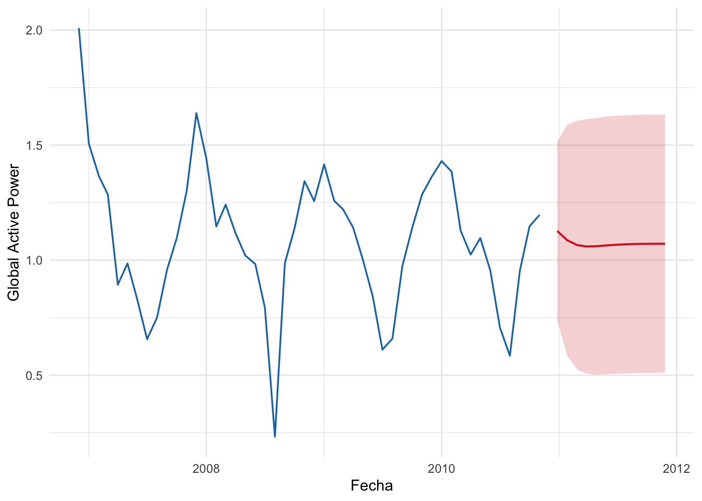
Aquí encontramos algunos aspectos interesantes de este tipo de modelación, ya que podemos analizar la dinámica que hay entre variables. Los aspectos más importantes a los que podemos prestarles atención son las funciones impulso-respuesta, la descomposición de varianza y la causalidad de Granger.
Por ejemplo, las funciones impulso-respuesta permiten analizar cómo una perturbación en una variable afecta dinámicamente al resto del sistema a lo largo del tiempo. Matemáticamente, esto equivale a estudiar cómo los shocks se propagan entre variables temporales interdependientes. En R, una función impulso-respuesta puede calcularse mediante irf() de la librería vars:
irf_result <-
irf(
var_model,
impulse = "Voltage",
response = "Global_active_power",
n.ahead = 12
)Podríamos directamente graficar esta función simplemente con plot(irf_result), pero se va a ver horrible, así que vamos a replicarla rápidamente con ggplot2:
# Conversión a Tibble
irf_df <- tibble(
horizon = 0:12,
irf = irf_result$irf$Voltage[,1],
lower = irf_result$Lower$Voltage[,1],
upper = irf_result$Upper$Voltage[,1]
)
irf_df |>
ggplot(aes(x = horizon, y = irf)) +
# Banda de confianza
geom_ribbon(aes(ymin = lower,ymax = upper),
fill = "#d62728",alpha = 0.20) +
geom_line(linewidth = 0.8, color = "#1f77b4") +
geom_hline(
yintercept = 0,
linetype = "dashed",
linewidth = 0.6) +
scale_x_continuous(breaks = seq(0, 12, by = 1)) +
labs(x = "Horizonte", y = "Respuesta de impulso",title = NULL) +
theme_minimal()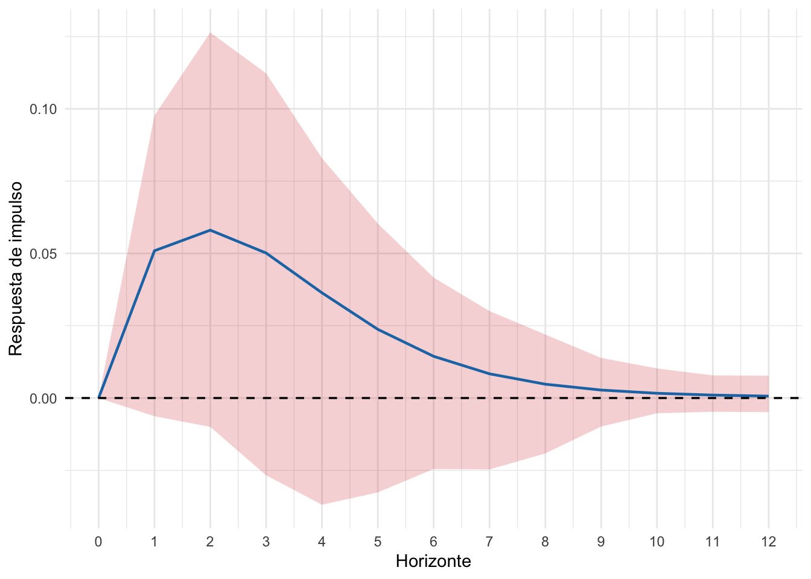
Este análisis nos permitiría observar, por ejemplo, cómo un cambio inesperado en el voltaje afecta el consumo eléctrico durante los siguientes periodos, y como puedes darte cuenta, para los primeros horizones la respuesta sube rápidamente y alcanza su pico máximo alrededor del periodo 2, lo que indica que el efecto del shock en el voltaje tarda aproximadamente dos periodos en transmitirse plenamente al consumo eléctrico.
Ahora bien, el siguiente análisis que podemos discutir respecto a este modelo es la Causalidad de Granger, la cual no implica causalidad en sentido estricto, sino más bien verificar si los valores pasados de una variable contienen información útil para predecir otra variable. Formalmente, la prueba de hipótesis será:
- \(H_0\): La variable \(X\) no causa en el sentido de Granger a \(Y\).
- \(H_1\): La variable \(X\) sí aporta información predictiva sobre \(Y\).
Podemos evaluar esto en R mediante la función causality() de la misma librería vars:
causality(
var_model,
cause = "Voltage"
)$Granger
Granger causality H0: Voltage do not Granger-cause Global_active_power
data: VAR object var_model
F-Test = 1.7644, df1 = 2, df2 = 82, p-value = 0.1777
$Instant
H0: No instantaneous causality between: Voltage and Global_active_power
data: VAR object var_model
Chi-squared = 0.1553, df = 1, p-value = 0.6935Este es probablemente el análisis más importante, ya que a partir de esta prueba podemos concluir que no existe evidencia estadística significativa para afirmar que la variable Voltage aporta capacidad predictiva adicional sobre Global_active_power dentro del modelo VAR. Aunque intuitivamente podríamos pensar que ambas variables deberían estar fuertemente relacionadas debido a su naturaleza eléctrica, el análisis estadístico nos está mostrando que dicha relación no necesariamente se traduce en capacidad predictiva temporal, y, de hecho, la prueba de causalidad instantánea tampoco mostró evidencia significativa de dependencia contemporánea entre ambas variables. En conjunto, estos resultados nos estarían indicando que, al menos bajo la estructura actual del modelo VAR, el comportamiento dinámico del consumo eléctrico parece estar explicado principalmente por su propia evolución histórica y no por cambios observados en el voltaje.
7.5.3.4 Comparación de modelos y selección según tipo de serie
A lo largo de esta sección revisamos distintos enfoques para el pronóstico de series temporales, desde modelos clásicos relativamente simples hasta modelos más avanzados capaces de incorporar estacionalidad compleja o múltiples variables, pero obviamente en la práctica no tenemos un libro o manual específico que nos diga qué modelo utilizar para nuestro caso particular, así como no existe un modelo universalmente superior, ya que el desempeño depende directamente de las características de la serie temporal.
La selección del modelo dependerá siempre de factores como la presencia de tendencia, existencia de estacionalidad, estacionariedad, cantidad de variables involucradas, complejidad del patrón temporal, estabilidad de la serie, etc, por ejemplo, los modelos AR suelen funcionar adecuadamente cuando la serie es relativamente estacionaria y presenta dependencias temporales simples. Los modelos ARIMA extienden esta idea permitiendo trabajar con series no estacionarias mediante diferenciación, mientras que los modelos ETS resultan particularmente útiles cuando existen patrones de tendencia y estacionalidad relativamente suaves. Cuando la serie presenta una estacionalidad más marcada, los modelos SARIMA suelen ofrecer mejores resultados al incorporar componentes estacionales explícitos. Por otro lado, Prophet proporciona un enfoque más flexible para capturar tendencias no lineales, múltiples estacionalidades y cambios estructurales. Finalmente, cuando existen múltiples variables que interactúan entre sí, los modelos VAR permiten modelar simultáneamente las relaciones dinámicas entre todas las series involucradas.
De manera general, las principales características (y una guía visual para darse una idea de cuál podría ser el mejor modelo para nuestro problema particular) de cada modelo pueden resumirse en la siguiente tabla:
| Modelo | Tendencia | Estacionalidad | Multivariable | Complejidad |
|---|---|---|---|---|
| AR | Limitada | No | No | Baja |
| ARIMA | Sí | Limitada | No | Media |
| ETS | Sí | Sí | No | Media |
| SARIMA | Sí | Sí | No | Alta |
| Prophet | Sí | Sí | No | Media |
| VAR | Sí | Dependiente del caso | Sí | Alta |
7.6 Análisis de clientes y supervivencia
Hasta este punto, gran parte del análisis predictivo se ha enfocado en modelar variables numéricas, identificar relaciones entre factores y generar pronósticos sobre fenómenos que evolucionan en el tiempo; en otras palabras, hemos trabajado principalmente con herramientas de estadística aplicada. Sin embargo, en el día a día dentro de un negocio (y, obviamente, cuando llegues a un entorno laboral real), especialmente en áreas como marketing o finanzas, el verdadero interés no suele centrarse únicamente en predecir valores futuros, sino en comprender el comportamiento de los clientes a lo largo de su ciclo de vida.
Algunas preguntas que aparecen constantemente son: ¿cuánto tiempo permanece un cliente activo?, ¿qué tan probable es que abandone el servicio?, o ¿cuál es el valor económico esperado que generará en el futuro? Porque sí, tiene poco sentido construir modelos sofisticados de pronóstico si el principal problema de la empresa es que ninguno de sus clientes permanece más de un par de meses.
De hecho, cuando trabajaba en startups, una de las primeras prioridades siempre era entender el comportamiento de los clientes, ya que esto permitía identificar cuellos de botella importantes dentro de la empresa y aplicar estrategias mucho más enfocadas. En muchos casos, problemas como una mala atención al cliente o errores dentro del sistema eran los verdaderos responsables de la pérdida de usuarios, por esa razón, proyectos como dashboards con tendencias o análisis avanzados de series de tiempo normalmente no se volvían prioritarios hasta que la empresa alcanzaba una etapa más madura y estable en términos de operación y datos.Claro que esto no es un problema aislado solamente a las startups, pero si es donde definitivamente lo vas a notar más, si en alguna ocasión terminas trabajando en una.
Ahora bien, para responder este tipo de preguntas, existen técnicas especializadas que permiten analizar la evolución temporal de los clientes desde distintas perspectivas. Una de las más importantes es el análisis de cohortes, el cual agrupa usuarios según características compartidas, como la fecha de adquisición o el primer evento de compra, con el objetivo de estudiar patrones de comportamiento, retención y abandono a lo largo del tiempo, siendo que este enfoque resulta particularmente útil para detectar cambios en la calidad de adquisición de clientes, evaluar el impacto de estrategias comerciales y medir la capacidad de una empresa para conservar usuarios activos.
A partir de este análisis, también es posible estimar métricas clave como la retención de clientes y el Customer Lifetime Value (CLV), que representa el valor económico esperado que un cliente aportará durante toda su relación con la empresa. Complementariamente, también existen técnicas de análisis de supervivencia permiten modelar probabilísticamente el tiempo hasta que ocurre un evento específico, proporcionando herramientas para anticipar riesgos y diseñar estrategias de fidelización más efectivas.
7.6.1 Análisis de cohort: Retención de clientes
Uno de los problemas más importantes dentro del análisis de clientes es entender cómo evoluciona el comportamiento de distintos grupos de usuarios a lo largo del tiempo. Aunque métricas agregadas como ventas totales, usuarios activos o ingresos promedio pueden ofrecer una visión general del negocio, estas suelen ocultar patrones importantes relacionados con la adquisición, retención y abandono de clientes. Justamente para abordar este problema surge el análisis de cohortes, una técnica que permite segmentar clientes en grupos homogéneos según una característica compartida y analizar posteriormente su comportamiento temporal.
Básicamente, un cohorte es un conjunto de usuarios que comparten un evento común dentro de un mismo período de tiempo. El caso más común (y sencillo de aplicar) consiste en agrupar clientes según su fecha de adquisición o primera compra, por ejemplo, todos los usuarios que realizaron su primera compra en enero forman una cohorte, mientras que los que ingresaron en febrero conforman otra distinta. A partir de esta segmentación, el objetivo consiste en observar cómo evoluciona cada grupo conforme transcurre el tiempo (Fader and Hardie 2009).
Este método, que de hecho es bastante sencillo de aplicar, también es bastante útil, porque elimina parte del sesgo temporal presente en las métricas agregadas, por ejemplo, una disminución global en ventas podría deberse a una peor retención de clientes recientes, aunque las cohortes antiguas continúen comportándose normalmente. Del mismo modo, una campaña de marketing aparentemente exitosa podría estar atrayendo clientes con baja permanencia, algo que no sería evidente observando únicamente el volumen total de usuarios.
Matemáticamente, podemos definir una cohorte como un subconjunto del conjunto total de clientes:
\[ C_k = \{u_i \in U \mid t_i = k\} \]
Donde:
- \(U\): Representa el conjunto total de usuarios.
- \(u_i\): Representa al usuario \(i\).
- \(t_i\): Representa el período en el que el usuario ingresó o realizó el evento inicial.
- \(C_k\): Corresponde a la cohorte asociada al período \(k\).
A partir de esta definición, el análisis se centra en estudiar el comportamiento de cada cohorte conforme avanza el tiempo, siendo que para ello, normalmente definimos una variable temporal relativa:
\[ \tau = t - k \]
Donde:
- \(t\): Representa el período actual.
- \(k\): Es el período de origen de la cohorte.
- \(\tau\): Indica el tiempo transcurrido desde la incorporación del cliente.
Uno de los análisis más comunes consiste en calcular la proporción de usuarios que permanecen activos después de cierto número de períodos, por lo que para este problema podemos definir:
- \(N_k\) como el número total de usuarios en la cohorte \(C_k\).
- \(A_{k,\tau}\) como el número de usuarios activos de la cohorte \(k\) después de \(\tau\) períodos.
Entonces, la tasa de actividad o retención relativa estará dada por:
\[ R_{k,\tau} = \frac{A_{k,\tau}}{N_k} \]
Lo que nos estaría diciendo esta expresión sería la proporción de usuarios originales de la cohorte que continúan activos después de cierto tiempo, teniendo lógicamente:
\[ R_{k,0} = 1 \]
Ya que al momento inicial todos los usuarios pertenecientes a la cohorte se consideran activos.
Normalmente, los resultados del análisis de cohortes se organizan en forma matricial, donde las filas representan cohortes y las columnas representan períodos relativos. Matemáticamente, podemos representar esta estructura como:
\[ \mathbf{R} = \begin{pmatrix} R_{1,0} & R_{1,1} & R_{1,2} & \cdots \\ R_{2,0} & R_{2,1} & R_{2,2} & \cdots \\ R_{3,0} & R_{3,1} & R_{3,2} & \cdots \\ \vdots & \vdots & \vdots & \ddots \end{pmatrix} \]
Donde cada elemento \(R_{k,\tau}\) representa la retención observada para una cohorte específica en un período relativo determinado. Este tipo de estructura resulta particularmente útil porque permite detectar patrones temporales de forma muy clara, por ejemplo: cohortes con rápida caída de retención pueden indicar problemas en adquisición o experiencia inicial, así como cohortes más estables pueden señalar campañas exitosas o mejoras en el producto.
Algo interesante es que, además de analizar retención, el análisis de cohortes también puede extenderse hacia métricas económicas, por ejemplo, si definimos \(V_{k,\tau}\) como el ingreso promedio generado por un usuario de la cohorte \(k\) después de \(\tau\) períodos, entonces, el ingreso acumulado esperado por cohorte puede expresarse como:
\[ CLV_k = \sum_{\tau=0}^{T} R_{k,\tau} \cdot V_{k,\tau} \]
Conectando esto directamente con el Customer Lifetime Value, tema que discutiremos en el siguiente punto.
Como no puede ser de otra manera, vamos ahora a ver un caso práctico en R, utilizando el dataset online_retail_sample, disponible en el repositorio oficial del libro, el cual es una versión reducida del dataset original online_retail_ii, disponible en este enlace. El objetivo en este ejercicio será ver el tiempo de retención de los clientes.
Comenzaremos haciendo algunas transformaciones sencillas y eliminando información faltante:
online_retail_sample <-
vroom::vroom(paste0("https://raw.githubusercontent.com/Jorge-hercas/",
"r-para-inteligencia-de-negocios/refs/heads/",
"main/CSV/online_retail_sample.csv")) |>
filter(!is.na(`Customer ID`)) |>
mutate(
InvoiceDate = dmy_hm(InvoiceDate)
)
online_retail_sample |>
head()# A tibble: 6 × 8
Invoice StockCode Description Quantity InvoiceDate Price `Customer ID`
<chr> <chr> <chr> <dbl> <dttm> <dbl> <dbl>
1 536365 85123A WHITE HANG… 6 2010-12-01 08:26:00 2.55 17850
2 536365 71053 WHITE META… 6 2010-12-01 08:26:00 3.39 17850
3 536365 84406B CREAM CUPI… 8 2010-12-01 08:26:00 2.75 17850
4 536365 84029G KNITTED UN… 6 2010-12-01 08:26:00 3.39 17850
5 536365 84029E RED WOOLLY… 6 2010-12-01 08:26:00 3.39 17850
6 536365 22752 SET 7 BABU… 2 2010-12-01 08:26:00 7.65 17850
# ℹ 1 more variable: Country <chr>Vamos ahora a generar dos variables importantes: cohort_month y purchase_month, las cuales serán el mes de la primera compra del cliente y el mes de cada compra realizada, respectivamente.
cohort_data <-
online_retail_sample |>
mutate(
purchase_month = floor_date(InvoiceDate, unit = "month")
) |>
group_by(`Customer ID`) |>
mutate(
cohort_month = min(purchase_month)
) |>
ungroup()Lo siguiente que haremos será calcular cuántos meses han pasado desde la incorporación del cliente al cohorte. Recordemos que, la fórmula para ello es:
\[ \tau = t-k \]
Donde \(t\) es el período actual y \(k\) es el período de origen de la cohorte, por lo tanto:
cohort_data <-
cohort_data |>
mutate(
cohort_index =
interval(cohort_month, purchase_month) %/% months(1)
)Ahora, vamos a construir la matriz de cohortes, calculando primero el número de clientes únicos por cohorte y período:
cohort_counts <-
cohort_data |>
group_by(cohort_month, cohort_index) |>
summarise(
customers = n_distinct(`Customer ID`),
.groups = "drop"
)Después, podemos calcular el tamaño original de cada cohorte:
cohort_sizes <-
cohort_counts |>
filter(cohort_index == 0) |>
dplyr::select(cohort_month, cohort_size = customers)Y, finalmente, unimos ambas tablas para calcular la tasa de retención:
retention_table <-
cohort_counts |>
left_join(cohort_sizes, by = "cohort_month") |>
mutate(
retention = customers / cohort_size
)Ahora vamos a convertir los datos a formato matricial:
retention_matrix <-
retention_table |>
dplyr::select(cohort_month, cohort_index, retention) |>
pivot_wider(
names_from = cohort_index,
values_from = retention
)
retention_matrix# A tibble: 3 × 4
cohort_month `0` `1` `2`
<dttm> <dbl> <dbl> <dbl>
1 2010-12-01 00:00:00 1 0.382 0.324
2 2011-01-01 00:00:00 1 0.223 NA
3 2011-02-01 00:00:00 1 NA NA Ahora bien, podemos visualizar estos mismos resultados mediante un heatmap:
retention_table |>
ggplot(aes(
x = cohort_index,
y = factor(cohort_month),
fill = retention
)) +
geom_tile(color = "#ffffff") +
geom_text(
aes(label = scales::percent(retention, accuracy = 1)),
size = 3) +
scale_fill_gradient(low = "#e3b14d",high = "#2ca02c") +
labs(
title = NULL,
x = "Meses desde adquisición", y = "Cohorte",fill = "Retención") +
theme_minimal()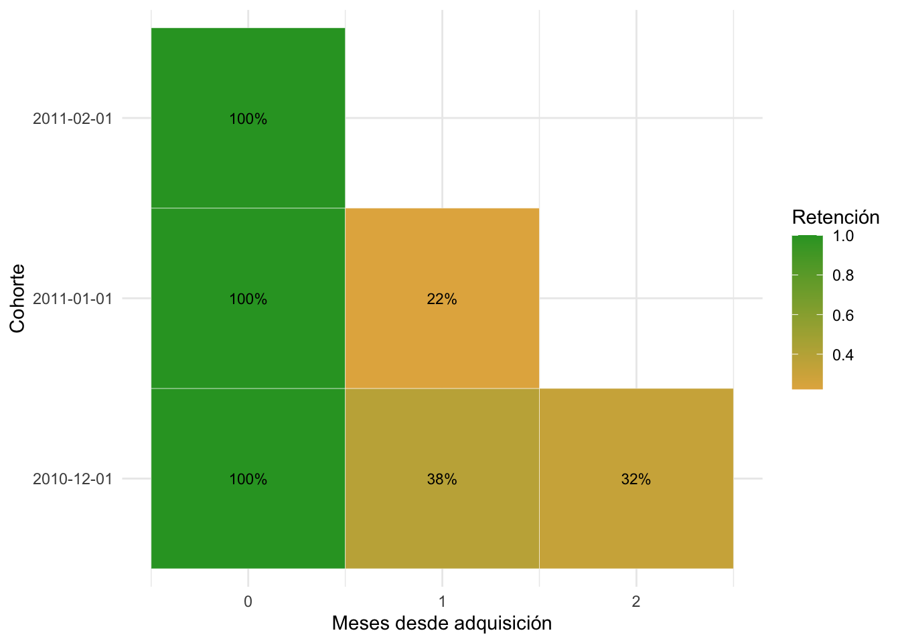
La interpretación es bastante obvia, ya que, como podemos ver en la matriz, los cohortes caen rápidamente después del primer periodo (para los dos primeros, ya que la última únicamente cuenta con un mes de observación adicional, por lo que todavía no existe suficiente información para evaluar su comportamiento en períodos posteriores), siendo que, por ejemplo, para los clientes cuya primera compra ocurrió en diciembre de 2010, únicamente el \(38\%\) volvió a realizar compras durante el siguiente mes, mientras que para el segundo mes la retención disminuyó aún más, alcanzando únicamente el \(32\%\), lo cual implica que aproximadamente dos terceras partes de los clientes originales dejaron de realizar compras recurrentes después de los primeros meses de actividad. Por su parte, para aquellos clientes que realizaron su primera compra en enero de 2011, la caída es incluso más pronunciada, ya que únicamente el \(22\%\) continuó comprando en el período siguiente. Comparando ambas cohortes, podríamos inferir preliminarmente que los clientes adquiridos en enero de 2011 presentaron un menor nivel de fidelización respecto a los captados en diciembre de 2010.
Este tipo de patrones resulta extremadamente útil dentro del análisis de clientes, ya que permite detectar diferencias importantes en el comportamiento de distintas generaciones de usuarios. Normalmente, cambios abruptos en las tasas de retención pueden estar asociados con campañas de adquisición menos efectivas o modificaciones en precios, aunque ese es otro análisis que se puede hacer de forma posterior a este último.
7.6.1.1 Lifetime value (CLV)
Una vez que entendemos cómo se comportan las distintas cohortes de clientes a lo largo del tiempo, surge naturalmente una pregunta todavía más importante desde el punto de vista del negocio: ¿Cuánto valor económico genera realmente un cliente durante toda su relación con la empresa? Precisamente, esta es la idea central detrás del concepto de Customer Lifetime Value (CLV), también conocido como Lifetime Value (LTV), una métrica que busca estimar el ingreso o beneficio esperado que un cliente aportará antes de abandonar definitivamente el producto o servicio (Fader and Hardie 2009).
Obviamente, el CLV tiene una enorme importancia en el negocio, ya que permite transformar el análisis de clientes en una herramienta directamente conectada con la toma de decisiones financieras y estratégicas, por ejemplo, conocer el valor esperado de un cliente permite determinar cuánto dinero puede invertirse razonablemente en adquisición, evaluar campañas de marketing, comparar segmentos de usuarios o incluso priorizar esfuerzos de retención sobre determinados grupos de clientes más rentables. Realmente, el CLV es bastante sencillo de entender, ya que no es más que la suma del valor económico esperado generado por un cliente durante todos los períodos en los que permanece activo.
Matemáticamente, si definimos:
- \(R_t\): Probabilidad de que el cliente continúe activo en el período \(t\).
- \(V_t\): Valor económico esperado generado en el período \(t\).
- \(T\): Horizonte temporal de análisis.
Entonces, podemos expresar al CLV como:
\[ CLV = \sum_{t=0}^{T} R_t \cdot V_t \]
Lo que de hecho nos dice que el valor esperado de un cliente depende simultáneamente de dos factores: La probabilidad de que el cliente continúe activo y el valor económico que genera mientras permanece activo. De hecho, esta formulación conecta directamente con el análisis de cohortes discutido anteriormente, ya que las tasas de retención calculadas para cada cohorte pueden utilizarse precisamente como estimaciones empíricas de \(R_t\).
En escenarios reales, el cálculo del CLV suele extenderse incorporando márgenes de utilidad y factores de descuento temporal, debido a que el dinero futuro posee menor valor presente que el dinero actual, por lo que una formulación más completa sería:
\[ CLV = \sum_{t=0}^{T} \frac{R_t \cdot M_t}{(1+d)^t} \]
Donde:
- \(M_t\): Representa el margen esperado generado por el cliente en el período \(t\).
- \(d\): Corresponde a la tasa de descuento.
- \((1+d)^t\): Ajusta el valor futuro al valor presente.
En este caso estamos cambiando ingresos por márgenes, ya que en práctica el CLV suele modelarse con utilidad y no con revenue bruto.
Ahora bien, el CLV no necesariamente debe calcularse a nivel individual. En muchos casos, el análisis se realiza por cohortes, utilizando promedios agregados, por ejemplo, si definimos a \(R_{k,\tau}\) como la tasa de retención de la cohorte \(k\) en el período relativo \(\tau\), y a \(V_{k,\tau}\) como el ingreso promedio generado por usuario de la cohorte \(k\) en el período \(\tau\), entonces, el valor esperado del cohorte puede estimarse mediante:
\[ CLV_k = \sum_{\tau=0}^{T} R_{k,\tau} \cdot V_{k,\tau} \]
Este enfoque permite comparar directamente la calidad económica de distintas generaciones de clientes, por ejemplo, un cohorte podría presentar menor volumen inicial de usuarios, pero un CLV significativamente superior debido a una mejor retención o mayor gasto promedio.
Supongamos la siguiente situación: Tenemos una empresa donde la retención mensual esperada es del \(80\%\), donde cada cliente genera \(\$100\) mensuales y el horizonte de análisis será del 4 meses, por lo que el CLV será:
\[ \begin{aligned} CLV &= 1.0(100) + 0.8(100) + 0.64(100) + 0.512(100) \\ &= 100 + 80 + 64 + 51.2 \\ &= 295.2 \end{aligned} \]
Es decir, que el valor esperado aproximado de cada cliente durante esos cuatro meses sería de \(\$295.2\).
Como es de esperarse, vamos ahora a calcular el CLV en R utilizando el mismo dataset de online_retail_sample trabajado anteriormente. En este caso, construiremos una versión relativamente sencilla del CLV, basada en ingresos acumulados promedio por cohorte y período de retención.
Primero, necesitamos calcular el valor monetario de cada transacción, y afortunadamente en el dataset tenemos las columnas Quantity y Price, por lo que el ingreso generado por cada línea será:
clv_data <-
cohort_data |>
mutate(
revenue = Quantity * Price
)Ahora, calcularemos el ingreso total generado por cada cohorte en cada período relativo:
cohort_revenue <-
clv_data |>
group_by(cohort_month, cohort_index) |>
summarise(
total_revenue = sum(revenue, na.rm = TRUE),
customers = n_distinct(`Customer ID`),
.groups = "drop"
)
cohort_revenue# A tibble: 6 × 4
cohort_month cohort_index total_revenue customers
<dttm> <dbl> <dbl> <int>
1 2010-12-01 00:00:00 0 554604. 948
2 2010-12-01 00:00:00 1 271617. 362
3 2010-12-01 00:00:00 2 221515. 307
4 2011-01-01 00:00:00 0 203458. 421
5 2011-01-01 00:00:00 1 54235. 94
6 2011-02-01 00:00:00 0 135065. 341Nótese que el ingreso promedio se calcula únicamente sobre clientes activos en cada período y, posteriormente, dicho valor se pondera mediante la tasa de retención, obteniendo así el valor esperado de ingreso por cliente original del cohorte.
Ahora bien, para calcular el CLV necesitamos obtener el ingreso promedio generado por usuario en cada período, por lo que para ello:
cohort_revenue <-
cohort_revenue |>
mutate(
revenue_per_customer = total_revenue / customers
)
cohort_revenue# A tibble: 6 × 5
cohort_month cohort_index total_revenue customers revenue_per_customer
<dttm> <dbl> <dbl> <int> <dbl>
1 2010-12-01 00:00:00 0 554604. 948 585.
2 2010-12-01 00:00:00 1 271617. 362 750.
3 2010-12-01 00:00:00 2 221515. 307 722.
4 2011-01-01 00:00:00 0 203458. 421 483.
5 2011-01-01 00:00:00 1 54235. 94 577.
6 2011-02-01 00:00:00 0 135065. 341 396.Posteriormente, incorporamos las tasas de retención obtenidas anteriormente mediante la tabla retention_table:
clv_table <-
retention_table |>
left_join(
cohort_revenue |>
dplyr::select(
cohort_month,
cohort_index,
revenue_per_customer
),
by = c("cohort_month", "cohort_index")
)
clv_table# A tibble: 6 × 6
cohort_month cohort_index customers cohort_size retention
<dttm> <dbl> <int> <int> <dbl>
1 2010-12-01 00:00:00 0 948 948 1
2 2010-12-01 00:00:00 1 362 948 0.382
3 2010-12-01 00:00:00 2 307 948 0.324
4 2011-01-01 00:00:00 0 421 421 1
5 2011-01-01 00:00:00 1 94 421 0.223
6 2011-02-01 00:00:00 0 341 341 1
# ℹ 1 more variable: revenue_per_customer <dbl>Y ahora si, podemos calcular directamente el CLV estimado por cohorte:
clv_summary <-
clv_table |>
mutate(
expected_value = retention * revenue_per_customer
) |>
group_by(cohort_month) |>
summarise(
CLV = sum(expected_value, na.rm = TRUE),
.groups = "drop"
)
clv_summary# A tibble: 3 × 2
cohort_month CLV
<dttm> <dbl>
1 2010-12-01 00:00:00 1105.
2 2011-01-01 00:00:00 612.
3 2011-02-01 00:00:00 396.Finalmente, podemos visualizar los resultados mediante un gráfico sencillo:
clv_summary |>
ggplot(aes(
x = cohort_month,
y = CLV
)) +
geom_col(fill = "#1f77b4") +
labs(
title = NULL,
x = "Cohorte",
y = "CLV estimado"
) +
theme_minimal()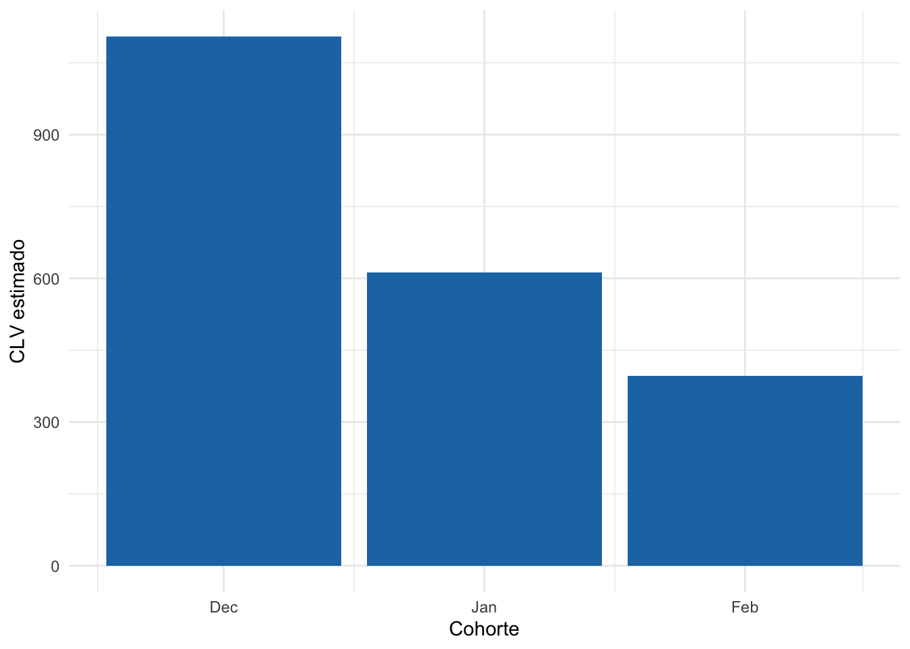
Teniendo una interpretación bastante trivial, por lo que no será necesario ahondar en ello, aunque si debemos tener cuidado al comparar cohortes recientes con cohortes antiguas, ya que las cohortes más nuevas poseen menos períodos observados y, por lo tanto, tienden naturalmente a presentar valores de CLV menores debido al truncamiento temporal de la información disponible.
7.6.2 Análisis de supervivencia
Aunque el análisis de cohortes y el CLV permiten entender cómo evolucionan los clientes a lo largo del tiempo, ambos enfoques suelen centrarse principalmente en métricas agregadas de retención o valor esperado, sin embargo, en muchos problemas reales el interés principal consiste específicamente en modelar el tiempo hasta que ocurre un evento determinado, por ejemplo: ¿cuánto tiempo tarda un cliente en abandonar el servicio?, ¿cuál es la probabilidad de que continúe activo después de cierto número de meses?, o ¿qué factores incrementan el riesgo de cancelación? Precisamente para responder este tipo de preguntas surge el análisis de supervivencia, una familia de técnicas estadísticas diseñada para estudiar el tiempo transcurrido hasta la ocurrencia de un evento (Kaplan and Meier 1958).
Originalmente, estas metodologías fueron desarrolladas dentro de áreas médicas y actuariales para estudiar tiempos hasta fallecimiento o recaídas de pacientes, aunque actualmente son ampliamente utilizadas en negocios, especialmente en problemas de customer churn, retención de usuarios, riesgo crediticio o duración de suscripciones. De hecho, conceptualmente el problema es prácticamente idéntico: en lugar de analizar el tiempo hasta la muerte de un paciente, analizamos el tiempo hasta que un cliente abandona la empresa.
Formalmente, definimos una variable aleatoria continua no negativa:
\[ T \geq 0 \]
Donde \(T\) representa el tiempo hasta que ocurre el evento de interés. En contexto empresarial, este evento normalmente corresponde al abandono del cliente (churn), cancelación de suscripción o inactividad prolongada.
Uno de los conceptos centrales dentro del análisis de supervivencia es la función de supervivencia, la cual representa la probabilidad de que el evento todavía no haya ocurrido después de cierto tiempo \(t\). Matemáticamente:
\[ S(t) = P(T > t) \]
Es decir, \(S(t)\) representa la probabilidad de que el cliente continúe activo después del tiempo \(t\), por ejemplo, si tuvieramos un \(S(6) = 0.70\), entonces estaríamos diciendo que existiría una probabilidad del \(70%\) de que un cliente permanezca activo después de seis meses.
Ahora bien, la función de supervivencia posee algunas propiedades importantes:
- \(S(0)=1\), ya que inicialmente ningún cliente ha abandonado.
- \(S(t)\) es monótonamente decreciente.
- \(\lim_{t \to \infty} S(t)=0\).
Otro concepto fundamental que debemos considerar es la función de riesgo, ya que mide la probabilidad instantánea de que ocurra el evento dado que el individuo ha sobrevivido hasta el tiempo \(t\). Matemáticamente:
\[ h(t) = \lim_{\Delta t \to 0} \frac{ P(t \leq T < t+\Delta t \mid T \geq t) }{ \Delta t } \]
Esta función representa el riesgo instantáneo de abandono. Ciertamente, en análisis de clientes resulta particularmente útil porque permite detectar momentos donde los usuarios tienen mayor probabilidad de cancelar el servicio, por ejemplo, durante los primeros días de uso, después de finalizar un período gratuito o tras incrementos de precio. De hecho, una relación interesante que hay entre ambas funciones es:
\[ S(t) = \exp\left( -\int_0^t h(u)\,du \right) \]
Lo que implica que la supervivencia acumulada depende directamente del riesgo de abandono a lo largo del tiempo.
En aplicaciones reales, uno de los problemas más importantes dentro del análisis de supervivencia es la presencia de censura (censoring), situación que ocurre cuando para algunos individuos el evento todavía no ha sucedido al finalizar el período de observación, por ejemplo, si un cliente continúa activo al momento de realizar el análisis, no sabemos exactamente cuándo abandonará en el futuro, únicamente sabemos que sobrevivió al menos hasta cierto punto temporal. C
Como experiencia personal, esto me ocurrió en diversos análisis que realicé en trabajos anteriores, ya que la información llegaba continuamente en tiempo real y no existía una forma directa de saber cuándo un cliente había decidido abandonar definitivamente los servicios de la empresa. En esos casos, nuestro mejor indicador consistía simplemente en observar períodos prolongados de inactividad; por ejemplo, asumir que un cliente había abandonado después de al menos tres meses sin solicitar servicios, una regla completamente empírica pero bastante común en problemas reales de negocio.
Este detalle es sumamente importante, ya que métodos tradicionales como regresión lineal o promedios simples normalmente manejan incorrectamente este tipo de información. Precisamente una de las grandes ventajas del análisis de supervivencia es que incorpora de forma orgánica observaciones censuradas sin introducir sesgos importantes.
Uno de los métodos más utilizados para estimar empíricamente la función de supervivencia es el estimador de Kaplan-Meier, definido como:
\[ \hat{S}(t)= \prod_{t_i \leq t} \left( 1 - \frac{d_i}{n_i} \right) \]
Donde:
- \(t_i\): Instantes donde ocurre al menos un evento.
- \(d_i\): Número de eventos ocurridos en \(t_i\).
- \(n_i\): Número de individuos en riesgo justo antes de \(t_i\).
La lógica del estimador es muy sencilla, ya que en cada instante temporal calculamos la proporción de individuos que sobreviven y posteriormente multiplicamos dichas probabilidades acumulativamente.
Vamos ahora a realizar un ejemplo sencillo en R utilizando nuevamente el dataset online_retail_sample. En este caso, construiremos una aproximación básica donde consideraremos que un cliente abandonó si deja de realizar compras dentro del período observado (para evitar ambiguedades respecto a si un cliente es o no es realmente inactivo). Comencemos por calcular para cada cliente la fecha de su primera compra, fecha de su última compra y el tiempo total observado como cliente:
survival_data <-
cohort_data |>
group_by(`Customer ID`) |>
summarise(
first_purchase = min(InvoiceDate),
last_purchase = max(InvoiceDate),
.groups = "drop"
) |>
mutate(
survival_time =
interval(first_purchase, last_purchase) %/% months(1)
)
survival_data |>
head()# A tibble: 6 × 4
`Customer ID` first_purchase last_purchase survival_time
<dbl> <dttm> <dttm> <dbl>
1 12346 2011-01-18 10:01:00 2011-01-18 10:17:00 0
2 12347 2010-12-07 14:57:00 2011-01-26 14:30:00 1
3 12348 2010-12-16 19:09:00 2011-01-25 10:42:00 1
4 12350 2011-02-02 16:01:00 2011-02-02 16:01:00 0
5 12352 2011-02-16 12:33:00 2011-02-16 12:33:00 0
6 12356 2011-01-18 09:50:00 2011-01-18 09:50:00 0En este ejemplo simplificado asumiremos que todos los clientes cuyo último evento ocurrió antes del final del dataset menos diez días abandonaron el servicio. Para ello, identificamos la fecha máxima observada:
max_date <- max(cohort_data$InvoiceDate) %m-% days(10)Y construimos una variable binaria indicando si el evento ocurrió:
survival_data <-
survival_data |>
mutate(
event =
if_else(
last_purchase < max_date,
1,
0
)
)Donde event = 1 indica abandono observado y event = 0 indica el caso contrario. Ahora podemos ajustar el modelo de Kaplan-Meier utilizando la librería survival:
library(survival)
km_fit <-
survfit(
Surv(survival_time, event) ~ 1,
data = survival_data
)
summary(km_fit)Call: survfit(formula = Surv(survival_time, event) ~ 1, data = survival_data)
time n.risk n.event survival std.err lower 95% CI upper 95% CI
0 1710 1025 0.401 0.0118 0.378 0.424
1 501 219 0.225 0.0111 0.205 0.248
2 239 85 0.145 0.0100 0.127 0.166Donde la función Surv() construye el objeto de supervivencia utilizando el tiempo observado y el indicador de evento, mientras que survfit() estima la curva de supervivencia empírica.
Como podemos ver, en el tiempo \(t=0\), existían inicialmente \(1710\) clientes observados, de los cuales \(1025\) fueron clasificados como abandono en el período inicial, por lo que la probabilidad estimada de supervivencia inmediatamente después de este primer intervalo es de \(\hat{S}(0) = 0.401\), es decir, únicamente aproximadamente el \(40.1\%\) de los clientes permanecieron activos después del período inicial, mientras que para el periodo \(t=1\) la probabilidad de supervivencia disminuye aún más hasta \(\hat{S}(1)=0.225\), indicando que solamente el \(22.5\%\) de los clientes originales continuaban activos después de un período adicional. Posteriormente, para \(t=2\), la supervivencia estimada cae hasta \(\hat{S}(2)=0.145\), lo que implica que únicamente el \(14.5\%\) de los clientes permanecían activos después de dos períodos de observación.
Finalmente, podemos visualizar los resultados:
km_fit <-
survfit(
Surv(survival_time, event) ~ 1,
data = survival_data
)
km_data <- tibble(
time = km_fit$time,
surv = km_fit$surv,
upper = km_fit$upper,
lower = km_fit$lower
)
km_data |>
ggplot(aes(x = time, y = surv)) +
geom_step(color = "#1f77b4",linewidth = 1) +
geom_step(aes(y = upper),linetype = "dashed",color = "#1f77b4") +
geom_step(aes(y = lower),linetype = "dashed",color = "#1f77b4") +
labs(x = "Meses",y = "Probabilidad de supervivencia") +
theme_minimal()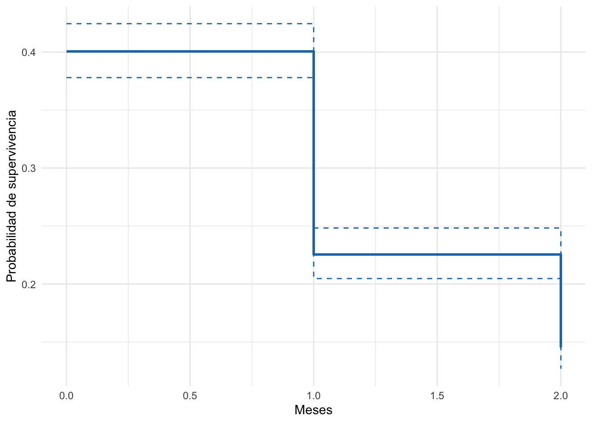
Y si, este gráfico es muy directo respecto a su interpretación, ya que nos está diciendo lo mismo que vimos anteriormente, las probabilidades de supervivencia de clientes para cada periodo.
En conjunto, todas estas herramientas permiten construir una visión mucho más completa del comportamiento de los clientes dentro de una empresa. Mientras el análisis de cohortes facilita identificar patrones de retención y diferencias entre generaciones de usuarios, el CLV conecta directamente dicho comportamiento con el impacto económico esperado, y el análisis de supervivencia incorpora además una perspectiva probabilística sobre el riesgo de abandono a lo largo del tiempo.
7.7 Optimización y decisiones de negocio
Hasta este punto, gran parte del análisis desarrollado se ha enfocado en construir modelos capaces de describir relaciones entre variables, explicar fenómenos y generar pronósticos sobre distintos escenarios futuros. Sin embargo, en un entorno de negocios real, obtener predicciones no suele ser el objetivo final, sino únicamente un insumo para tomar mejores decisiones. Saber cuánto demandará un producto, cuáles clientes tienen mayor probabilidad de abandono o qué factores afectan los ingresos resulta útil solamente si esta información puede traducirse en acciones concretas que permitan asignar recursos de manera más eficiente, reducir costos o maximizar beneficios.
Aquí es donde entran los modelos de optimización. Mientras que los modelos predictivos intentan responder preguntas del tipo ¿qué probablemente ocurrirá?, la optimización busca responder ¿qué deberíamos hacer?. Es probable que, si llevaste clases de optimización lineal en tu carrera o posgrado, ya hayas visto ejercicios de optimización, por lo que ya estarás familizarizado con los siguientes temas.
Ahora bien, un problema de optimización consiste en encontrar la mejor decisión posible dentro de un conjunto de alternativas factibles, considerando restricciones operativas, financieras o logísticas. Estas restricciones pueden representar límites de capacidad, presupuestos disponibles, disponibilidad de inventario, tiempos de producción o cualquier condición que el negocio deba cumplir. Dentro de este contexto, la optimización lineal ocupa un lugar central debido a su simplicidad matemática. En este tipo de modelos, tanto la función objetivo como las restricciones se expresan mediante relaciones lineales, permitiendo resolver problemas complejos de forma eficiente incluso cuando existen miles de variables involucradas y, gracias a ello, la programación lineal se ha convertido en una herramienta clave en áreas como logística, finanzas, manufactura, marketing, planeación de producción y administración de operaciones.
7.7.1 Optimización lineal
La optimización lineal básicamente consiste en maximizar o minimizar una función objetivo lineal respetando ciertas condiciones también expresadas de forma lineal. Estas restricciones representan limitaciones reales del problema, tales como presupuestos, capacidad de producción, disponibilidad de recursos, demanda mínima, tiempos de trabajo o restricciones logísticas. Gracias a esta estructura, es posible modelar matemáticamente una enorme cantidad de problemas empresariales y resolverlos de manera eficiente mediante algoritmos especializados (Dantzig 1963).
Formalmente, un problema de programación lineal puede escribirse como:
\[ \text{Optimizar } Z = c_1x_1 + c_2x_2 + \cdots + c_nx_n \]
Sujeto a:
\[ a_{11}x_1 + a_{12}x_2 + \cdots + a_{1n}x_n \leq b_1 \]
\[ a_{21}x_1 + a_{22}x_2 + \cdots + a_{2n}x_n \leq b_2 \]
\[ \vdots \]
\[ a_{m1}x_1 + a_{m2}x_2 + \cdots + a_{mn}x_n \leq b_m \]
Con:
\[ x_j \geq 0 \;\;\;\; \forall j \]
Donde:
- \(Z\) Representa la función objetivo.
- \(x_1, x_2, \dots, x_n\) Son las variables de decisión.
- \(c_j\) Representa el beneficio o costo asociado a cada variable.
- \(a_{ij}\) Indica cuánto recurso consume cada variable.
- \(b_i\) Representa la disponibilidad máxima del recurso \(i\).
La estructura anterior puede interpretarse geométricamente como la búsqueda del mejor punto dentro de una región factible definida por múltiples restricciones lineales. De hecho, una propiedad importante de los problemas lineales es que, cuando existe solución óptima, esta suele encontrarse en alguno de los vértices de dicha región factible, razón por la cual algoritmos como el método Simplex (Hillier and Lieberman 2024) resultan altamente eficientes incluso en problemas de gran escala, además de ser un método bastante utilizado, por lo que en internet encontrarás múltiples calculadoras de este mismo, como la disponible en emathhelp. Claro que usar una calculadora de internet puede parecer mucho más fácil al principio, pero eso es precisamente la parte más interesante de aplicar este método en R, ya que podemos escalarlo mucho más si aplicamos nosotros mismos el código.
Uno de los aspectos más importantes de estos modelos es que permiten incorporar directamente información proveniente de modelos predictivos, por ejemplo, un pronóstico de demanda obtenido mediante series de tiempo puede utilizarse como restricción o parámetro dentro de un problema de optimización, integrando así predicción y toma de decisiones dentro de un mismo flujo analítico.
7.7.1.1 Problemas de asignación y transporte
Dentro de los problemas clásicos de optimización lineal, dos de los más importantes y utilizados en negocios son los problemas de asignación y transporte. Ambos representan situaciones donde existe la necesidad de distribuir recursos de manera eficiente minimizando costos o maximizando productividad (Winston 2004).
El problema de asignación consiste en determinar la mejor manera de asignar recursos a tareas específicas. Usualmente, buscamos asignar trabajadores a proyectos, máquinas a procesos, vendedores a zonas geográficas o vehículos a rutas, procurando minimizar tiempos, costos o pérdidas. La característica fundamental de este problema es que cada recurso suele asignarse a una única tarea y viceversa. Matemáticamente, si definimos:
\[ x_{ij} = \begin{cases} 1 & \text{si el recurso } i \text{ es asignado a la tarea } j \\ 0 & \text{en otro caso} \end{cases} \]
Entonces, el problema puede expresarse como:
\[ \min \sum_{i=1}^{n} \sum_{j=1}^{n} c_{ij}x_{ij} \]
Sujeto a:
\[ \sum_{j=1}^{n} x_{ij} = 1 \;\;\;\; \forall i \]
\[ \sum_{i=1}^{n} x_{ij} = 1 \;\;\;\; \forall j \]
\[ x_{ij} \in \{0,1\} \]
Donde:
- \(c_{ij}\): Representa el costo de asignar el recurso \(i\) a la tarea \(j\).
- Las restricciones garantizan que cada recurso sea asignado exactamente a una tarea y cada tarea reciba exactamente un recurso.
Por otro lado, el problema de transporte busca determinar cómo mover mercancías desde distintos puntos de origen hacia distintos destinos minimizando el costo total de distribución. Este modelo es extremadamente importante en logística y, de hecho, en trabajos previos tuve el privilegio de trabajar en una empresa de logística, donde se utilizaban estos métodos constantemente para minimizar costos.
Supongamos ahora que contamos con:
- \(m\) centros de distribución.
- \(n\) puntos de demanda.
- \(s_i\) unidades disponibles en el origen \(i\).
- \(d_j\) demanda requerida en el destino \(j\).
- \(c_{ij}\) costo de transportar una unidad desde \(i\) hacia \(j\).
Definimos entonces la variable:
\[ x_{ij} = \text{cantidad transportada desde el origen } i \text{ al destino } j \]
El problema puede formularse como:
\[ \min \sum_{i=1}^{m} \sum_{j=1}^{n} c_{ij}x_{ij} \]
Sujeto a las restricciones de oferta:
\[ \sum_{j=1}^{n} x_{ij} \leq s_i \;\;\;\; \forall i \]
Y las restricciones de demanda:
\[ \sum_{i=1}^{m} x_{ij} \geq d_j \;\;\;\; \forall j \]
Con:
\[ x_{ij} \geq 0 \]
Para este modelo, lo que buscamos será satisfacer toda la demanda utilizando la capacidad disponible al menor costo posible. Dependiendo del contexto, el problema puede incorporar restricciones adicionales relacionadas con capacidad máxima de rutas, tiempos de entrega, penalizaciones, inventarios mínimos o limitaciones geográficas.
Vamos ahora a simular un ejemplo en R, resolviendo un pequeño problema de transporte mediante programación lineal. Supongamos que una empresa cuenta con tres centros de distribución \((A, B, C)\) desde los cuales debe abastecer cuatro tiendas \((T1, T2, T3, T4)\), siendo que cada centro posee una capacidad máxima de unidades disponibles, mientras que cada tienda requiere una cierta cantidad de producto, además, transportar mercancía entre cada centro y cada tienda tiene un costo distinto. Comencemos definiendo la matriz de costos de transporte:
costos <- matrix(c(
4, 6, 8, 13,
5, 11, 9, 7,
6, 8, 5, 3
),
nrow = 3,
byrow = TRUE)
rownames(costos) <- c("A", "B", "C")
colnames(costos) <- c("T1", "T2", "T3", "T4")
costos T1 T2 T3 T4
A 4 6 8 13
B 5 11 9 7
C 6 8 5 3Ahora definimos la capacidad disponible de cada centro de distribución:
oferta <- c(120, 100, 80)
names(oferta) <- c("A", "B", "C")
oferta A B C
120 100 80 Así como la demanda requerida por cada tienda:
demanda <- c(70, 90, 80, 60)
names(demanda) <- c("T1", "T2", "T3", "T4")
demandaT1 T2 T3 T4
70 90 80 60 Como puedes observar, la oferta total es igual a la demanda total:
sum(oferta)[1] 300sum(demanda)[1] 300Por lo tanto, nos encontramos ante un problema de transporte balanceado. Vamos ahora a resolver el problema utilizando el paquete lpSolve, que permite resolver problemas de programación lineal de forma relativamente sencilla en R. Para ello, primero debemos transformar la matriz de costos en un vector, ya que el solucionador trabaja internamente con vectores de variables de decisión:
costos_vector <- as.vector(t(costos))
costos_vector [1] 4 6 8 13 5 11 9 7 6 8 5 3Ahora construiremos las restricciones del modelo. Comenzaremos con las restricciones de oferta, que garantizan que cada centro no envíe más unidades de las que tiene disponibles:
restricciones_oferta <- matrix(0, nrow = 3, ncol = 12)
restricciones_oferta[1, 1:4] <- 1
restricciones_oferta[2, 5:8] <- 1
restricciones_oferta[3, 9:12] <- 1
restricciones_oferta [,1] [,2] [,3] [,4] [,5] [,6] [,7] [,8] [,9] [,10] [,11] [,12]
[1,] 1 1 1 1 0 0 0 0 0 0 0 0
[2,] 0 0 0 0 1 1 1 1 0 0 0 0
[3,] 0 0 0 0 0 0 0 0 1 1 1 1Posteriormente, generamos las restricciones de demanda, asegurando que cada tienda reciba exactamente las unidades requeridas:
restricciones_demanda <- matrix(0, nrow = 4, ncol = 12)
restricciones_demanda[1, c(1,5,9)] <- 1
restricciones_demanda[2, c(2,6,10)] <- 1
restricciones_demanda[3, c(3,7,11)] <- 1
restricciones_demanda[4, c(4,8,12)] <- 1
restricciones_demanda [,1] [,2] [,3] [,4] [,5] [,6] [,7] [,8] [,9] [,10] [,11] [,12]
[1,] 1 0 0 0 1 0 0 0 1 0 0 0
[2,] 0 1 0 0 0 1 0 0 0 1 0 0
[3,] 0 0 1 0 0 0 1 0 0 0 1 0
[4,] 0 0 0 1 0 0 0 1 0 0 0 1Combinamos ahora todas las restricciones del problema:
restricciones <- rbind(
restricciones_oferta,
restricciones_demanda
)
restricciones [,1] [,2] [,3] [,4] [,5] [,6] [,7] [,8] [,9] [,10] [,11] [,12]
[1,] 1 1 1 1 0 0 0 0 0 0 0 0
[2,] 0 0 0 0 1 1 1 1 0 0 0 0
[3,] 0 0 0 0 0 0 0 0 1 1 1 1
[4,] 1 0 0 0 1 0 0 0 1 0 0 0
[5,] 0 1 0 0 0 1 0 0 0 1 0 0
[6,] 0 0 1 0 0 0 1 0 0 0 1 0
[7,] 0 0 0 1 0 0 0 1 0 0 0 1Y, por su parte, definimos los operadores de restricción:
direcciones <- c(
"<=", "<=", "<=",
"=", "=", "=", "="
)
direcciones[1] "<=" "<=" "<=" "=" "=" "=" "=" Y, finalmente, el lado derecho de las restricciones:
rhs <- c(oferta, demanda)
rhs A B C T1 T2 T3 T4
120 100 80 70 90 80 60 Con ello, ya podemos resolver el problema de optimización:
library(lpSolve)
solucion <- lp(
direction = "min",
objective.in = costos_vector,
const.mat = restricciones,
const.dir = direcciones,
const.rhs = rhs
)
solucionSuccess: the objective function is 1680 El valor de objective = 1630 representa el costo mínimo total de transporte que satisface toda la demanda respetando las restricciones de capacidad.
Ahora vamos a reconstruir la solución en formato matricial para interpretar más fácilmente los resultados:
solucion_matriz <- matrix(
solucion$solution,
nrow = 3,
byrow = TRUE
)
rownames(solucion_matriz) <- c("A", "B", "C")
colnames(solucion_matriz) <- c("T1", "T2", "T3", "T4")
solucion_matriz T1 T2 T3 T4
A 30 90 0 0
B 40 0 0 60
C 0 0 80 0Si calculamos manualmente el costo total basado en la matriz de solución:
(30*4)+(90*6)+(40*5)+(60*7)+(80*5)[1] 1680Lo que de hecho concuerda con la solución dada por la función lp().
Por supuesto, podemos ejemplificar gráficamente como se vería esta minimización de costos en una sencilla curva:
# Secuencia artificial de soluciones posibles
x <- seq(0, 300, by = 1)
# Función convexa simulada
costo <- 0.02 * (x - 180)^2 + 1680
costos_df <- data.frame(
unidades = x,
costo = costo
)
# Punto óptimo
punto_optimo <- data.frame(
unidades = 180,
costo = 1680
)
costos_df |>
ggplot(aes(x = unidades, y = costo)) +
geom_line(linewidth = 1, color = "#4167ba") +
geom_point(
data = punto_optimo,
aes(x = unidades, y = costo), color = "#c74a4a", size = 3) +
geom_vline(xintercept = 180,linetype = "dashed",color = "gray40") +
labs(x = "Unidades transportadas",y = "Costo total") +
theme_minimal()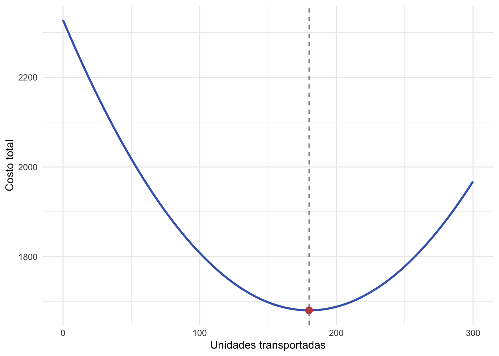
Lo que estamos viendo es, simplemente, el punto óptimo que minimiza los costos de transporte, el cual calculamos anteriormente a partir de las restricciones establecidas. Y si, aunque parezca muy simple, este cálculo posiblemente le va a generar más ganancias a una empresa que lo que podría generar un pronóstico utilizando métodos de ML. A veces la simplicidad es lo que mejor funciona en entornos corporativos, cuando el problema a resolver lo amerita.
7.7.1.2 Maximización de ingresos
Hasta ahora hemos trabajado principalmente con problemas donde el objetivo consiste en minimizar costos, como sucede en los modelos de transporte y logística, sin embargo, dentro del contexto empresarial, muchos problemas de optimización buscan exactamente lo contrario: Maximizar ingresos, utilidades o beneficios esperados. De hecho, ambos enfoques son conceptualmente equivalentes, ya que la programación lineal simplemente intenta encontrar la mejor combinación posible de decisiones bajo ciertas restricciones operativas.
Básicamente, los problemas de maximización aparecen constantemente en áreas como planeación de producción, asignación de presupuestos de marketing, selección de portafolios, fijación de precios, administración de inventarios o mezcla óptima de productos, y la lógica general es muy simple: El negocio dispone de recursos limitados y debe decidir cómo utilizarlos para obtener el mayor beneficio posible (Winston 2004).
Matemáticamente, un problema de maximización puede representarse como:
\[ \max Z = c_1x_1 + c_2x_2 + \cdots + c_nx_n \]
Sujeto a las mismas restricciones lineales que vimos en la explicación anterior:
\[ a_{11}x_1 + a_{12}x_2 + \cdots + a_{1n}x_n \leq b_1 \]
\[ a_{21}x_1 + a_{22}x_2 + \cdots + a_{2n}x_n \leq b_2 \]
\[ \vdots \]
\[ a_{m1}x_1 + a_{m2}x_2 + \cdots + a_{mn}x_n \leq b_m \]
Con:
\[ x_j \geq 0 \;\;\;\; \forall j \]
Solo que, en este caso:
- \(Z\) Representa el ingreso o utilidad total (la función objetivo).
- \(x_j\) Son las variables de decisión.
- \(c_j\) Representa la ganancia obtenida por cada unidad producida o vendida.
- Las restricciones representan recursos limitados del sistema.
Supongamos ahora que una empresa fabrica dos productos: Producto A y Producto B. Cada producto genera una utilidad distinta y consume diferentes cantidades de recursos productivos, por lo que la empresa desea determinar cuántas unidades producir de cada producto para maximizar sus ganancias semanales.
La información disponible es la siguiente:
| Recurso | Producto A | Producto B | Disponibilidad |
|---|---|---|---|
| Horas de máquina | 2 | 1 | 100 |
| Horas de mano de obra | 1 | 3 | 90 |
Además, ada unidad del Producto A genera una utilidad de \(\$40\), mientras que cada unidad del Producto B genera una utilidad de \(\$50\), por lo que podemos definir las variables de decisión:
- \(x_1\): unidades a producir del Producto A.
- \(x_2\): unidades a producir del Producto B.
Por lo tanto, la función objetivo será:
\[ \max Z = 40x_1 + 50x_2 \]
Sujeta a las restricciones de capacidad:
\[ 2x_1 + x_2 \leq 100 \]
\[ x_1 + 3x_2 \leq 90 \]
Y:
\[ x_1, x_2 \geq 0 \]
Vamos a resolver este problema utilizando nuevamente lpSolve en R. Como primer paso, vamos a definir los coeficientes de la función objetivo:
beneficios <- c(40, 50)Ahora definimos la matriz de restricciones:
restricciones <- matrix(c(
2, 1,
1, 3
),
nrow = 2,
byrow = TRUE)
restricciones [,1] [,2]
[1,] 2 1
[2,] 1 3Por su parte, definimos las direcciones de las restricciones:
direcciones <- c("<=", "<=")
direcciones[1] "<=" "<="Y el lado derecho de las restricciones:
rhs <- c(100, 90)
rhs[1] 100 90Con ello, podemos resolver sencillamente el problema:
solucion <- lp(
direction = "max",
objective.in = beneficios,
const.mat = restricciones,
const.dir = direcciones,
const.rhs = rhs
)
solucionSuccess: the objective function is 2480 El valor de objective = 2480 representa la utilidad máxima alcanzable bajo las restricciones de capacidad disponibles. Para clarificar aún más la solución, podemos observar directamente cuántas unidades de cada producto deben producirse:
solucion$solution[1] 42 16Y, manualmente, calcular la utilidad máxmia:
(42 * 40) + (16 * 50)[1] 2480Finalmente, podemos visualizar este comportamiento mediante un gráfico sencillo en R:
x <- seq(0, 100, by = 1)
restriccion1 <- 100 - 2*x
restriccion2 <- (90 - x)/3
df <- tibble(
x = x,
r1 = restriccion1,
r2 = restriccion2
)
# Punto óptimo aproximado
optimo <- tibble(
x = 42,
y = 16
)
ggplot(df, aes(x = x)) +
geom_line(aes(y = r1), linewidth = 1, color = "#4167ba") +
geom_line(aes(y = r2), linewidth = 1, color = "#4167ba") +
geom_point(
data = optimo,
aes(x = x, y = y),
size = 3, color = "#c74a4a") +
coord_cartesian(xlim = c(0, 60), ylim = c(0, 40)) +
labs(x = "Producto A", y = "Producto B") +
theme_minimal()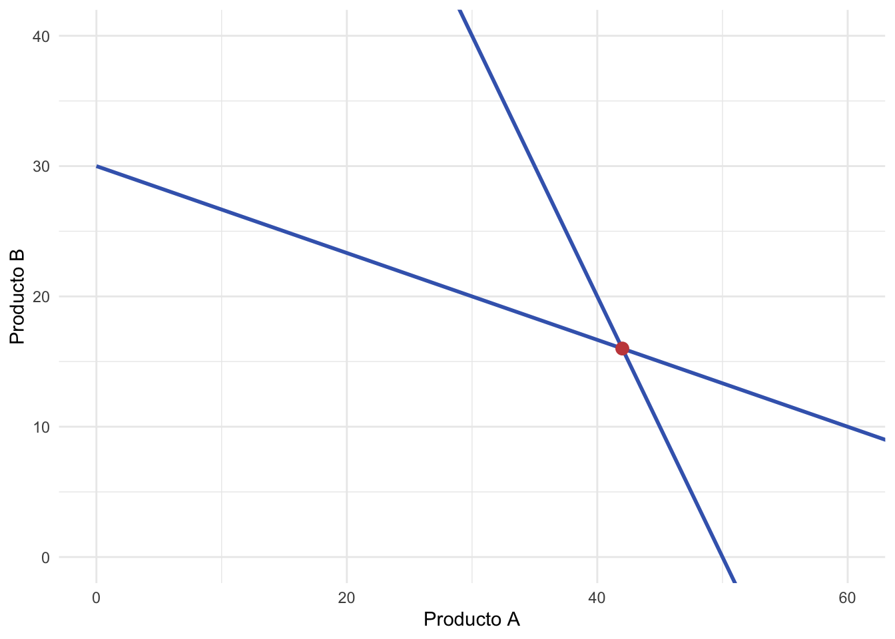
Como podemos observar, la solución óptima se encuentra precisamente en la intersección de las restricciones activas, es decir, en el punto donde los recursos disponibles son utilizados de la manera más eficiente posible para maximizar la utilidad total.
7.8 Simulación de escenarios
Hasta este punto, gran parte del análisis desarrollado se ha enfocado en construir modelos capaces de describir relaciones entre variables, estimar parámetros y generar pronósticos a partir de datos históricos, sin embargo, en situaciones más realistas que te encontrarás en tu entorno laboral (en áreas como el negocio, economía, finanzas o ingeniería), rara vez existe un único resultado posible. Incluso cuando contamos con modelos predictivos razonablemente precisos, sigue existiendo incertidumbre respecto al comportamiento futuro de las variables involucradas, razón por la que surge la necesidad de trabajar con simulación de escenarios, una herramienta que permite analizar múltiples resultados potenciales bajo distintos supuestos y condiciones.
La simulación de escenarios consiste en generar distintos estados posibles del sistema que estamos estudiando, modificando parámetros, distribuciones o supuestos probabilísticos para observar cómo cambian los resultados, por lo que en lugar de obtener únicamente una predicción puntual, este enfoque permite construir distribuciones completas de posibles resultados, cuantificar incertidumbre y evaluar riesgos asociados a diferentes decisiones estratégicas.
Dentro del contexto de simulaciones, uno de los enfoques más utilizados es la simulación de Monte Carlo (y debo confesar que siempre que escucho ese nombre no puedo evitar pensar en casinos), técnica que utiliza generación aleatoria de variables para modelar fenómenos inciertos y aproximar comportamientos complejos mediante repetidas simulaciones. A partir de ello, es posible estimar probabilidades de pérdida, rangos esperados de desempeño, sensibilidad ante cambios en parámetros y escenarios extremos.
En las siguientes secciones desarrollaremos los fundamentos de las simulaciones de Monte Carlo, así como su aplicación en la evaluación de riesgos y la toma de decisiones estratégicas bajo incertidumbre.
7.8.1 Monte Carlo y simulaciones sencillas
La simulación de Monte Carlo es una técnica computacional utilizada para aproximar el comportamiento de sistemas complejos mediante generación repetida de variables aleatorias. La idea central detrás de este enfoque es muy sencilla: Si un fenómeno depende de variables inciertas, entonces podemos modelar dichas variables mediante distribuciones de probabilidad y generar múltiples escenarios posibles para observar cómo se comporta el sistema en promedio y bajo condiciones extremas (Metropolis and Ulam 1949).
Básicamente, este método busca aproximar el valor esperado de una función aleatoria mediante simulación. Supongamos que tenemos una variable aleatoria \(X\) con distribución conocida y una función \(g(X)\) que representa el resultado de interés, por lo que el valor esperado puede definirse como:
\[ \mathbb{E}[g(X)] = \int g(x) f(x) \, dx \]
Donde:
- \(f(x)\): Es la función de densidad de probabilidad de \(X\).
- \(g(x)\): Representa la transformación o resultado que queremos analizar.
En muchos casos reales, resolver esta integral analíticamente resulta imposible o extremadamente complejo, razón por la que la simulación de Monte Carlo aproxima este valor esperado mediante muestras aleatorias independientes:
\[ \hat{\mu}_n = \frac{1}{n} \sum_{i=1}^{n} g(X_i) \]
Donde:
- \(X_i\) representa la observación simulada número \(i\).
- \(n\) es el número total de simulaciones.
Y, por ley de los grandes números, sabemos que:
\[ \hat{\mu}_n \xrightarrow[n \to \infty]{} \mathbb{E}[g(X)] \]
Es decir, conforme incrementamos el número de simulaciones, el promedio muestral converge al valor esperado real del sistema.
Una de las aplicaciones más comunes consiste en simular trayectorias acumuladas de capital, ingresos o retornos financieros. De hecho, yo mismo llegué a crear aplicaciones con simulaciones de Monte Carlo para pruebas técnicas en posiciones de Business Analyst. Para estos casos, normalmente se modelan eventos aleatorios repetidos en el tiempo, donde cada observación modifica el estado acumulado del sistema, por ejemplo, supongamos ahora que definimos una variable aleatoria de retornos:
\[ R_i = \begin{cases} W_i & \text{con probabilidad } p \\ L_i & \text{con probabilidad } 1-p \end{cases} \]
Donde:
- \(W_i\) Representa una ganancia aleatoria.
- \(L_i\) Representa una pérdida aleatoria.
- \(p\) Es la probabilidad de éxito (win rate).
A partir de ello, podemos definir el capital acumulado en el tiempo como:
\[ C_t = C_0 + \sum_{i=1}^{t} R_i \]
Donde:
- \(C_0\) es el capital inicial.
- \(R_i\) representa el resultado de cada evento.
- \(C_t\) es el capital acumulado tras \(t\) iteraciones.
En este tipo de simulaciones, cada trayectoria representa un escenario posible del comportamiento futuro del sistema, donde al repetirlo cientos o miles de veces, obtenemos una distribución de resultados potenciales, permitiendo analizar no solo el promedio esperado, sino también dispersión, riesgo y escenarios extremos.
Vamos ahora a desarrollar una simulación sencilla en R, modelando múltiples trayectorias posibles de un sistema de trading mediante simulación de Monte Carlo. Comencemos por definir los parámetros base de la simulación:
set.seed(123)
capital_inicial <- 20000
n_trades <- 400
n_simulaciones <- 500
win_rate <- 0.55
avg_win <- 300
avg_loss <- -200
sd_win <- 150
sd_loss <- 100Que no son más que el capital inicial, el número de operaciones simuladas, el número de trayectorias Monte Carlo, la probabilidad de éxito, la ganancia/pérdida promedio y la volatilidad de ganancias y pérdidas.
Ahora, construimos una función que genera una sola trayectoria de capital:
simular_equity <- function(n_trades,capital_inicial,win_rate,
avg_win,avg_loss,sd_win,sd_loss) {
resultados <- ifelse(
runif(n_trades) < win_rate,
rnorm(
n_trades,
mean = avg_win,
sd = sd_win
),
rnorm(
n_trades,
mean = avg_loss,
sd = sd_loss
)
)
cumsum(c(capital_inicial, resultados))
}Antes de lanzar cientos de simulaciones, tiene sentido generar una sola trayectoria para entender qué hace la función:
sim_1 <- simular_equity(n_trades, capital_inicial,
win_rate, avg_win, avg_loss,
sd_win, sd_loss)
head(sim_1)[1] 20000.00 20629.82 20427.09 20687.32 20335.71 20214.75Ahora, si graficamos este caso:
df_sim_1 <- tibble(
trade = 0:n_trades,
equity = sim_1
)
df_sim_1 |>
ggplot(aes(x = trade, y = equity)) +
geom_line(color = "#4167ba", linewidth = 1) +
labs(x = "Número de operaciones",
y = "Capital acumulado",
title = NULL) +
theme_minimal(base_size = 11) 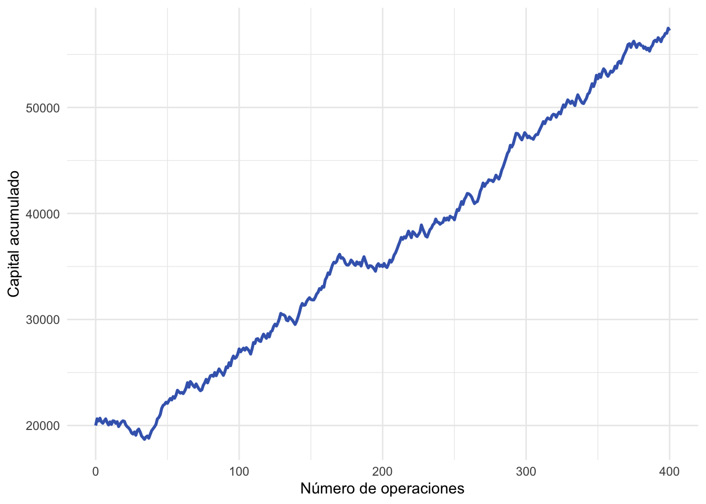
Podemos ver una simulación individual de la trayectoria esperada. Vamos ahora a repetir el proceso quinientas veces:
equity_matrix <- replicate(n_simulaciones,
simular_equity(n_trades, capital_inicial, win_rate,
avg_win, avg_loss, sd_win, sd_loss)
)Ahora, vamos a crear una secuencia temporal y convertir la matriz a un formato largo:
# Secuencia
x_seq <- 0:n_trades
df_sims <- as.data.frame(equity_matrix)
colnames(df_sims) <- paste0(
"sim_",
seq_len(n_simulaciones)
)
df_sims$trade <- x_seq
df_long <- df_sims |>
pivot_longer(
cols = -trade,
names_to = "simulacion",
values_to = "equity"
)Ahora, podemos calcular medidas resumen para cada operación y, posterior a ello, construir una curva de referencia:
# Medidas resumen
df_stats <- df_long |>
group_by(trade) |>
summarise(
mediana = median(equity),
p05 = quantile(equity, 0.05),
p95 = quantile(equity, 0.95),
.groups = "drop"
)
# Curva de referencia
mediana_final <- median(
equity_matrix[n_trades + 1, ]
)
idx_ref <- which.min(
abs(
equity_matrix[n_trades + 1, ] -
mediana_final
)
)
df_ref <- data.frame(
trade = x_seq,
equity = equity_matrix[, idx_ref]
)El código anterior consiste en generar múltiples trayectorias independientes del capital acumulado, siendo que en cada iteración, el sistema decide aleatoriamente si ocurre una ganancia o una pérdida utilizando una distribución Bernoulli (Rubinstein and Kroese 2016):
\[ X_i \sim \text{Bernoulli}(p) \]
Donde:
\[ P(X_i = 1) = p \]
Si ocurre un resultado positivo, entonces el retorno se genera mediante una distribución normal:
\[ W_i \sim \mathcal{N}(\mu_w, \sigma_w^2) \]
Mientras que las pérdidas se modelan como:
\[ L_i \sim \mathcal{N}(\mu_l, \sigma_l^2) \]
A partir de estas simulaciones, podemos construir las trayectorias acumuladas del capital total y visualizar los resultados:
ggplot() +
geom_line(data = df_long,
aes(x = trade, y = equity, group = simulacion, color = "Simulaciones"),
alpha = 0.10, linewidth = 0.25) +
geom_ribbon(
data = df_stats, aes(x = trade, ymin = p05, ymax = p95,
fill = "Rango 5%-95%"), alpha = 0.10) +
geom_line(data = df_stats, aes(x = trade, y = p95, color = "Percentil 95"),
linewidth = 0.9, linetype = "dashed") +
geom_line(data = df_stats, aes(x = trade, y = p05, color = "Percentil 5"),
linewidth = 0.9, linetype = "dashed") +
geom_line(data = df_stats, aes(x = trade, y = mediana, color = "Mediana"),
linewidth = 1.4) +
geom_line(data = df_ref, aes(x = trade, y = equity,
color = "Curva referencia"),
linewidth = 0.7) +
geom_hline(aes(yintercept = capital_inicial, color = "Capital inicial"),
linetype = "dotted", linewidth = 0.6) +
scale_color_manual(values = c(
"Simulaciones" = "#b8bcc6","Percentil 95" = "#4f9d69",
"Percentil 5" = "#c74a4a", "Mediana" = "#4167ba",
"Curva referencia" = "black", "Capital inicial" = "gray40")) +
scale_fill_manual(values = c("Rango 5%-95%" = "#4167ba")) +
scale_y_continuous(labels = scales::label_comma()) +
labs(x = "Número de operaciones", y = "Capital acumulado",
color = NULL, fill = NULL) +
theme_minimal(base_size = 11) +
theme(legend.position = "bottom")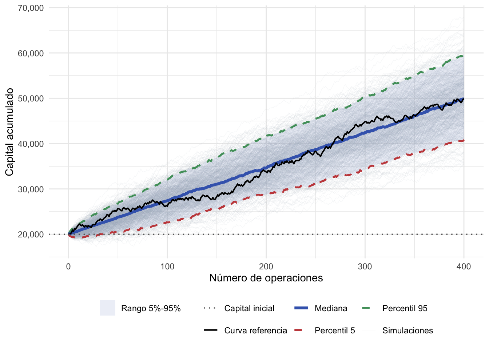
En el gráfico anterior, cada línea gris representa una trayectoria simulada distinta del capital acumulado. La línea azul representa la mediana de todas las simulaciones, mientras que las líneas punteadas corresponden a los percentiles 5 y 95, permitiendo visualizar el rango esperado donde se concentra la mayoría de los escenarios posibles.
Como puedes ver, algunas simulaciones generan crecimientos acelerados del capital, mientras que otras atraviesan periodos prolongados de poco crecimiento, lo que de hecho hace bastante útil a este método, ya que nos muestra la variabilidad y el riesgo asociado a dicho resultado, lo que nos da una visibilidad más realista.
Por su parte, también resulta útil analizar la distribución del capital final obtenido en todas las simulaciones:
equity_final <- data.frame(
equity = equity_matrix[n_trades + 1, ]
)
norm_eq_final <-
equity_final |>
ggplot(aes(x = equity)) +
geom_histogram(bins = 40, fill = "#4167ba", color = "white",
linewidth = 0.3, alpha = 0.85) +
geom_vline(xintercept = capital_inicial, color = "#c74a4a", linewidth = 1,
linetype = "dashed") +
geom_vline(xintercept = mean(equity_final$equity), color = "#4167ba",
linewidth = 1) +
geom_vline(xintercept = median(equity_final$equity), color = "#4f9d69",
linewidth = 1) +
scale_x_continuous(labels = scales::label_comma()) +
labs(x = "Capital final", y = "Frecuencia", title = NULL) +
theme_minimal(base_size = 11)
norm_eq_final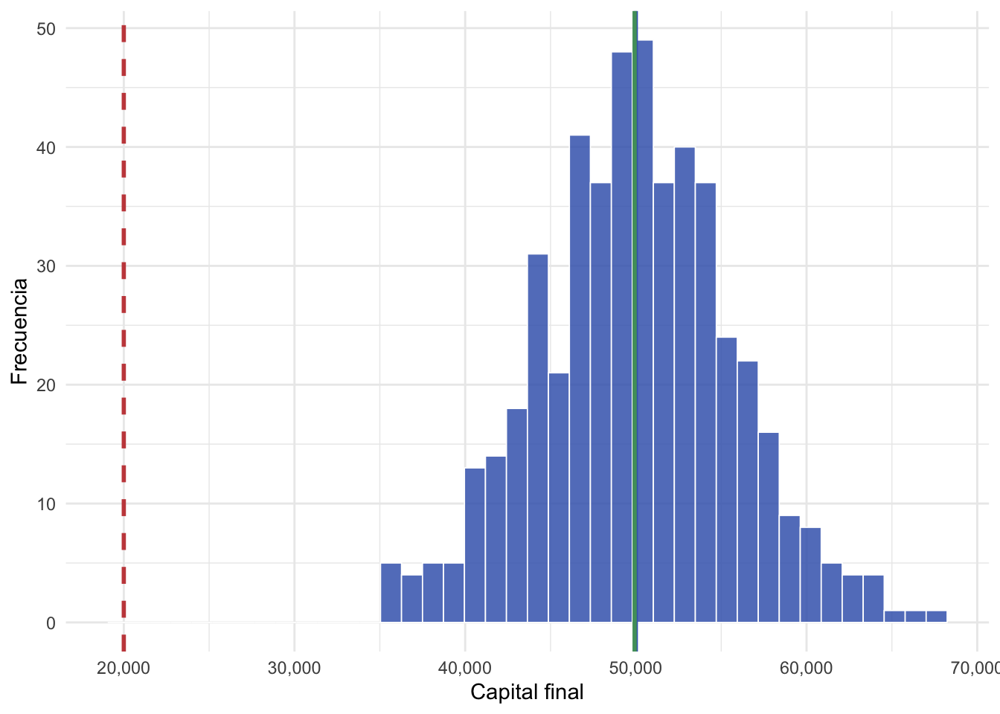
Como puedes ver, lo más probable en nuestro escenario es que logremos una acumulación final cercana a los \(\$50,000\), ya que la mayor concentración de simulaciones se encuentra alrededor de este valor. De hecho, la distribución del capital final presenta una forma aproximadamente normal, lo que sugiere que la mayoría de las trayectorias convergen hacia resultados relativamente similares, aunque con una dispersión moderada. Por otra parte, también podemos darnos cuenta de que prácticamente todas las simulaciones terminan por encima del capital inicial de \(\$20,000\), por lo que, bajo los supuestos actuales del modelo, el sistema presenta una esperanza matemática positiva y una probabilidad relativamente baja de terminar en pérdidas.
7.8.2 Evaluación de riesgos y decisiones estratégicas
Hasta ahora, hemos utilizado simulación de Monte Carlo para generar múltiples trayectorias posibles del capital acumulado y analizar cómo evoluciona el sistema bajo incertidumbre, sin embargo, en aplicaciones reales, el objetivo principal de este tipo de simulaciones no suele ser únicamente “visualizar escenarios”, sino utilizar dichos resultados para evaluar riesgos y apoyar procesos de toma de decisiones estratégicas, obviamente, porque no sirve de nada ver miles de escenarios si esto no nos ayuda a tomar una decisión financiera informada.
En entornos empresariales, financieros e incluso operativos, rara vez basta con conocer únicamente el valor esperado de un resultado. Dos estrategias pueden tener exactamente la misma ganancia promedio y, aun así, implicar niveles de riesgo muy distintos, razón por la que la simulación permite analizar no solo el retorno esperado, sino también la probabilidad de pérdida, la magnitud de escenarios extremos y la estabilidad general del sistema.
A partir de las simulaciones realizadas anteriormente, podemos construir distintas métricas de riesgo sobre el capital final obtenido. En este caso, vamos a calcular lo siguiente:
- Value at Risk (VaR).
- Rendimiento promedio esperado.
- Probabilidad de terminar con pérdidas.
- Máxima caída esperada (drawdown).
- Sensibilidad ante cambios en parámetros.
Una de las métricas más utilizadas dentro de la gestión de riesgos financieros es el Value at Risk (VaR), cuyo objetivo consiste en simplemente estimar la pérdida máxima esperada bajo un determinado nivel de confianza (Rubinstein and Kroese 2016). Formalmente, si definimos una variable aleatoria de pérdidas \(L\), entonces el VaR puede expresarse como:
\[ VaR_\alpha = Q_\alpha (L) \]
Donde:
- \(Q_{\alpha}\) representa el cuantil \(\alpha\) de la distribución de pérdidas.
- \(L\) representa la variable aleatoria asociada a pérdidas del sistema.
Por ejemplo, podemos decir que un VaR al \(5\%\) representa una pérdida tal que únicamente el \(5\%\) de los escenarios simulados serían peores que dicho resultado.
Por otra parte, la siguiente métrica que vamos a calcular es el drawdown máximo, que mide la caída más grande sufrida por el capital desde un máximo histórico hasta un mínimo posterior. Matemáticamente, podemos definirlo como:
\[ D D_t = \frac{C_t - \text{max} (C_1, C_2, ..., C_t ) }{\text{max} (C_1, C_2, ..., C_t )} \]
Donde: - \(C_t\) representa el capital acumulado en el tiempo \(t\). - El denominador corresponde al máximo histórico alcanzado hasta dicho momento.
Esta métrica es de hecho bastante interesante, ya que aunque una estrategia pueda ser rentable en promedio, podría atravesar caídas temporales tan severas que vuelvan psicológica o financieramente imposible continuar operándola.
Vamos ahora a calcular ambas métricas a partir del ejercicio anterior, comenzando con el VaR, el capital esperado promedio y la probabilidad de pérdida:
capital_final <- equity_matrix[
n_trades + 1,
]
# Retorno neto
resultado_neto <- capital_final -
capital_inicial
# VaR al 5%
var_5 <- quantile(
resultado_neto,
0.05
)
# Capital promedio final
capital_promedio <- mean(
capital_final
)
# Probabilidad de pérdida
prob_perdida <- mean(
capital_final < capital_inicial
)Y, respectivamente, el drawdown máximo:
# Función drawdown
calc_drawdown <- function(x){
running_max <- cummax(x)
drawdown <- (
x - running_max
) / running_max
min(drawdown)
}
# Drawdown máximo por simulación
max_dd <- apply(
equity_matrix,
2,
calc_drawdown
)
# Drawdown promedio
dd_promedio <- mean(max_dd)Ahora, generamos juntamos los datos en una pequeña tabla:
summary_risk <- tibble(
metrica = c(
"Capital promedio",
"Probabilidad pérdida",
"VaR 5%",
"Drawdown promedio"
),
valor = c(
capital_promedio,
prob_perdida,
var_5,
dd_promedio
)
)
summary_risk# A tibble: 4 × 2
metrica valor
<chr> <dbl>
1 Capital promedio 49996.
2 Probabilidad pérdida 0
3 VaR 5% 20848.
4 Drawdown promedio -0.0705Como puedes ver, ni siquiera en el peor de los escenarios tenemos una situación de pérdida, aunque claro, este es un ejercicio simulado con condiciones ideales, pero en una situación real debemos considerar muchas más variables que podrían afectar significativamente el comportamiento del sistema, por ejemplo, en mercados financieros reales no existe un win rate constante, las distribuciones de ganancias y pérdidas rara vez siguen una normal perfecta y, además, suelen aparecer fenómenos como cambios de régimen, eventos extremos, incremento de volatilidad, etc. Uno de los errores más comunes al trabajar con simulaciones consiste en asumir que el modelo representa fielmente la realidad únicamente porque genera resultados razonables. Toda simulación depende completamente de los supuestos utilizados, por lo que resultados optimistas pueden ser simplemente consecuencia de hipótesis demasiado favorables.
Ahora bien, regresando a este ejercicio, podemos terminarlo con la visualización de distribución que generamos previamente, pero añadiendo el VaR:
var_cut <- quantile(
equity_final$equity,
0.05
)
norm_eq_final +
geom_vline(xintercept = var_cut,color = "#d17c00",linewidth = 1) +
annotate("text",x = var_cut,y = 18,label = "VaR 5%",angle = 90,
vjust = -0.4,size = 3)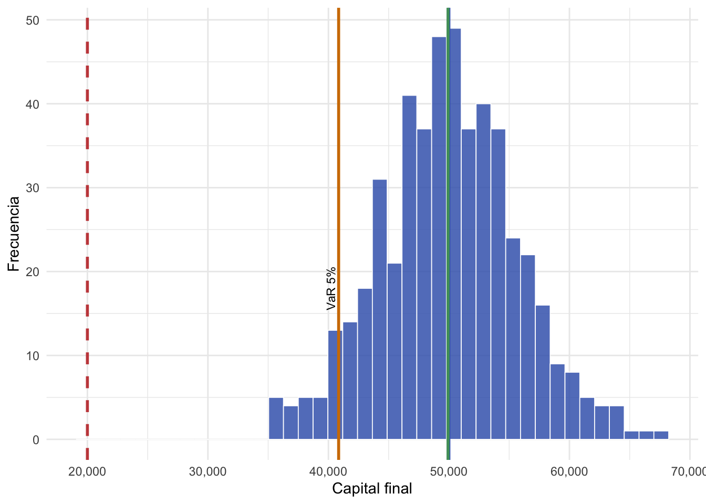
Y, como puedes ver, la magnitud asociada al VaR se encuentra considerablemente por encima del capital inicial de \(\$20,000\), lo que implica que incluso dentro del \(5\%\) de los escenarios más desfavorables simulados, el sistema continúa generando un resultado positivo.
7.9 Modelado estructural y causal
A partir de aquí, comenzamos a acercarnos a la recta final de este capítulo, por lo que vamos a subir un poco el nivel con uno de los temas más interesantes que he tenido el privilegio de trabajar previamente: el modelado estructural y causal. A diferencia de los enfoques que hemos visto hasta ahora, donde el objetivo principal era cuantificar relaciones o generar predicciones, este tipo de modelado nos permite ir un paso más allá al representar explícitamente la estructura de las relaciones entre variables, incluyendo efectos directos, indirectos y mediados. En el contexto empresarial es donde este tema resulta mucho más valioso, porque nos permite responder preguntas más complejas y estratégicamente relevantes, por ejemplo, una empresa podría observar que existe una correlación positiva entre inversión en marketing y ventas, sin embargo, dicha relación puede no ser completamente directa. Es posible que la publicidad incremente primero el reconocimiento de marca, posteriormente aumente el tráfico web, después mejore la tasa de conversión y finalmente termine impactando las ventas. Bajo esta lógica, el verdadero efecto del marketing no ocurre únicamente sobre la variable final, sino sobre todo un sistema de variables intermedias conectadas entre sí.
De manera similar, en analítica de clientes podemos preguntarnos si la satisfacción del servicio incrementa directamente la retención o si, en realidad, primero reduce la tasa de reclamaciones, mejora la percepción de valor y posteriormente disminuye el abandono. Incluso dentro de modelos financieros es posible analizar relaciones causales entre riesgo, liquidez, rentabilidad y comportamiento de mercado, identificando qué variables funcionan como detonadores principales y cuáles únicamente reflejan efectos secundarios dentro del sistema.
Este tipo de modelos permite separar distintos tipos de efectos, por ejemplo:
- Efectos directos: Cuando una variable impacta directamente sobre otra.
- Efectos indirectos: Cuando el impacto ocurre a través de variables intermedias o mediadoras.
- Efectos totales: Combinación del efecto directo más todos los efectos indirectos existentes dentro del sistema.
Con ello, podemos saber rápidamente si una variable aparentemente relevante puede perder importancia una vez que se controlan otras relaciones internas del sistema, mientras que variables que inicialmente parecían secundarias terminan siendo fundamentales debido a sus efectos indirectos acumulados.
Ahora bien, el modelado estructural suele desarrollarse mediante dos grandes componentes:
- Modelo de medición: Describe cómo las variables observadas representan constructos latentes13.
- Modelo estructural: Describe las relaciones causales entre los distintos constructos14 y variables del sistema.
La combinación de ambos componentes da origen a lo que normalmente se conoce como Modelado de Ecuaciones Estructurales (Structural Equation Modeling o SEM), una metodología que combina ideas provenientes de regresión múltiple, análisis factorial, teoría causal y modelos multivariados dentro de un único marco analítico.
7.9.1 Modelado de ecuaciones estructurales
Una de las herramientas más interesantes dentro del modelado estructural son los llamados diagramas de caminos (path diagrams), los cuales permiten representar gráficamente las relaciones causales entre variables dentro de un sistema. En realidad, estos diagramas no son únicamente representaciones visuales del modelo, sino que constituyen una traducción directa del sistema matemático de ecuaciones que estamos planteando, donde cada flecha representa una hipótesis causal específica, mientras que cada nodo representa una variable observada o un constructo latente dentro del sistema (Bollen 1989).
Este tipo de modelos tienen una lógica bastante diferente a la que encontramos en, por ejemplo, regresiones lineales, ya que, mientras que en una regresión lineal clásica normalmente planteamos una sola ecuación donde una variable dependiente es explicada por varias variables independientes, en un modelo estructural podemos tener múltiples ecuaciones interconectadas simultáneamente, lo que implica que una variable puede comportarse como dependiente dentro de una ecuación y, al mismo tiempo, funcionar como variable explicativa dentro de otra parte del sistema. Por esto, los modelos estructurales permiten representar procesos causales mucho más complejos y realistas.
Supongamos, por ejemplo, un caso empresarial relativamente común donde una empresa desea analizar cómo la inversión en marketing termina afectando las ventas finales. En un modelo de regresión simple podríamos escribir algo como:
\[ Ventas_i = \beta_0 + \beta_1 Marketing_i + \varepsilon_i \]
Sin embargo, este enfoque sería demasiado simplificado, ya que el marketing rara vez impacta directamente sobre las ventas de forma inmediata, siendo que lo normal es que existan variables intermedias involucradas dentro del proceso, por ejemplo, la inversión en marketing puede incrementar primero el reconocimiento de marca; posteriormente, este reconocimiento puede aumentar el tráfico web; después, el tráfico puede incrementar la tasa de conversión; y finalmente, la conversión termina afectando las ventas. Bajo esta lógica, el sistema estructural podría escribirse como:
\[ Reconocimiento_i = \gamma_1 Marketing_i + \varepsilon_{1i} \]
\[ Trafico_i = \beta_1 Reconocimiento_i + \varepsilon_{2i} \]
\[ Conversion_i = \beta_2 Trafico_i + \varepsilon_{3i} \]
\[ Ventas_i = \beta_3 Conversion_i + \varepsilon_{4i} \]
Nótese que utilizamos \(\gamma\) para representar efectos provenientes de variables exógenas y \(\beta\) para relaciones entre variables endógenas dentro del sistema estructural.
En este sistema, cada ecuación representa una relación estructural distinta dentro del modelo completo, donde las variables ya no están aisladas unas de otras, sino que forman parte de una cadena causal interconectada.
Ahora bien, vale la pena ahondar un poco más en la interpretación de estas ecuaciones (ya que además, en este punto, pueden seguir siendo algo confusas). En la primera ecuación:
\[ Reconocimiento_i = \gamma_1 Marketing_i + \varepsilon_{1i} \]
Donde:
- \(Reconocimiento_i\): Nivel de reconocimiento de marca para la observación \(i\).
- \(Marketing_i\): Inversión en marketing.
- \(\gamma_1\): Efecto causal del marketing sobre el reconocimiento.
- \(\varepsilon_{1i}\): Componente de error no explicado por el modelo.
Posteriormente, en la segunda ecuación:
\[ Trafico_i = \beta_1 Reconocimiento_i + \varepsilon_{2i} \]
La variable \(Reconocimiento\) deja de ser dependiente y ahora actúa como variable explicativa, algo que constituye la principal diferencia respecto a los modelos de regresión clásicos.
Y eso se pone más interesante, porque cuando comenzamos a analizar los efectos indirectos dentro del sistema, podemos darnos cuenta de que el marketing no aparece directamente en la ecuación de ventas, sin embargo, sí afecta indirectamente a las ventas a través de todas las variables intermedias. Matemáticamente, podemos derivar este efecto sustituyendo progresivamente las ecuaciones unas dentro de otras. Podemos comenzar sustituyendo la ecuación de \(Reconocimiento\) dentro de la ecuación de \(Tráfico\):
\[ Trafico_i = \beta_1 (\gamma_1 Marketing_i + \varepsilon_{1i}) + \varepsilon_{2i} \]
Distribuyendo:
\[ Trafico_i = \beta_1 \gamma_1 Marketing_i + \beta_1 \varepsilon_{1i} + \varepsilon_{2i} \]
Ahora sustituimos esta expresión dentro de la ecuación de \(Conversión\):
\[ Conversion_i = \beta_2 (\beta_1 \gamma_1 Marketing_i + \beta_1 \varepsilon_{1i} + \varepsilon_{2i}) + \varepsilon_{3i} \]
Distribuyendo nuevamente:
\[ Conversion_i = \beta_2 \beta_1 \gamma_1 Marketing_i + \beta_2 \beta_1 \varepsilon_{1i} + \beta_2 \varepsilon_{2i} + \varepsilon_{3i} \]
Finalmente, sustituimos dentro de la ecuación de ventas:
\[ Ventas_i = \beta_3 Conversion_i + \varepsilon_{4i} \]
Lo que nos da:
\[ Ventas_i = \beta_3 ( \beta_2 \beta_1 \gamma_1 Marketing_i + \beta_2 \beta_1 \varepsilon_{1i} + \beta_2 \varepsilon_{2i} + \varepsilon_{3i} ) + \varepsilon_{4i} \]
Y, distribuyendo una vez más:
\[ Ventas_i = \beta_3 \beta_2 \beta_1 \gamma_1 Marketing_i + \beta_3 \beta_2 \beta_1 \varepsilon_{1i} + \beta_3 \beta_2 \varepsilon_{2i} + \beta_3 \varepsilon_{3i} + \varepsilon_{4i} \]
A partir de esta expansión podemos observar el efecto total del marketing sobre las ventas queda representado por el producto:
\[ \beta_3 \beta_2 \beta_1 \gamma_1 \]
Es decir, el impacto causal total no se obtiene mediante una sola pendiente, sino multiplicando todos los coeficientes estructurales de la trayectoria causal correspondiente, ya que en este modelo buscamos separar y cuantificar efectos directos, indirectos y totales dentro de sistemas complejos.
El modelado estructural también nos permite incorporar variables latentes dentro del sistema. Hasta ahora hemos trabajado únicamente con variables observadas directamente, pero muchos fenómenos reales no pueden medirse de forma tan sencilla, ya que conceptos como satisfacción del cliente, percepción de calidad, confianza organizacional o lealtad de marca no existen como variables observables directas; en cambio, deben inferirse mediante múltiples indicadores indirectos. Supongamos que deseamos modelar un constructo latente de satisfacción del cliente, denotado como \(\eta\). Este constructo podría estar relacionado con múltiples indicadores observables, por ejemplo, el tiempo promedio de respuesta, la calificación del servicio, el número de reclamaciones o la probabilidad de recompra.
Matemáticamente, el modelo de medición puede escribirse como:
\[ x_i = \lambda_i \eta + \varepsilon_i \]
Donde:
- \(x_i\): indicador observable.
- \(\lambda_i\): carga factorial del indicador.
- \(\eta\): variable latente.
- \(\varepsilon_i\): error de medición.
En este caso, cada variable observable puede descomponerse en dos partes:
\[ x_i = \underbrace{\lambda_i \eta}_{\text{componente explicada}} + \underbrace{\varepsilon_i}_{\text{error}} \]
La primera parte representa la proporción de la variable observable que es explicada por el constructo latente, mientras que la segunda parte representa la variabilidad no explicada, por ejemplo, si una variable tiene una carga factorial15 muy alta, digamos:
\[ \lambda_i = 0.92 \]
Entonces eso implica que dicha variable observable está altamente asociada al constructo latente, mientras que cargas pequeñas indicarían que el indicador probablemente no representa adecuadamente al factor subyacente. Por otro lado, si agrupamos múltiples indicadores observados dentro de forma matricial, podemos representar el modelo de medición completo como:
\[ \mathbf{x} = \Lambda \eta + \varepsilon \]
Donde:
- \(\mathbf{x}\): Es el vector de variables observadas.
- \(\Lambda\): Es la matriz de cargas factoriales.
- \(\eta\): Es el vector de factores latentes.
- \(\varepsilon\): Es el vector de errores de medición.
Posteriormente, los factores latentes pueden conectarse entre sí mediante el modelo estructural, generando así el sistema SEM completo. De forma resumida, podemos representar un modelo de ecuaciones estructurales mediante dos componentes simultáneos:
- Modelo de medición:
\[ \mathbf{x} = \Lambda_x \xi + \delta \]
\[ \mathbf{y} = \Lambda_y \eta + \varepsilon \]
- Modelo estructural:
\[ \eta = B\eta + \Gamma\xi + \zeta \]
Donde:
- \(\eta\): variables latentes endógenas.
- \(\xi\): variables latentes exógenas.
- \(B\): relaciones entre variables endógenas.
- \(\Gamma\): efectos de variables exógenas sobre endógenas.
- \(\zeta\): errores estructurales.
Si regresamos al ejemplo original que establecimos, este ejercicio puede ser mejor ejemplificado mediante los diagramas de camino. Estos diagramas no son mas que una representación del sistema de relaciones estructurales planteado dentro del modelo, donde cada elemento visual posee una interpretación específica. A diferencia de un diagrama conceptual, en este caso las flechas, nodos y conexiones representan directamente ecuaciones estructurales, efectos causales, covarianzas y componentes de error definidos dentro del sistema estadístico. Para entender como funcionan estos diagramas, podemos hacer uso de los siguientes símbolos:
Por lo tanto, para el primer ejercicio, podemos definir el diagrama de caminos como:
(Este diagrama me costó cerca de dos horas de trabajo, por lo que prefiero no reescalarlo. Puedes hacer zoom en el).
En este caso, el diagrama muestra cómo la satisfacción del cliente funciona como un constructo latente que no puede observarse directamente, sino que debe inferirse mediante indicadores como la calificación del servicio, el tiempo de respuesta o la probabilidad de recompra. A su vez, el modelo plantea que la satisfacción no impacta directamente sobre las ventas, sino que primero incrementa la lealtad del cliente, la cual posteriormente termina afectando el desempeño comercial de la empresa, por lo que, de esta manera, el modelo permite identificar no solamente relaciones directas, sino también efectos indirectos y mecanismos de mediación que normalmente permanecerían ocultos dentro de enfoques estadísticos más simples.
Ahora bien, debemos tener cuidado con una interpretación excesivamente optimista de estos modelos, como en cualquier otro modelo más simple que especifiquemos, ya que aunque SEM permite representar estructuras causales explícitas, la causalidad no emerge automáticamente de las ecuaciones. Obviamente, los resultados siguen dependiendo críticamente de la correcta especificación del modelo, la calidad de los datos, la teoría subyacente y la ausencia de variables omitidas importantes.
Pasando a la parte práctica en R, desgraciadamente me inventé el ejemplo anterior (referente al diagrama) antes de encontrar datos que fueran útiles, por lo que no encontré un dataset lo suficientemente parecido sobre efectos de marketing, razón por la que tuve que crear de forma sintética el dataset sint_data_marketing, disponible en el repositorio oficial del libro (código para la generación de los datos disponible en el apéndice). Vamos a comenzar leyendo los datos:
sint_data_marketing <-
read.csv(paste0("https://raw.githubusercontent.com/",
"Jorge-hercas/r-para-inteligencia-de-negocios/",
"refs/heads/main/CSV/sint_data_marketing.csv")) |>
dplyr::select(!X)
sint_data_marketing |>
head() marketing reconocimiento trafico conversion ventas
1 1.3709584 1.6458876 2.7652850 1.5147314 1.17250896
2 -0.5646982 0.3930010 0.6354483 0.3497425 0.01888959
3 0.3631284 0.2159120 0.8953384 -0.0643541 -1.33538197
4 0.6328626 0.4885252 0.5702676 0.9815348 -0.86703108
5 0.4042683 -0.3335618 -0.9802057 -1.2426857 -1.77660194
6 -0.1061245 -0.2221742 -0.6001821 -0.1818023 0.15620720Vamos ahora a crear un gráfico de correlación, el cual suele ser una buena práctica cuando trabajamos con este tipo de modelos causales y queremos darnos una idea de las relaciones entre datos antes de establecer el modelo en si (aunque ya tenemos una idea de las correlaciones debido a que estos datos fueron inventados, pero vamos a fingir que no):
cor_long <-
sint_data_marketing |>
dplyr::select(where(is.numeric)) |>
cor(use = "complete.obs") |>
as.data.frame() |>
tibble::rownames_to_column("var1") |>
pivot_longer(cols = -var1, names_to = "var2", values_to = "correlation")
# Matriz de correlación
cor_long |>
ggplot(aes(x = var1,y = var2, fill = correlation)) +
geom_tile(color = "white",
linewidth = 0.3) +
geom_text(aes(label = sprintf("%.2f", correlation)),
size = 2.8) +
scale_fill_gradient2(low = "#b2182b", mid = "white", high = "#2166ac",
midpoint = 0, limits = c(-1, 1)) +
coord_fixed() +
theme_minimal(base_size = 11) +
labs(
fill = "Correlación", x = NULL, y = NULL
) +
theme(
axis.text.x = element_text(angle = 45,hjust = 1),
axis.text.y = element_text(size = 9),
panel.grid = element_blank(),
legend.position = "none",
legend.direction = "horizontal"
)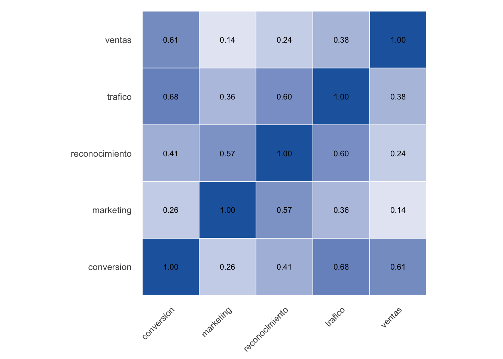
Vamos ahora a estimar el modelo, utilizando la librería lavaan (Rosseel 2012). A diferencia de otros enfoques estadísticos donde las fórmulas suelen escribirse directamente dentro de funciones como lm() o glm(), en SEM normalmente definimos el sistema completo mediante una sintaxis textual, lo que permite representar múltiples ecuaciones simultáneamente de una forma bastante compacta. En este caso, vamos a seguir el modelo que planteamos originalmente, en el que el marketing incrementa el reconocimiento de marca \(\rightarrow\) el reconocimiento aumenta el tráfico web \(\rightarrow\) el tráfico incrementa la conversión \(\rightarrow\) la conversión impacta las ventas. La especificación del modelo puede escribirse así:
library(lavaan)This is lavaan 0.6-21
lavaan is FREE software! Please report any bugs.modelo_marketing <- '
# Relaciones estructurales
reconocimiento ~ marketing
trafico ~ reconocimiento
conversion ~ trafico
ventas ~ conversion
'Nótese que la sintaxis utiliza el operador ~, el cual puede interpretarse como “es explicado por”, al igual que en los modelos de regresión que vimos al principio de este capítulo.
Una vez definido el modelo, podemos estimarlo utilizando la función sem():
fit_marketing <-
sem(model = modelo_marketing,
data = sint_data_marketing)
summary(fit_marketing,
standardized = TRUE,
fit.measures = TRUE)lavaan 0.6-21 ended normally after 1 iteration
Estimator ML
Optimization method NLMINB
Number of model parameters 8
Number of observations 500
Model Test User Model:
Test statistic 2.941
Degrees of freedom 6
P-value (Chi-square) 0.816
Model Test Baseline Model:
Test statistic 959.605
Degrees of freedom 10
P-value 0.000
User Model versus Baseline Model:
Comparative Fit Index (CFI) 1.000
Tucker-Lewis Index (TLI) 1.005
Loglikelihood and Information Criteria:
Loglikelihood user model (H0) -2288.674
Loglikelihood unrestricted model (H1) -2287.203
Akaike (AIC) 4593.348
Bayesian (BIC) 4627.065
Sample-size adjusted Bayesian (SABIC) 4601.672
Root Mean Square Error of Approximation:
RMSEA 0.000
90 Percent confidence interval - lower 0.000
90 Percent confidence interval - upper 0.036
P-value H_0: RMSEA <= 0.050 0.986
P-value H_0: RMSEA >= 0.080 0.000
Standardized Root Mean Square Residual:
SRMR 0.013
Parameter Estimates:
Standard errors Standard
Information Expected
Information saturated (h1) model Structured
Regressions:
Estimate Std.Err z-value P(>|z|) Std.lv Std.all
reconocimiento ~
marketing 0.593 0.038 15.596 0.000 0.593 0.572
trafico ~
reconocimiento 0.568 0.034 16.557 0.000 0.568 0.595
conversion ~
trafico 0.672 0.033 20.590 0.000 0.672 0.677
ventas ~
conversion 0.601 0.035 17.222 0.000 0.601 0.610
Variances:
Estimate Std.Err z-value P(>|z|) Std.lv Std.all
.reconocimiento 0.681 0.043 15.811 0.000 0.681 0.673
.trafico 0.597 0.038 15.811 0.000 0.597 0.646
.conversion 0.493 0.031 15.811 0.000 0.493 0.541
.ventas 0.555 0.035 15.811 0.000 0.555 0.628A partir de este output, a lo que le debemos prestar atención es a los indicadores de ajuste global del modelo, ya que estos nos permiten evaluar qué tan bien la estructura causal especificada representa las relaciones observadas en los datos. En este caso, los resultados muestran un desempeño extremadamente bueno (quién lo diría), siendo que el estadístico \(\chi^2 = 2.941\) con un p-value de \(0.816\) indica que no existen diferencias estadísticamente significativas entre la matriz de covarianzas observada y la matriz reproducida por el modelo, lo que nos dice que la estructura planteada logra representar adecuadamente los datos. Por su parte, índices como el CFI = \(1.000\) y el TLI = \(1.005\) muestran un ajuste prácticamente perfecto, mientras que el RMSEA = \(0.000\) y el SRMR = \(0.013\) indican errores de aproximación extremadamente bajos (finjamos sorpresa).
Obviamente el excelente desempeño del modelo depende enteramente de que estamos trabajando con un dataset sintético creado específicamente para ilustrar este tipo de relaciones causales. En un entorno real, es común encontrar valores de ajuste mucho menores debido a ruido, variables omitidas, problemas de medición o relaciones causales más complejas de lo inicialmente supuesto, aunque esto no es inherentemente malo, simplemente es la realidad de los datos, que jamás serán perfectos fuera de los entornos académicos.
Ahora bien, más allá del ajuste global, el segundo elemento importante corresponde a los coeficientes estructurales estimados dentro del sistema. Todos los coeficientes resultaron estadísticamente significativos (\(p < 0.001\)), lo que indica evidencia fuerte de relaciones positivas entre las variables del modelo, por ejemplo, el coeficiente estandarizado entre marketing y reconocimiento (\(0.572\)) implica que un incremento de una desviación estándar en la inversión en marketing se asocia, en promedio, con un aumento aproximado de \(0.57\) desviaciones estándar en el reconocimiento de marca. Por su parte, el reconocimiento impacta positivamente sobre el tráfico web (\(0.595\)), el tráfico incrementa la conversión (\(0.677\)) y finalmente la conversión afecta las ventas (\(0.610\)).
Finalmente, también debemos prestar atención a las varianzas residuales del modelo, ya que estas representan la proporción de variabilidad que permanece sin ser explicada por las relaciones estructurales especificadas, por ejemplo, la varianza residual estandarizada de ventas (\(0.628\)) implica que todavía existe una cantidad importante de variabilidad en las ventas que no está siendo capturada únicamente por la variable de conversión (si, incluso en datos inventados siempre habrá proporciones no explicadas).
Por otra parte, uno de los aspectos más útiles de lavaan consiste en que podemos estimar estos efectos indirectos automáticamente. Para hacer esto, podemos extender el modelo incorporando parámetros definidos manualmente:
modelo_marketing2 <- '
# Relaciones estructurales
reconocimiento ~ a*marketing
trafico ~ b*reconocimiento
conversion ~ c*trafico
ventas ~ d*conversion
# Efecto indirecto
indirecto := a*b*c*d
'Siendo que la sintaxis := nos permite definir parámetros derivados dentro del modelo, indicando en este caso explícitamente que el efecto indirecto corresponde al producto de todos los coeficientes de la trayectoria causal. Si estimamos nuevamente el modelo:
fit_marketing2 <-
sem(model = modelo_marketing2,
data = sint_data_marketing)
summary(fit_marketing2,
standardized = TRUE)lavaan 0.6-21 ended normally after 1 iteration
Estimator ML
Optimization method NLMINB
Number of model parameters 8
Number of observations 500
Model Test User Model:
Test statistic 2.941
Degrees of freedom 6
P-value (Chi-square) 0.816
Parameter Estimates:
Standard errors Standard
Information Expected
Information saturated (h1) model Structured
Regressions:
Estimate Std.Err z-value P(>|z|) Std.lv Std.all
reconocimiento ~
marketing (a) 0.593 0.038 15.596 0.000 0.593 0.572
trafico ~
reconocmnt (b) 0.568 0.034 16.557 0.000 0.568 0.595
conversion ~
trafico (c) 0.672 0.033 20.590 0.000 0.672 0.677
ventas ~
conversion (d) 0.601 0.035 17.222 0.000 0.601 0.610
Variances:
Estimate Std.Err z-value P(>|z|) Std.lv Std.all
.reconocimiento 0.681 0.043 15.811 0.000 0.681 0.673
.trafico 0.597 0.038 15.811 0.000 0.597 0.646
.conversion 0.493 0.031 15.811 0.000 0.493 0.541
.ventas 0.555 0.035 15.811 0.000 0.555 0.628
Defined Parameters:
Estimate Std.Err z-value P(>|z|) Std.lv Std.all
indirecto 0.136 0.016 8.610 0.000 0.136 0.141Ahora lavaan nos dará automáticamente el valor estimado del efecto indirecto, el cual nos dió un valor de \(0.136\), siendo que este coeficiente representa el impacto total que la inversión en marketing ejerce sobre las ventas a través de toda la cadena causal especificada dentro del modelo. Como puedes ver, aunque la variable marketing no aparece en la ecuación final de ventas, sí termina afectándolas indirectamente mediante su influencia sobre el reconocimiento de marca, posteriormente sobre el tráfico web y finalmente sobre la conversión. De hecho, si te das cuenta, el valor estimado corresponde al producto de todos los coeficientes estructurales de la trayectoria causal, y podemos comprobarlo rápidamente:
0.593*0.568*0.672*0.601[1] 0.1360338Esto implica que, por ejemplo, si la empresa incrementa su inversión en marketing, entonces el efecto final sobre las ventas no ocurrirá de manera inmediata, sino que primero deberá propagarse a través de todas las variables intermedias, pero la magnitud final esperada por cada aumento de marketing terminará siendo relativamente menor debido a que cada etapa de la trayectoria causal transmite únicamente una fracción parcial del efecto inicial. Esto de hecho ocurre todo el tiempo en ambientes empresariales, donde generalmente se asigna un budget para marketing, del cual se espera que una fracción del público objetivo se interese por el producto/servicio, posteriormente solo una parte de esas personas terminará visitando el sitio web o interactuando con la campaña, después únicamente una proporción de esos usuarios realizará alguna conversión y, finalmente, solo una fracción terminará convirtiéndose en ventas efectivas, no por nada los gráficos de funnel son tan populares en esta área.
De hecho, podríamos ejemplificar un gráfico de funnel para entender de forma más sencilla esta estructura:
# Datos del funnel
funnel <- tibble(
etapa = c(
"Inversión en marketing", "Tráfico / Interés","Ventas / Conversión"),
valor = c(10000, 2900, 450),
pct = c("100%", "29%", "4.5%"),
fill = c("#1f77b4", "#d62728", "#2ca02c")
)
# Coordenadas manuales para trapecios
funnel_poly <- tibble(
x = c(1, 9, 7.5, 2.5, 2.5, 7.5, 6.2, 3.8, 3.8, 6.2, 5, 5),
y = c(3, 3, 2, 2, 2, 2, 1, 1,1, 1, 0, 0),
grupo = c("A", "A", "A", "A", "B", "B", "B", "B", "C", "C", "C", "C"),
fill = c("#1f77b4", "#1f77b4", "#1f77b4", "#1f77b4", "#d62728", "#d62728",
"#d62728", "#d62728", "#2ca02c", "#2ca02c", "#2ca02c", "#2ca02c"))
ggplot() +
geom_polygon(
data = funnel_poly,
aes(x = x, y = y, group = grupo, fill = fill),
color = "white",linewidth = 1) +
scale_fill_identity() +
annotate("segment", x = 2.3, xend = 1.8, y = 2.7, yend = 2.7,
color = "#1f77b4", linewidth = 0.7) +
annotate("text", x = 1.65, y = 2.7, hjust = 1,
label = "Inversión en marketing\n10,000\n(100%)", size = 3.5) +
annotate( "segment", x = 3.0, xend = 2.3, y = 1.6, yend = 1.6,
color = "#d62728", linewidth = 0.7) +
annotate("text", x = 2.1, y = 1.6, hjust = 1,
label = "Tráfico / Interés\n2,900\n(29%)", size = 3.5) +
annotate("segment", x = 4.5, xend = 3.7, y = 0.55, yend = 0.55,
color = "#2ca02c", linewidth = 0.7) +
annotate("text", x = 3.5, y = 0.55,hjust = 1,
label = "Ventas / Conversión\n450\n(4.5%)", size = 3.5) +
theme_void(base_size = 14) +
theme(
plot.title = element_text(hjust = 0.5, size = 24, face = "bold"),
plot.margin = margin(20, 40, 20, 40)) +
coord_cartesian(xlim = c(0, 10), ylim = c(0, 3.2), clip = "off")Por lo que, por ejemplo, si tuviéramos un budget inicial de marketing de \(\$10,000\), considerando el efecto total estimado de la estructura causal (\(0.136\)), entonces podríamos interpretar que el impacto del marketing sobre las ventas termina propagándose de forma parcial a través de cada etapa intermedia del sistema.
7.9.1.1 Identificación del modelo
Toda la sección anterior fue trabajada con un ejemplo creado específicamente para este tipo de modelos, por lo que no nos tuvimos que romper la cabeza seleccionando variables relevantes, haciendo limpieza ni estableciendo una secuencia de eventos para el modelo en cuestión, sin embargo, en la vida laboral el paso inicial rara vez consiste en estimar directamente el modelo, aunque, incluso antes de preocuparnos por el modelo que vayamos a establecer, debemos hacernos la siguiente pregunta: ¿El modelo que queremos especificar es realmente identificable? En este tipo de ejercicios no basta con establecer una ecuación y esperar a que lavaan haga lo demás. A diferencia de casos mucho más simples como las regresiones lineales, SEM busca estimar simultáneamente múltiples relaciones estructurales, covarianzas, efectos indirectos, errores residuales e incluso variables latentes, por lo que rápidamente podemos terminar construyendo sistemas matemáticos demasiado complejos para la información disponible en los datos. Lo que quiero decir con esto es que el modelo necesita contar con suficiente información observable para poder estimar todos los parámetros desconocidos de forma única, pero si esto no ocurre, entonces el sistema puede tener infinitas soluciones posibles o, directamente, no tener solución estadísticamente válida.
Básicamente, el modelo intenta reproducir la matriz de covarianzas observada utilizando un conjunto de parámetros libres. Si contamos con \(p\) variables observadas, entonces el número máximo de piezas únicas de información disponibles dentro de la matriz de covarianzas viene dado por:
\[ \frac{p(p+1)}{2} \]
Esto incluye todas las varianzas y covarianzas únicas entre las variables observadas. Si tomamos como ejemplo nuestro modelo original, entonces tenemos cinco variables observadas, por lo tanto:
\[ \frac{5(5+1)}{2} = 15 \]
Entonces únicamente disponemos de 15 elementos observables para intentar estimar el modelo completo, aunque el problema aparece cuando el número de parámetros libres crece demasiado rápido, ya que si el número de parámetros desconocidos excede la información disponible, entonces el sistema se vuelve imposible de resolver de manera única. En este punto es donde aparece el concepto de grados de libertad, que nos dicen cuánta información sobra después de estimar todos los parámetros del modelo (si, los mismos grados de libertad que discutimos en la sección de análisis exploratorio, pero que no expliqué a profundidad). Matemáticamente, suelen calcularse como:
\[ gl = \frac{p(p+1)}{2}-q \]
Donde:
- \(p\): Corresponde al número de variables observadas.
- \(q\): Corresponde al número de parámetros libres del modelo.
Seguramente te estarás preguntando por qué estoy explicando el tema de grados de libertad en este punto del libro, considerando que esto es más referente al análisis exploratorio de datos, sin embargo, en SEM es mucho más importante, ya que prácticamente determina si el modelo puede o no estimarse (Rosseel 2012). Dependiendo del valor de los grados de libertad, podemos encontrarnos con tres escenarios distintos:
- Modelos subidentificados: Esto ocurre cuando el número de parámetros libres excede la cantidad de información disponible dentro de la matriz de covarianzas, es decir:
\[ gl < 0 \]
En estos casos, el sistema posee más incógnitas que ecuaciones disponibles para resolverlas, por lo que múltiples combinaciones de parámetros pueden reproducir exactamente la misma estructura de covarianzas observada y, al final, el modelo no tiene una solución única. Estas situaciones suelen ocurrir cuando comenzamos a agregar relaciones dentro del modelo solo porque tienen sentido, siendo que cada flecha nueva dentro del diagrama introduce parámetros adicionales al sistema, y eventualmente el modelo puede volverse demasiado flexible para la información disponible en los datos.
- Modelos exactamente identificados: Simplemente son modelos donde:
\[ gl = 0 \]
Es decir, donde el número de parámetros libres coincide exactamente con la cantidad de información disponible. Matemáticamente el sistema puede resolverse y produce una solución única, aunque con un detalle importante, el modelo ajustará perfectamente los datos por construcción, por lo que la matriz de covarianzas reproducida será idéntica a la observada, provocando, lo que nos dará valores de RMSEA, SRMR, CFI, TLI o \(\chi^2\) con un ajuste perfecto, tal como lo vimos en el ejemplo simulado, lo que de hecho hará que el modelo deje de ser falsable empíricamente. Realmente no deberíamos buscar la perfección en un modelo, ya que el ajuste exacto no implica necesariamente que la teoría causal sea correcta, sino únicamente que el sistema posee exactamente la flexibilidad suficiente para reproducir los datos observados.
- Modelos sobreidentificados: Modelos en los que:
\[ gl > 0 \]
Esto de hecho es el escenario ideal en SEM, porque aquí el modelo utiliza menos parámetros que información disponible, lo que permite no solamente estimar el sistema de forma única, sino también evaluar estadísticamente qué tan bien la estructura propuesta representa las relaciones en los datos. Justamente en este tipo de modelos es donde cobran sentido los indicadores de ajuste global (RMSEA, SRMR, CFI, TLI y \(\chi^2\)), evaluando qué tan bien la estructura causal logra aproximar los datos reales, al igual que en todos los modelos que ya vimos previamente.
Ahora bien, cuando estamos especificando el modelo, debemos tener en cuenta que muchas veces necesitaremos imponer restricciones para evitar problemas de estimación, esto debido a que, cuando trabajamos con variables latentes, los constructos no poseen una escala observable directa, por ejemplo, supongamos que tenemos el siguiente modelo de medición:
\[ x_i = \lambda_i \eta + \varepsilon_i \]
El problema aquí es que la escala de la variable latente \(\eta\) es arbitraria, por lo que podríamos multiplicar \(\eta\) por una constante y dividir simultáneamente \(\lambda_i\) por esa misma constante sin alterar las covarianzas reproducidas por el modelo, haciendo que el sistema tenga infinitas soluciones equivalentes. Normalmente, este problema se suele solucionar fijando una de las cargas factoriales a 1, es decir:
\[ \lambda_1 = 1 \]
Lo que permite utilizar uno de los indicadores observados como referencia para definir la escala del constructo latente.
Como puedes darte cuenta, las ecuaciones estructurales son mucho más delicadas que otros enfoques estadísticos más simples, porque agregar una sola flecha adicional dentro del diagrama puede alterar completamente la identificabilidad matemática del sistema, es por ello que, antes incluso de estimar el modelo, normalmente necesitamos verificar cuidadosamente si la estructura propuesta es matemáticamente viable, e incluso, cuando un modelo es matemáticamente identificable, eso no implica automáticamente que sea un buen modelo desde el punto de vista estadístico o teórico. De hecho, uno de los errores más comunes cuando comenzamos a trabajar con SEM consiste en asumir que, si el software logra converger y producir estimaciones, entonces el modelo necesariamente es correcto. Un modelo puede converger perfectamente y aun así representar relaciones causales absurdas, incluir mediaciones sin sentido, omitir variables fundamentales o simplemente estar sobreajustando ruido presente en los datos, razón por la que el proceso de especificación de modelos estructurales es casi siempre iterativo.
Normalmente, para ayudarnos a identificar de mejor manera los parámetros correctos del modelo que estamos especificando, uno de los elementos más utilizados son los llamados índices de modificación, los cuales sugieren qué parámetros adicionales podrían incorporarse al modelo para mejorar el ajuste global. Básicamente, estos índices evalúan cuánto disminuiría el estadístico \(\chi^2\) si un parámetro actualmente restringido fuese liberado, por ejemplo, supongamos que inicialmente hubiésemos especificado el siguiente modelo:
\[ Reconocimiento \rightarrow Trafico \rightarrow Conversion \rightarrow Ventas \]
Pero al estimarlo observamos que el ajuste no es particularmente bueno. Es aquí donde utilizamos los índices de modificación, ya que estos nos podrían decir que existe un efecto directo adicional entre marketing y tráfico:
\[ Trafico \sim Marketing \]
Lo que implicaría que parte del efecto del marketing sobre el tráfico web no ocurre exclusivamente a través del reconocimiento de marca, sino también mediante un efecto directo adicional no contemplado inicialmente.
Regresando a la parte práctica en R, en lavaan podemos calcular rápidamente estos índices mediante modindices():
modindices(fit_marketing,
sort = TRUE,
minimum.value = 2)[1] lhs op rhs mi epc sepc.lv sepc.all sepc.nox
<0 rows> (or 0-length row.names)Evidentemente en este caso la función no nos está devolviendo resultados, ya que como recordarás, este es un dataset perfectamente especificado para este ejercicio, por lo que el sistema ya reproduce prácticamente de forma perfecta la matriz de covarianzas observada. Si establecemos minimum.value = 1, entonces nos devolverá:
modindices(fit_marketing,
sort = TRUE,
minimum.value = 1) lhs op rhs mi epc sepc.lv sepc.all sepc.nox
23 conversion ~ ventas 1.850 0.085 0.085 0.083 0.083
15 conversion ~~ ventas 1.850 0.047 0.047 0.090 0.090
26 ventas ~ trafico 1.850 -0.064 -0.064 -0.066 -0.066
14 trafico ~~ ventas 1.736 -0.040 -0.040 -0.070 -0.070
20 trafico ~ ventas 1.702 -0.067 -0.067 -0.065 -0.065Ya comenzamos a ver algunas relaciones en nuestro modelo, por ejemplo, para la variable conversion, tenemos un mi = 1.850 que nos estaría diciendo que, si liberáramos esta relación adicional dentro del modelo, el estadístico \(\chi^2\) disminuiría aproximadamente en \(1.85\) unidades (aunque es un cambio bastante pequeño), además, también aparecen sugerencias relacionadas con covarianzas residuales, ya que el operador ~~ representa una covarianza residual entre ambas variables, lo que implicaría que conversion y ventas compartirían variabilidad adicional no explicada por la estructura actualmente especificada.
El hecho de que lavaan sugiera estas relaciones no implica necesariamente que debamos agregarlas al modelo, lo único que indican los índices de modificación es que, matemáticamente, liberar ciertos parámetros podría mejorar ligeramente el ajuste estadístico, sin embargo, en este caso las mejoras potenciales son prácticamente insignificantes. Claro que, cuando trabajes con un dataset real este no va a ser el caso, y muy seguramente comenzarás a observar múltiples índices de modificación relativamente grandes asociados a relaciones adicionales dentro del sistema (posiblemente con hasta minimum.value = 10).
7.9.1.1.1 Análisis factorial confirmatorio
Hasta este punto hemos trabajado principalmente con la parte estructural del modelo, es decir, con la secuencia causal:
\[ Marketing \rightarrow Reconocimiento \rightarrow Trafico \rightarrow Conversion \rightarrow Ventas \]
Sin embargo, de forma intrínseca estamos asumiendo que variables como reconocimiento, conversion o incluso satisfaccion pueden observarse directamente dentro de una base de datos, pero en la práctica, esto no siempre ocurre, ya que muchas variables utilizadas en marketing representan conceptos abstractos que no se miden de forma directa, por ejemplo, el reconocimiento de marca no es una variable que podamos observar directamente como si fuera una venta o una variable cuantitativa. Normalmente, tendríamos que inferirlo a partir de preguntas o métricas indirectas, como lo son la familiaridad con la marca, la búsqueda de la marca, etc, y bajo esta lógica, reconocimiento podría dejar de tratarse como una variable observada y comenzar a modelarse como un constructo latente. Aquí es donde utilizamos el Análisis Factorial Confirmatorio (CFA), ya que, a diferencia del análisis factorial exploratorio, donde dejamos que los datos nos sugieran cuántos factores existen y qué variables pertenecen a cada uno, en el CFA partimos de una estructura teórica previamente definida, donde antes de estimar el modelo, nosotros ya declaramos qué indicadores deberían medir cada constructo latente (Rosseel 2012).
Supongamos que quisiéramos medir el reconocimiento de marca dentro del ejemplo de marketing, podríamos plantear algo como:
\[ Reconocimiento = \sim Recuerdo + Familiaridad + Busquedas + Menciones \]
Donde el operador =~ puede leerse como “es medido por”, por lo que estaríamos diciendo que el constructo latente Reconocimiento no se observa directamente, sino que se infiere mediante cuatro indicadores observables. Matemáticamente, cada indicador puede representarse como:
\[ x_i = \lambda_i Reconocimiento + \varepsilon_i \]
Donde:
- \(x_i\): indicador observable relacionado con reconocimiento de marca.
- \(\lambda_i\): carga factorial del indicador.
- \(Reconocimiento\): constructo latente.
- \(\varepsilon_i\): error de medición del indicador.
Por lo que, por ejemplo, si la variable familiaridad tuviera una carga factorial estandarizada de:
\[ \lambda = 0.87 \]
Entonces podríamos interpretar que este indicador está fuertemente asociado con el constructo latente de reconocimiento de marca, mientras que, si por ejemplo la variable menciones tuviera una carga factorial de:
\[ \lambda = 0.28 \]
Esto sugeriría que probablemente las menciones en redes sociales no están representando adecuadamente el reconocimiento de marca dentro de este modelo específico, quizá porque dependen de otros factores.
Por norma general, suelen utilizarse ciertas reglas prácticas para interpretar cargas factoriales estandarizadas:
- \(> 0.70\): Relación muy fuerte.
- \(> 0.70\): Relación aceptable.
- \(0.30 - 0.50\): Relación débil.
- \(< 0.30\): Indicador problemático.
Claro que estos indicadores son solamente una referencia empírica, pero nos pueden dar una buena idea de dónde estamos parados respecto a las cargas factoriales.
Pasando a la parte práctica en R, podemos establecer un modelo de análisis factorial confirmatorio con lavaan, aunque, nuestro dataset no tiene variables como Recuerdo, Familiaridad, etc, que planteamos al inicio, por lo que utilizaremos las variables observadas disponibles (reconocimiento, trafico, conversion y ventas) como indicadores de un constructo latente más general, al que llamaremos desempeno_marketing:
modelo_cfa_marketing <- '
# Modelo de medición
desempeno_marketing =~ reconocimiento +
trafico +
conversion +
ventas
'Una vez definido el modelo, lo podemos estimar mediante la función cfa():
fit_cfa_marketing <-
cfa(modelo_cfa_marketing,
data = sint_data_marketing)
summary(fit_cfa_marketing,
standardized = TRUE,
fit.measures = TRUE)lavaan 0.6-21 ended normally after 23 iterations
Estimator ML
Optimization method NLMINB
Number of model parameters 8
Number of observations 500
Model Test User Model:
Test statistic 111.499
Degrees of freedom 2
P-value (Chi-square) 0.000
Model Test Baseline Model:
Test statistic 760.604
Degrees of freedom 6
P-value 0.000
User Model versus Baseline Model:
Comparative Fit Index (CFI) 0.855
Tucker-Lewis Index (TLI) 0.565
Loglikelihood and Information Criteria:
Loglikelihood user model (H0) -2442.453
Loglikelihood unrestricted model (H1) -2386.704
Akaike (AIC) 4900.906
Bayesian (BIC) 4934.623
Sample-size adjusted Bayesian (SABIC) 4909.231
Root Mean Square Error of Approximation:
RMSEA 0.331
90 Percent confidence interval - lower 0.280
90 Percent confidence interval - upper 0.385
P-value H_0: RMSEA <= 0.050 0.000
P-value H_0: RMSEA >= 0.080 1.000
Standardized Root Mean Square Residual:
SRMR 0.076
Parameter Estimates:
Standard errors Standard
Information Expected
Information saturated (h1) model Structured
Latent Variables:
Estimate Std.Err z-value P(>|z|) Std.lv Std.all
desempeno_marketing =~
reconocimiento 1.000 0.541 0.537
trafico 1.381 0.121 11.446 0.000 0.747 0.777
conversion 1.557 0.134 11.618 0.000 0.842 0.883
ventas 1.071 0.106 10.098 0.000 0.579 0.616
Variances:
Estimate Std.Err z-value P(>|z|) Std.lv Std.all
.reconocimiento 0.720 0.049 14.675 0.000 0.720 0.711
.trafico 0.366 0.035 10.466 0.000 0.366 0.396
.conversion 0.201 0.035 5.768 0.000 0.201 0.221
.ventas 0.548 0.039 14.031 0.000 0.548 0.620
desempn_mrktng 0.292 0.049 6.018 0.000 1.000 1.000Rápidamente, podemos ver que las cargas factoriales estandarizadas (Std.all) indican que el indicador más fuertemente asociado con el constructo latente desempeno_marketing es conversion (\(0.883\)), seguido de trafico (\(0.777\)), ventas (\(0.616\)) y finalmente reconocimiento (\(0.537\)), por lo que el factor parece estar representado principalmente por variables más cercanas al desempeño visto en el funnel.
Una vez que establecimos que las cargas factoriales son favorables, entonces podemos añadir el constructo latente a nuestro modelo original, cosa que no voy a hacer ya que sería redundante en este caso, pero, suponiendo que hubiésemos construido un modelo de medición para la variable reconocimiento, entonces el modelo final tendría el siguiente aspecto:
modelo_sem_marketing_latente <- '
# Modelo de medición
reconocimiento =~ recuerdo_marca +
familiaridad_marca +
busquedas_marca +
menciones_marca
# Modelo estructural
reconocimiento ~ marketing
trafico ~ reconocimiento
conversion ~ trafico
ventas ~ conversion
'Donde, como puedes darte cuenta (y como ya lo mencioné múltiples veces), el modelo ya no trata a reconocimiento como una variable observada directamente, sino como un constructo latente estimado a partir de varios indicadores observables relacionados con la marca, como recuerdo_marca, familiaridad_marca, busquedas_marca y menciones_marca. En la práctica, muchos conceptos empresariales relevantes no pueden medirse de forma perfecta con una sola variable, por ejemplo, el reconocimiento de marca no necesariamente se captura únicamente preguntando si una persona recuerda una marca, si no más bien suele manifestarse a través de múltiples señales parciales.
7.10 Estimaciones avanzadas y geoespaciales
Como último tema a desarrollar en este capítulo tan extenso, cerraremos incorporando una dimensión adicional al análisis predictivo: El espacio geográfico. Hasta ahora, los modelos revisados nos han permitido estimar relaciones, construir pronósticos y evaluar estructuras causales principalmente desde una perspectiva estadística y temporal, sin embargo, muchas decisiones de negocio no solo dependen de qué ocurre o cuándo ocurre, sino también de dónde ocurre, razón por la que en esta sección revisaremos cómo trabajar con coordenadas geográficas, cómo calcular distancias entre puntos, cómo analizar territorios comerciales y cobertura de clientes, y finalmente cómo integrar la dimensión espacial dentro de modelos de series temporales más avanzados, específicamente abordando los modelos STAR (Space-Time Autoregressive) y STARIMA (Space-Time Autoregressive Integrated Moving Average), los cuales pueden entenderse como extensiones de los modelos de series temporales clásicos hacia contextos donde existe dependencia espacial.
Para poder abordar los modelos de series de tiempo con efectos espaciales, primero revisaremos la intuición detrás de la dependencia espacio-temporal, explicando por qué una observación puede estar relacionada tanto con sus propios valores pasados como con los valores pasados de ubicaciones vecinas y, posteriormente, introduciremos el concepto de matriz de pesos espaciales, que será el elemento principal para definir qué regiones se consideran cercanas, aunque esto ya lo discutiremos más adelante. Por ahora nos centraremos en construir la base del análisis geoespacial, comenzando por uno de sus elementos más importantes: La representación de ubicaciones mediante coordenadas geográficas.
7.10.1 Análisis geoespacial
Aunque en muchos análisis clásicos las observaciones se tratan como registros independientes dentro de una tabla, cuando trabajamos con información espacial cada punto también tiene una posición dentro del territorio, representada mediante latitud y longitud. Esta característica cambia la forma en la que podemos interpretar los datos, ya que ahora no solo nos interesa saber cuántos clientes compraron, cuánto vendió una sucursal o qué zonas tienen mayor demanda, sino también dónde se encuentran esas observaciones y qué relación territorial existe entre ellas.
Aunque soy más fanático del cálculo integral y difrencial, esta sección va a tener bastante trigonometría aplicada de una forma mucho más práctica.
¿Qué tan lejos está un cliente de una sucursal?, ¿cuál es el punto de atención más cercano?, ¿qué zonas quedan fuera de cobertura?, ¿existen territorios comerciales demasiado amplios o mal distribuidos?, ¿qué clientes podrían reasignarse a otra sucursal para mejorar tiempos de traslado? Este tipo de preguntas son particularmente importantes porque, en muchos casos, la ubicación modifica por completo la interpretación del problema, por ejemplo, una tienda puede tener buenas ventas en términos absolutos, pero estar mal ubicada respecto a su mercado potencial, así como una ruta de distribución puede parecer eficiente en una tabla, pero ser inviable al observarla en un mapa. Antes de llegar a modelos de series de tiempo que incorporen el aspecto espacial, necesitamos entender cómo funcionan las coordenadas geográficas, cómo calcular distancias entre ubicaciones, considerando que la Tierra no es una superficie plana y que, por lo tanto, no siempre basta con aplicar directamente la distancia euclidiana tradicional, y, finalmente, utilizar estas herramientas para analizar territorios comerciales y cobertura de clientes, donde la dimensión espacial se convierte en una variable clave para segmentar zonas y asignar recursos.
7.10.1.1 Coordenadas geográficas y distancias
Cuando trabajamos con datos geoespaciales, lo primero que debemos entender es cómo se representa una ubicación dentro de la superficie terrestre. A diferencia de un plano cartesiano tradicional, donde ubicamos puntos mediante coordenadas \((x,y)\), en geografía normalmente representamos ubicaciones mediante latitud y longitud (Bivand, Pebesma, and Gómez-Rubio 2013). La latitud indica qué tan al norte o al sur se encuentra un punto respecto al ecuador, mientras que la longitud indica qué tan al este u oeste se encuentra respecto al meridiano de Greenwich.
Matemáticamente, podemos representar una ubicación geográfica como un par ordenado:
\[ P_i = (\phi_i, \lambda_i) \]
Donde:
- \(\phi_i\) representa la latitud del punto \(i\).
- \(\lambda_i\) representa la longitud del punto \(i\).
- Ambas coordenadas suelen expresarse en grados decimales.
Por ejemplo, una sucursal ubicada en la Ciudad de México podría estar representada como:
\[ P = (19.4326, -99.1332) \]
Donde \(19.4326\) corresponde a la latitud y \(-99.1332\) corresponde a la longitud. El signo negativo en la longitud indica que el punto se encuentra al oeste del meridiano de Greenwich, lo cual es normal para ubicaciones en México y gran parte del continente americano.
Ahora bien, aunque este par de coordenadas parece funcionar de manera similar a un punto en un plano cartesiano, debemos tener cuidado con esta interpretación, ya que la tierra no es plana (contrario a lo que muchas personas en grupos de Facebook de gorritos de aluminio podrían creer), esto significa que, si calculamos directamente una distancia euclidiana entre dos pares de coordenadas, estaríamos ignorando la curvatura terrestre, lo que puede generar errores importantes, especialmente cuando las distancias son grandes.
Si trabajáramos en un plano cartesiano tradicional, la distancia entre dos puntos \(A = (x_1, y_1)\) y \(B = (x_2, y_2)\) estaría dada por:
\[ d(A,B) = \sqrt{(x_2 - x_1)^2 + (y_2 - y_1)^2} \]
Esta expresión proviene directamente del teorema de Pitágoras y funciona muy bien cuando los puntos se encuentran en un plano, sin embargo, cuando usamos latitud y longitud, las coordenadas no representan distancias lineales equivalentes. Un grado de latitud tiene una distancia aproximada relativamente constante, cercana a 111 kilómetros, pero un grado de longitud cambia dependiendo de la latitud. Cerca del ecuador, un grado de longitud también equivale aproximadamente a 111 kilómetros, pero conforme nos acercamos a los polos, esa distancia disminuye. Esto ocurre porque los meridianos convergen hacia los polos, por lo tanto, una diferencia de \(1^\circ\) en longitud no representa la misma distancia en la Ciudad de México que en una ciudad ubicada mucho más al norte o mucho más al sur. Matemáticamente, una aproximación común para la distancia asociada a un cambio en longitud depende del coseno de la latitud:
\[ 1^\circ \text{ de longitud} \approx 111 \cos(\phi) \text{ km} \]
Donde \(\phi\) debe interpretarse como la latitud del punto, lo que nos da una primera intuición importante: Las coordenadas geográficas no deben tratarse automáticamente como coordenadas cartesianas, salvo que estemos trabajando con áreas muy pequeñas y aceptemos cierto nivel de aproximación.
Para calcular distancias sobre la superficie terrestre, una de las fórmulas más utilizadas es la fórmula de Haversine (Bivand, Pebesma, and Gómez-Rubio 2013), la cual permite aproximar la distancia entre dos puntos sobre una esfera a partir de sus latitudes y longitudes. Aunque la Tierra no es una esfera perfecta, esta fórmula suele ser suficientemente precisa para muchos análisis de negocio, especialmente cuando queremos estimar distancias entre clientes, sucursales, puntos de entrega o zonas de cobertura.
Supongamos que tenemos dos puntos:
\[ P_1 = (\phi_1, \lambda_1) \]
\[ P_2 = (\phi_2, \lambda_2) \]
Antes de aplicar la fórmula, debemos convertir las coordenadas de grados a radianes, ya que las funciones trigonométricas trabajan naturalmente en radianes. La conversión se realiza como:
\[ \text{radianes} = \text{grados} \cdot \frac{\pi}{180} \]
Después, definimos las diferencias entre latitudes y longitudes:
\[ \Delta \phi = \phi_2 - \phi_1 \]
\[ \Delta \lambda = \lambda_2 - \lambda_1 \]
La fórmula de Haversine se define como:
\[ a = \sin^2\left(\frac{\Delta \phi}{2}\right) + \cos(\phi_1)\cos(\phi_2) \sin^2\left(\frac{\Delta \lambda}{2}\right) \]
Posteriormente, calculamos:
\[ c = 2 \arctan2(\sqrt{a}, \sqrt{1-a}) \]
Finalmente, la distancia entre ambos puntos será:
\[ d = R \cdot c \]
Donde:
- \(R\) es el radio promedio de la Tierra, usualmente aproximado como \(6371\) kilómetros.
- \(\phi_1\) y \(\phi_2\) son las latitudes de los puntos en radianes.
- \(\lambda_1\) y \(\lambda_2\) son las longitudes de los puntos en radianes.
- \(d\) es la distancia aproximada sobre la superficie terrestre.
La idea detrás de esta fórmula es particularmente interesante, ya que no mide directamente una distancia recta atravesando la tierra, sino una distancia sobre su superficie, es decir, calcula una aproximación de la longitud del arco que conecta ambos puntos sobre una esfera. Esto es justamente lo que necesitamos en la mayoría de los problemas geoespaciales, ya que cuando una persona se mueve de una ubicación a otra, lo hace sobre la superficie terrestre, obviamente (a menos de que hagamos un ejercicio sobre topos).
Es importante diferenciar entre la distancia geodésica y la distancia real de traslado, ya que la distancia geodésica mide la separación más corta entre dos puntos sobre la superficie terrestre, mientras que la distancia de ruta depende de calles, avenidas, tráfico, sentido de circulación, barreras físicas y disponibilidad de caminos. Por ello, la distancia geodésica es muy útil como una primera aproximación analítica, pero no siempre representa el tiempo real de desplazamiento (O’Sullivan and Unwin 2010).
Como anéctoda personal, en una ocasión tuve la fortuna de desarrollar una aplicación web (obviamente solo con R) para mapear vehículos dentro de un rango establecido, algo parecido a lo que hace Uber cuando solicitas un conductor, y si, para realizar este programa se utilizó bastante la fórmula de Haversine, ya que partíamos de una ubicación inicial, normalmente representada por la latitud y longitud del usuario, y después calculábamos la distancia entre ese punto y todos los vehículos disponibles en la base de datos, además de dibujar un círculo que representaba visualmente el radio de búsqueda definido por el usuario. Por desgracia no puedo compartir el código, debido a que es un programa de uso corporativo, pero si puedo darte un breve vistazo:
Vamos ahora a construir un pequeño ejercicio en R. Supongamos que tenemos tres sucursales en la Ciudad de México y un conjunto de clientes distribuidos en distintas zonas, por lo que el objetivo será calcular qué tan lejos se encuentra cada cliente de cada sucursal y, posteriormente, identificar cuál es la sucursal más cercana para cada uno. Comenzamos creando una base sencilla con coordenadas de sucursales y clientes:
sucursales <- tibble(
sucursal = c("Centro", "Polanco", "Coyoacan"),
lat_sucursal = c(19.4326, 19.4333, 19.3467),
lon_sucursal = c(-99.1332, -99.1907, -99.1617)
)
clientes <- tibble(
cliente = paste0("Cliente_", 1:10),
lat_cliente = c(19.4285, 19.4100, 19.3500, 19.4400, 19.3700,
19.4550, 19.3200, 19.5000, 19.3900, 19.3450),
lon_cliente = c(-99.1277, -99.1700, -99.1600, -99.2000, -99.1200,
-99.1800, -99.1500, -99.1400, -99.2100, -99.1800)
)
sucursales# A tibble: 3 × 3
sucursal lat_sucursal lon_sucursal
<chr> <dbl> <dbl>
1 Centro 19.4 -99.1
2 Polanco 19.4 -99.2
3 Coyoacan 19.3 -99.2clientes# A tibble: 10 × 3
cliente lat_cliente lon_cliente
<chr> <dbl> <dbl>
1 Cliente_1 19.4 -99.1
2 Cliente_2 19.4 -99.2
3 Cliente_3 19.4 -99.2
4 Cliente_4 19.4 -99.2
5 Cliente_5 19.4 -99.1
6 Cliente_6 19.5 -99.2
7 Cliente_7 19.3 -99.2
8 Cliente_8 19.5 -99.1
9 Cliente_9 19.4 -99.2
10 Cliente_10 19.3 -99.2Ahora vamos a crear una función propia para calcular la distancia entre dos puntos utilizando la fórmula de Haversine (que si, ya existen librerías específicas para eso, pero me parece mucho más interesante desarrollarla por nuestra cuenta):
dist_haversine <- function(lat1, lon1, lat2, lon2){
# Radio de la tierra
R <- 6371
# Conversión de grados a radianes
lat1 <- lat1 * pi/180
lon1 <- lon1 * pi/180
lat2 <- lat2 * pi/180
lon2 <- lon2 * pi/180
# Diferencias
delta_lat <- lat2 - lat1
delta_lon <- lon2 - lon1
# Fórmula de Haversine
a <- sin(delta_lat / 2)^2 +
cos(lat1) * cos(lat2) * sin(delta_lon / 2)^2
c <- 2 * atan2(sqrt(a), sqrt(1 - a))
# Distancia final
d <- R * c
return(d)
}Vamos ahora a calcular la distancia aproximada entre la sucursal del Centro y la sucursal de Polanco:
dist_haversine(
lat1 = 19.4326,
lon1 = -99.1332,
lat2 = 19.4333,
lon2 = -99.1907
)[1] 6.029971Resultado que se interpreta en kilómetros, y que además puedes comprobar (y te invito a que lo hagas) en Google Maps, para verificar la exactitud de la fórmula. Considera que la distancia representa la separación aproximada en línea geodésica entre ambos puntos, no necesariamente la distancia real que recorreríamos en automóvil o transporte público.
Vamos ahora a a calcular la distancia de todos los clientes hacia todas las sucursales, por lo que para ello, podemos crear todas las combinaciones posibles entre clientes y sucursales mediante la función crossing() de la librería tidyr:
distancias_clientes <- tidyr::crossing(clientes, sucursales) |>
mutate(
distancia_km = dist_haversine(
lat_cliente,
lon_cliente,
lat_sucursal,
lon_sucursal
)
)
distancias_clientes |>
head()# A tibble: 6 × 7
cliente lat_cliente lon_cliente sucursal lat_sucursal lon_sucursal
<chr> <dbl> <dbl> <chr> <dbl> <dbl>
1 Cliente_1 19.4 -99.1 Centro 19.4 -99.1
2 Cliente_1 19.4 -99.1 Coyoacan 19.3 -99.2
3 Cliente_1 19.4 -99.1 Polanco 19.4 -99.2
4 Cliente_10 19.3 -99.2 Centro 19.4 -99.1
5 Cliente_10 19.3 -99.2 Coyoacan 19.3 -99.2
6 Cliente_10 19.3 -99.2 Polanco 19.4 -99.2
# ℹ 1 more variable: distancia_km <dbl>Como puedes ver, la tabla anterior nos está dando para cada cliente tenemos la distancia estimada hacia cada sucursal, aunque lógicamente no nos interesa conocer todas las distancias posibles, si no solamente las más cercanas para cada caso. Vamos a filtrar los datos por clientes:
sucursal_mas_cercana <- distancias_clientes |>
group_by(cliente) |>
slice_min(distancia_km, n = 1, with_ties = FALSE) |>
ungroup()
sucursal_mas_cercana# A tibble: 10 × 7
cliente lat_cliente lon_cliente sucursal lat_sucursal lon_sucursal
<chr> <dbl> <dbl> <chr> <dbl> <dbl>
1 Cliente_1 19.4 -99.1 Centro 19.4 -99.1
2 Cliente_10 19.3 -99.2 Coyoacan 19.3 -99.2
3 Cliente_2 19.4 -99.2 Polanco 19.4 -99.2
4 Cliente_3 19.4 -99.2 Coyoacan 19.3 -99.2
5 Cliente_4 19.4 -99.2 Polanco 19.4 -99.2
6 Cliente_5 19.4 -99.1 Coyoacan 19.3 -99.2
7 Cliente_6 19.5 -99.2 Polanco 19.4 -99.2
8 Cliente_7 19.3 -99.2 Coyoacan 19.3 -99.2
9 Cliente_8 19.5 -99.1 Centro 19.4 -99.1
10 Cliente_9 19.4 -99.2 Polanco 19.4 -99.2
# ℹ 1 more variable: distancia_km <dbl>Y, con ello, ya podríamos saber a qué sucursal enviar a cada cliente si, por ejemplo, quisiéramos minimizar la distancia geográfica. Obviamente, este tipo de ejercicios tienen muchas aplicaciones reales, como lo es la aplicación de Uber o el mismo Google maps, que te muestra las tiendas o zonas de interés más cercanas dada tu ubicación.
Por supuesto, también podemos graficar los datos en cuestión para saber en qué punto se encuentran los clientes respecto a las sucursales disponibles, pero vamos a utilizar también los datos que generamos de la sucursal más cercana, para poder asignar a cada cliente a una sucursal según su cercanía geográfica:
ggplot() +
geom_point(
data = sucursal_mas_cercana,
aes(x = lon_cliente, y = lat_cliente, color = sucursal),
size = 2.5, alpha = 0.8) +
geom_point(
data = sucursales, aes(x = lon_sucursal, y = lat_sucursal),
color = "#c74a4a", size = 4) +
geom_text(data = sucursales,
aes(x = lon_sucursal, y = lat_sucursal, label = sucursal),
vjust = -1, size = 3) +
labs(x = "Longitud", y = "Latitud", color = "Sucursal asignada") +
theme_minimal()Posteriormente, podemos resumir la información anterior calculando cuántos clientes fueron asignados a cada sucursal y cuál es la distancia promedio entre los clientes y su sucursal más cercana:
resumen_cobertura <- sucursal_mas_cercana |>
group_by(sucursal) |>
summarise(
clientes_asignados = n(),
distancia_promedio_km = mean(distancia_km),
distancia_maxima_km = max(distancia_km)
)
resumen_cobertura# A tibble: 3 × 4
sucursal clientes_asignados distancia_promedio_km distancia_maxima_km
<chr> <int> <dbl> <dbl>
1 Centro 2 4.13 7.53
2 Coyoacan 4 2.66 5.08
3 Polanco 4 3.12 5.22Este resumen de hecho es bastante interesante, porque nos puede ayudar a identificar cuellos de botella en ciertas sucursales, por ejemplo, si una sucursal tiene muchos clientes asignados y además una distancia promedio elevada, podríamos sospechar que esa zona está siendo atendida de manera poco eficiente, además, si una sucursal tiene pocos clientes asignados y distancias promedio muy bajas, quizá se encuentre en una zona con buena cobertura, pero con bajo potencial de mercado. Por supuesto, este tipo de conclusiones son meramente ideas que acabamos de sacar basado en este ejercicio, sin embargo, esta es la lógica con la que vamos a ir desarrollando y buscando soluciones para problemas de negocio reales.
7.10.1.2 Distancias de ruta, calles y tráfico
Cuando trabajamos con distancias rectas el enfoque visto previamente en el que usamos distancias geodésicas nos va a ser extremadamente útil, sin embargo, en la práctica, esta distancia rara vez coincide con la distancia que una persona, vehículo o repartidor realmente recorre, y es bastante obvio, porque en la vida real no nos movemos en línea recta atravesando edificios o zonas sin acceso, sino a través de una red de calles, avenidas, carreteras y caminos disponibles, razón por la que cuando el objetivo del análisis ya no es únicamente saber qué punto está más cerca en términos geográficos, sino cuál es más conveniente en términos operativos, necesitamos pasar de una lógica de distancia geodésica a una lógica de distancia de ruta (O’Sullivan and Unwin 2010).
De hecho, la diferencia respecto a la distancia geodésica y la distancia de ruta puede ser bastante considerable, por ejemplo, dos puntos pueden estar separados por apenas \(3\) kilómetros en línea geodésica, pero si entre ellos existe una barrera física como una avenida sin retorno, el recorrido real podría ser de \(5\), \(7\) o incluso más kilómetros. En aplicaciones de negocio, logística, transporte, reparto o cobertura de clientes, esta diferencia puede cambiar por completo la decisión final, ya que la sucursal geográficamente más cercana no necesariamente será la que tenga menor tiempo de traslado.
Matemáticamente, este problema puede representarse mediante una red o grafo, donde las intersecciones, esquinas o puntos de decisión se representan como nodos, mientras que las calles o segmentos de vía se representan como aristas, por lo que podemos definir una red vial como:
\[ G = (V, E) \]
Donde:
- \(V\): Representa el conjunto de nodos de la red, por ejemplo esquinas, cruces o puntos de conexión.
- \(E\): Representa el conjunto de aristas, es decir, los tramos de calle que conectan a los nodos.
- Cada arista \(e \in E\) tiene asociado un costo, que puede ser distancia, tiempo, dinero, dificultad o una combinación de varios factores.
Por lo tanto, queremos calcular la distancia más corta por calles entre dos puntos, entonces cada arista puede tener un peso asociado a su longitud:
\[ w_e = \text{longitud del tramo } e \]
Por lo que ahora el problema consiste en encontrar la ruta \(r\) que conecta un punto de origen \(o\) con un punto de destino \(d\), minimizando la suma de las distancias de todos los segmentos recorridos:
\[ D(o,d) = \min_{r \in R_{od}} \sum_{e \in r} w_e \]
Donde:
- \(R_{od}\): Representa el conjunto de rutas posibles entre el origen \(o\) y el destino \(d\).
- \(e\): Representa cada segmento de calle dentro de una ruta.
- \(w_e\): Es el costo asociado a cada segmento.
- \(D(o,d)\): Es la distancia mínima de ruta entre ambos puntos.
Esta ecuación ya es mucho más realista (y precisa) que el enfoque de Haversine, ya que obliga al recorrido a seguir la estructura de la red vial, sin embargo, todavía falta un elemento muy importante: El tráfico. Cuando incorporamos tráfico, el peso de cada tramo además de solo depender de su longitud, también dependerá de la velocidad esperada sobre ese segmento, por ejemplo, si un tramo de calle mide \(l_e\) kilómetros y la velocidad promedio esperada sobre ese tramo en el momento \(t\) es \(v_e(t)\), entonces el tiempo de traslado asociado a ese segmento puede representarse como:
\[ \tau_e(t) = \frac{l_e}{v_e(t)} \]
Donde:
- \(l_e\): Es la longitud del segmento de calle.
- \(v_e(t)\): Es la velocidad promedio esperada en ese segmento en el tiempo \(t\).
- \(\tau_e(t)\): Es el tiempo de traslado estimado para recorrer ese segmento.
Por lo tanto, si ahora queremos encontrar la ruta más rápida, entonces nos enfocaremos en minimizar el tiempo de recorrido y no la distancia en si, es decir:
\[ T(o,d,t) = \min_{r \in R_{od}} \sum_{e \in r} \tau_e(t) \]
Obviamente, ahora la mejor ruta también dependerá de la hora del día, porque no será lo mismo el recorrer una avenida a las 8 de la mañana cuando todo mundo tiene que llegar a su oficina, que un sábado a las 3 de la mañana. No es raro que, basado en esta idea, empresas de logística como Amazon o Mercado Libre transporten mercancias desde centros de distribución en altas horas de la noche.
Ahora bien, podríamos plantear un costo más general, donde cada tramo de calle tenga un peso compuesto:
\[ c_e(t) = \alpha l_e + \beta \tau_e(t) + \gamma p_e \]
Donde:
- \(l_e\): Representa la distancia del tramo.
- \(\tau_e(t)\): Representa el tiempo esperado de traslado.
- \(p_e\): Puede representar un costo adicional, como peajes, riesgo, dificultad o penalización operativa.
- \(\alpha\), \(\beta\) y \(\gamma\): Son ponderadores que determinan la importancia relativa de cada componente.
Obviamente, una empresa podría no querer simplemente la ruta más corta o la más rápida, sino una ruta que combine eficiencia, seguridad, costo y confiabilidad, por ejemplo, una ruta más larga puede ser preferible si evita zonas con alta congestión o si reduce la probabilidad de retrasos.
Pasando a la parte práctica, en R existen varias formas de aproximarnos a este tipo de análisis, pero por mucho la más popular es la librería osrm, la cual permite consultar rutas sobre una red vial basada en OpenStreetMap. Como nota adicional, debo mencionar que osrm no incorpora tráfico en tiempo real en su uso básico, por lo que el tiempo que obtengamos para este ejercicio solamente será un promedio general.
Como anecdota personal antes de pasar al ejemplo, también he tenido la oportunidad de trabajar una aplicación web de ruteo con la librería osrm, la cual utilicé para un concurso de datos y puedes consultar en el siguiente link.
Ahora bien, tomemos como ejemplo las locaciones de sucursales que generamos en el punto anterior:
sucursales# A tibble: 3 × 3
sucursal lat_sucursal lon_sucursal
<chr> <dbl> <dbl>
1 Centro 19.4 -99.1
2 Polanco 19.4 -99.2
3 Coyoacan 19.3 -99.2Ahora vamos a calcular la distancia y tiempo de ruta entre la sucursal del Centro y la sucursal de Polanco. Para trabajar con osrm, conviene construir objetos con longitud y latitud, ya que muchas librerías geoespaciales esperan primero la longitud y después la latitud:
origen <- data.frame(
id = "Centro",
lon = -99.1332,
lat = 19.4326
)
destino <- data.frame(
id = "Polanco",
lon = -99.1907,
lat = 19.4333
)Posteriormente, podemos utilizar la función osrmRoute() para calcular la ruta entre ambos puntos:
library(osrm)Data: (c) OpenStreetMap contributors, ODbL 1.0 - http://www.openstreetmap.org/copyrightRouting: OSRM - http://project-osrm.org/ruta_centro_polanco <- osrmRoute(
src = c(origen$lon, origen$lat),
dst = c(destino$lon, destino$lat),
overview = "full"
)
ruta_centro_polancoSimple feature collection with 1 feature and 4 fields
Geometry type: LINESTRING
Dimension: XY
Bounding box: xmin: -99.19254 ymin: 19.43136 xmax: -99.13224 ymax: 19.43741
Geodetic CRS: WGS 84
src dst duration distance geometry
src_dst src dst 13.77 7.4524 LINESTRING (-99.13329 19.43...Este resultado estará representando una ruta estimada sobre la red vial, por lo que si lo graficáramos, entonces nos devolvería:
library(sf)Linking to GEOS 3.11.0, GDAL 3.5.3, PROJ 9.1.0; sf_use_s2() is TRUEggplot() +
geom_sf(data = st_sf(geometry = ruta_centro_polanco$geometry)) +
theme_minimal()Obviamente le hace falta un mapa detrás para poder verlo de mejor manera, por lo que previamente preparé el siguiente shapefile de la Ciudad de México (el cual también está disponible en el reposotorio oficial del libro):
shapefile_cdmx <- read_sf("alcaldias/poligonos_alcaldias_cdmx.shp")Por lo tanto, el gráfico resultante con la ruta obtenida será:
ggplot() +
geom_sf(data = shapefile_cdmx,
fill = "gray90",
color = "gray40") +
geom_sf(data = st_sf(geometry = ruta_centro_polanco$geometry),
color = "#d62728",
linewidth = 0.8) +
theme_minimal()Ahora podemos ver la ruta generada desde una perspectiva más realista. Vamos a comparar la distancia geodésica con la distancia de ruta:
geo_dist <- dist_haversine(
lat1 = 19.4326,
lon1 = -99.1332,
lat2 = 19.4333,
lon2 = -99.1907
) |>
round(digits = 2)
paste0("Distancia por ruta: ", ruta_centro_polanco$distance)[1] "Distancia por ruta: 7.4524"paste("Distancia geodésica: ", geo_dist)[1] "Distancia geodésica: 6.03"paste0("Diferencia: ", ruta_centro_polanco$distance - geo_dist, " km")[1] "Diferencia: 1.4224 km"Vamos ahora a calcular la distancia de ruta entre varios clientes y varias sucursales utilizando osrmTable(), que permite construir una matriz de distancias y duraciones entre múltiples puntos. Comencemos preparando los datos en el formato requerido:
clientes <- tibble(
cliente = paste0("Cliente_", 1:10),
lat_cliente = c(19.4285, 19.4100, 19.3500, 19.4400, 19.3700,
19.4550, 19.3200, 19.5000, 19.3900, 19.3450),
lon_cliente = c(-99.1277, -99.1700, -99.1600, -99.2000, -99.1200,
-99.1800, -99.1500, -99.1400, -99.2100, -99.1800)
)
clientes_osrm <- clientes |>
transmute(
id = cliente,
lon = lon_cliente,
lat = lat_cliente
) |>
st_as_sf(
coords = c("lon", "lat"),
crs = 4326
)
sucursales_osrm <- sucursales |>
transmute(
id = sucursal,
lon = lon_sucursal,
lat = lat_sucursal
) |>
st_as_sf(
coords = c("lon", "lat"),
crs = 4326
)Vamos ahora a calcular la matriz de tiempos y distancias:
tabla_rutas <- osrmTable(
src = clientes_osrm,
dst = sucursales_osrm,
measure = c("duration", "distance")
)
tabla_rutas$durations
1 2 3
1 2.5 13.9 19.4
2 10.1 8.4 14.6
3 13.9 17.2 3.3
4 14.3 3.5 19.2
5 11.6 19.7 10.4
6 12.9 6.7 22.1
7 18.6 24.5 9.4
8 18.4 18.2 30.7
9 14.3 11.1 14.3
10 18.2 16.6 4.8
$distances
1 2 3
1 970 8271 11711
2 5552 4638 7998
3 11176 12548 1397
4 7968 1847 15088
5 8779 14655 6896
6 6530 3555 14731
7 14771 17974 5056
8 11506 13656 22802
9 12084 6888 9103
10 13623 12288 2581
$sources
lon lat
1 -99.12771 19.42841
2 -99.17024 19.40996
3 -99.16005 19.34999
4 -99.19961 19.44031
5 -99.11999 19.37000
6 -99.18001 19.45496
7 -99.15008 19.32003
8 -99.14008 19.50001
9 -99.20996 19.38992
10 -99.18025 19.34490
$destinations
lon lat
1 -99.13329 19.43200
2 -99.19069 19.43346
3 -99.16159 19.34713La primera matriz representa tiempos estimados de traslado, mientras que la segunda representa distancias de ruta, lo que es mucho más útil para problemas operativos, porque ahora podemos asignar clientes a sucursales no necesariamente por cercanía geodésica, sino por menor tiempo esperado de traslado, por ejemplo, podemos transformar la matriz de duraciones a formato largo y seleccionar la sucursal más conveniente para cada cliente:
duraciones <- as.data.frame(tabla_rutas$durations)
duraciones$cliente <- rownames(duraciones)
duraciones_largas <- duraciones |>
tidyr::pivot_longer(
cols = -cliente,
names_to = "sucursal",
values_to = "duracion_min"
)
sucursal_menor_tiempo <- duraciones_largas |>
group_by(cliente) |>
slice_min(duracion_min, n = 1, with_ties = FALSE) |>
ungroup()
sucursal_menor_tiempo# A tibble: 10 × 3
cliente sucursal duracion_min
<chr> <chr> <dbl>
1 1 1 2.5
2 10 3 4.8
3 2 2 8.4
4 3 3 3.3
5 4 2 3.5
6 5 3 10.4
7 6 2 6.7
8 7 3 9.4
9 8 2 18.2
10 9 2 11.1Por lo que, como en el caso anterior, dambién podemos mostrar las sucursales a las que fue asignado cada cliente mediante en un gráfico de puntos:
sucursal_menor_tiempo_mapa <- sucursal_menor_tiempo |>
mutate(
sucursal = case_when(
sucursal == "1" ~ "Centro",
sucursal == "2" ~ "Polanco",
sucursal == "3" ~ "Coyoacan"
)) |>
left_join(
clientes |>
mutate(cliente = stringr::str_remove(cliente, "Cliente_")),
by = "cliente") |>
left_join(sucursales, by = "sucursal")
mapa_sucursales <-
ggplot() +
geom_point(
data = sucursal_menor_tiempo_mapa,
aes(x = lon_cliente, y = lat_cliente, color = sucursal),
size = 2, alpha = 0.8) +
geom_point(data = sucursales, aes(x = lon_sucursal, y = lat_sucursal),
color = "#c74a4a", size = 3) +
geom_text(
data = sucursales,
aes(x = lon_sucursal, y = lat_sucursal, label = sucursal),
vjust = -1, size = 3) +
labs(x = "Longitud", y = "Latitud", color = "Sucursal asignada",
title = NULL) +
theme_minimal()
mapa_sucursalesY, agregando el shapefile:
mapa_sucursales <-
mapa_sucursales +
geom_sf(
data = shapefile_cdmx,
fill = NA,
color = "gray70",
linewidth = 0.4
)
mapa_sucursalesA partir de ello, ya podemos comenzar a analizar la cobertura territorial de las sucursales de una forma más realista, ya que la asignación de clientes deja de depender únicamente de qué punto se encuentra más cerca en línea recta y comienza a considerar la estructura real de la ciudad, es decir, las calles, avenidas y trayectos disponibles.
Podríamos extender un poco más este ejercicio, ya que hasta este punto conocemos cuál es la sucursal óptima para cada cliente, pero, ¿qué tal si quisiéramos abrir una nueva sucursal?, ¿existe alguna zona donde tendría sentido abrir una nueva sucursal? Una mala cobertura no necesariamente significa que un cliente no tenga sucursal asignada, sino que la mejor sucursal disponible sigue estando demasiado lejos en términos operativos.
A partir del ejercicio anterior, ya contamos con una tabla donde cada cliente fue asignado a la sucursal con menor tiempo de traslado, utilizando osrmTable(), por lo que podemos usar esa información para detectar clientes que se encuentran en zonas menos favorecidas. Una forma sencilla de hacerlo consiste en definir como clientes mal cubiertos a aquellos cuyo tiempo de traslado se encuentra por encima de cierto umbral, por ejemplo, podríamos utilizar el percentil 75 de los tiempos de traslado, de tal forma que nos concentremos en el 25% de clientes con peor cobertura relativa.
Matemáticamente, si \(t_i\) representa el tiempo de traslado del cliente \(i\) hacia su sucursal asignada, podemos definir el conjunto de clientes mal cubiertos como:
\[ C_m = \{i : t_i \geq q_{0.75}(t)\} \]
Donde:
- \(C_m\): Representa el conjunto de clientes con peor cobertura.
- \(t_i\): Es el tiempo de traslado del cliente \(i\).
- \(q_{0.75}(t)\): Representa el percentil 75 de los tiempos de traslado.
Una vez identificados esos clientes, una primera aproximación para proponer una nueva ubicación candidata consiste en calcular el centro geográfico promedio de dichos puntos, por lo que si cada cliente tiene coordenadas proyectadas \((x_i, y_i)\), entonces la ubicación candidata puede calcularse como:
\[ x^* = \frac{1}{n} \sum_{i=1}^{n} x_i \]
\[ y^* = \frac{1}{n} \sum_{i=1}^{n} y_i \]
Donde:
- \((x^, y^)\): Representa la ubicación candidata.
- \((x_i, y_i)\): Representa la ubicación del cliente \(i\).
- \(n\): Es el número de clientes mal cubiertos.
De igual forma también podríamos construir una versión ponderada, donde los clientes con mayor tiempo de traslado tengan mayor influencia en la ubicación propuesta, donde si \(w_i\) representa el peso asignado al cliente \(i\), entonces la ubicación candidata ponderada sería:
\[ x^* = \frac{\sum_{i=1}^{n} w_i x_i} {\sum_{i=1}^{n} w_i} \]
\[ y^* = \frac{\sum_{i=1}^{n} w_i y_i} {\sum_{i=1}^{n} w_i} \]
En este caso, una opción razonable sería utilizar el tiempo de traslado como ponderador, ya que los clientes con mayores tiempos son precisamente aquellos que más nos interesa acercar a una nueva sucursal:
\[ w_i = t_i \]
Lo que no resuelve por completo el problema de localización óptima, pero sí nos da una primera aproximación. Ahora bien, lo que estamos haciendo se parece a resolver un problema de minimización de distancias cuadráticas:
\[ \min_{x^*, y^*} \sum_{i=1}^{n} w_i \left[ (x_i - x^*)^2 + (y_i - y^*)^2 \right] \]
Por lo que la solución a este problema será el centroide ponderado, ya que estamos buscando un punto que reduzca la distancia promedio ponderada respecto a los clientes con peor cobertura. Vamos en R a identificar a los clientes con peor cobertura según su tiempo de traslado, es decir, aquellos que tardan más en llegar a su sucursal asignada:
umbral_cobertura <- quantile(
sucursal_menor_tiempo_mapa$duracion_min,
probs = 0.75,
na.rm = TRUE
)
clientes_mal_cubiertos <- sucursal_menor_tiempo_mapa |>
filter(duracion_min >= umbral_cobertura)
clientes_mal_cubiertos# A tibble: 3 × 7
cliente sucursal duracion_min lat_cliente lon_cliente lat_sucursal
<chr> <chr> <dbl> <dbl> <dbl> <dbl>
1 5 Coyoacan 10.4 19.4 -99.1 19.3
2 8 Polanco 18.2 19.5 -99.1 19.4
3 9 Polanco 11.1 19.4 -99.2 19.4
# ℹ 1 more variable: lon_sucursal <dbl>Para proponer una nueva ubicación candidata, conviene transformar estos puntos a un sistema de coordenadas proyectado (del cuál explicaré la razón de ser en el siguiente punto):
clientes_mal_cubiertos_sf <- clientes_mal_cubiertos |>
st_as_sf(
coords = c("lon_cliente", "lat_cliente"),
crs = 4326,
remove = FALSE
) |>
st_transform(32614)
clientes_mal_cubiertos_sfSimple feature collection with 3 features and 7 fields
Geometry type: POINT
Dimension: XY
Bounding box: xmin: 477949.5 ymin: 2141772 xmax: 487398.2 ymax: 2156159
Projected CRS: WGS 84 / UTM zone 14N
# A tibble: 3 × 8
cliente sucursal duracion_min lat_cliente lon_cliente lat_sucursal
* <chr> <chr> <dbl> <dbl> <dbl> <dbl>
1 5 Coyoacan 10.4 19.4 -99.1 19.3
2 8 Polanco 18.2 19.5 -99.1 19.4
3 9 Polanco 11.1 19.4 -99.2 19.4
# ℹ 2 more variables: lon_sucursal <dbl>, geometry <POINT [m]>Ahora extraemos las coordenadas proyectadas de cada cliente:
coords_clientes <- st_coordinates(clientes_mal_cubiertos_sf)
clientes_mal_cubiertos_sf <- clientes_mal_cubiertos_sf |>
mutate(
x = coords_clientes[, 1],
y = coords_clientes[, 2],
peso = duracion_min
)
clientes_mal_cubiertos_sfSimple feature collection with 3 features and 10 fields
Geometry type: POINT
Dimension: XY
Bounding box: xmin: 477949.5 ymin: 2141772 xmax: 487398.2 ymax: 2156159
Projected CRS: WGS 84 / UTM zone 14N
# A tibble: 3 × 11
cliente sucursal duracion_min lat_cliente lon_cliente lat_sucursal
* <chr> <chr> <dbl> <dbl> <dbl> <dbl>
1 5 Coyoacan 10.4 19.4 -99.1 19.3
2 8 Polanco 18.2 19.5 -99.1 19.4
3 9 Polanco 11.1 19.4 -99.2 19.4
# ℹ 5 more variables: lon_sucursal <dbl>, geometry <POINT [m]>, x <dbl>,
# y <dbl>, peso <dbl>Con esto, ya podemos calcular la ubicación candidata mediante el centroide ponderado:
nueva_sucursal_candidata <- clientes_mal_cubiertos_sf |>
summarise(
x_candidata = sum(x* peso)/sum(peso),
y_candidata = sum(y* peso)/sum(peso)
) |>
st_drop_geometry() |>
st_as_sf(
coords = c("x_candidata", "y_candidata"), crs = 32614) |>
st_transform(4326)
nueva_sucursal_candidataSimple feature collection with 1 feature and 0 fields
Geometry type: POINT
Dimension: XY
Bounding box: xmin: -99.15434 ymin: 19.43519 xmax: -99.15434 ymax: 19.43519
Geodetic CRS: WGS 84
# A tibble: 1 × 1
geometry
* <POINT [°]>
1 (-99.15434 19.43519)El resultado anterior nos devuelve un punto geográfico que puede interpretarse como una ubicación candidata para una nueva sucursal, la cual podemos incluir en el mapa que hicimos previamente, junto con los clientes y las sucursales actuales:
mapa_sucursales +
geom_point(
data = clientes_mal_cubiertos, aes(x = lon_cliente, y = lat_cliente),
color = "black", size = 3, shape = 1, stroke = 1) +
geom_sf(
data = nueva_sucursal_candidata, color = "#1f77b4", size = 4,
shape = 8)Como puedes ver, la estrella azul representa la ubicación candidata para una nueva sucursal, la cual se encuentra en el centroide respecto a los clientes mal cubiertos. Por supuesto que este ejercicio es muy simplificado, porque no estamos tomando en cuenta el gasto esperado para dicha ubicación, así como el volumen de compra por cliente, pero nos puede dar una idea inicial respecto a la forma en la que podemos establecer zonas estratégicas.
Finalmente, podemos evaluar qué tan buena sería esta nueva ubicación comparando la distancia o el tiempo de traslado entre los clientes mal cubiertos y la nueva sucursal candidata, por lo que para ello preparamos el punto candidato en el formato que necesita osrm:
nueva_sucursal_osrm <- nueva_sucursal_candidata |>
mutate(id = "Nueva sucursal") |>
dplyr::select(id, geometry)Y calculamos los tiempos de traslado desde los clientes mal cubiertos hasta este nuevo punto:
tabla_nueva_sucursal <- osrmTable(
src = clientes_mal_cubiertos_sf |>
st_transform(4326) |>
dplyr::select(id = cliente, geometry),
dst = nueva_sucursal_osrm,
measure = c("duration", "distance")
)
tabla_nueva_sucursal$durations 1
1 15.4
2 15.3
3 14.3Después podemos comparar el tiempo actual contra el tiempo estimado hacia la nueva sucursal:
comparacion_nueva_sucursal <- clientes_mal_cubiertos |>
dplyr::select(cliente, sucursal_actual = sucursal,
duracion_actual_min = duracion_min) |>
mutate(
duracion_nueva_sucursal_min =
as.numeric(tabla_nueva_sucursal$durations[, 1]),
mejora_min =
duracion_actual_min - duracion_nueva_sucursal_min
)
comparacion_nueva_sucursal# A tibble: 3 × 5
cliente sucursal_actual duracion_actual_min duracion_nueva_sucurs…¹ mejora_min
<chr> <chr> <dbl> <dbl> <dbl>
1 5 Coyoacan 10.4 15.4 -5
2 8 Polanco 18.2 15.3 2.9
3 9 Polanco 11.1 14.3 -3.2
# ℹ abbreviated name: ¹duracion_nueva_sucursal_minComo puedes ver, solamente a un cliente (cliente 8) le favorecería esta nueva ubicación, lo que sugiere que la ubicación candidata no necesariamente representa una mejora general de cobertura para el conjunto de clientes peor atendidos. Este resultado es interesante, porque nos recuerda que el centroide ponderado funciona como una primera aproximación espacial, pero no garantiza automáticamente una mejora operativa cuando se evalúa sobre una red vial real.
7.10.1.2.1 Sistemas de coordenadas y proyecciones
Antes de continuar con el análisis de territorios y cobertura de clientes, me gustaría desarrollar un pequeño subtema referente a los sistemas de coordenadas y proyecciones, ya que este es uno de los puntos donde más errores suelen cometerse al trabajar con información geoespacial. Cuando vemos una coordenada como -99.1332, 19.4326, normalmente pensamos que con eso basta para ubicar un punto en el mapa, sin embargo, esos dos valores no significan nada por sí solos si no sabemos bajo qué sistema de referencia fueron construidos para poder saber cómo debe interpretar R esas coordenadas sobre la superficie terrestre.
A este sistema de referencia se le conoce como Coordinate Reference System (CRS) (Lovelace, Nowosad, and Muenchow 2025). Un CRS define la manera en que una posición real sobre la Tierra se representa mediante números, incluyendo información sobre el datum geodésico, la unidad de medida, el tipo de coordenadas y, en algunos casos, la proyección cartográfica utilizada, razón por la que, cuando cargamos un archivo espacial en R, una de las primeras cosas que debemos revisar es su CRS, por ejemplo:
st_crs(shapefile_cdmx)Coordinate Reference System:
User input: WGS 84
wkt:
GEOGCRS["WGS 84",
DATUM["World Geodetic System 1984",
ELLIPSOID["WGS 84",6378137,298.257223563,
LENGTHUNIT["metre",1]]],
PRIMEM["Greenwich",0,
ANGLEUNIT["degree",0.0174532925199433]],
CS[ellipsoidal,2],
AXIS["latitude",north,
ORDER[1],
ANGLEUNIT["degree",0.0174532925199433]],
AXIS["longitude",east,
ORDER[2],
ANGLEUNIT["degree",0.0174532925199433]],
ID["EPSG",4326]]Como puedes ver, en este caso el CRS es WGS84 (el cual normalmente se identifica con el código EPSG:4326, que puedes ver al final del output). Este de hecho es el sistema más utilizado por dispositivos GPS, mapas web y muchas bases de datos con coordenadas de latitud y longitud, por lo que en un 95% de los casos te encontrarás con este CRS cuando trabajes con shapefiles.
Vamos ahora a retomar las coordenadas que tenemos de, por ejemplo, el Centro Histórico de la Ciudad de México, y vamos a transformarlas a un CRS con código 4326, utilizando la función st_as_sf() de la librería sf:
punto_centro <- data.frame(
lugar = "Centro Histórico",
lon = -99.1332,
lat = 19.4326
)
punto_centro_sf <- st_as_sf(
punto_centro,
coords = c("lon", "lat"),
crs = 4326
)
punto_centro_sfSimple feature collection with 1 feature and 1 field
Geometry type: POINT
Dimension: XY
Bounding box: xmin: -99.1332 ymin: 19.4326 xmax: -99.1332 ymax: 19.4326
Geodetic CRS: WGS 84
lugar geometry
1 Centro Histórico POINT (-99.1332 19.4326)En este caso, crs = 4326 establece que esas coordenadas están expresadas en WGS84, asignación que debemos tener siempre clara, ya que de lo contrario las operaciones espaciales posteriores pueden producir resultados equivocados.
Ahora bien, no es lo mismo trabajar con coordenadas geográficas que con coordenadas proyectadas, ya que las coordenadas geográficas, como las de WGS84, representan ubicaciones mediante latitud y longitud, y sus unidades están expresadas en grados, mientras que las coordenadas proyectadas representan la superficie terrestre sobre un plano, siendo que en lugar de usar grados, utilizan unidades lineales (normalmente metros), lo que las hace mucho más adecuadas para calcular distancias, áreas y perímetros.
Si bien nosotros podemos calcular la distancia de dos ubicaciones que se encuentren expresadas en WGS84, por ejemplo:
puntos <- data.frame(
lugar = c("Centro Histórico", "Polanco"),
lon = c(-99.1332, -99.1900),
lat = c(19.4326, 19.4340)
)
puntos_sf <- st_as_sf(
puntos,
coords = c("lon", "lat"),
crs = 4326
)
st_distance(puntos_sf[1, ], puntos_sf[2, ])Units: [m]
[,1]
[1,] 5958.097Aunque la función st_distance() ya transforma el resultado a metros, normalmente será mejor opción transformar los datos a un sistema proyectado que trabaje directamente en esta escala, ya que podremos hacer análisis más controlados. Para transformar un objeto espacial de un CRS a otro podemos hacer uso de la función st_transform():
puntos_proyectados <- st_transform(
puntos_sf,
crs = 32614
)En este caso, 32614 corresponde a WGS84, UTM zona 14N, una proyección que puede ser útil para zonas del centro de México. Ya que transformamos los datos, ahora sus coordenadas no aparecerán como longitud y latitud, sino como coordenadas proyectadas en metros:
st_coordinates(puntos_proyectados) X Y
[1,] 486017.3 2148700
[2,] 480054.9 2148861Y, ahora sí podemos calcular distancias en unidades métricas de forma más directa:
st_distance(
puntos_proyectados[1, ],
puntos_proyectados[2, ]
)Units: [m]
[,1]
[1,] 5964.583De hecho, si lo comparamos con la versión anterior, podemos notar que hay una diferencia de 6 metros, debido a que en el primer caso sf está calculando una distancia geodésica sobre un sistema de coordenadas geográficas, mientras que en el segundo caso la medición se realiza sobre una superficie proyectada en metros, cosa que no está mal en ninguno de los dos, simplemente ambos responden a formas distintas de representar la Tierra. En distancias relativamente cortas, como la separación entre el Centro Histórico y Polanco, estas diferencias suelen ser pequeñas, pero conforme el análisis involucra territorios más amplios, polígonos grandes o zonas ubicadas en diferentes regiones, la elección del CRS puede modificar de forma importante los resultados.
Algunos códigos EPSG comunes que suelen aparecer en análisis geoespacial son los siguientes:
| EPSG | Sistema | Uso típico |
|---|---|---|
4326 |
WGS84 | Coordenadas geográficas en latitud y longitud |
3857 |
Web Mercator | Mapas web como Google Maps, OpenStreetMap o Leaflet |
32614 |
WGS84 / UTM zona 14N | Cálculos métricos en parte del centro de México |
32613 |
WGS84 / UTM zona 13N | Cálculos métricos en parte del occidente de México |
32615 |
WGS84 / UTM zona 15N | Cálculos métricos en parte del sureste de México |
7.10.1.3 Análisis de territorios y cobertura de clientes
Una vez que ya entendimos cómo calcular distancias geográficas, cómo comparar distancias geodésicas contra distancias de ruta y cómo identificar clientes con mala cobertura, podemos pasar a un problema mucho más cercano a la toma de decisiones de negocio: El análisis de territorios y cobertura de clientes. Básicamente, un territorio puede entenderse como una zona geográfica atendida por una sucursal, centro de distribución, tienda, repartidor o punto logístico, mientras que la cobertura representa la capacidad que tiene esa unidad operativa para atender clientes dentro de cierto rango de distancia, tiempo o costo (Church and Murray 2009).
Si un cliente está cerca de una sucursal, entonces lo atendemos, pero si está lejos, quizá no convenga atenderlo, sin embargo, en la realidad la decisión no depende únicamente de la distancia, ya que una entrega también implica costos de gasolina, tiempo de traslado, capacidad operativa, volumen de compra y margen de utilidad (tema que ya me ha tocado trabajar en startups y es un verdadero dolor de cabeza), por ejemplo, una sucursal podría tener un radio máximo de entrega de \(8\) kilómetros, por lo que bajo una lógica meramente espacial, todos los clientes dentro de ese radio estarían cubiertos, pero si algunos pedidos tienen bajo valor de compra y requieren recorridos relativamente largos, es posible que el margen de utilidad no alcance para compensar el costo de traslado, pero por el contrario, un cliente ligeramente más lejano, pero con un volumen de compra alto, podría ser mucho más atractivo desde el punto de vista económico.
Matemáticamente, podemos definir una sucursal \(s\) ubicada en el punto:
\[ S = (\phi_s, \lambda_s) \]
Y un conjunto de clientes:
\[ C = \{1,2,\dots,n\} \]
Donde cada cliente \(i\) tiene una ubicación geográfica:
\[ P_i = (\phi_i, \lambda_i) \]
Por lo que la distancia entre la sucursal y el cliente puede representarse como:
\[ d_i = d(S, P_i) \]
Donde \(d_i\) puede ser una distancia geodésica, calculada mediante Haversine, o una distancia de ruta, calculada mediante una red vial como hicimos con osrm. Si la sucursal tiene un radio máximo de cobertura \(R\), entonces podemos definir una variable indicadora de cobertura:
\[ a_i = \begin{cases} 1, & \text{si } d_i \leq R \\ 0, & \text{si } d_i > R \end{cases} \]
Donde:
- \(a_i = 1\): Indica que el cliente \(i\) está dentro del territorio de cobertura.
- \(a_i = 0\): Indica que el cliente \(i\) queda fuera del radio permitido.
- \(R\): Representa el radio máximo de entrega de la sucursal.
Ahora bien, que un cliente esté dentro del radio de cobertura no significa necesariamente que sea rentable atenderlo. Supongamos que cada cliente tiene un volumen esperado de compra \(v_i\), y que cada envío deja un margen de utilidad bruto igual a \(m\), expresado como proporción, por ejemplo, si el margen es de \(25\%\), entonces:
\[ m = 0.25 \]
La utilidad bruta esperada por atender al cliente \(i\) sería:
\[ U_i^{bruta} = m v_i \]
Sin embargo, la entrega también genera un costo de traslado. Supongamos que el costo operativo por kilómetro es \(c_g\), y asumimos que el repartidor debe ir de la sucursal al cliente y regresar, entonces el costo de gasolina asociado al cliente \(i\) puede aproximarse como:
\[ G_i = 2 d_i c_g \]
Donde:
- \(G_i\): Es el costo estimado de gasolina de atender al cliente \(i\).
- \(d_i\): Es la distancia entre la sucursal y el cliente.
- \(2d_i\): Representa el viaje redondo.
- \(c_g\): Es el costo por kilómetro recorrido.
Por lo tanto, la utilidad neta esperada de atender al cliente \(i\) sería:
\[ U_i = m v_i - 2 d_i c_g \]
Como puedes ver, un cliente puede estar dentro del radio de cobertura, pero si su volumen de compra es bajo y su distancia es alta, entonces su utilidad neta podría ser pequeña o incluso negativa.
Aquí es donde se pone interesante, porque podemos replantaear el problema como un ejercicio de optimización lineal. Vamos a definir una variable binaria:
\[ x_i = \begin{cases} 1, & \text{si atendemos al cliente } i \\ 0, & \text{si no atendemos al cliente } i \end{cases} \]
Entonces, si queremos maximizar la utilidad total de las entregas, podemos plantear el siguiente problema de maximización lineal entera:
\[ \max_{x_i} \sum_{i=1}^{n} U_i x_i \]
Sujeto a:
\[ x_i \leq a_i \]
\[ \sum_{i=1}^{n} G_i x_i \leq B \]
\[ \sum_{i=1}^{n} x_i \leq K \]
\[ x_i \in \{0,1\} \]
Donde:
- \(U_i\): Es la utilidad neta esperada de atender al cliente \(i\).
- \(x_i\): Indica si el cliente será atendido o no.
- \(a_i\): Indica si el cliente está dentro del radio de cobertura.
- \(G_i\): Representa el gasto de gasolina asociado al cliente.
- \(B\): Es el presupuesto máximo disponible para gasolina.
- \(K\): Es el número máximo de entregas que puede realizar la sucursal en el periodo analizado.
La primera restricción obliga a que solamente podamos atender clientes dentro del radio de cobertura, mientras que la segunda evita que el gasto total de gasolina supere el presupuesto disponible, la tercera limita el número máximo de entregas, lo cual puede representar capacidad operativa diaria, disponibilidad de repartidores o ventanas de tiempo, y, finalmente, la última restricción indica que la decisión es binaria: Atendemos o no atendemos al cliente.
Pasando a tu parte favorita, vamos a plantear un ejercicio en R: Supongamos que tenemos una sucursal ubicada en el Centro Histórico de la Ciudad de México y un conjunto de clientes potenciales, siendo que cada cliente tiene una ubicación, un volumen esperado de compra y queremos decidir cuáles entregas realizar. Comenzaremos por definir la sucursal y los clientes:
sucursal <- tibble(
sucursal = "Centro",
lat_sucursal = 19.4326,
lon_sucursal = -99.1332
)
clientes_cobertura <- tibble(
cliente = paste0("Cliente_", 1:12),
lat_cliente = c(19.4285, 19.4100, 19.3500, 19.4400,
19.3700, 19.4550, 19.3200, 19.5000,
19.3900, 19.3450, 19.4600, 19.4150),
lon_cliente = c(-99.1277, -99.1700, -99.1600, -99.2000,
-99.1200, -99.1800, -99.1500, -99.1400,
-99.2100, -99.1800, -99.1000, -99.1450),
volumen_entrega = c(1200, 850, 2100, 1600,
950, 1800, 2500, 1400,
1100, 2300, 900, 1750)
)
clientes_cobertura |>
head()# A tibble: 6 × 4
cliente lat_cliente lon_cliente volumen_entrega
<chr> <dbl> <dbl> <dbl>
1 Cliente_1 19.4 -99.1 1200
2 Cliente_2 19.4 -99.2 850
3 Cliente_3 19.4 -99.2 2100
4 Cliente_4 19.4 -99.2 1600
5 Cliente_5 19.4 -99.1 950
6 Cliente_6 19.5 -99.2 1800En este caso, volumen_entrega representa el monto esperado de venta por envío, por ejemplo, si el cliente tiene un volumen de entrega de \(\$1,200\) y el margen de utilidad es de 25%, entonces la utilidad bruta esperada sería de \(\$300\), antes de descontar gasolina. Vamos ahora a calcular la distancia entre la sucursal y cada cliente utilizando la función de Haversine que construimos previamente:
clientes_cobertura <- clientes_cobertura |>
mutate(
distancia_km = dist_haversine(
lat1 = lat_cliente,
lon1 = lon_cliente,
lat2 = sucursal$lat_sucursal,
lon2 = sucursal$lon_sucursal
)
)
clientes_cobertura |>
head()# A tibble: 6 × 5
cliente lat_cliente lon_cliente volumen_entrega distancia_km
<chr> <dbl> <dbl> <dbl> <dbl>
1 Cliente_1 19.4 -99.1 1200 0.735
2 Cliente_2 19.4 -99.2 850 4.61
3 Cliente_3 19.4 -99.2 2100 9.61
4 Cliente_4 19.4 -99.2 1600 7.05
5 Cliente_5 19.4 -99.1 950 7.10
6 Cliente_6 19.5 -99.2 1800 5.50 Ya que tenemos esto, podemos pasar a definir los parámetros operativos del problema y calcular la utilidad bruta, el costo de gasolina y la utilidad neta de cada posible entrega:
radio_cobertura_km <- 8
costo_gasolina_km <- 3.2
margen_utilidad <- 0.25
presupuesto_gasolina <- 180
max_entregas <- 7clientes_opt <- clientes_cobertura |>
mutate(
dentro_radio = if_else(distancia_km <= radio_cobertura_km, 1, 0),
km_viaje_redondo = 2 * distancia_km,
costo_gasolina = km_viaje_redondo * costo_gasolina_km,
utilidad_bruta = volumen_entrega * margen_utilidad,
utilidad_neta = utilidad_bruta - costo_gasolina
)
clientes_opt |>
head()# A tibble: 6 × 10
cliente lat_cliente lon_cliente volumen_entrega distancia_km dentro_radio
<chr> <dbl> <dbl> <dbl> <dbl> <dbl>
1 Cliente_1 19.4 -99.1 1200 0.735 1
2 Cliente_2 19.4 -99.2 850 4.61 1
3 Cliente_3 19.4 -99.2 2100 9.61 0
4 Cliente_4 19.4 -99.2 1600 7.05 1
5 Cliente_5 19.4 -99.1 950 7.10 1
6 Cliente_6 19.5 -99.2 1800 5.50 1
# ℹ 4 more variables: km_viaje_redondo <dbl>, costo_gasolina <dbl>,
# utilidad_bruta <dbl>, utilidad_neta <dbl>Evidentemente me inventé el costo de la gasolina, y probablemente para cuando leas esto su precio ya se haya duplicado. Ahora bien, no basta con ordenar por utilidad neta para saber cuáles son los clientes más atractivos, vamos a resolver el problema formalmente mediante optimización lineal.
Como recordarás, para los problemas de optimización lineal, solemos usar lpSolve, por lo que ahora vamos a definir la función objetivo y las restricciones en forma matricial. La función objetivo será maximizar la utilidad neta:
objetivo <- clientes_opt$utilidad_netaVamos ahora a establecer las restricciones, comenzando por el presupuesto de la gasolina:
\[ \sum_{i=1}^{n} G_i x_i \leq B \]
El número máximo de entregas:
\[ \sum_{i=1}^{n} x_i \leq K \]
Y las restricciones restantes obligarán a que los clientes fuera del radio no puedan ser seleccionados:
\[ x_i \in \{0,1\} \]
Expresemos las restricciones en R:
n_clientes <- nrow(clientes_opt)
matriz_restricciones <- rbind(
clientes_opt$costo_gasolina,
rep(1, n_clientes),
diag(n_clientes)
)
direcciones <- c(
"<=",
"<=",
rep("<=", n_clientes)
)
lado_derecho <- c(
presupuesto_gasolina,
max_entregas,
clientes_opt$dentro_radio
)Con ello, ya podemos resolver el modelo:
modelo_cobertura <- lp(
direction = "max",
objective.in = objetivo,
const.mat = matriz_restricciones,
const.dir = direcciones,
const.rhs = lado_derecho,
all.bin = TRUE
)
modelo_cobertura$objval[1] 1984.831Como puedes ver, el valor óptimo 1984.831 nos estaría diciendo que, bajo las restricciones definidas en el modelo, la combinación seleccionada de clientes permite obtener una utilidad neta máxima aproximada de \(\$1,984.83\). Podemos obtener la decisión óptima mediante:
modelo_cobertura$solution [1] 1 0 0 1 0 1 0 1 0 0 1 1Esto nos dice a qué clientes debemos atender y cuales no, por lo que podemos integrar este resultado dentro de nuestra tabla original:
resultado_cobertura <- clientes_opt |>
mutate(
atender = modelo_cobertura$solution
)
resultado_cobertura |>
dplyr::select(
cliente,
distancia_km,
dentro_radio,
volumen_entrega,
costo_gasolina,
utilidad_neta,
atender
) |>
head()# A tibble: 6 × 7
cliente distancia_km dentro_radio volumen_entrega costo_gasolina utilidad_neta
<chr> <dbl> <dbl> <dbl> <dbl> <dbl>
1 Client… 0.735 1 1200 4.71 295.
2 Client… 4.61 1 850 29.5 183.
3 Client… 9.61 0 2100 61.5 464.
4 Client… 7.05 1 1600 45.1 355.
5 Client… 7.10 1 950 45.4 192.
6 Client… 5.50 1 1800 35.2 415.
# ℹ 1 more variable: atender <dbl>Vamos a resumir los resultados rápitamente:
resumen_optimo <- resultado_cobertura |>
filter(atender == 1) |>
summarise(
clientes_atendidos = n(),
volumen_total = sum(volumen_entrega),
gasto_gasolina_total = sum(costo_gasolina),
utilidad_bruta_total = sum(utilidad_bruta),
utilidad_neta_total = sum(utilidad_neta),
distancia_total_redonda_km = sum(km_viaje_redondo)
)
resumen_optimo# A tibble: 1 × 6
clientes_atendidos volumen_total gasto_gasolina_total utilidad_bruta_total
<int> <dbl> <dbl> <dbl>
1 6 8650 178. 2162.
# ℹ 2 more variables: utilidad_neta_total <dbl>,
# distancia_total_redonda_km <dbl>Siendo esta la combinación óptima de clientes que debería atender la sucursal para maximizar la utilidad neta, respetando el radio de cobertura, el presupuesto de gasolina y la capacidad máxima de entregas.
Como último paso para tener un panorama completo de este ejercicio, vamos a graficarlo en el mapa respectivo de la Ciudad de México que ya establecimos previamente. Comencemos por convertir la sucursal y los clientes a objetos espaciales:
sucursal_sf <- sucursal |>
st_as_sf(
coords = c("lon_sucursal", "lat_sucursal"),
crs = 4326,
remove = FALSE
)
clientes_sf <- resultado_cobertura |>
st_as_sf(
coords = c("lon_cliente", "lat_cliente"),
crs = 4326,
remove = FALSE
)Para dibujar el radio de cobertura correctamente, sería conveniente transformar la sucursal a un CRS proyectado, crear la zona de influencia en metros y luego regresar a WGS84:
radio_cobertura_sf <- sucursal_sf |>
st_transform(32614) |>
st_buffer(dist = radio_cobertura_km * 1000) |>
st_transform(4326)Y ahora si, podemos generar el mapa de forma más precisa:
ggplot() +
geom_sf(
data = shapefile_cdmx, fill = "gray95", color = "gray70",
linewidth = 0.3) +
geom_sf(data = radio_cobertura_sf, fill = "gray80", color = "gray40",
alpha = 0.3) +
geom_point(
data = resultado_cobertura, aes(x = lon_cliente, y = lat_cliente,
color = factor(atender),size = volumen_entrega), alpha = 0.8) +
geom_point(data = sucursal, aes(x = lon_sucursal, y = lat_sucursal),
color = "#c74a4a", size = 4) +
geom_text(data = sucursal, aes(x = lon_sucursal, y = lat_sucursal,
label = sucursal), vjust = -1, size = 3) +
scale_color_manual( values = c("0" = "gray50", "1" = "#1f77b4"),
labels = c("No atender", "Atender")) +
labs(x = "Longitud", y = "Latitud", color = "Decisión",
size = "Volumen de entrega") +
theme_minimal()Este resultado de hecho tiene sentido, porque, por ejemplo, si comparamos a los clientes atendidos contra los no atendidos:
resultado_cobertura |>
mutate(
decision = if_else(atender == 1, "Atender", "No atender")
) |>
group_by(decision) |>
summarise(
clientes = n(),
distancia_promedio = mean(distancia_km),
volumen_promedio = mean(volumen_entrega),
utilidad_neta_total = sum(utilidad_neta),
gasto_gasolina_total = sum(costo_gasolina),
.groups = "drop"
)# A tibble: 2 × 6
decision clientes distancia_promedio volumen_promedio utilidad_neta_total
<chr> <int> <dbl> <dbl> <dbl>
1 Atender 6 4.63 1442. 1985.
2 No atender 6 9.03 1633. 2103.
# ℹ 1 more variable: gasto_gasolina_total <dbl>Podemos ver que los clientes seleccionados tienen una distancia promedio mucho menor, de aproximadamente 4.63 km, mientras que los clientes no atendidos tienen una distancia promedio de 9.03 km, lo que nos dice que el costo de traslado tiene un peso bastante elevado en este modelo. Es interesante notar que los clientes no atendidos tienen un volumen promedio mayor (1633) e incluso una utilidad neta total potencial superior (2103), pero atenderlos implicaría un gasto de gasolina mucho más alto (347), el cual excede claramente el presupuesto definido.
7.10.1.4 Clusters espaciales
Después de revisar cómo calcular distancias geográficas, distancias de ruta y cómo analizar territorios de cobertura de clientes mediante maximización lineal, vale la pena introducir un último tema referente al análisis geoespacial brevemente antes de pasar propiamente a los modelos predictivos espaciales: Los clusters. Me imagino que te estabas preguntando si podíamos aplicar este tema en el análisis geoespacial, y la respuesta es: Si, porque realmente no difieren mucho de los métodos de clusterización que vimos previamente, solo que ahora el criterio de similitud no se construye únicamente a partir de variables numéricas, sino a partir de la ubicación de los elementos en el espacio.
Muchas veces no basta con saber dónde está cada cliente de manera individual, sino que necesitamos identificar patrones de concentración espacial, por ejemplo, si una empresa tiene cientos o miles de clientes distribuidos dentro de una ciudad, observar cada punto en el mapa puede volverse poco informativo, por lo que si agrupamos esos puntos en clusters, podemos responder preguntas mucho más útiles, como: ¿en qué zonas se concentra la mayor parte de la demanda?, ¿qué grupos de clientes están demasiado lejos de la sucursal actual?
Matemáticamente, supongamos que tenemos un conjunto de clientes ubicados mediante coordenadas espaciales:
\[ s_i = (x_i, y_i) \]
Donde \(x_i\) es la longitud y \(y_i\) representa la latitud del cliente \(i\). Si trabajamos directamente con latitud y longitud, debemos recordar que estas coordenadas están expresadas en grados, por lo que no siempre es correcto calcular distancias euclidianas directamente sobre ellas, razón por la que para hacer clustering espacial suele ser recomendable transformar los puntos a un sistema proyectado, donde las unidades estén expresadas en metros.
Una vez que las coordenadas están en un sistema adecuado, podemos medir la distancia entre dos clientes \(i\) y \(j\) como:
\[ d_{ij} = \sqrt{(x_i - x_j)^2 + (y_i - y_j)^2} \]
Esta distancia nos permite construir agrupamientos espaciales con base en cercanía mediante una idea simple: Dos clientes deberían pertenecer al mismo cluster si están relativamente cerca entre sí, mientras que clientes muy separados deberían pertenecer a clusters distintos (similar a un cluster tradicional) (Cressie 1993).
Ahora bien, cuando llevamos esta idea a un problema de negocio, los clusters nos permiten representar, zonas de operación, por ejemplo, un cluster puede interpretarse como una zona natural de reparto, una región comercial, o un conjunto de clientes que podrían ser atendidos por una misma sucursal. En este caso, como ya revisamos previamente los métodos de k-means y DBSCAN (métodos que vamos a utilizar para esta sección), no es necesario volver a explicar su funcionamiento desde cero, pero si me parece importante explicar cómo cambia su interpretación cuando los aplicamos sobre coordenadas geográficas. Con k-means, por ejemplo, estamos dividiendo el territorio en un número fijo de zonas, mientras que con DBSCAN estamos detectando concentraciones espaciales con base en densidad, lo cual también nos permite identificar clientes aislados o puntos atípicos.
Como no tenemos que preocuparnos por la parte matemática de los métodos de clusterización, dado que ya los discutimos previamente, podemos pasar directamente al ejercicio en R. Comencemos construyento un ejemplo sencillo con clientes ubicados en distintas zonas de la Ciudad de México (porque no encontré ningún dataset en internet útil para este ejercicio en particular):
set.seed(123)
clientes <- tibble(
cliente = paste0("Cliente_", 1:45),
lon_cliente = c(
rnorm(15, -99.1332, 0.01),
rnorm(15, -99.1900, 0.01),
rnorm(15, -99.1600, 0.01)
),
lat_cliente = c(
rnorm(15, 19.4326, 0.01),
rnorm(15, 19.4350, 0.01),
rnorm(15, 19.3500, 0.01)
),
volumen_entrega = sample(10:100, 45, replace = TRUE)
)
clientes_sf <- st_as_sf(
clientes,
coords = c("lon_cliente", "lat_cliente"),
crs = 4326
)
clientes_metros <- st_transform(clientes_sf, 32614)
coords_clientes <- st_coordinates(clientes_metros)
clientes_cluster <- clientes_metros |>
mutate(
x = coords_clientes[, 1],
y = coords_clientes[, 2]
)Como ya te diste cuenta, una vez más transformamos el sistema a EPSG:32614, para poder trabajar con coordenadas proyectadas en metros, tal como lo hicimos en el ejercicio anterior. Vamos ahora a aplicar el método de K-means:
set.seed(123)
modelo_kmeans <- kmeans(
clientes_cluster |> st_drop_geometry() |>
dplyr::select(x, y),
centers = 3, nstart = 25)
clientes_cluster <- clientes_cluster |>
mutate(cluster_kmeans = as.factor(modelo_kmeans$cluster))Una vez asignado el cluster de cada cliente, vamos a transformar nuevamente los datos a coordenadas geográficas para visualizarlos de forma más intuitiva:
clientes_cluster_plot <- st_transform(clientes_cluster, 4326)
kmeans_mapa<-
ggplot() +
geom_sf(
data = shapefile_cdmx, fill = "gray95", color = "gray70",
linewidth = 0.3) +
geom_sf(
data = clientes_cluster_plot, aes(color = cluster_kmeans),
size = 3, alpha = 0.8) +
labs(x = "Longitud", y = "Latitud", color = "Cluster") +
theme_minimal()
kmeans_mapaObviamente, al ser otro ejercicio en el que me inventé los datos, los clusters son bastante claros en este caso, sin embargo, el resultado nos permite observar cómo los clientes se agrupan en distintas zonas del mapa, por lo que nos puede servir como un primer diagnóstico para identificar zonas donde los clientes están más concentrados. Vamos ahora a resumir la información de cada cluster:
resumen_kmeans <- clientes_cluster |>
st_drop_geometry() |>
group_by(cluster_kmeans) |>
summarise(
n_clientes = n(),
volumen_total = sum(volumen_entrega),
volumen_promedio = mean(volumen_entrega),
.groups = "drop"
)
resumen_kmeans# A tibble: 3 × 4
cluster_kmeans n_clientes volumen_total volumen_promedio
<fct> <int> <int> <dbl>
1 1 15 912 60.8
2 2 15 882 58.8
3 3 15 982 65.5Con ello podemos ver rápidamente el volumen total de cada cluster en términos de clientes y volumen promedio de entrega, de forma en la que rápidamente podemos priorizar algunos clusters, esto visto desde una perspectiva operativa/comercial.
Como siguiente paso, vamos a calcular el centroide de cada cluster, ya que esto nos dará un punto representativo de la zona, el cual podemos utilizar como punto de partida en ejercicios futuros para establecer un radio de cobertura de clientes:
centroides_kmeans <- clientes_cluster |>
group_by(cluster_kmeans) |>
summarise(
n_clientes = n(),
volumen_total = sum(volumen_entrega),
volumen_promedio = mean(volumen_entrega),
.groups = "drop"
) |>
st_centroid()
centroides_kmeans_plot <- st_transform(centroides_kmeans, 4326)Y, evidentemente, podemos visualizarlo en el mapa respectivo:
kmeans_mapa +
geom_sf(data = centroides_kmeans_plot, shape = 8, size = 5)Claro que los centroides no deben interpretarse automáticamente como ubicaciones óptimas, ya que aún dependemos de factores adicionales como calles, tráfico, costos de renta, disponibilidad de locales, restricciones de operación, etc.
Ya que vimos clusterización espacial por el método de k-means, vamos ahora a realizar el mismo ejercicio pero utilizando el enfoque de DBSCAN, que resulta útil para detectar concentraciones espaciales a partir de la densidad de puntos, y en el que además no tenemos que establecer de manera manual el número de clusters:
library(dbscan)
modelo_dbscan <- dbscan(
clientes_cluster |>
st_drop_geometry() |>
dplyr::select(x, y),
eps = 2500,
minPts = 4
)
clientes_cluster <- clientes_cluster |>
mutate(
cluster_dbscan = as.factor(modelo_dbscan$cluster)
)
clientes_cluster_plot <- st_transform(clientes_cluster, 4326)En este caso, el argumento eps = 2500 indica que el algoritmo buscará agrupamientos considerando un radio aproximado de 2.5 kilómetros, mientras que minPts = 4 indica que se requieren al menos cuatro clientes cercanos para formar una zona densa. Vamos a graficar los resultados:
ggplot() +
geom_sf(
data = clientes_cluster_plot, aes(color = cluster_dbscan),
size = 3, alpha = 0.8) +
labs(x = "Longitud", y = "Latitud", color = "Cluster DBSCAN") +
theme_minimal()Como ya vimos previamente, el cluster 0 representa observaciones clasificadas como ruido, es decir, puntos que no pertenecen claramente a ninguna concentración espacial, aunque en este caso particular no tuvimos esa situación (ventajas de trabajar con datos inventados), pero es algo que debes tener presente cuando trabajes con un dataset real.
Ahora bien, este enfoque suele ser más útil cuando trabajamos con segmentación de clientes, porque a diferencia de k-means, DBSCAN no obliga a que todos los clientes pertenezcan a un grupo, por lo que no tenemos que preocuparnos de clientes que puedan estar demasiado lejos, ayudándonos a identificarlos y evaluar si realmente conviene atenderlos con la misma estrategia logística que al resto de la cartera. Vamos a crear una tabla resumen para este mismo caso:
resumen_dbscan <- clientes_cluster |>
st_drop_geometry() |>
group_by(cluster_dbscan) |>
summarise(
n_clientes = n(),
volumen_total = sum(volumen_entrega),
volumen_promedio = mean(volumen_entrega),
.groups = "drop"
)
resumen_dbscan# A tibble: 3 × 4
cluster_dbscan n_clientes volumen_total volumen_promedio
<fct> <int> <int> <dbl>
1 1 15 982 65.5
2 2 15 882 58.8
3 3 15 912 60.8Así como calculamos el centroide en el caso de k-means, también podemos calcularlo para DBSCAN, sin embargo, me parece que sería más interesante calcular un centroide ponderado por volumen, ya que no todos los clientes tienen la misma importancia, por lo que si un cliente genera un volumen de entrega mucho mayor, tendría sentido que influyera más en la ubicación representativa del cluster. Matemáticamente, podemos definir el centroide ponderado como:
\[ \mu_k^{w} = \left( \frac{\sum_{i \in C_k} w_i x_i}{\sum_{i \in C_k} w_i}, \frac{\sum_{i \in C_k} w_i y_i}{\sum_{i \in C_k} w_i} \right) \]
Donde \(w_i\) representa el peso del cliente \(i\), que en este caso puede ser el volumen de entrega, ventas mensuales, etc. Vamos a calcularlo en R:
centroides_ponderados <- clientes_cluster |>
st_drop_geometry() |>
group_by(cluster_kmeans) |>
summarise(
x_ponderado = sum(x * volumen_entrega) / sum(volumen_entrega),
y_ponderado = sum(y * volumen_entrega) / sum(volumen_entrega),
volumen_total = sum(volumen_entrega),
n_clientes = n(),
.groups = "drop"
) |>
st_as_sf(
coords = c("x_ponderado", "y_ponderado"),
crs = 32614
)
centroides_ponderados_plot <- st_transform(centroides_ponderados, 4326)Y, como es lógico, visualizarlo en el gráfico:
dbscan_mapa <-
ggplot() +
geom_sf(data = clientes_cluster_plot,
aes(color = cluster_kmeans,
size = volumen_entrega),
alpha = 0.7) +
geom_sf(data = centroides_ponderados_plot,
shape = 8,
size = 5) +
labs(x = "Longitud",
y = "Latitud",
color = "Cluster",
size = "Volumen") +
theme_minimal()
dbscan_mapaEsta vez no incluí el mapa directamente, ya que me interesa que veas más claramente los pesos que se dan a cada cliente y como esto afecta el centroide del cluster, aunque si quisieras ver estos puntos representados en el shapefile, basta con que añadas la capa correspondiente:
dbscan_mapa +
geom_sf(
data = shapefile_cdmx, fill = "transparent", color = "gray70",
linewidth = 0.3)Nótese que usé un fill = "transparent", ya que la capa del shapefile fue la segunda capa en añadirse, lo que taparía los puntos dibujados y el centroide. Para casos futuros, recuerda utilizar el shapefile como capa inicial.
No es necesario detenernos a explicar este último mapa, ya que la interpretación es similar a la de k-means, por lo que se vuelve trivial.
7.10.2 Pronósticos avanzados: Series temporales con efectos espaciales
Ciertamente es nostálgico llegar a esta última sección del presente capítulo del libro, porque si bien para ti cronológicamente es el penúltimo capítulo, para mi fue el último capítulo que escribí. Definitivamente fue un viaje divertido el escribir este libro.
Pasando a materia que si nos importa, ¿Qué veremos exactamente en este cierre? Hasta este punto hemos trabajado el análisis geoespacial desde una perspectiva principalmente descriptiva y de optimización territorial, donde calculamos distancias, analizamos cobertura de clientes, evaluamos ubicaciones candidatas y revisamos cómo agrupar observaciones en el espacio mediante clusters, sin embargo, todavía falta conectar esta dimensión espacial con uno de los temas más importantes del capítulo: Los pronósticos. En muchos problemas reales, los datos no solamente evolucionan en el tiempo, sino que también están conectados espacialmente, por lo que una observación puede depender tanto de su propio comportamiento pasado como del comportamiento pasado de ubicaciones cercanas.
Pensemos, por ejemplo, en la demanda semanal de distintas sucursales dentro de una ciudad, donde si una sucursal aumenta sus ventas, esto podría deberse a un patrón propio de esa zona, pero también podría estar relacionado con el comportamiento de zonas cercanas. Una promoción en una sucursal puede desplazar clientes desde otra, así como una zona con alto tráfico puede influir en regiones vecinas, o un aumento de demanda en cierta alcaldía puede anticipar aumentos similares en zonas cercanas. En este tipo de escenarios, un modelo de serie temporal clásico, como ARIMA, puede quedarse corto, porque únicamente observa la historia de cada serie de manera individual, sin incorporar explícitamente la relación espacial entre unidades.
La idea central de las series temporales con efectos espaciales consiste en modelar una variable que cambia en dos dimensiones simultáneamente:
- En el tiempo, porque el valor actual depende de valores pasados.
- En el espacio, porque el valor actual puede estar influenciado por ubicaciones cercanas.
Formalmente, si tenemos \(n\) regiones, sucursales, ciudades o zonas geográficas observadas durante \(T\) periodos, podemos representar el sistema completo mediante un vector:
\[ \mathbf{Y}_t = \begin{pmatrix} Y_{1t} \\ Y_{2t} \\ \vdots \\ Y_{nt} \end{pmatrix} \]
Donde:
- \(Y_{1t}\): Representa el valor observado en la ubicación 1 durante el periodo \(t\).
- \(Y_{2t}\): Representa el valor observado en la ubicación 2 durante el periodo \(t\).
- \(Y_{nt}\): Representa el valor observado en la ubicación \(n\) durante el periodo \(t\).
Por ejemplo, si estuviéramos analizando ventas semanales de cinco sucursales, entonces \(\mathbf{Y}_t\) sería un vector con las ventas de las cinco sucursales en la semana \(t\).
La diferencia frente a una serie temporal tradicional es que ahora no modelamos una sola serie \(Y_t\), sino un conjunto de series conectadas entre sí, es decir, tenemos una serie temporal para cada ubicación, pero dichas series no necesariamente son independientes.
7.10.2.1 Dependencia temporal y dependencia espacial
Antes de llegar a los modelos STAR y STARIMA, me parece conveniente separar ambos tipos de dependencia. La dependencia temporal ocurre cuando el valor presente de una variable está relacionado con sus valores pasados, es decir, la misma intuición que ya vimos en modelos autorregresivos:
\[ Y_t = \phi_1Y_{t-1} + \varepsilon_t \]
En este caso, el valor actual de la serie depende de su rezago inmediato, por ejemplo, las ventas de esta semana pueden depender de las ventas de la semana pasada.
Por su parte, la dependencia espacial aparece cuando el valor observado en una ubicación está relacionado con el valor observado en otras ubicaciones cercanas, por lo que, por ejemplo, si tenemos una sucursal \(i\), su comportamiento podría estar influenciado por las sucursales vecinas. Esta relación espacial se representa normalmente mediante una matriz de pesos espaciales, denotada como \(\mathbf{W}\).
La matriz \(\mathbf{W}\) nos indica qué tan conectadas están las unidades espaciales entre sí, por lo que si tenemos tres sucursales, una matriz de pesos espaciales podría verse como:
\[ \mathbf{W} = \begin{pmatrix} 0 & 0.7 & 0.3 \\ 0.5 & 0 & 0.5 \\ 0.2 & 0.8 & 0 \end{pmatrix} \]
La diagonal principal suele tomar valor cero porque, por convención, una ubicación no se considera vecina de sí misma, mientras que los demás valores indican el peso relativo de las ubicaciones vecinas, por ejemplo, si \(w_{12} = 0.7\), entonces la ubicación 2 tiene un peso importante sobre la ubicación 1. A partir de esta matriz, podemos construir un rezago espacial:
\[ \mathbf{W}\mathbf{Y}_{t} \]
Este término representa una combinación ponderada de los valores observados en ubicaciones vecinas, es decir, no estamos observando únicamente cuánto vendió una sucursal, sino también cuánto vendieron sus vecinas, ponderando esa influencia según la cercanía o la relación territorial entre ellas.
Antes de llegar a los modelos STAR y STARIMA, conviene separar ambos tipos de dependencia. La dependencia temporal ocurre cuando el valor presente de una variable está relacionado con sus valores pasados. Esta es la misma intuición que ya vimos en modelos autorregresivos:
\[ Y_t = \phi_1Y_{t-1} + \varepsilon_t \]
En este caso, el valor actual de la serie depende de su rezago inmediato, por ejemplo, las ventas de esta semana pueden depender de las ventas de la semana pasada.
Por otro lado, la dependencia espacial aparece cuando el valor observado en una ubicación está relacionado con el valor observado en otras ubicaciones cercanas. Si tenemos una sucursal \(i\), su comportamiento podría estar influenciado por las sucursales vecinas. Esta relación espacial se representa normalmente mediante una matriz de pesos espaciales, la cual explicaremos más adelante.
7.10.2.2 Modelo STAR
No, no nos referimos al modelo STAR típico de las bases de datos, el modelo STAR (Space-Time Autoregressive) puede entenderse como una extensión del modelo autorregresivo clásico, pero incorporando explícitamente rezagos espaciales, ya que mientras un modelo AR tradicional usa valores pasados de la misma serie, un modelo STAR utiliza tanto valores pasados propios como valores pasados de ubicaciones vecinas (Cliff and Ord 1975).
Una forma sencilla de representar un modelo STAR de primer orden es:
\[ \mathbf{Y}_t = \phi_1 \mathbf{Y}_{t-1} + \phi_2 \mathbf{W}\mathbf{Y}_{t-1} + \boldsymbol{\varepsilon}_t \]
Donde:
- \(\mathbf{Y}_t\): Es el vector de valores observados en todas las ubicaciones en el periodo \(t\).
- \(\mathbf{Y}_{t-1}\): Representa el rezago temporal propio.
- \(\mathbf{W}\mathbf{Y}_{t-1}\): Representa el rezago espacio-temporal.
- \(\phi_1\): Mide la dependencia temporal directa.
- \(\phi_2\): Mide la dependencia espacial rezagada.
- \(\boldsymbol{\varepsilon}_t\): Es el vector de errores aleatorios.
Esta ecuación en realidad es muy intuitiva, ya que nos dice que el valor actual de cada ubicación depende de dos cosas: Su propio valor en el periodo anterior y el comportamiento pasado de sus ubicaciones vecinas. Una versión más general del modelo STAR puede escribirse como:
\[ \mathbf{Y}_t = \sum_{k=1}^{p} \sum_{l=0}^{\lambda_k} \phi_{kl}\mathbf{W}^{l}\mathbf{Y}_{t-k} + \boldsymbol{\varepsilon}_t \]
Donde:
- \(p\): Representa el número de rezagos temporales considerados.
- \(l\): Representa el orden espacial.
- \(\mathbf{W}^{0}\): Equivale a la matriz identidad \(\mathbf{I}\), por lo que captura el efecto propio.
- \(\mathbf{W}^{1}\): Guarda la influencia de vecinos directos.
- \(\mathbf{W}^{2}\): Guardaría vecinos de segundo orden.
- \(\phi_{kl}\): Son los parámetros del modelo.
Esta formulación permite incorporar estructuras más complejas, por ejemplo, podríamos modelar no solo el efecto de las sucursales vecinas durante la semana anterior, sino también el efecto de vecinos de segundo orden, o incluso rezagos temporales más lejanos.
En términos prácticos, un modelo STAR resulta útil cuando tenemos razones para creer que las unidades espaciales interactúan entre sí, por ejemplo, en ventas de sucursales distribuidas en una ciudad, demanda de transporte entre estaciones, consumo eléctrico en distintas localidades, tráfico vehicular en puntos conectados de una red urbana, etc. En todos estos casos, el comportamiento de una región puede anticipar o influir en el comportamiento de regiones cercanas, por ejemplo, si estuviéramos modelando las ventas semanales de cinco sucursales, entonces \(\mathbf{Y}_t\) sería un vector de dimensión \(5 \times 1\), donde cada elemento representa las ventas de una sucursal en la semana \(t\).
Ahora bien, la idea central del modelo STAR es que el vector actual \(\mathbf{Y}_t\) puede depender de dos tipos de rezagos:
- Rezagos temporales propios (valores pasados de la misma ubicación).
- Rezagos espacio-temporales (valores pasados de ubicaciones vecinas).
Para poder representar matemáticamente la relación entre ubicaciones, necesitamos introducir una matriz de pesos espaciales, usualmente denotada como \(\mathbf{W}\), la cual resume la estructura de cercanía o conexión entre las unidades espaciales. Si tenemos \(n\) ubicaciones, entonces \(\mathbf{W}\) será una matriz de dimensión \(n \times n\):
\[ \mathbf{W} = \begin{pmatrix} w_{11} & w_{12} & \cdots & w_{1n} \\ w_{21} & w_{22} & \cdots & w_{2n} \\ \vdots & \vdots & \ddots & \vdots \\ w_{n1} & w_{n2} & \cdots & w_{nn} \end{pmatrix} \]
Donde cada elemento \(w_{ij}\) indica qué tanto influye la ubicación \(j\) sobre la ubicación \(i\). Por convención, normalmente se establece que:
\[ w_{ii} = 0 \]
Esto significa que una ubicación no se considera vecina de sí misma, ya que el efecto propio será capturado por el rezago temporal de la misma serie, por ejemplo, una matriz de pesos espaciales para tres ubicaciones podría ser:
\[ \mathbf{W} = \begin{pmatrix} 0 & 0.7 & 0.3 \\ 0.4 & 0 & 0.6 \\ 0.2 & 0.8 & 0 \end{pmatrix} \]
En este caso, para la ubicación 1, la ubicación 2 tiene un peso de \(0.7\) y la ubicación 3 tiene un peso de \(0.3\), por lo que al construir el rezago espacial de la ubicación 1, la ubicación 2 tendrá mayor influencia que la ubicación 3.
Generalmente, la matriz \(\mathbf{W}\) se normaliza por filas, de tal forma que los pesos de cada fila sumen 1:
\[ \sum_{j=1}^{n} w_{ij} = 1 \]
Esto permite interpretar cada rezago espacial como un promedio ponderado de los valores de las ubicaciones vecinas, siendo que si \(\mathbf{W}\) está normalizada por filas, entonces el término:
\[ \mathbf{W}\mathbf{Y}_{t} \]
Representa un vector donde cada elemento es una combinación ponderada de los valores observados en las ubicaciones vecinas. Para verlo con mayor claridad, supongamos que:
\[ \mathbf{Y}_t = \begin{pmatrix} Y_{1t} \\ Y_{2t} \\ Y_{3t} \end{pmatrix} \]
Y que:
\[ \mathbf{W} = \begin{pmatrix} 0 & 0.7 & 0.3 \\ 0.4 & 0 & 0.6 \\ 0.2 & 0.8 & 0 \end{pmatrix} \]
Entonces:
\[ \mathbf{W}\mathbf{Y}_t = \begin{pmatrix} 0Y_{1t} + 0.7Y_{2t} + 0.3Y_{3t} \\ 0.4Y_{1t} + 0Y_{2t} + 0.6Y_{3t} \\ 0.2Y_{1t} + 0.8Y_{2t} + 0Y_{3t} \end{pmatrix} \]
O equivalentemente:
\[ \mathbf{W}\mathbf{Y}_t = \begin{pmatrix} 0.7Y_{2t} + 0.3Y_{3t} \\ 0.4Y_{1t} + 0.6Y_{3t} \\ 0.2Y_{1t} + 0.8Y_{2t} \end{pmatrix} \]
Esto nos está diciendo que \(\mathbf{W}\mathbf{Y}_t\) no contiene los valores originales de cada ubicación, sino el promedio ponderado de sus vecinas, por lo tanto, cuando usemos \(\mathbf{W}\mathbf{Y}_{t-1}\) dentro del modelo, estaremos incorporando el efecto rezagado de las ubicaciones cercanas.
Y como no puede ser de otra manera, vamos ahora a pasar a la parte práctica en R, utilizando los datos air_data, datos que calculan el PM2.5 (las partículas suspendidas en el aire por cada 2.5 micrómetros de diámetro), disponibles en el repositorio oficial del libro, los cuales obtuve originalmente del siguiente repositorio y únicamente filtré para EEUU, específicamente para Los Angeles:
air_data <- read.csv(paste0(
"https://raw.githubusercontent.com/Jorge-hercas/",
"r-para-inteligencia-de-negocios/refs/heads/main/",
"CSV/air_data.csv"))[-1] |>
mutate(
fecha = as.Date(fecha)
)
air_data |>
head() fecha estacion pm25 lat lon
1 2024-01-01 06_037_1103 15.96146 34.06659 -118.2269
2 2024-01-01 06_037_1201 29.20000 34.19925 -118.5328
3 2024-01-01 06_037_1302 33.33056 33.90139 -118.2050
4 2024-01-01 06_037_1602 17.10000 34.01029 -118.0685
5 2024-01-01 06_037_2005 9.50000 34.13260 -118.1272
6 2024-01-01 06_037_4008 34.71159 33.85966 -118.2007Comencemos reconstruyendo el data frame en un formato más apropiado para el modelo STAR:
Y <- air_data |>
dplyr::select(fecha, estacion, pm25) |>
pivot_wider(
names_from = estacion,
values_from = pm25
) |>
arrange(fecha)
fechas <- Y$fecha
Y_mat <- Y |>
dplyr::select(-fecha) |>
as.matrix()
Y_mat <- apply(Y_mat, 2, function(x) {
x <- zoo::na.approx(x, na.rm = FALSE)
x <- zoo::na.locf(x, na.rm = FALSE)
x <- zoo::na.locf(x, fromLast = TRUE, na.rm = FALSE)
x
})
Y_mat <- as.matrix(Y_mat)Vamos ahora a construir la matriz de pesos espaciales:
coords <- air_data |>
distinct(estacion, lat, lon) |>
filter(estacion %in% colnames(Y_mat)) |>
arrange(match(estacion, colnames(Y_mat)))
D <- geosphere::distm(
coords |> dplyr::select(lon, lat),
fun = geosphere::distHaversine
) / 1000
W <- 1 / D
diag(W) <- 0
W <- W / rowSums(W)
rownames(W) <- coords$estacion
colnames(W) <- coords$estacionPodemos revisar rápidamente la matriz resultante para confirmar que los pesos fueron construidos correctamente:
round(W, 3) 06_037_1103 06_037_1201 06_037_1302 06_037_1602 06_037_2005
06_037_1103 0.000 0.097 0.168 0.195 0.263
06_037_1201 0.204 0.000 0.144 0.136 0.170
06_037_1302 0.113 0.047 0.000 0.120 0.078
06_037_1602 0.204 0.068 0.185 0.000 0.221
06_037_2005 0.293 0.090 0.129 0.235 0.000
06_037_4008 0.087 0.041 0.432 0.097 0.065
06_037_4009 0.097 0.053 0.242 0.116 0.079
06_037_9035 0.156 0.172 0.125 0.143 0.174
06_037_4008 06_037_4009 06_037_9035
06_037_1103 0.134 0.101 0.042
06_037_1201 0.133 0.115 0.097
06_037_1302 0.450 0.169 0.023
06_037_1602 0.156 0.125 0.040
06_037_2005 0.111 0.091 0.052
06_037_4008 0.000 0.257 0.021
06_037_4009 0.383 0.000 0.029
06_037_9035 0.119 0.111 0.000Como es de esperarse, la diagonal principal esté compuesta por ceros, porque una estación no debe considerarse vecina de sí misma dentro del componente espacial, además, cada fila suma aproximadamente 1, ya que normalizamos la matriz para que el rezago espacial pueda interpretarse como un promedio ponderado de las estaciones vecinas, lo que podemos confirmar a continuación:
rowSums(W)06_037_1103 06_037_1201 06_037_1302 06_037_1602 06_037_2005 06_037_4008
1 1 1 1 1 1
06_037_4009 06_037_9035
1 1 Vamos ahora a construir explícitamente las variables del modelo. Como recordarás, el modelo STAR de primer orden puede escribirse como:
\[ \mathbf{Y}_t = \phi_1 \mathbf{Y}_{t-1} + \phi_2 \mathbf{W}\mathbf{Y}_{t-1} + \boldsymbol{\varepsilon}_t \]
Donde añadimos \(\phi_0 \mathbf{1}\) como intercepto, ya que en la práctica casi siempre queremos permitir que el modelo tenga un nivel promedio distinto de cero. Si escribimos esta expresión para una estación específica \(i\), tendríamos:
\[ \mathbf{Y}_t = \phi_0 \mathbf{1} + \phi_1 \mathbf{Y}_{t-1} + \phi_2 \mathbf{W}\mathbf{Y}_{t-1} + \boldsymbol{\varepsilon}_t \]
Lo que nos estaría diciendo que el valor actual de PM2.5 en la estación \(i\) dependerá de su propio valor del día anterior y de un promedio ponderado de los valores del día anterior en las demás estaciones, por lo tanto, el siguiente paso consiste en crear una base en formato largo donde cada fila sea una combinación de fecha y estación:
base_star_modelo <- purrr::map_dfr(2:nrow(Y_mat), function(t) {
y_actual <- Y_mat[t, ]
y_lag <- Y_mat[t - 1, ]
wy_lag <- as.vector(W %*% y_lag)
tibble(
fecha = fechas[t],
estacion = colnames(Y_mat),
pm25 = as.numeric(y_actual),
pm25_lag = as.numeric(y_lag),
pm25_esp_lag = as.numeric(wy_lag)
)
})
base_star_modelo |>
head()# A tibble: 6 × 5
fecha estacion pm25 pm25_lag pm25_esp_lag
<date> <chr> <dbl> <dbl> <dbl>
1 2024-01-02 06_037_1103 13.0 16.0 21.6
2 2024-01-02 06_037_1201 20.0 29.2 19.9
3 2024-01-02 06_037_1302 16.9 33.3 26.0
4 2024-01-02 06_037_1602 13.7 17.1 22.3
5 2024-01-02 06_037_2005 7.73 9.5 22.0
6 2024-01-02 06_037_4008 17.8 34.7 26.0La variable pm25_lag representa el rezago temporal propio, es decir, el valor de PM2.5 de la misma estación en el día anterior, mientras que pm25_esp_lag representa el rezago espacio-temporal, es decir, el promedio ponderado de PM2.5 observado en las estaciones vecinas durante el día anterior. Una vez construida esta base, podemos estimar una versión sencilla del modelo STAR mediante mínimos cuadrados ordinarios:
modelo_star <- lm(
pm25 ~ pm25_lag + pm25_esp_lag,
data = base_star_modelo
)
summary(modelo_star)
Call:
lm(formula = pm25 ~ pm25_lag + pm25_esp_lag, data = base_star_modelo)
Residuals:
Min 1Q Median 3Q Max
-37.097 -1.749 -0.196 1.444 47.597
Coefficients:
Estimate Std. Error t value Pr(>|t|)
(Intercept) 1.65368 0.16936 9.764 <0.0000000000000002 ***
pm25_lag 0.80565 0.01548 52.050 <0.0000000000000002 ***
pm25_esp_lag 0.03959 0.01899 2.084 0.0372 *
---
Signif. codes: 0 '***' 0.001 '**' 0.01 '*' 0.05 '.' 0.1 ' ' 1
Residual standard error: 4.12 on 2917 degrees of freedom
Multiple R-squared: 0.6716, Adjusted R-squared: 0.6714
F-statistic: 2983 on 2 and 2917 DF, p-value: < 0.00000000000000022Ya que estamos estimando el modelo mediante lm(), entonces esta interpretación ya la conoces, solo que ahora debemos recordar que una de las variables explicativas no es una variable original del dataset, sino una variable construida a partir de la matriz espacial \(\mathbf{W}\), es decir, pm25_lag representa el rezago temporal propio de cada estación, mientras que pm25_esp_lag representa el rezago espacio-temporal, es decir, el promedio ponderado del valor de PM2.5 observado en las estaciones vecinas durante el día anterior.
Ahora bien, el intercepto es aproximadamente \(1.65\), mientras que el coeficiente de pm25_lag es \(0.80565\) y resulta altamente significativo, ya que su p-value es menor a \(0.001\). Esto indica una fuerte persistencia temporal en los niveles de contaminación, es decir, si el PM2.5 de una estación aumenta en una unidad el día anterior, el PM2.5 esperado para esa misma estación en el día actual aumenta aproximadamente en \(0.806\) unidades, manteniendo constante el efecto de las estaciones vecinas. Este resultado tiene bastante sentido, porque la contaminación ambiental suele presentar continuidad temporal, es decir, un día con niveles altos de partículas finas tiende a estar seguido por otro día con niveles relativamente altos, especialmente si las condiciones atmosféricas no cambian de forma drástica. Por otro lado, el coeficiente de pm25_esp_lag es \(0.03959\) y también resulta estadísticamente significativo al 5%, aunque con un efecto mucho menor que el rezago propio, lo que nos estaría diciendo que existe cierta dependencia espacio-temporal entre estaciones, pero que esta dependencia es más débil que la dependencia temporal directa.
Ahora bien, como estamos trabajando con un modelo predictivo, vamos ahora a hacer un poco de holdout, separando los datos para entrenamiento y prueba:
fechas_ordenadas <- sort(unique(fechas))
fecha_corte <- fechas_ordenadas[floor(length(fechas_ordenadas) * 0.8)]
base_train <- base_star_modelo |>
filter(fecha <= fecha_corte)
base_test <- base_star_modelo |>
filter(fecha > fecha_corte)
modelo_star <- lm(
pm25 ~ pm25_lag + pm25_esp_lag,
data = base_train
)
summary(modelo_star)
Call:
lm(formula = pm25 ~ pm25_lag + pm25_esp_lag, data = base_train)
Residuals:
Min 1Q Median 3Q Max
-34.586 -1.521 -0.032 1.405 49.941
Coefficients:
Estimate Std. Error t value Pr(>|t|)
(Intercept) 1.91290 0.18069 10.586 <0.0000000000000002 ***
pm25_lag 0.78629 0.01685 46.655 <0.0000000000000002 ***
pm25_esp_lag 0.01226 0.02169 0.565 0.572
---
Signif. codes: 0 '***' 0.001 '**' 0.01 '*' 0.05 '.' 0.1 ' ' 1
Residual standard error: 3.649 on 2325 degrees of freedom
Multiple R-squared: 0.6423, Adjusted R-squared: 0.642
F-statistic: 2088 on 2 and 2325 DF, p-value: < 0.00000000000000022Después, podemos generar predicciones sobre el conjunto de prueba:
base_test <- base_test |>
mutate(
pred_star = predict(modelo_star, newdata = base_test)
)
base_test |>
dplyr::select(fecha, estacion, pm25, pred_star) |>
head()# A tibble: 6 × 4
fecha estacion pm25 pred_star
<date> <chr> <dbl> <dbl>
1 2024-10-19 06_037_1103 10.8 11.0
2 2024-10-19 06_037_1201 5.17 5.33
3 2024-10-19 06_037_1302 13.6 8.97
4 2024-10-19 06_037_1602 10.8 9.49
5 2024-10-19 06_037_2005 7.47 7.45
6 2024-10-19 06_037_4008 14.8 10.2 Y, lógicamente, vamos a evaluar el desempeño del modelo:
base_test |>
summarise(
mae = mean(abs(pm25 - pred_star)),rmse = sqrt(mean((pm25 - pred_star)^2)))# A tibble: 1 × 2
mae rmse
<dbl> <dbl>
1 3.84 5.66Podemos ver que el modelo tiene un desempeño razonable para una especificación sencilla, ya que solamente utiliza el rezago temporal propio y el rezago espacio-temporal construido con la matriz de pesos espaciales, ya que las predicciones del modelo se alejan alrededor de \(3.84\) unidades respecto a los valores reales observados.
Vamos ahora a calcular estas métricas por estación, lo cual resulta bastante útil porque no necesariamente todas las estaciones se comportan igual:
metricas_estacion <- base_test |>
group_by(estacion) |>
summarise(
mae = mean(abs(pm25 - pred_star)),
rmse = sqrt(mean((pm25 - pred_star)^2)), .groups = "drop") |>
arrange(rmse)
metricas_estacion# A tibble: 8 × 3
estacion mae rmse
<chr> <dbl> <dbl>
1 06_037_9035 2.03 2.70
2 06_037_1201 2.70 4.11
3 06_037_2005 3.32 4.97
4 06_037_1602 3.56 5.36
5 06_037_4009 4.26 6.23
6 06_037_4008 4.68 6.35
7 06_037_1103 4.99 6.82
8 06_037_1302 5.15 7.28Como puedes ver, en el peor de los casos los valores estimados se desvian hasta 5.15 unidades de los valores reales, lo que si bien no es un mal desempeño, si nos muestra una diferencia marcada entre estimaciones por estación. Veamos ahora los valores estimados respecto a los valores reales:
base_test |>
ggplot(aes(x = pm25, y = pred_star)) +
geom_point(alpha = 0.6, color = "#c74a4a") +
geom_abline(linetype = "dashed") +
labs(x = "PM2.5 observado", y = "PM2.5 predicho") +
theme_minimal()Vamos ahora a visualizar el comportamiento observado y predicho para una estación específica:
base_test |>
filter(estacion == unique(estacion)[1]) |>
ggplot(aes(x = fecha)) +
geom_line(aes(y = pm25), linewidth = 0.8, color = "#4C72B0") +
geom_line(aes(y = pred_star), linewidth = 0.8, linetype = "dashed",
color = "#c74a4a") +
labs(
x = "Fecha",
y = "PM2.5",
title = NULL
) +
theme_minimal()Obviamente, la intención no es que el modelo reproduzca perfectamente todos los movimientos diarios, sino que capture la estructura general de dependencia temporal y espacial, la cual vemos que se ajusta relativamente bien, como puedes ver en el gráfico de series de tiempo.
Terminemos este ejercicio generando un pronóstico a un día hacia adelante usando la última observación disponible. Matemáticamente, el pronóstico estaría dado por:
\[ \widehat{\mathbf{Y}}_{t+1} = \widehat{\phi}_0 \mathbf{1} + \widehat{\phi}_1 \mathbf{Y}_{t} + \widehat{\phi}_2 \mathbf{W}\mathbf{Y}_{t} \]
Por lo tanto:
coef_star <- coef(modelo_star)
Y_actual <- Y_mat[nrow(Y_mat), ]
horizonte <- 10
pronostico_star <- purrr::map_dfr(1:horizonte, function(h) {
WY_actual <- as.vector(W %*% Y_actual)
Y_pred <- coef_star["(Intercept)"] +
coef_star["pm25_lag"] * Y_actual +
coef_star["pm25_esp_lag"] * WY_actual
resultado <- tibble(
fecha = max(fechas) + h,
estacion = names(Y_actual),
pred_pm25 = as.numeric(Y_pred),
horizonte = h
)
Y_actual <<- Y_pred
resultado
})
pronostico_star |>
head()# A tibble: 6 × 4
fecha estacion pred_pm25 horizonte
<date> <chr> <dbl> <int>
1 2025-01-01 06_037_1103 29.4 1
2 2025-01-01 06_037_1201 21.8 1
3 2025-01-01 06_037_1302 41.5 1
4 2025-01-01 06_037_1602 29.6 1
5 2025-01-01 06_037_2005 25.9 1
6 2025-01-01 06_037_4008 34.3 1Nótese que hice el pronóstico de forma recursiva, es decir, primero se pronostica el día 1, luego ese pronóstico se usa como si fuera el último valor disponible para pronosticar el día 2, y así sucesivamente.
Finalmente, vamos a graficar el pronóstico por estación:
historico_grafico <- air_data |>
filter(fecha >= max(fecha) - 30) |>
dplyr::select(fecha, estacion, pm25) |>
mutate(tipo = "Observado")
pronostico_grafico <- pronostico_star |>
rename(pm25 = pred_pm25) |>
mutate(tipo = "Pronóstico")
bind_rows(historico_grafico, pronostico_grafico) |>
ggplot(aes(x = fecha, y = pm25)) +
geom_line(data = historico_grafico, linewidth = 0.8, color = "#4C72B0") +
geom_point(data = pronostico_grafico, size = 0.9, color = "#c74a4a") +
geom_vline(xintercept = max(historico_grafico$fecha),
linetype = "dashed") +
facet_wrap(~ estacion, scales = "free_y") +
labs(x = "Fecha", y = "PM2.5"
) +
theme_minimal()Ciertamente es más interesante hacer el gráfico de forma manual, en lugar de usar el clásico autoplot() de los modelos de series de tiempo.
7.10.2.3 Modelo STARIMA
Una vez discutido el modelo STAR, finalmente podemos pasar al último tema teórico del libro, extendiendo la lógica hacia un modelo STARIMA (Space-Time Autoregressive Integrated Moving Average), el cual combina tres ideas que ya conocemos: La parte autorregresiva, la diferenciación de la serie y el componente de media móvil, pero ahora incorporando explícitamente la estructura espacial mediante la matriz de pesos \(\mathbf{W}\) que construimos previamente. De hecho, como el mismo nombre lo indica, si el modelo STAR puede entenderse como una versión espacial de un modelo AR, entonces el modelo STARIMA puede entenderse como una versión espacial de un modelo ARIMA (Pfeifer and Deutsch 1980).
La diferencia principal es que ahora incorporamos dos elementos adicionales:
- La posibilidad de trabajar con una serie diferenciada, cuando la serie original no es estacionaria.
- La posibilidad de incorporar errores pasados, tanto propios como espaciales.
Recordemos que un modelo ARIMA tradicional puede escribirse, de manera simplificada, como:
\[ \nabla^d Y_t = \phi_1 \nabla^d Y_{t-1} + \theta_1 \varepsilon_{t-1} + \varepsilon_t \]
Donde \(\nabla^d Y_t\) representa la serie diferenciada \(d\) veces, por ejemplo, si \(d = 1\), entonces:
\[ \nabla Y_t = Y_t - Y_{t-1} \]
Es decir, en lugar de modelar directamente el nivel de la serie, modelamos su cambio entre un periodo y otro, cosa útil cuando la serie presenta tendencias, cambios de nivel o comportamientos no estacionarios. En el contexto espacio-temporal, aplicamos esta misma idea, pero ahora sobre todo el vector de observaciones:
\[ \nabla \mathbf{Y}_t = \mathbf{Y}_t - \mathbf{Y}_{t-1} \]
Donde:
\[ \mathbf{Y}_t = \begin{pmatrix} Y_{1t} \\ Y_{2t} \\ \vdots \\ Y_{nt} \end{pmatrix} \]
Por lo tanto, \(\nabla \mathbf{Y}_t\) representa el cambio de la variable en todas las ubicaciones entre el periodo \(t-1\) y el periodo \(t\). Una forma general del modelo STARIMA puede escribirse como:
\[ \nabla^d \mathbf{Y}_t = \sum_{k=1}^{p} \sum_{l=0}^{\lambda_k} \phi_{kl}\mathbf{W}^{l}\nabla^d \mathbf{Y}_{t-k} + \sum_{k=1}^{q} \sum_{l=0}^{m_k} \theta_{kl}\mathbf{W}^{l}\boldsymbol{\varepsilon}_{t-k} + \boldsymbol{\varepsilon}_t \]
Donde:
- \(\nabla^d \mathbf{Y}_t\): Es el vector de series diferenciadas.
- \(p\): Es el número de rezagos autorregresivos.
- \(q\): Es el número de rezagos de media móvil.
- \(\mathbf{W}^{l}\): Representa la matriz de pesos espaciales elevada al orden espacial \(l\).
- \(\phi_{kl}\): Son los parámetros autorregresivos espacio-temporales.
- \(\theta_{kl}\): Son los parámetros de media móvil espacio-temporales.
- \(\boldsymbol{\varepsilon}_{t-k}\): Representa los errores pasados.
- \(\boldsymbol{\varepsilon}_t\): Es el vector de errores contemporáneos.
Cuando \(l = 0\), recordemos que:
\[ \mathbf{W}^{0} = \mathbf{I} \]
Por lo tanto, el término \(\mathbf{W}^{0}\nabla^d \mathbf{Y}_{t-k}\) representa el efecto propio de cada ubicación, mientras que \(\mathbf{W}^{1}\nabla^d \mathbf{Y}_{t-k}\) representa el efecto de las ubicaciones vecinas. Para hacerlo más claro, una versión sencilla de un modelo STARIMA(1,1,1) podría escribirse como:
\[ \nabla \mathbf{Y}_t = \phi_0\mathbf{1} + \phi_1 \nabla \mathbf{Y}_{t-1} + \phi_2 \mathbf{W}\nabla \mathbf{Y}_{t-1} + \theta_1 \boldsymbol{\varepsilon}_{t-1} + \theta_2 \mathbf{W}\boldsymbol{\varepsilon}_{t-1} + \boldsymbol{\varepsilon}_t \]
Esta ecuación nos dice que el cambio actual de la variable depende de cinco elementos:
- Un intercepto promedio.
- El cambio observado en la misma ubicación durante el periodo anterior.
- El cambio observado en las ubicaciones vecinas durante el periodo anterior.
- El error cometido por la misma ubicación en el periodo anterior.
- El error cometido por las ubicaciones vecinas en el periodo anterior.
La inclusión del componente de media móvil es importante porque permite capturar choques o perturbaciones que no fueron explicadas completamente por la parte autorregresiva, por ejemplo, si en una estación de monitoreo hubo un incremento inesperado de contaminación que el modelo no logró anticipar, ese error puede contener información útil para corregir el pronóstico del siguiente periodo, y si además ese error se propaga espacialmente hacia estaciones cercanas, entonces tiene sentido incluir también el término:
\[ \mathbf{W}\boldsymbol{\varepsilon}_{t-1} \]
El cual representa un promedio ponderado de los errores pasados de las ubicaciones vecinas.
Ahora bien, debemos tomar en cuenta que un modelo STARIMA no debería estimarse como si fuera una simple regresión lineal (como en el caso de STAR), porque el componente de media móvil depende de errores pasados que no son variables observadas directamente, sino innovaciones que deben reconstruirse de forma recursiva durante la estimación, por esta razón, en este ejercicio no vamos a usar lm(), sino que vamos a estimar los parámetros mediante máxima verosimilitud condicional usando optim().
Para este ejercicio estimaremos un modelo STARIMA(1,1,1) de primer orden temporal, una diferenciación y un rezago espacial de primer orden:
\[ \nabla \mathbf{Y}_t = \phi_0\mathbf{1} + \phi_1 \nabla \mathbf{Y}_{t-1} + \phi_2 \mathbf{W}\nabla \mathbf{Y}_{t-1} + \theta_1 \boldsymbol{\varepsilon}_{t-1} + \theta_2 \mathbf{W}\boldsymbol{\varepsilon}_{t-1} + \boldsymbol{\varepsilon}_t \]
Donde:
- \(\nabla \mathbf{Y}_t\): Representa el cambio diario de
PM2.5entre el día \(t-1\) y el día \(t\). - \(\nabla \mathbf{Y}_{t-1}\): Representa el cambio propio del día anterior.
- \(\mathbf{W}\nabla \mathbf{Y}_{t-1}\): Representa el cambio promedio observado en las estaciones vecinas.
- \(\boldsymbol{\varepsilon}_{t-1}\): Representa el error propio cometido en el periodo anterior.
- \(\mathbf{W}\boldsymbol{\varepsilon}_{t-1}\): Representa el error promedio cometido en las estaciones vecinas.
La diferencia frente al modelo STAR es que ahora no estamos modelando directamente el nivel de PM2.5, sino su cambio diario, y además permitimos que los errores pasados corrijan el comportamiento actual del modelo. Comencemos construyendo la serie diferenciada:
dY_mat <- diff(Y_mat)
fechas_d <- fechas[-1]
dY_mat |>
head() 06_037_1103 06_037_1201 06_037_1302 06_037_1602 06_037_2005 06_037_4008
[1,] -2.948958 -9.233333 -16.415278 -3.400000 -1.7666667 -16.9304350
[2,] -4.970833 -9.233333 -6.820833 -3.400000 -1.7666667 -5.1839370
[3,] -1.966667 -9.233333 -1.802778 -3.400000 -1.7666667 -2.3444447
[4,] 3.787500 0.200000 4.718056 -1.566667 -0.7333333 6.9166667
[5,] 0.638889 0.200000 2.886111 -1.566667 -0.7333333 0.6347223
[6,] -7.608681 0.200000 -13.300000 -1.566667 -0.7333333 -11.6500000
06_037_4009 06_037_9035
[1,] -13.764584 2.2250000
[2,] -6.622916 -3.9228260
[3,] -1.212500 -0.5563405
[4,] 5.320833 5.0916665
[5,] 1.712500 -0.4083335
[6,] -9.403472 -4.1125000Vamos ahora a separar entrenamiento y prueba:
fechas_ordenadas <- sort(unique(fechas_d))
fecha_corte <- fechas_ordenadas[floor(length(fechas_ordenadas) * 0.8)]
dY_train <- dY_mat[fechas_d <= fecha_corte, , drop = FALSE]
dY_test <- dY_mat[fechas_d > fecha_corte, , drop = FALSE]
fechas_train <- fechas_d[fechas_d <= fecha_corte]
fechas_test <- fechas_d[fechas_d > fecha_corte]En este punto viene la parte más importante, porque vamos a crear una función que reconstruya de forma recursiva los errores del modelo (ya que los términos de media móvil no se observan directamente, sino que dependen de las innovaciones estimadas en periodos anteriores):
calcular_starima <- function(par, dY, W) {
phi0 <- par[1]
phi1 <- par[2]
phi2 <- par[3]
theta1 <- par[4]
theta2 <- par[5]
T_obs <- nrow(dY)
n_est <- ncol(dY)
pred <- matrix(
NA,
nrow = T_obs,
ncol = n_est,
dimnames = dimnames(dY)
)
errores <- matrix(
0,
nrow = T_obs,
ncol = n_est,
dimnames = dimnames(dY)
)
for (t in 2:T_obs) {
dY_lag <- dY[t - 1, ]
error_lag <- errores[t - 1, ]
pred[t, ] <- phi0 +
phi1 * dY_lag +
phi2 * as.vector(W %*% dY_lag) +
theta1 * error_lag +
theta2 * as.vector(W %*% error_lag)
errores[t, ] <- dY[t, ] - pred[t, ]
}
list(
pred = pred,
errores = errores
)
}Esta función calcula, para cada día, el cambio esperado de PM2.5 a partir del cambio propio anterior, el cambio espacial anterior, el error propio anterior y el error espacial anterior, después, compara ese valor estimado contra el cambio realmente observado, y con eso obtiene la innovación del periodo actual.
Vamos ahora a construir la función de log-verosimilitud negativa, que nos ayudará a encontrar los parámetros que hacen que los errores del modelo sean lo más pequeños y coherentes posible bajo una distribución normal multivariada:
neg_loglik_starima <- function(par, dY, W) {
ajuste <- calcular_starima(par, dY, W)
errores <- ajuste$errores[-1,, drop = FALSE]
T_eff <- nrow(errores)
n_est <- ncol(errores)
Sigma <- crossprod(errores)/T_eff
Sigma <- Sigma + diag(1e-6, n_est)
chol_sigma <- tryCatch(
chol(Sigma),
error = function(e) NULL
)
if (is.null(chol_sigma)) {
return(1e10)
}
log_det <- 2 * sum(log(diag(chol_sigma)))
z <- forwardsolve(t(chol_sigma), t(errores))
cuadratico <- sum(z^2)
nll <- 0.5 * (
T_eff * n_est * log(2 * pi) +
T_eff * log_det +
cuadratico)
if (!is.finite(nll)) {
return(1e10)
}
nll
}Ahora estimamos el modelo:
par_ini <- c(
phi0 = mean(dY_train, na.rm = TRUE),
phi1 = 0.20,
phi2 = 0.05,
theta1 = 0.10,
theta2 = 0.05
)
modelo_starima <- optim(
par = par_ini,
fn = neg_loglik_starima,
dY = dY_train,
W = W,
method = "L-BFGS-B",
lower = c(-Inf, -0.99, -0.99, -0.99, -0.99),
upper = c( Inf, 0.99, 0.99, 0.99, 0.99),
hessian = TRUE
)
modelo_starima$convergence[1] 0Como puedes ver, modelo_starima$convergence nos devolvió 0, lo que significa que el proceso de optimización terminó correctamente, y ya podemos revisar los parámetros estimados:
coef_starima <- tibble(
parametro = c(
"phi0",
"phi1",
"phi2",
"theta1",
"theta2"
),
estimacion = modelo_starima$par
)
coef_starima# A tibble: 5 × 2
parametro estimacion
<chr> <dbl>
1 phi0 -0.000146
2 phi1 0.603
3 phi2 0.0333
4 theta1 -0.907
5 theta2 0.0441 A diferencia del modelo STAR, aquí los coeficientes no explican directamente el nivel de PM2.5, sino el cambio diario de PM2.5, razón por la que, al tener un valor positivo de phi1, podemos decir que un aumento observado ayer tiende a estar asociado con otro aumento hoy. Por su parte, también podemos ver que phi2 es positivo, pero pequeño, lo que sugiere que los cambios observados en las estaciones vecinas tienen cierta relación con el cambio actual de una estación, aunque este efecto espacial es mucho más débil que el efecto temporal propio, además, el valor negativo de theta1 indica una corrección importante de los errores pasados, es decir, cuando el modelo se equivoca en un periodo, tiende a ajustar el pronóstico en sentido contrario durante el siguiente.
Vamos ahora a calcular la log-verosimilitud y el AIC del modelo:
loglik_starima <- -modelo_starima$value
n_est <- ncol(dY_train)
k_cov <- n_est * (n_est + 1)/2
k_total <- length(modelo_starima$par) + k_cov
aic_starima <- 2 * k_total - 2 * loglik_starima
tibble(
logLik = loglik_starima,
AIC = aic_starima
)# A tibble: 1 × 2
logLik AIC
<dbl> <dbl>
1 -5232. 10546.Claro que estos valores no tienen tanto sentido si no los comparamos con otras especificaciones del modelo, ya que tanto la log-verosimilitud como el AIC son métricas principalmente comparativas.
Ahora bien, vamos a generar predicciones de un paso hacia adelante sobre todo el periodo disponible usando los parámetros estimados con el conjunto de entrenamiento, y, después, evaluaremos únicamente el periodo de prueba:
ajuste_starima_total <- calcular_starima(
par = modelo_starima$par,
dY = dY_mat,
W = W
)
pred_dY_mat <- ajuste_starima_total$pred
errores_starima <- ajuste_starima_total$errores
pred_Y_mat <- Y_mat[-nrow(Y_mat), , drop = FALSE] + pred_dY_mat
base_starima_eval <- tibble(
fecha = rep(fechas_d, each = ncol(Y_mat)),
estacion = rep(colnames(Y_mat), times = nrow(dY_mat)),
pm25 = as.vector(t(Y_mat[-1, , drop = FALSE])),
d_pm25 = as.vector(t(dY_mat)),
pred_d_pm25 = as.vector(t(pred_dY_mat)),
pred_pm25 = as.vector(t(pred_Y_mat))
) |>
filter(!is.na(pred_pm25))
base_starima_eval |>
head()# A tibble: 6 × 6
fecha estacion pm25 d_pm25 pred_d_pm25 pred_pm25
<date> <chr> <dbl> <dbl> <dbl> <dbl>
1 2024-01-03 06_037_1103 8.04 -4.97 -2.06 11.0
2 2024-01-03 06_037_1201 10.7 -9.23 -5.81 14.2
3 2024-01-03 06_037_1302 10.1 -6.82 -10.3 6.64
4 2024-01-03 06_037_1602 10.3 -3.4 -2.35 11.4
5 2024-01-03 06_037_2005 5.97 -1.77 -1.32 6.41
6 2024-01-03 06_037_4008 12.6 -5.18 -10.6 7.18Veamos ahora el desempeño del modelo en el conjunto de prueba:
base_starima_test <- base_starima_eval |>
filter(fecha > fecha_corte)
base_starima_test |>
summarise(
mae = mean(abs(pm25 - pred_pm25)),
rmse = sqrt(mean((pm25 - pred_pm25)^2))
)# A tibble: 1 × 2
mae rmse
<dbl> <dbl>
1 3.72 5.53Como puedes ver, los valores estimados tienden a desviarse 3.7 unidades respecto a los valores reales, lo que de hecho es bastante bueno. Calculemos las métricas por estación:
metricas_starima_estacion <- base_starima_test |>
group_by(estacion) |>
summarise(
mae = mean(abs(pm25 - pred_pm25)),
rmse = sqrt(mean((pm25 - pred_pm25)^2)),
.groups = "drop"
) |>
arrange(rmse)
metricas_starima_estacion# A tibble: 8 × 3
estacion mae rmse
<chr> <dbl> <dbl>
1 06_037_9035 1.67 2.36
2 06_037_1201 2.85 4.30
3 06_037_2005 3.44 5.15
4 06_037_1602 3.42 5.32
5 06_037_4008 4.42 6.02
6 06_037_4009 4.24 6.03
7 06_037_1103 4.87 6.73
8 06_037_1302 4.83 6.89Es interesante que las métricas de desempeño por estación son mucho más estables que las vistas en el modelo STAR, aunque todavía se observan diferencias importantes entre estaciones, por ejemplo, la estación 06_037_9035 presenta el mejor desempeño, con un MAE de aproximadamente 1.67 y un RMSE de 2.36, lo que indica que sus predicciones se mantienen mucho más cercanas que las de, por ejemplo, 06_037_1302.
Veamos ahora el gráfico de valores observados contra valores estimados:
base_starima_test |>
ggplot(aes(x = pm25, y = pred_pm25)) +
geom_point(alpha = 0.6, color = "#c74a4a") +
geom_abline(linetype = "dashed") +
labs(
x = "PM2.5 observado",
y = "PM2.5 predicho"
) +
theme_minimal()El cual no necesitamos volver a explicar, ya que la interpretación es la misma que la que tuvimos en el caso del modelo STAR.
Continuemos visualizando el comportamiento observado y estimado para una estación específica:
base_starima_test |>
filter(estacion == unique(estacion)[1]) |>
ggplot(aes(x = fecha)) +
geom_line(aes(y = pm25), linewidth = 0.8, color = "#4C72B0") +
geom_line(
aes(y = pred_pm25),
linewidth = 0.8,
linetype = "dashed",
color = "#c74a4a"
) +
labs(
x = "Fecha",
y = "PM2.5"
) +
theme_minimal()Donde podemos ver un desempeño bastante similar al que tuvimos en el modelo STAR, ya que el modelo logra seguir la trayectoria general de la serie, pero sin capturar perfectamente todos los cambios bruscos observados en el periodo de prueba. Esto tiene sentido, porque aunque el componente de media móvil permite corregir parte de los errores pasados, el comportamiento diario de PM2.5 puede depender de factores externos que no están incluidos en el modelo, como condiciones climáticas, viento, incendios, tráfico o cambios locales en la actividad urbana.
Finalmente, estimemos nuevamente el modelo usando toda la información disponible y generemos un pronóstico a 10 días hacia adelante:
modelo_starima_final <- optim(
par = modelo_starima$par,
fn = neg_loglik_starima,
dY = dY_mat,
W = W,
method = "L-BFGS-B",
lower = c(-Inf, -0.99, -0.99, -0.99, -0.99),
upper = c( Inf, 0.99, 0.99, 0.99, 0.99)
)
ajuste_final <- calcular_starima(
par = modelo_starima_final$par,
dY = dY_mat,
W = W
)
coef_final <- modelo_starima_final$par
Y_actual <- Y_mat[nrow(Y_mat), ]
dY_actual <- dY_mat[nrow(dY_mat), ]
error_actual <- ajuste_final$errores[nrow(ajuste_final$errores), ]
horizonte <- 10
pronostico_starima <- purrr::map_dfr(1:horizonte, function(h) {
dY_pred <- coef_final["phi0"] +
coef_final["phi1"] * dY_actual +
coef_final["phi2"] * as.vector(W %*% dY_actual) +
coef_final["theta1"] * error_actual +
coef_final["theta2"] * as.vector(W %*% error_actual)
Y_pred <- Y_actual + dY_pred
resultado <- tibble(
fecha = max(fechas) + h,
estacion = names(Y_actual),
pred_pm25 = as.numeric(Y_pred),
pred_d_pm25 = as.numeric(dY_pred),
horizonte = h
)
Y_actual <<- Y_pred
dY_actual <<- dY_pred
error_actual <<- rep(0, length(error_actual))
resultado
})
pronostico_starima |>
head()# A tibble: 6 × 5
fecha estacion pred_pm25 pred_d_pm25 horizonte
<date> <chr> <dbl> <dbl> <int>
1 2025-01-01 06_037_1103 31.4 -3.00 1
2 2025-01-01 06_037_1201 24.4 -0.394 1
3 2025-01-01 06_037_1302 42.8 -7.00 1
4 2025-01-01 06_037_1602 33.1 -1.45 1
5 2025-01-01 06_037_2005 28.5 -1.37 1
6 2025-01-01 06_037_4008 35.9 -4.61 1Hay un detalle importante en este pronóstico, ya que para el primer día hacia adelante sí utilizamos el último error observado, porque ese error ya fue estimado con datos históricos, sin embargo, para los horizontes posteriores, los errores futuros son desconocidos, por lo que su valor esperado es cero. Por eso usamos error_actual <<- rep(0, length(error_actual)).
Finalmente, podemos graficar el pronóstico:
historico_grafico <- air_data |>
filter(fecha >= max(fecha) - 30) |>
dplyr::select(fecha, estacion, pm25) |>
mutate(tipo = "Observado")
pronostico_grafico <- pronostico_starima |>
rename(pm25 = pred_pm25) |>
mutate(tipo = "Pronóstico")
bind_rows(historico_grafico, pronostico_grafico) |>
ggplot(aes(x = fecha, y = pm25)) +
geom_line(data = historico_grafico, linewidth = 0.8, color = "#4C72B0") +
geom_point(data = pronostico_grafico, size = 0.9, color = "#c74a4a") +
geom_vline(xintercept = max(historico_grafico$fecha), linetype = "dashed") +
facet_wrap(~ estacion, scales = "free_y") +
labs(x = "Fecha", y = "PM2.5") +
theme_minimal()La diferencia central respecto al ejercicio anterior radica en que el modelo STAR trabajaba sobre niveles y solamente incluía rezagos temporales y espaciales, mientras que el modelo STARIMA trabaja sobre diferencias e incorpora, además, errores pasados propios y espaciales.
Antes de cerrar este último tema, seguramente te estarás preguntando por qué tanto para el modelo STAR como para STARIMA desarrollamos todo el proceso desde 0, en lugar de utilizar una librería dedicada como lo hicimos en temas anteriores, y la respuesta es que simplemente no siempre existen paquetes que implementen de forma directa, flexible y transparente la especificación exacta que queremos trabajar, además, los pocos que abordan estos modelos tenían algunas inexactitudes puntuales que preferí evitar.
7.11 Ejercicio: Poniendo un modelo de series de tiempo en producción
Se que ya es la tercera vez que lo digo, pero ahora si estamos en la última parte de este capítulo. Lo vuelvo a mencionar aquí porque propiamente ya terminamos toda la parte explicativa, y ahora nos dedicaremos a realizar un último ejercicio de pronóstico de series de tiempo, pero con una característica en particular que te resultará bastante útil: Pondremos el modelo en producción.
Seguramente muchas veces has escuchado acerca de poner un modelo en producción, automatizar un pronóstico o incluso construir un pequeño pipeline predictivo, lo que en primera instancia suena complicado de hacer, pero en realidad esto no es más que tomar un modelo ya creado y comenzar a estructurarlo de tal forma que pueda actualizarse, generar predicciones nuevas y guardar resultados de manera ordenada cada vez que se necesite.
Hasta ahora, la mayoría de los modelos que hemos construido han seguido una lógica bastante didáctica: cargamos los datos, limpiamos la información, ajustamos el modelo, revisamos métricas, hacemos algunos pronósticos y visualizamos los resultados, lo que en este contexto es perfecto para aprender cómo funcionan, comparar metodologías y entender cuál será el mejor enfoque para cada caso particular, pero en un contexto real esto suele ser bastante diferente, por ejemplo, una empresa no quiere que cada semana un analista tenga que copiar y pegar código manualmente para generar el pronóstico de ventas; lo ideal sería que el proceso estuviera suficientemente organizado para ejecutarse de manera automática o semiautomática.
Ahora bien, poner un modelo en producción implica pensar el flujo completo como un sistema, es decir, no solo nos interesa el modelo estadístico, sino también responder preguntas como: ¿De dónde vienen los datos?, ¿Cada cuándo se actualizan?, ¿Dónde se guardan los pronósticos?, etc. De hecho, un flujo típico de producción para un modelo de series de tiempo suele verse de la siguiente manera:
\[ \begin{aligned} \text{Datos nuevos} &\longrightarrow \text{Limpieza y transformación} \\ &\longrightarrow \text{Actualización del modelo} \\ &\longrightarrow \text{Generación de pronósticos} \\ &\longrightarrow \text{Almacenamiento de resultados} \\ &\longrightarrow \text{Visualización o consumo por otros procesos} \end{aligned} \]
Obviamente, en ambientes corporativos tenemos bases de datos que alimentarán a nuestro modelo y que se actualizan constantemente, por lo que para tratar de mantener esa visión dinámica de la información, vamos a utilizar como fuente de información una serie de tiempo proveniente de la FRED, específicamente las ventas minoristas mensuales, serie que podemos encontrar con el id RSAFS, y que además vamos a pronosticar mediante un modelo Prophet.
Ahora, ¿qué métodos existen para poner modelos en producción propiamente? Suponiendo que ya lo tenemos listo y con el código encapsulado en funciones escalables, existen varias formas de hacerlo, y la elección dependerá mucho del contexto, del tipo de modelo, de la frecuencia con la que se necesiten las predicciones y de quién o qué sistema va a consumir los resultados. Específicamente hablando de R, podemos:
- Programar un script, mediante Microsoft Fabric o Github Actions.
- Crear una
APIcon plumber, para exponer el modelo mediante un endpoint. - Integrar el modelo en una base de datos (no directamente, pero mediante un proceso externo que lea los datos históricos, ejecute el modelo en R y escriba los pronósticos en una tabla de resultados).
- Desplegar el modelo dentro de una aplicación web mediante
shiny(librería que discutiremos en el siguiente capítulo). - Implementar un flujo de CI/CD, donde cada cambio en el código del modelo pueda probarse automáticamente y, si todo funciona correctamente, desplegarse en producción de forma controlada.
En este caso particular, ya que no estamos trabajando en un ambiente corporativo que requiera privacidad de la información, vamos a desplegar el modelo con una API, mediante el uso de plumber, una librería de R que permite convertir funciones comunes en, valga la redundancia, una API, lo que implica que nuestro modelo ya no tendrá que ejecutarse necesariamente de forma manual dentro de nuestra consola, sino que podrá exponerse mediante un endpoint, el cual podrá ser consultado por otros sistemas cada vez que se necesite obtener un nuevo pronóstico.
Por alguna razón que no entiendo, la mayoría de los tutoriales al respecto para publicar una API con Plumber se quedan ahí, únicamente explicando cómo estructurar el código y no abordan la parte del host que podemos usar para publicarla, por lo que al final de este ejercicio veremos cómo empaquetar nuestra API mediante una imagen en Docker, aunque es importante aclarar que, en el caso de Docker, el objetivo principal será meramente, valga la redundancia, empaquetar la API en una imagen reproducible, la cual posteriormente podrá ejecutarse en distintos entornos, como una máquina virtual, Google Cloud, AWS, Azure u otros servicios de despliegue compatibles con contenedores.
7.11.1 Estableciendo el modelo
Entrando de lleno en materia, comencemos por el primer paso lógico: Extraer los datos que necesitamos. Para esto, vamos a utilizar la API de la FRED, tal como lo vimos en el capítulo Chapter 4, manteniendo una fecha inicial estática con valores desde 2010, hasta el día de hoy:
library(lubridate)
library(jsonlite)
library(prophet)
# Parámetros
fecha_inicial <- "2010-01-01"
fecha_final <- today()
api_key <- "4e0b1a2a082d2929f6b9b0fa065b6b4a"
prefijo <- "https://api.stlouisfed.org/fred/series/observations?"
formato <- "json"
serie <- "RSAFS"
# Consulta
consulta <- paste0(
prefijo,"series_id=", serie, "&api_key=", api_key,"&file_type=", formato,
"&observation_start=", fecha_inicial, "&observation_end=", fecha_final)
# Datos
rsafs_json <- fromJSON(consulta)
rsafs_data <- rsafs_json$observations |>
dplyr::select(date, value) |>
mutate(date = as.Date(date),
value = as.numeric(value))
Attaching package: 'jsonlite'The following objects are masked from 'package:rlang':
flatten, unboxComo en cualquier modelo, no está de más darle un vistazo a los datos graficados, aunque esto no será parte del proceso final de este ejercicio, pero nos ayudará a darnos una idea de a qué tipo de serie de tiempo nos estamos enfrentando:
rsafs_data |>
ggplot(aes(x = date, y = value)) +
geom_line(linewidth = 0.8, color = "#c74a4a") +
scale_y_continuous(labels = scales::comma) +
theme_minimal() +
labs(x = "Fecha", y = "Valor")Como podemos darnos cuenta rápidamente, la serie presenta una tendencia creciente bastante clara a lo largo del tiempo, sin embargo, este crecimiento no ha sido completamente uniforme, ya que también se observa un comportamiento atípico alrededor de 2020, el cual posiblemente no será demasiado problemático para nuestro modelo, pero sí es algo que debemos tener presente al momento de interpretar los resultados, ya que este tipo de eventos pueden modificar temporalmente la trayectoria de la serie y generar errores más grandes en ciertos periodos específicos. Este comportamiento justifica bien el uso del modelo Prophet, ya que este modelo suele ser bastante práctico para series con tendencia, estacionalidad y posibles cambios en la pendiente, además, nos estaremos ahorrando dolores de cabeza al no tener que hacer demasiadas transformaciones ni tener que diferenciar nuestra serie original.
Pasemos ahora al modelo en si, empezando a preparar los datos:
# Preparar datos para Prophet
prophet_df <- rsafs_data |>
transmute(
ds = as.Date(date),
y = readr::parse_number(as.character(value))
) |>
filter(!is.na(ds), !is.na(y)) |>
arrange(ds)Registered S3 methods overwritten by 'readr':
method from
as.data.frame.spec_tbl_df vroom
as_tibble.spec_tbl_df vroom
format.col_spec vroom
print.col_spec vroom
print.collector vroom
print.date_names vroom
print.locale vroom
str.col_spec vroomGeneramos el pronóstico:
# Ajustar modelo Prophet
prophet_model <- prophet(
df = prophet_df,
yearly.seasonality = TRUE,
weekly.seasonality = FALSE,
daily.seasonality = FALSE
)Lógicamente, antes de poner cualquier cosa en producción, tenemos que evaluar el modelo en general. Comencemos por generar algunos pronósticos:
# Generar fechas futuras
future_dates <- make_future_dataframe(
prophet_model,
periods = 15,
freq = "month"
)
# Generar pronóstico
prophet_forecast <- predict(
prophet_model,
future_dates
)
# Ver resultados principales
prophet_forecast |>
dplyr::select(ds, yhat, yhat_lower, yhat_upper) |>
tail(5) ds yhat yhat_lower yhat_upper
207 2027-03-01 766628.8 752406.5 781290.9
208 2027-04-01 772768.9 758488.2 787394.6
209 2027-05-01 769524.7 755039.3 784798.8
210 2027-06-01 770784.9 754692.3 786122.7
211 2027-07-01 773277.0 757649.4 788794.9Y, obviamente, graficar estos resultados:
plot(prophet_model, prophet_forecast) +
theme_minimal() +
labs(
title = NULL,
x = "Fecha",
y = "Valor"
)Así como visualizar los componentes del modelo:
# Componentes
prophet_components <- prophet_plot_components(
prophet_model,
prophet_forecast,
render_plot = FALSE
)
p1 <- prophet_components[[1]] +
theme_minimal()
p2 <- prophet_components[[2]] +
theme_minimal()
gridExtra::grid.arrange(
p1,
p2,
ncol = 1
)Y, evidentemente, vamos a analizar también las métricas de ajuste:
# Unir valores reales contra valores ajustados
prophet_eval <- prophet_forecast |>
dplyr::select(ds, yhat, yhat_lower, yhat_upper) |>
inner_join(prophet_df, by = "ds") |>
mutate(
error = y - yhat,
error_abs = abs(error),
error_pct_abs = abs(error/y)
)
# Métricas de ajuste
prophet_metrics <- prophet_eval |>
summarise(
MAE = mean(error_abs, na.rm = TRUE),
RMSE = sqrt(mean(error^2, na.rm = TRUE)),
MAPE = mean(error_pct_abs, na.rm = TRUE) * 100
)
prophet_metrics MAE RMSE MAPE
1 5868.706 10790.69 1.172438Como podemos ver, el modelo tiende a equivocarse en aproximadamente un \(1.17\%\), por lo que es un excelente pronóstico para este ejercicio, ya que representa un error porcentual bastante bajo (no es necesario entrar en más detalles, porque ya hemos explicado estas métricas previamente y esto solo se convertiría en paja).
7.11.2 Convirtiendo el modelo a una API
Suponiendo que, por ahora, todo esté funcionando bien respecto al modelo, vamos ahora a la parte importante: Convertir este flujo en una API, lo cual de hecho es bastante sencillo, ya que en lugar de ejecutar manualmente el código cada vez que queramos obtener un pronóstico, vamos a encapsular la lógica en funciones y después exponer esas funciones mediante plumber.
Básicamente, lo que queremos lograr es que una persona o sistema pueda hacer una petición como esta:
http://localhost:8000/forecast?periods=12Y que la API regrese automáticamente un pronóstico para los siguientes 12 meses, es decir, el usuario ya no tendría que abrir R, ejecutar el modelo, generar el dataframe futuro y extraer manualmente los resultados, sino que simplemente podría consultar un endpoint. Para hacer esto, vamos a separar el proyecto en dos archivos principales:
api_prophet/
├── modelo_prophet.R
└── plumber.REl archivo modelo_prophet.R contendrá la lógica del modelo, es decir, las funciones para descargar los datos, prepararlos, ajustar Prophet y generar el pronóstico, mientras que, por otro lado, el archivo plumber.R será el encargado de exponer esas funciones como una API. Comencemos creando el archivo modelo_prophet.R:
library(dplyr)
library(lubridate)
library(jsonlite)
library(prophet)
library(readr)
obtener_datos_rsafs <- function() {
fecha_inicial <- "2010-01-01"
fecha_final <- today()
api_key <- Sys.getenv("FRED_API_KEY")
prefijo <- "https://api.stlouisfed.org/fred/series/observations?"
formato <- "json"
serie <- "RSAFS"
consulta <- paste0(
prefijo,
"series_id=", serie,
"&api_key=", api_key,
"&file_type=", formato,
"&observation_start=", fecha_inicial,
"&observation_end=", fecha_final
)
rsafs_json <- fromJSON(consulta)
rsafs_json$observations |>
select(date, value) |>
mutate(
date = as.Date(date),
value = parse_number(as.character(value))
) |>
filter(!is.na(date), !is.na(value)) |>
arrange(date)
}Nótese que estamos cargando la API Key de FRED mediante Sys.getenv("FRED_API_KEY"), porque al estar en un entorno local, estamos guardándola como una variable local, evitando exponerla directamente en el código de este ejercicio por mayor seguridad. Cuando subamos la API a la nube, ya nos encargaremos de establecer esta variable en dicho amnbiente.
Continuemos ahora con dos funciones preparar los datos para Prophet y, respectivamente, ajustar el modelo:
preparar_datos_prophet <- function(datos) {
datos |>
transmute(
ds = as.Date(date),
y = as.numeric(value)
) |>
filter(!is.na(ds), !is.na(y)) |>
arrange(ds)
}
ajustar_modelo_prophet <- function(prophet_df) {
prophet(
df = prophet_df,
yearly.seasonality = TRUE,
weekly.seasonality = FALSE,
daily.seasonality = FALSE
)
}Y finalmente, una función que genere el pronóstico:
generar_pronostico <- function(periods = 12) {
datos <- obtener_datos_rsafs()
prophet_df <- preparar_datos_prophet(datos)
modelo <- ajustar_modelo_prophet(prophet_df)
fechas_futuras <- make_future_dataframe(
modelo,
periods = periods,
freq = "month"
)
pronostico <- predict(modelo, fechas_futuras)
pronostico |>
select(ds, yhat, yhat_lower, yhat_upper) |>
filter(ds > max(prophet_df$ds)) |>
mutate(
ds = as.character(ds),
yhat = round(yhat, 2),
yhat_lower = round(yhat_lower, 2),
yhat_upper = round(yhat_upper, 2)
)
}Como puedes ver, la función generar_pronostico() concentra todo el flujo que veníamos ejecutando manualmente: descarga los datos, los prepara, ajusta el modelo, genera fechas futuras, calcula el pronóstico y devuelve únicamente los valores futuros.
Pasemos ahora al archivo plumber.R, que será el encargado de convertir esta función en un endpoint:
library(plumber)
source("modelo_prophet.R")
#* @apiTitle API de pronóstico de ventas minoristas
#* @apiDescription API construida con plumber para
#* pronosticar la serie RSAFS de FRED mediante Prophet.
#* Verificar que la API está activa
#* @get /health
function() {
list(
status = "ok",
message = "API funcionando correctamente",
timestamp = as.character(Sys.time())
)
}
#* Generar pronóstico de ventas minoristas
#* @param periods Número de meses a pronosticar
#* @get /forecast
function(periods = 12) {
periods <- as.integer(periods)
if (is.na(periods) || periods <= 0) {
stop("El parámetro 'periods' debe ser un número entero positivo.")
}
pronostico <- generar_pronostico(periods = periods)
list(
serie = "RSAFS",
descripcion = "Ventas minoristas mensuales",
periods = periods,
forecast = pronostico
)
}Como puedes ver, la sintaxis de plumber es bastante sencilla, ya que, en primera instancia, los comentarios especiales que empiezan con #* le indican a plumber cómo debe comportarse la API, por ejemplo:
#* @get /forecast
function(periods = 12) {
...
}Indica que estamos creando un endpoint de tipo GET llamado /forecast, el cual recibirá un parámetro llamado periods, entonces, si el usuario consulta, por ejemplo:
http://127.0.0.1:46488/forecast?periods=6La API generará un pronóstico para los siguientes 6 meses.
Ahora bien, para ejecutar la API localmente, podemos correr lo siguiente desde R (estando dentro del proyecto en cuestión):
library(plumber)
pr("plumber.R") |>
pr_run(port = 8000)O bien, simplemente dar click al botón Run API que se activará cuando estemos dentro del archivo plumber.R, en nuestra sesión de R, lo que nos abrirá por default una ventana como la siguiente:
La cuál no es más que un explorador para la API, parecido a lo que hace POSTMAN, y nos ayudará a validar que está funcionando correctamente.
Ahora, visitando http://127.0.0.1:46488/forecast?periods=12 en nuestro navegador, esto nos devolverá la respuesta de la API, por ejemplo:
Y, tal como nosotros obtuvimos los datos de la FRED para ventas minoristas, podemos obtener el pronóstico de la misma manera:
periods <- 6
pronostico <- fromJSON(paste0("http://127.0.0.1:46488/forecast?periods=",
periods))
pronostico$forecast ds yhat yhat_lower yhat_upper
1 2026-05-01 746127.5 733284.4 759816.8
2 2026-06-01 749232.2 735197.6 763220.0
3 2026-07-01 750769.7 736562.4 764749.2
4 2026-08-01 753769.3 739953.2 767712.2
5 2026-09-01 755879.3 741418.0 769766.6
6 2026-10-01 758115.7 744699.1 772004.9Encontrarás el código completo de este ejercicio en el repositorio oficial del libro, como de costumbre.
7.11.3 Enpaquetando nuestra API
Ya tenemos una API funcional en nuestra computadora, lo cual es un buen avance, sim embargo, cuando necesitemos subirla a algún servicio en la nube, esto va a ser problemático, porque la gran mayoría no aceptan R como un lenguaje nativo para correrse en la nube, razón por la que necesitamos una forma de “empaquetar” nuestra aplicación junto con todo lo que necesita para funcionar, y es por ello que utilizamos Docker, ya que nos permite crear un entorno aislado que contiene nuestra API, las librerías de R que utiliza, los archivos del proyecto y las instrucciones necesarias para ejecutarla. Básicamente, en lugar de pedirle a un servidor en la nube que monte desde 0 todo el espacio de trabajo junto con las librerías, simplemente le entregamos una imagen que ya contiene todo eso preparado.
Ahora bien, el proceso para enpaquetar nuestra aplicación es bastante sencillo. Como primer paso, obviamente, debemos tener instalado Docker en nuestra computadora (puedes ver un tutorial al respecto en este link), después, lo que haremos será abrir nuestra terminal y establecer la ruta del proyecto. Supongamos que tú tienes este ejercicio guardado en una carpeta llamada fred-forecast-api, por lo tanto:
cd fred-forecast-apiEn tu caso, deberás escribir la ruta completa hacia esa carpeta. Ahora bien, en nuestra carpeta solamente tendremos por ahora los archivos plumber.R, modelo_prophet.R y .Rproj, por lo que tendremos que crear un archivo adicional para ejecutar el proyecto, el cual también vamos a generar desde nuestra terminal:
cat > run.R <<'EOF'
library(plumber)
port <- as.numeric(Sys.getenv("PORT", "8080"))
pr <- plumb("plumber.R")
pr$run(
host = "0.0.0.0",
port = port
)
EOFEsto es necesario, porque Cloud Run espera que el contenedor escuche en 0.0.0.0 y use el puerto definido por la variable PORT.
Vamos ahora a crear el Dockerfile, el cual será el archivo con las instrucciones para instalar las librerías que necesitamos en nuestro contenedor, por lo que vas a utilizar lo siguiente en tu terminal:
cat > Dockerfile <<'EOF'
FROM rocker/r-ver:4.4.3
RUN apt-get update && apt-get install -y --no-install-recommends \
build-essential \
g++ \
make \
cmake \
libcurl4-openssl-dev \
libssl-dev \
libxml2-dev \
libfontconfig1-dev \
libfreetype6-dev \
libpng-dev \
libtiff5-dev \
libjpeg-dev \
libv8-dev \
&& rm -rf /var/lib/apt/lists/*
RUN R -e "options(repos = c(CRAN = 'https://cloud.r-project.org',
stan = 'https://stan-dev.r-universe.dev')); install.packages(c('plumber',
'dplyr', 'lubridate', 'jsonlite', 'readr', 'prophet'))"
WORKDIR /app
COPY . /app
EXPOSE 8080
CMD ["Rscript", "run.R"]
EOFDe hecho, como podrás notar, prophet requiere compilación y C++17, razón por la que el Dockerfile incluye herramientas de compilación (Docker Inc. 2026).
Ahora, para construir la imagen de Docker, simplemente ejecutamos en la terminal:
docker build -t fred-forecast-api .Este comando va a instalar todo lo necesario para generar la imagen, por lo que va a tardar un rato.
Una vez que este proceso terminó, simplemente ejecutamos nuestra API en la terminal:
docker run --rm \
-p 8080:8080 \
fred-forecast-apiY podemos probarla mediante:
curl http://localhost:8080/healthO bien, probar el forecast:
curl "http://localhost:8080/forecast?periods=12"Y listo, de esta manera ya empaquetamos nuestra API, por lo que ahora está en un formato compatible para que podamos ejecutarla en un servicio en la nube más convencional, como AWS, Azure, etc (esta frase final sonó a receta de cocina).
Con esto, oficialmente terminamos este capítulo, por lo que ahora podemos pasar a la parte final de este libro, en la que presentaremos todo lo que hemos aprendido hasta ahora mediante aplicaciones web y dashboards, donde el objetivo será transformar nuestros análisis, modelos, consultas y visualizaciones en productos más útiles para la toma de decisiones.
Una relación monotónica es aquella en la que las variables se miden en la misma dirección.↩︎
Una variable instrumental es aquella variable auxiliar que se usa en regresión cuando una variable explicativa está correlacionada con el error (endogeneidad), lo que impide estimar efectos causales con métodos tradicionales. Esta variable debe cumplir dos condiciones: Estar correlacionado con la variable problemática y no estar correlacionado con el error ni afectar directamente a la variable dependiente.↩︎
Para la regresión lineal múltiple, decimos que la matriz \(X^{\top}X\) es singular cuando no es invertible (es decir, su determinante es cero), lo cual ocurre cuando existe dependencia lineal exacta entre las variables explicativas, es decir, cuando alguna puede expresarse como combinación de otras. Esto impide obtener una solución única para los coeficientes mediante Mínimos Cuadrados Ordinarios.↩︎
Un eigenvector describe una dirección que permanece invariante bajo una transformación lineal, es decir, al aplicar una matriz \(A\) sobre un vector \(v\), este no cambia de dirección, sino únicamente de magnitud, cumpliéndose \(Av=\lambda v\), siendo \(\lambda\) el eigenvalor asociado.↩︎
Un eigenvalor describe el factor por el cual se escala un eigenvector cuando se le aplica una transformación lineal.↩︎
La comunalidad de una variable mide qué proporción de su varianza total es explicada por los factores latentes comunes.↩︎
Un kernel gaussiano es una función que cuantifica la semejanza entre dos puntos: asigna valores grandes cuando están próximos entre sí y hace que esa medida disminuya de forma rápida conforme aumenta la distancia entre ellos.↩︎
La entropía de Shannon mide qué tan difusa o incierta es la distribución de probabilidades \(P_i = {p_{j|i}}\) que describe a qué otros puntos considera vecinos el punto \(i\).↩︎
La divergencia de Kullback-Leibler mide qué tan diferente es la forma en que el t-SNE organiza las relaciones entre puntos en el espacio reducido respecto a cómo estaban en el espacio original.↩︎
Un dendrograma es un diagrama en forma de árbol utilizado en clustering jerárquico para representar cómo las observaciones se fusionan progresivamente en distintos clusters. Cada rama indica una unión entre grupos y la altura de la fusión representa la distancia o disimilitud entre ellos.↩︎
Los core points son las observaciones que se encuentran en regiones suficientemente densas del espacio de datos.↩︎
La raíz unitaria es una propiedad matemática que indica que una serie temporal posee una dependencia extremadamente fuerte respecto a sus valores pasados, al punto de que los efectos de perturbaciones o cambios aleatorios persisten indefinidamente en el tiempo.↩︎
Un constructo latente es un constructo que no puede observarse ni medirse directamente, por lo que debe inferirse mediante varios indicadores observables.↩︎
Un constructo es un concepto teórico que se utiliza para representar una idea, fenómeno o característica que queremos estudiar dentro de un modelo, por ejemplo, satisfacción del cliente, lealtad de marca, riesgo percibido o reconocimiento de marca.↩︎
Una carga factorial representa qué tan fuertemente un indicador observable está relacionado con el constructo latente que se desea medir.↩︎